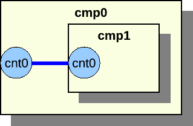
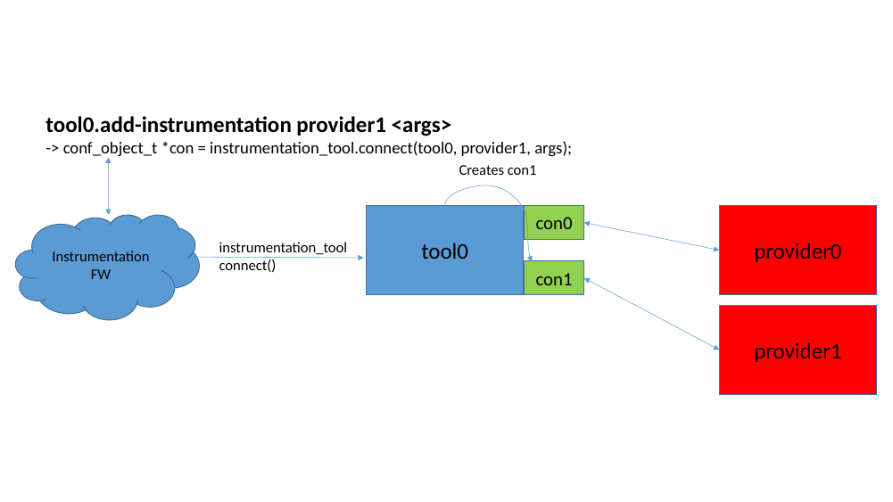

Model Builder User's Guide
This document shows how to model your hardware system in Simics and how to extend Simics with new functionality. This document does not stand alone. The Simics and DML reference manuals are invaluable for the details. It is not intended to be read from start to finish. After reading the introduction part feel free to read about the topics which interest you.
You need the Simics Model Builder product to develop models and extensions for Simics.
This document is divided into several parts:
- Introduction and Preparation
This part contains an introduction to modeling virtual system and helps you prepare for modeling by telling you how to set up your system for Simics Model Builder. The introduction to modeling is recommended for all readers. This provides an overview of the way you model your hardware in Simics and how to map hardware concepts to Simics concepts.
- Device Modeling
This part describes the device modeling concepts and introduces DML, the tool used for writing device models. DML is designed to device modeling easier and remove a lot of the repetitive and error prone work you have to do if you develop your device model in for example C. It also includes chapters on writing new commands for the Simics command line interface and how to define new interfaces between device models.
- Modeling Common Hardware Components
This part builds on the previous part and shows you how to model some common kinds of devices in Simics.
- Creating Virtual Systems
This part shows you how to assemble the parts of a virtual system into a complete system. It also shows you how to deal with memory and address spaces in Simics. This is one of the most abstract parts of modeling a system in Simics and tries to map how software sees the hardware.
- Simics API
This part explains the Simics API; its major concepts, how it is structured, how it evolves, and some rules and conventions for how to use it. It also explains how the API interacts with Simics's multithreading support, and how to make your modules safe to use in multithreaded simulations.
This document focuses on modeling the behavior of a system. Read the Analyzer User's Guide for information on modeling timing and caches in Simics.
The introduction chapter you are reading describes the concepts of system modeling and how they map to modeling in Simics. It also discusses the kind of information that must be gathered to model a system. After reading it you should have a basic understanding of what modeling is and what information about the hardware you need to gather.
Simics provides a full systems simulation environment for CPUs, boards, platforms, racks and even very complex heterogeneous systems networked together. A model provides the software running on a virtual platform within the Simics environment with a representation of the hardware interface that is exposed to the software, i.e., a "programmer's view".
When creating models, it is important to choose the right level of abstraction. A comparison can be made with the field of physics, where different models are used for solving different types of problems. For example, on the sub-atomic scale quantum mechanics is used, to compute the motion of Earth-bound objects classical mechanics is used, and for objects moving at high speed relativistic models are used. Choosing the wrong model for a problem will either make it intractable or will not provide enough detail to yield correct results. The same goes for models of digital systems where a number of different abstraction levels are typically used. As more details are added to the simulation, the slower it will run and the more costly it will be to develop. There exists a trade off between simulation speed and model fidelity. Figure 1 shows the characteristics for some commonly used abstractions. Note that the figure serves as an illustration and actual performance may vary substantially even within a specific abstraction.
Figure 1. Simulation Detail vs Simulation Speed.
A Simics functional model presents the software with a functionally accurate view into the virtualized hardware. Functional models are transaction based, applying a blackbox/transfer function approach where it is not important to duplicate how a specific result is obtained, but to duplicate what the exact transfer function will result in. For timing-critical sections (e.g., device drivers response to interrupts, etc.), Simics provides the ability to insert delays that can be fine-tuned to model not only what data is provided, but also when that data is provided to the remainder of the system.
Using this approach, a functional model can be built based solely on hardware design and interface documents combined with some knowledge of the expectations and requirements of the operating system(s) running on top of that hardware. When building a functional model, there is no need to have detailed knowledge on the inner workings of the platform or device.
Today’s systems consist of many components including multi-core CPUs, multiple platforms, accelerators, racks, and heterogeneous combinations of CPU, DSP, ASIC and FPGA all connected via standard network, or backplane communication mechanisms. Although many simulation environments and the models which they run are specific to a specific CPU core or maybe a System on Chip (SoC), these solutions fail to support the complete system. Simics support for heterogeneous models and distributed host simulation processing provides the ability to model very complex systems while retaining a level of performance that is usable for real software development tasks.
A Simics system model may consist of tens, hundreds or thousands of smaller, independent models (CPU, platform, rack, etc.), any one of which can be created by an independent engineer and/or in different modeling languages. These smaller models, standing alone from a functional perspective, are connected together using Simics component system and scripting capability, or with one of Simics communications network infrastructure models (TCP/IP, etc.) in order to provide the full systems model and simulation. This sub-element independence and flexibility allows a full system model to be created from disparate components and by leveraging in-house and 3rd party expertise.
A typical customer’s Simics model team encompasses two key areas of knowledge.
- Functional model knowledge – possessing the ability to translate a hardware block diagram and design documents into the DML language
- Simics scripting and API knowledge – possessing the ability to connect smaller model components and devices as needed to form a larger system using Simics command API, Python or C/C++
The processes when virtualizing a new system roughly follows this outline:
- Create a list of devices and processors that comprise the system by collecting and reading design specifications, programmers reference manuals, and other relevant documents.
- Based on an analysis of the expected system usage, make a preliminary decision on the necessary level of abstraction necessary for each device. Can it be ignored, stubbed, or does it need to be fully implemented? (e.g., does the RTOS use the MMU? If not, don't model it.)
- Reuse existing device models and processor models from the Simics standard library. The library makes it faster to produce an initial model, since models for many common standard parts already exist. Reuse often means adapting an existing model of a similar device, which is much faster then writing a new model from scratch.
- Create initial models of any remaining devices using the DML tool. Initially, ignore as much functionality as possible to quickly get a working basic model, but write tests for the parts you do implement to make sure they behave as intended. This also helps catch errors which may get introduced when you add more parts to the model.
- Test the new system model with software that should run on the model, and add (or stub out) any missing functionality or devices required by the software. For new devices where no software exist yet, create independent test cases.
- Iterate until the model runs the requisite software.
This methodology is the classic iterative method, where you test the model early and often in order to explore the precise requirements. Historically, this had many names, from spiral model to agile methods or test-driven development.
The goal is to obtain a model which runs the required software, but which implements only the hardware functionality necessary to run the software and exercise its interesting behaviors. Over time, more functionality can be added to the model.
Often, it is possible to start using the new virtual system almost immediately after the project start. Even a basic system that does not yet contain all components can be used to begin software development. For example, a boot loader typically requires less virtual hardware to be in place than a full operating system port. Over time, more devices will be added to the virtual system, and it will evolve towards the final model.
With Simics's modular approach, it is always possible to go back and improve any element of the model.
Figure 2. The system modeling workflow.
In Transaction-Level Device Modeling (TLM), each interaction with a device, typically, a processor reading from or writing to the registers of the devices, is handled at once: the device is presented with a request, computes the reply, and returns it in a single function call. This is far more efficient and easier to program than modeling the details of how bits and bytes are moved across interconnects, cycle-by-cycle.
In general, immediate non-pipelined completion of an operation is sufficient for modeling device's behavior. When the device driver expects a delay, that delay must be modeled, however the specific action or activity that leads to the delay does not need to be modeled. A classic example is a device that uses a hardware interrupt to signal command completion. The driver expects to be able to run code to prepare for the interrupt after writing the command to the device. In a transactional model, the device model must include a delay between the completion of the command and the interrupt signaling the completion to the system. In this manner, the device local effects of a transaction are computed immediately, but notification of completion is deferred until the proper time has elapsed.
Transaction-level models are typically implemented using the DML tool. DML provides a C-like programming language designed specifically for this type of modeling. Although device models can be written directly in C, using DML reduces development time and makes the code more readable and maintainable, and reduces the risk of making errors.
The memory map is a fundamental service provided by the Simics framework, and is a core component in enabling very fast simulation. The address space of a processor is modeled by Simics as a memory map. This approach allows the processor to directly access memories and devices without involving any explicit models of buses. This approach provides a functionally correct memory interface to the software, since software is unaware of how the data gets from the memory to the processor, and results in fast instruction execution and data access. With this approach, Simics's core memory handling is able to provide a virtual system with very fast read/write access to RAM and read access to FLASH and ROM without the requirement to involve any explicit device models.
Even when a Simics model includes a memory controller it is only used to manipulate, initialize or control the underlying activity of the Simics memory system and not as a component which is directly involved in accessing memory.
Simics also provides image objects to manage data for devices with large amounts of memory such as RAM, ROM, Flash, and disks. Image features include lazy allocation of host memory so that only data which is actually used is loaded. This allows Simics to simulate target memories which are larger than the physical memory of the host machine. Images also support incremental checkpoints of the system state.
For the simulation of PCI and similar interfaces where there are several levels of addressing being used, Simics uses subordinate memory maps cascaded from the primary memory map. This makes it easy to translate real-system mappings into the Simics system configuration. This method allows PCI models in Simics to support software probing and configuration, just like real PCI systems. The software setup is reflected in the PCI memory map, and device accesses are kept very efficient.
Figure 3. Mapping example.
The illustration in figure 3 shows a simple example of how Simics uses memory spaces to map the processor's memory range to its immediately connected memory and devices, as well as across a PCI system to Ethernet and SCSI controllers. The PCI bridge will configure the PCI memory map when the software configures the PCI system, but will not be invoked in actual accesses to PCI devices.
The DML tool has been developed to support high performance and high level abstraction for all system devices with the exception of processors. When running simulation with functional models of devices the vast majority of host processing is used to simulate the target processors. As a result processor models (sometimes referred to as Instruction Set Simulators (ISS)) provided by Simics teams are highly optimized and tightly integrated into Simics. The result is that, at peak speeds, Simics can run billions of simulated instructions per second.
In order to run all the software of a system, the processor must implement both the user-level and supervisor-level interfaces of the processors, as well as the memory-management unit and various low-level machine registers. Anything that is readable or writable from the software side has to be modeled. Simics provides a large library of fast and functionally complete and correct processor models for most common embedded and desktop architectures including PowerPC, MIPS, ARM, SPARC, and x86.
For customers with pre-existing processor models or who desire to develop their own processor models, Simics provides an API that supports the integration of those models into the Simics framework. See the Processor Model Integration Guide for details.
Recall that a full system model in Simics is comprised of multiple, smaller sub-models and that Simics provides concurrent support for multiple modeling languages. Thus, Simics provides developers with the ability to run or reuse models that were not specifically written for Simics, such as SystemC* models, custom C/C++ models, etc. The most general way to integrate such a model into a Simics simulation is to write a wrapper for the other model to translate its APIs to the Simics framework's C/C++ API.
This approach can be used for almost any type of model, including models designed to run at similar abstraction levels as regular Simics models, or other types of models such as physics or hardware description language (HDL) models. If the abstraction level or APIs used by the foreign model is very different from that of Simics, it may require advanced techniques to do such an integration. Please contact your Simics provider to get more information about options and next steps.
To enable the integration of unmodified SystemC models into a Simics simulation, use the SystemC Library add-on package. Consult the SystemC Library Programming Guide for details. Please contact your Simics provider to get access to the SystemC Library package.
Simics models take a functional approach to modeling where entire transactions are handled in a single function.
-
Models should focus on the what instead of the how.
- Model details are optimized for the software that will run on those models. Details that are irrelevant to software execution do not need to be modeled.
- Explicit pre-defined device states can be easily provided to the software.
-
Models should be incrementally created to support different phases of the product development life cycle.
- Initial model provides just enough emulation in order for the firmware team to begin their efforts.
-
Functional models can be quickly created and connected together like building blocks.
- The system configuration is separate from device models.
Before starting to build a system model, certain information should be collected. Since obtaining documentation can sometimes take time, it is a good idea to start looking for documentation and information as early as possible in a modeling project. Documents and information that Simics professionals have found to be particularly useful are:
- The system documentation, including block diagrams, describing how the components of the system are connected.
- The Programmers Reference Manuals (PRMs) for each of the main chips, devices, or functional blocks. The PRM goes by many names, such as Programming Reference, User Reference Manual, Technical Reference Manual, User Manual, and Reference Manual.
- The source code of the software such as the BSP (Board Support Package), device drivers, firmware, and operating systems, that manipulates the hardware, if it already exists.
Once you have a basic understanding of the system, you should prioritize the list of components that need to be modeled. The following approach works well for many projects:
- Identify the minimum set of components required to boot the software. Having built a functional core model, it is easy to incrementally add devices to the system. Note that the software may have to be reconfigured to use only part of a system. Alternatively identify an existing Simics reference board model that is similar enough to serve as a baseline.
- Identify the components where the most technical risk lie: both risk in developing the model as well as in the software that manipulates the component. This can be time risk or lack of documentation, i.e., anything that can lead to missing the project goals or deadlines.
- Try to identify the components that have no initial impact on your system, i.e., those that will not be manipulated or used by software. They can either be modeled by a dummy model or not modeled at all.
- Try to identify the memories in the systems that can be handled using Simics default memory modeling. This is done by reading the documentation and identifying RAM, ROM, and flash regions in the physical memory map.
Since the introduction of Simics in 1998, the process of building virtual systems has refined into the following fundamental design principles:
- Follow the hardware
- Follow the software
- Do not model unnecessary detail
- Reuse and adapt existing components
- Develop device models in DML
The overriding goal of Simics is to ensure that the software developed on the simulated system will run on the physical hardware and vice versa. A main design principle for the creation of Simics models for a system should be to follow the structure of the physical hardware closely, while abstracting functionality where possible. This includes variations of the hardware configuration. Thus, all software-visible functions have to be accurately represented in the simulation, and the easiest way to ensure this is to design the simulation model using the same component and communications structure as the physical hardware.
The components to use as the basis for understanding and decomposing the hardware system design are typically entire chips for a board design, and function blocks inside a System-on-a-Chip (SoC). From a Simics perspective, an SoC or a board are really equivalent - they both group a number of devices together with a set of processors, and provide interconnects between them. From a practical perspective, a board often contains some SoC devices, and this leads to a recursive process where the board is broken down into SoCs, and the SoCs into devices. Dividing the SoC helps the reuse of the devices when creating a new SoC.
The starting point is thus the layout of a board and the block diagram for a SoC, as presented by the programmer's reference manuals (PRMs). An important source is the memory map typically found in the PRM for both boards and SoCs, showing how devices are presented to the core processor(s) in the system.
Note that some components might be addressed indirectly and not have their own slot in the memory map. A common example is serial EEPROMs accessed over I2C from an I2C controller. The EEPROM is not visible in the memory map, but it is still accessible to the processor and needs to be considered in the model.
The ultimate goal is to have a list of the devices that make up a system and a map of how they are interconnected.
The interconnections between devices also need to be considered in order to have a good breakdown of a system for modeling. Some inter-connections are usually invisible to the software, and thus do not need to be modeled in Simics. A good example are on-chip device interconnects like AMBA, CoreConnect, and OcEAN used in various SoC designs. These interconnects are implemented using complex crossbar technology and bus arbitration which is not visible at all in Simics. Also, the hierarchy of buses used in interconnects like AMBA with its high-speed and low-speed buses is invisible. Simics goes straight to the resulting memory map.
As far as Simics is concerned, interconnects transport a payload with
a possible metadata header from one place to another.
For static routing rules this transport is modeled by adding devices
to the memory map of a processor. Interconnect configuration simply becomes
a matter of editing the mapping.
Interconnects, such as an IOMMU, that restrict access to only a subset of initiators
and also limit access based on privileged level of the CPU core initiator
has to use more advanced techniques than a static memory-map to
model this behavior correctly. See chapter Modeling Interconnects.
From a functional simulation perspective, the part of memory interconnects that is important
to model is the routing rules. How the bits are transported and in what order is out of scope.
Interconnects that do not provide memory access to devices do need to be modeled explicitly.
Typical examples are I2C and Ethernet networks, where it makes sense
to model infrastructure that transports addressed packets around as
an entity in its own right.
Implementing every available function of a system in order match the hardware
is usually not necessary to run a particular software load.
Instead, it is only necessary to implement the functions used
by the software running on the system.
This is commonly the case with integrated chips and SoC devices
which contain more functions than are used in any particular case.
One example: the Freescale MPC8548 SoC was used as a controller chip for a custom ASIC on a custom board. The MPC8548 has a rich set of external connections such as PCI express, Ethernet, I2C, MDIO, and others. In this particular case, the RapidIO functionality of the MPC8548 was not used, and thus that function could be left out from the initial modeling effort for the MPC8548. When other systems appeared that used RapidIO, the function was added.
Another example is the Marvell MV64360 integrated system controller. This controller contains a memory controller for a PowerPC processor, along with some generally useful functions like PCI, serial ports, and Ethernet. Many boards using this controller do not use the built-in Ethernet port, but instead they use an external Ethernet chip connected over PCI. In this case, the built-in Ethernet controller does not need to be included in the model of the board.
Sometimes, the software explicitly turns off such functions, and in such cases one or more control registers have to be implemented that accept the "off" setting and give a warning if any other status is written.
However, a minimum requirement is to document which features are not implemented
in the device model.
It is also good practice to include registers corresponding to unimplemented functionality in the model. Such registers should simply log a warning when they are accessed. This serves to explicitly document design assumptions in the model source code and provides an obvious indication when the assumptions are violated.
Within a device, only the functionality which is actually used by the software should be modeled. This typically means focusing on a few operation modes or functions of a device, and leaving the rest unimplemented, but explicitly so, as discussed below. Often, modeling starts with a completely unimplemented device, looking at how the software interacts with the device to determine what actually needs to be implemented.
For example, a PCI Express bridge like the PEX PLX 8524 can operate ports in both transparent and non-transparent mode. However, if non-transparent mode is not actually used in a system, it can be left unimplemented.
The device model can be simplified by reducing the number of states that the device can be in. Look for states that, from the software's perspective, are only there to optimize performance. Here are some examples:
- SCSI devices can become disconnected, and when disconnected they behave differently than when connected. In most cases, we can ignore the disconnected state, and let the device be connected all the time.
- Some network devices can be put in "early interrupt" mode, where interrupts are sent some time before a buffer fills up, to give the driver more time to handle the data. It may be possible to ignore the early interrupt state, if the driver can handle the load anyway. In this case, it is a good idea to warn the user (using
log unimpl) when the driver tries to put the device in early interrupt mode.
- Some devices cache data to speed things up and provide some means to query whether the cached value is valid. The simplest way to model this is to ignore this state, and always report "no, the cache is not valid".
Even if the software uses a functionality of the hardware, you may be able to use an approximate model. For example, for performance meters and diagnostic functions, which can be complex to implement with full fidelity. Diagnostic registers which are read can often just say that everything is okay. Performance meters can calculate approximate values when they are accessed which satisfies the software.
If you find that the driver reads values from, e.g., a JTAG port, you can look at the driver source code and try to figure out what values it expects to find (look at what it compares the data to), and make the model supply some values that are acceptable.
Sometimes it is necessary to model a bit more. One particular architecture provides interfaces to access parity bits and checksums in the caches. In its boot sequence, the OS performs a self-test on the caches by writing flawed parity bits and checking that the cache handles them gracefully (reporting error or auto correcting the data). The model of this cache thus needs to simulate the parity bits. To increase performance, however, it is sufficient to simulate this only on cache lines where the parity bits have been accessed.
When approximate or invented values are being returned from the model, it is good practice to issue a warning to the user, and/or print a message to the appropriate log file.
Note that an effect of this style of modeling is that even though a device model exists, it might not fulfill the requirements of use in a different system from the one which it was developed for. As time goes on, a device typically gains functionality as it is subject to different uses from different target system configurations and software stacks.
It is easy to fall into the trap of modeling detailed aspects of the hardware that are invisible to the software. The overhead of modeling this detail can significantly slow the simulation. A trivial example is a counter that counts down on each clock cycle and interrupts when it gets to zero. An obvious way to model this is to model the counter register and decrement it on each clock cycle until it gets to zero. Simics will waste a lot of processing resources accurately maintaining the value of the counter. But this is not necessary. The counter is only visible to the software if it is explicitly read. A much better implementation is for the model to sleep until the appropriate time to interrupt arrives. If, in the meantime, the software reads the register then a calculation will need to be done to work out what would be in the register at that point. Since this probably happens rarely, if at all, the overhead of this is minimal.
A good Simics model implements the what and not the how of device functionality. The goal is to match the specification of the functionality of a device, and not the precise implementation details of the hardware. A good example of abstraction is offered by network devices. In the physical world, an Ethernet device has to clock out the bits of a packet one at a time onto the physical medium using a 5/4 encoding process. In Simics, this can be abstracted to delivering the entire packet as a unit to the network link simulation, greatly simplifying the implementation. As far as the software is concerned, this makes no difference.
Timing of the hardware can also often be simplified to make more efficient and simple device models. For example, caches can usually be ignored, since they only affect how long it takes to access memory.
DMA controllers are another example of abstraction. In Simics, DMA is typically modeled by moving the entire block of memory concerned at once and delaying notification to the processor (or other requesting device) until the time when the full transfer would have completed on the physical hardware. The bus contention between the processor and the DMA controller is not modeled, since this is not visible to the software. For a system architect with bandwidth concerns, a more detailed model can be created that logs the amount of data pushed, allowing bandwidth usage to be computed.
Abstraction can also manifest itself by making entire devices into dummy devices. For example, a memory controller might have a large number of configuration registers and reporting registers for factors like DDR latencies, number of banks open, timing adjustments, and similar low-level issues. The effects of these are not visible in Simics, and thus they can be modeled as a set of dummy registers that report sensible values to the software.
Error states is another area which can often be simplified. Error states that do not occur under normal conditions should never be entered. Most errors are hardware induced, e.g., parity errors, failure to read firmware ROM data, etc. These will never occur in Simics, because the virtual hardware is controlled by the simulator. Not having to model these error states simplifies the model.
Sometimes, though, the errors are the interesting parts of the model. If the model is to be used in developing the error handling in a device driver, the error states need to be modeled in more detail (and some means of triggering the errors must be added). Fault-injection in simulated networks is another example.
A nice side effect of Simics-style modeling with focus on the abstract function, is that it makes it easy to reuse models of device functions across multiple implementations of the functionality. As an example, the standard PC architecture contains a cascaded 8259 interrupt controller. Over time, the hardware implementation of the 8259 has changed from being a separate chip to becoming a small part of modern south bridges like the Intel® 6300ESB. But despite this huge change in implementation, the same Simics model can be used in both cases, since the functionality exposed to the software is the same.
Sometimes, abstraction goes too far in an initial implementation, and it is later realized that details have to be added. For example, some Ethernet network device models did not implement CRC error detection but assumed that all packets delivered were correct. When the time came to model a system where the handling of erroneous network packets was a key concern, this was obviously not sufficient. Thus, the handling of CRC computation and flagging CRC errors had to be added to the models.
Once a system has been analyzed and its devices and interconnections listed, it is time to start implementing all the required devices. At this point, reusing existing device models is very important to shorten the modeling time. Simics provides a large library of device models which can be used to quickly fill in large parts of the functionality of a system.
Sometimes, the precise devices are not available in the library, but similar devices are. If your license agreement allows it, you can use the source code to these similar devices contained in source packages as a starting point and adapt and extend them to create a model of the new devices. Such adaptations of existing devices typically follow the path of hardware designers as they design successive generations of products.
The IBM Ethernet controllers found on the PPC 440GP and PPC 440GX SoCs, and also being sold as BlueLibrary IP blocks form one example of how one model has been reused and adapted to successive generations of hardware. Another example is found in Intel® chipsets for Pentium® processors; successive product generation share a significant amount of device functionality, even if the names of the chips change and the functionality is moved around between different chips.
Typically, adapting a device model involves either adding or removing registers, depending on whether moving to a less capable or more capable device. It is also commonly the case that some details in the memory map of the device changes. Thus, the work of adapting a device starts with comparing the programmer's manuals for the old and new device, and determining the following:
-
Identical registers
For an adaptation to be worthwhile, most registers should fall in this category.
-
Superfluous registers
Functions in the existing model which are not found in the new device. These have to be deleted.
-
Missing registers
Must be added to the new device model.
-
Different registers
Registers with the same function or name, but where the bit layout is different between the old and new device.
-
Differences in register layout
The offsets at which various registers are mapped in the device memory map are different.
-
Differences in the number of functions
Some devices contain repeats of the same functionality, and the difference between devices is the number of functions implemented. For example, a different number of DMA channels or Ethernet controller ports. In this case, simply changing a parameter in the device model may be sufficient.
If there are too many differences, it may be more expedient and safer to implement the new device from scratch. As in all software development, doing too many changes to a DML model might be more work to get right than to implement the complete functionality from scratch, maybe borrowing some key source code from the old device model.
Finally, once existing devices have been reused and adapted and all devices not used in the system are ignored, it is time to create device models for the remaining devices. The document that describes how to program a device is often called the Programmer's Reference Manual (PRM) and the basic methodology of writing DML models is that of implementing the PRM.
As previously mentioned, the primary interface between software and the devices is the set of device registers. The PRM defines one or more register banks that contain the registers laid out at specified offsets. The register banks function as an address space for registers, such that one four-byte register may occupy the address locations 0–3, another four-byte register occupies the address locations 4–7, and so on.
The method that many users have adapted when developing a new model is to work in an iterative fashion to determine the registers and functions that actually need to be implemented in a device in order to support software by testing the software with incomplete device models. DML and Simics support a number of techniques for efficiently exploring the needed functionality.
First, a model of the complete register map of a device is created, and registers are marked as unimplemented or dummy or implemented in a limited fashion. This device model is then used with the software, and any accesses to missing or incomplete functionality is flagged by Simics, neatly pointing out precisely what is still missing in the device model.
Any access to an unimplemented register prints a warning message on the Simics command line. The simulation is allowed to continue, since it is possible that the software is content with a default reply.
Dummy registers are registers that the software is using but where the values written can be ignored and any reads return a fixed value (or the latest value written). A typical example is an error counter in a network device, if errors are not modeled, the error counter can be implemented as always reading zero.
For functions which are needed, starting with only a single mode or a subset of the device functionality, and warning when the software moves outside this envelope, is preferred. For example, a timer might initially only support the simple count-down mode required to trigger periodic interrupts to the operating system, and later adding event-counting functions and similar advanced functionality.
Another technique is to hard-wire the results of reading or writing certain registers to an acceptable result. This is typically done based on the observed behavior of the software, providing values that the software likes.
Unlike a dummy register, the eventual goal here is to implement the real functionality of the register. The hard-wired results are mainly used early in development. The logging facilities of DML allow such hard-wired results to be easily located later and upgraded to real implementations.
The goal is to get the target software up and running as soon as possible, so that problems can be found and the risk of development reduced.
Even though you have written tests to test that the device behaves as you expect, you still need to verify that it can run the software which is intended to run on the real hardware.
How do you test a completed model to see if it is both accurate and efficient enough? Basically, you try to find software that stresses the device as much as possible. Try different OS/driver combinations, if this is a requirement. Find programs on top of the OS that exercise the device in different ways. Perhaps there are diagnostic programs that verify that the device functions correctly. If possible, it can be valuable to run the programs on real hardware prior to driving into model or application details on Simics. On more than one occasion developers have debugged a device model only to realize that the software did not work on real hardware either.
Run the selected programs in Simics, with the device model in place, and look for signs of trouble. Such signs may be
- The device reports accesses to unimplemented features. These will need to be modeled.
- The program, OS, or simulated machine behaves strangely, indicating flaws in the device model's functional behavior.
- Simulation performance is poor. The model needs to be made more efficient.
It is also a good idea to sometimes let the tests run for a longer time. This allows you to spot problems with, e.g., memory leaks in the model implementation, or diagnose situations where the driver has entered some fallback mode after seeing too many errors.
If you find a problem, write a test which reproduces it using Simics's test system. Then you can fix the bug and verify that it stays fixed. More information is read in the Debugging User-Developed Simics Modules application note.
Abstraction of time is one of the most important issues in device modeling. Simics already abstracts away some details of the timing of instruction execution and scheduling in the processor, to achieve better performance; see the Understanding Simics Timing application note for more information.
Modern device drivers are often written to be largely independent of the detailed timing of the hardware. This means the device model can alter the timing behavior quite a bit without the driver noticing.
Where possible, the device model should react immediately to stimuli, even though the real device would take some time to finish the effect. This improves efficiency, because the model is invoked fewer times, and simplifies the implementation since there is no need to store transaction state for later or insert things into the event queues.
For example, a model of a network device can send a packet immediately upon request, reading the content directly from main memory rather than, e.g., initiating a DMA transfer to an internal FIFO, waiting for it to fill up, etc. Another example is an address/data register pair, where the real device requires that the data access must not occur within a specified time from the address write. The model does not need to check for this condition, since the driver will always wait long enough before attempting to read or write the data.
It is often useful to have a simple configurable delay for hardware events that take time. Sometimes the software is sensitive to things that occur too quickly (e.g., immediately) in the model compared to the real world. Adjusting a delay attribute is a simple solution for such problems.
Often, hardware reports the completion of an action like a DMA transfer, packet transfer, or similar operation with an interrupt towards the CPU. In general, the timing of such an interrupt should be similar to what one would see on real hardware. Note that some driver software crashes if the response comes immediately, as it is not built to handle an interrupt in the middle of the send routine -- it assumes a certain delay before a completion interrupt and does not protect itself against it.
If the device performs a series of small, related events, it is desirable to cluster these events into larger chunks, even if the simulator cannot respond immediately. For example, in a DMA transfer, rather than moving a few bytes every single cycle, the simulated device can move a whole memory page at a time every N cycles, where N is adapted to give the same overall transfer rate. Again, this means the model is invoked fewer times, and furthermore it will trigger other devices less often.
Continuous events or events that occur regularly should be avoided. Instead, their effects should be computed (based on the elapsed CPU time) when they become visible. The archetypal example of this is a cycle counter: instead of invoking the model to update the value on every cycle, the model should compute the value on demand whenever the counter is read. If the value is read every N cycles, this replaces N increments with one subtraction. If the value is never read, no computation is performed at all.
This principle is valid even if the computation takes as much or more time than the sum of the individual updates: if the value is never needed, it will never be computed, and even if it is, it is usually more effective to optimize the model by reducing the number of invocations than by reducing the time spent in each invocation.
The functionality of Simics can be extended by user-written modules. Modules can, among other things, contain new device models, new commands, new components, and new extension to Simics. All of need to be compiled or built to be used in simulation and the environment in which that is done is referred to as the build environment.
This chapter will describe how to configure, maintain and use that environment to build new modules for use with Simics. A project is used to contain and build user-written modules, this permits many users to share a system-wide (read-only) Simics installation. The Model Builder product contains the necessary files and tools to develop your own modules.
To develop new modules for Simics on the Windows platform, you need the MinGW compiler suite and make tools installed. See the Simics Installation Guide for more information.
If you do not wish to use the GCC compiler, you can use the Microsoft Visual C++ compiler to compile C++ modules (n.b., the Visual C++ compiler is not supported for C modules). See section 3.5.2 for more information.
The commands below should be invoked in a cmd.exe command prompt window, and the path names should be entered with backslashes as directory separators, and bin\make.bat (a shortcut to the MinGW installation) should be used when instructed to run make.
On Linux, the project makefiles require GNU make (a.k.a. gmake), which is available from ftp.gnu.org/gnu/make. In the following text, when you are asked to run gmake, this refers to running the GNU make binary, which may be called gmake or make, depending on your installation.
Simics supplies own version of libraries, for example libstdc++.so.6, under [simics-base]/[host]/sys/lib/ directory. They are actually for machines with older libraries or none at all. If user has a more recent copy than one supplied with Simics, error like "GLIBCXX... not found" would happen when try to run a binary or load a module compiled from this newer library from within Simics. If this happens the suggested workaround is to remove the older library supplied with Simics.
A project is a directory which contains all necessary user-specific files needed to run Simics and develop modules. Setting up a project is done with the File → Create Project… or using the project-setup script, like this:
where [simics] is the location of the Simics-installation.
The script will create a project directory with the following contents:
bin/ | compiler.mk | config.mk |
|---|
doc/ | GNUmakefile | modules/ |
.project-properties | simics | targets/ |
host/ | | |
simics
Starts Simics in command line mode.bin/
Directory with various other tools.doc/
On Linux a directory with links to documentation. On Windows the documentation can be found in the start menu.GNUmakefile
Makefile to build all modules under the modules directory. The file is called GNUmakefile to signify that it requires GNU make. Do not edit this file: you should probably create the config-user.mk or module-user.mk files to change the compilation parameterscompiler.mk
Makefile that selects the C compiler to use by setting the CC variable. A matching C++ compiler will be searched for by config.mk in the same path as CC if CXX is not set.config.mk
Includes [simics]/config/project/config.mk that contains default definition of make flags for different compilers, such as CFLAGS. Do not edit this file: you should probably create the config-user.mk or module-user.mk files to change the compilation parametersconfig-user.mk
Optional file that may contain user defined make variables like D or USER_BUILD_ID. For information about USER_BUILD_ID, see chapter 39.module-user.mk
Optional file that may contain user defined make targets and variables overriding the ones in config.mk and [simics]/config/project/module.mk.modules/
Contains user-developed modules. The default target in GNUmakefile builds all modules in the modules directory.targets/
Contains some pre-configured machines, to be used as examples.- <host>/
The build working directory, which is named after the host type, for example linux64 or win64. The host directory is not present until a module has been compiled. When a module is compiled, any intermediate build files, like dependency and object files (.d .o) are generated in the <host>/obj/modules/<module>/ directory. The resulting module file is placed in <host>/lib/, and the Python command file for the module is placed in the <host>/lib/python/ directory.
.project-properties
For internal use.
When the project has been created, you may type make (or possibly gmake) to build all the modules, or ./simics to start Simics.
In order to rebuild all modules, type make clean, followed by make. In order to rebuild just a single module, type make clean-modulename, for example:
project$ make # builds all modules
project$ make clean-mymodule # removes all objectfiles for "mymodule"
project$ make mymodule # builds "mymodule"
The clean targets only remove object files and similar intermediates for the module not needed when running. To remove the actual module files as well, use make clobber or make clobber-modulename.
The project setup script is used to create and upgrade projects. It can also create module skeletons to start with when writing new devices.
See Simics Reference Manual for the full documentation of the script.
To upgrade your project to a new Simics version, run the script again with no arguments. It is also possible to update the project from the Simics GUI. The project will then be updated to match the version of the running Simics.
It will do the necessary updates in the project, but leave the user-modifiable files intact. (Modified files that need to be overwritten are saved in backup versions with the extension ".~N~" (Linux) or "~N~.backup" (Windows), where N is the first free number.)
If you upgrade to Simics with a different major version number, the compiled modules will not be compatible and you need to do a make clobber to force a rebuild when you issue make.
The modules subdirectory contains source code for modules, one module per directory entry.
To add a DML module to a project, specify the --device option.
This will create some skeleton code under the modules/ directory.
After adding a module, you can build it using the top-level makefile:
project$ gmake
To emphasize that the makefile require GNU Make, it is called GNUmakefile. The sub-makefiles in the module directories are named Makefile.
When running make, command lines will not be printed by default. To see the commands, pass V=1 to make:
project$ gmake V=1
An example module written in C can be added in the same way as DML modules, but using the --c-device option. Similarly, a C++ module can be created using --c++-device.
-
Windows
> cd my-simics-project
project> bin\project-setup.bat --c-device my_c_device
project> bin\project-setup.bat --c++-device my_cc_device
-
Linux
$ cd my-simics-project
project$ ./bin/project-setup --c-device my_c_device
project$ ./bin/project-setup --c++-device my_cc_device
The top-level makefile will automatically attempt to build all modules under the modules/ directory. If you have located a module somewhere else, you must create a symlink or junction to the module from there:
It is recommended to actually copy or move the module into the modules directory of your project.
You may need to adapt the Makefile for the project-based build environment. Use a generated skeleton Makefile as a template for your rewrite.
A module to which the source is distributed with Simics, can be copied into the project by using --copy-module.
The project makefiles are configured to compile optimized modules by default. To turn off optimization and turn on debugging, set the following line in config-user.mk:
D=1
Set D=0 or remove the line entirely to use optimization again.
The D flag can also be passed on the command line:
project$ gmake D=1
The project setup script has a default set of make-variables (CC, CFLAGS, BLD_CFLAGS, etc.), which are set up in the compiler.mk and [simics]/config/project/config.mk files. The compiler.mk may be edited by the user. Additional options can be specified in config-user.mk.
The makefile with the actual build rules for all modules is [simics]/config/project/module.mk. This file is included at the end of each module Makefile. To override rules or variables in this module.mk, add a module-user.mk file in the project, similar to the config-user.mk file described above.
The default set of variables assumes that you will be using GCC. If you want to use a different compiler, you need to change the CC variable in compiler.mk. The flags for the compiler are set up in [simics]/config/project/config.mk.
On Windows host, the Microsoft Visual C++ compiler is supported for compiling C++ modules. To use it, you have to run all project setup and build commands from a Visual Studio command prompt, which can be started from the Start menu.
The exact names of the menu items varies with the version of Microsoft Visual C++ you have installed. For Visual C++ 2008 Express Edition, it defaults to Start menu → Microsoft Visual C++ 2008 Express Edition → Visual Studio Tools → Visual Studio 2008 Command Prompt.
Once you have started the Visual Studio command prompt, set both of the CC and CXX environment variables to cl. This should allow you to run GNU make as usual.
If your compiler is not supported by config.mk, please report to Simics Support.
In order to make the build environment in Simics recognize a module as a build target, there must be a makefile called Makefile in its source directory.
A module makefile must set up a number of make variables and then include the generic makefile for Simics modules. The following is an example of a module's Makefile, for a module written in C:
MODULE_CLASSES=FAS366U
SRC_FILES=esp.c
MODULE_CFLAGS=-DFAS
SIMICS_API = 5
include $(MODULE_MAKEFILE)
A complete list of the available variables to set is provided below:
- DMLC_FLAGS
- (optional) Module-specific
parameters for the DML dependency generator and compiler
- (optional) space-
or colon-separated list of module names (optionally followed by a
subdirectory: modulename/some/path). The source
code directory of this module (or the corresponding subdirectory)
will automatically be added to make's VPATH. The
directories will also be added to the include search path for DML
and C modules (using the -I options to the compilers).
The current project as well as any installed Simics packages will be
searched for the module source code. Note that only the first matching
source code directory found will be used, allowing the project to
override the version of an installed package.
- (optional)
Additional object files to link into the module. The module build
will be dependent on these files, so additional rules can be
provided in the module's Makefile to build these
files before linking them.
- (optional)
Directories to add to VPATH when building.
- IFACE_FILES
- Header files to
compile for an interface module. If IFACE_FILES
contains file-name.h, in a Simics module named
module-name, then the Python module
simmod.module_name.file_name will be
created, containing the Python bindings for all interfaces and
types defined in file-name.h. The filenames in
IFACE_FILES must not include any directory
components; if any files are to be found in another directory,
then that directory must be included in VPATH so the file
is found correctly; e.g., by setting the
EXTRA_MODULE_VPATH variable.
See also section Restrictions in
Defining New Interface Types
in Model Builder User's Guide for restrictions and usage
of Python bindings.
- MODULE_CFLAGS
- (optional)
Parameters for the C and C++ preprocessor and compiler
- MODULE_CLASSES
- Space-separated list of configuration classes that this module
registers. This information is used by SIM_get_class()
to determine that this module should be automatically loaded when
one of the listed classes is requested.
- MODULE_COMPONENTS
- Space-separated list of components that this module
registers.
- MODULE_LDFLAGS
- (optional)
Module-specific flags for the C and C++ linker. Any particular
library linking (such as -lpthread, -lm, or -L to give paths to
search for libraries) can be included here. If the module has
dependencies on LD_MODULE_PATH, it is possible to
specify -rpath so that the module will contain the
paths that were valid at compilation time.
- PYTHON_FILES
- Space-separated list of
Python source files to include. These Python files will be
copied and potentially compiled (see COMPILE_PYC) and placed
in a Python package specific to the module. If
a module my-module includes the file file.py
in PYTHON_FILES, then the resulting Python module
will be available as simmod.my_module.file in Simics. Two
filenames get special treatment if included in
PYTHON_FILES:
- simics_start.py is automatically imported while
Simics is launched.
- module_load.py is imported by Simics when the
Simics module is loaded.
The names checkpoint_update.py and init.py
are reserved for future use, and not allowed in the list of files.
- MODULE_USER_VERSION
- (optional)
User supplied free-text string describing the module version. The
version string is available in Simics even without loading the module,
through the list-modules command or the
SIM_get_all_modules API function.
- SIMICS_API
- (optional)
Simics API to use when compiling the module. See the Simics
Migration Guide for a description on how to compile old
modules with a new Simics version. Valid API settings are listed
in [simics]/[host]/include/api-versions.mk.
- SRC_FILES
- Source files to
compile in the module. C source file names must end in
.c; C++ source file names must end in
.cc, .cpp, .cxx
or .C (the last not allowed on Windows).
DML file names must have a .dml
suffix. Any .py files should be listed
in the PYTHON_FILES variable.
- SRC_IMAGES
- (optional)
Images to copy directly in the images subdirectory in
$(TARGET_DIR)
- SYSTEMC
- If set to 'yes', provides
compiler and linker flags that allow building the SystemC Library adapter
and SystemC devices. See the SystemC Library Programming Guide
for more information.
- SYSTEMC_CORE_CFLAGS
- (optional) Parameters for the C and C++ preprocessor and
compiler when using user-specified SystemC source.
- SYSTEMC_CORE_LDFLAGS
- (optional) SystemC core specific flags for the C and C++
linker. Any particular library linking can be included here.
- SYSTEMC_MODULE_CFLAGS
- (optional) Parameters for the C and C++ preprocessor and
compiler when compiling SystemC modules.
- THREAD_SAFE
- If set to
yes, declare that the module is thread-safe.
- USE_CC_API
- It can be set
to a specific version to select which version of C++ Device API
to use. Current supported versions are '1' and '2'. See the
C++ Device API Programming Guide for more information.
- SUPPRESS_DEVICE_INFO
- If set to
'yes', suppress output of the .xml device info file
by the DML compiler.
- COMPILERS
- An optional
list of compatible compilers, in order of preference. The allowed list
element values are gcc and cl, for MinGW and Visual
Studio respectively. On platforms other than Windows, cl is
ignored.
- COMPILE_PYC
- If this is set
to 1, then the files listed in PYTHON_FILES
are compiled, not copied.
The user can also add new rules to the makefile, after the inclusion of the generic $(MODULE_MAKEFILE). This is usually not needed.
The following variables can be used in the module's makefile (i.e., [project]/modules/<module>/Makefile). They should be considered read-only, i.e., they should not be changed.
SIMICS_PROJECT is the full path to the project directory.TARGET_DIR is the directory in which compiled modules are placed ([project]/[host-type]/lib).SRC_BASE is the full path to the project modules directory ([project]/modules).HOST_TYPE is the Simics host architecture, i.e., what OS/hardware Simics has been compiled for, such as win64 or linux64.LATEST_API_VERSION is the API version you get if 'latest' is specified in the module's makefile.TARGET is the name of the module being compiled. Note that SRC_BASE and TARGET gives you access to the module source code directory, so that you can refer to source code files with absolute paths when necessary, as in $(SRC_BASE)/$(TARGET)/foo.c.
If a Makefile contains C/C++ files in the SRC_FILES section then for these C/C++ modules the writer has to provide an init_local function that registers classes/interfaces/attributes via the corresponding C API functions. The init_local is required if and only if SRC_FILES contains C/C++ sources. This is identified by suffix, .h files do not count as a C files. Refer to the following section on how to define init_local for C++ devices x.
There are a number of C/C++ pre-processor defines that are set depending on the host that the module is being compiled on. They are usually not needed, but useful in some special cases. There are also defines specifying the host architecture and host operating system. All these defines are set in the Simics include file global.h.
It is possible to set a user defined version string in loadable modules. This is done by setting the MODULE_USER_VERSION variable in the module's Makefile. The version string will be printed by the list-modules and list-failed-modules commands.
When Simics starts, it will read the supported architecture and word size for all modules on the Simics module path. Only modules that match the architecture and word size of the running Simics binary will be available for loading into Simics. While scanning the modules, Simics will also check what classes the module will register when it is loaded. This way modules can be loaded automatically when the classes that they define are used in a configuration.
If a module cannot be loaded into the current Simics, it will be added to the list of failed modules. This list can be displayed with list-failed-modules, that takes an optional parameter -v for more verbose output.
simics> list-failed-modules
Current module version number: 1050 Lowest version number supported: 1050
MODULE DUP VERSION USR_VERS LINK
---------------------------------------------
8042 1040
image 1040
spitfire-mmu.so X
The columns after the module name (or file name in the case of a link error) indicate different kinds of errors. An X in the DUP column means that this module could not be loaded because this module has the same name as another module found in the Simics module search path, and that this one was overridden. An X in the VERSION column means that the module was created for another, non-compatible, version of Simics. LINK means that this module cannot be loaded into Simics because of unresolved symbols. Use list-failed-modules -v to see the actual error message from the run-time module loader.
Modules compiled for other architectures or word lengths will not be listed
If a module requires linking against libraries that are not expected to be found on end user's systems, then these libraries can be included in a Simics package. They should be placed in host/sys/lib. For testing and development, this can also be in a Simics project, by adding the project as a package path.
On Windows, Simics will add this directory to the DLL search path for every package.
On Linux, one must also make sure that the Simics module is linked in such a way that the library is found when the module is loaded at run time, by adding this to the module Makefile:
MODULE_LDFLAGS += -Wl,-rpath,'$$ORIGIN/../sys/lib'
On all platforms, Simics will detect and warn if the same library exists in multiple packages. To avoid such problems, one can for example include a version number in the library filename.
Note that the Simics module resolution logic does not apply to these extra libraries.
If an extra library is dependent on the Simics API, it must link with the Simics library in order to make symbol lookup work correctly. This can be done by building the library as part of the Simics module that uses it, and adding these linker flags:
-L$(SIMICS_BASE)/$(HOST_TYPE)/bin -lsimics-common
The Emacs (http://www.gnu.org/software/emacs/) extensible editor is the first choice for many programmers, and Simics Model Builder includes a customized mode for editing DML source files. The DML mode is an extension of the standard Emacs editing mode for the C programming language.
Simics includes the Emacs file dml-mode.el to add support for the DML major mode. This file can be found in the [simics]/scripts directory. To use it, add the following lines to your Emacs configuration file (usually [home]/.emacs or [home]/.xemacs/init.el):
(setq load-path (cons "[simics]/scripts" load-path))
(autoload 'dml-mode "dml-mode" "DML mode" t)
(add-to-list 'auto-mode-alist '("\\.dml\\'" . dml-mode))
(you need to replace the text [simics] in the above with the full path to your Simics Base installation which includes Model Builder). After restarting Emacs, the DML mode should be automatically enabled when you open a file whose name ends in ".dml".
For more information, run the command M-x describe-mode in an Emacs buffer using the DML mode, or read the "Editing Programs" section of the Emacs documentation.
This chapter provides an overview of the workflow used when modeling devices using DML. It starts from an overview of the set up of the build environment, and moves on to actual modeling and testing. After reading this chapter you should have an understanding of the workflow used when developing device models in Simics and be ready for the details provided in the following chapters.
This chapter requires the *Model Builder * product and installation of the *QSP-x86 Package* package which provide all source code and scripts.
This section describes how to set up a functional build environment that will be used to write new devices in DML and create new configurations throughout the remaining sections of the overview. The Simics build environment depends on a working GCC compiler toolchain on Linux and Windows. On Windows, the Microsoft Visual C++ compiler can be used as well, but only for C++ modules. See chapter 3 for details.
DML provides distinct advantages for ease of model creation and performance when compared to alternative modeling languages. The DML compiler (DMLC) translates a device model description written in DML into C source code that will be compiled and loaded as a Simics module. The output of dmlc is a set of C source and header files that can be compiled in the same way as a hand-written C module would be. Refer to the DML 1.4 Reference Manual for details related to the DML language and compiler usage not covered in this introduction.
For those who prefer to create device models in C and Python, details can be found in chapter [x](writing-module-with-c.md) of this document.
The Model Builder product is installed together with Simics Base if a decryption key for it is provided. In the rest of this document the file system path of the Simics Base package directory of your Simics installation will be referred to as [simics], where also Model Builder features may exist, your "home" directory as [home], and your Simics project directory as [project]. The project is where you have all your modules and scripts to set up your system in Simics.
Shell commands are indicated by lines starting with a $ sign; you can use your favorite shell (in Windows, the builtin command prompt should suffice). Most shell commands should be issued from the project directory; this is indicated by lines starting with project$.
On the Windows platform, you need the MinGW tools installed. See the Simics Installation Guide for more information. How to set up a working Simics build environment is described in detail in chapter 3.
Any text editor can be used to write DML code, but we recommend Emacs. The Emacs DML mode is described in section 3.6.
If you install Simics Model Builder with Simics Base package, there will be example source code in [simics]/src/devices/ for many different classes of devices which can be used as the bases for writing new models in Simics. Some of the available examples are listed below:
-
DS12887
A Dallas Semiconductor DS12887 Real Time Clock. It is used in several X86 systems.
-
AM79C960
An AM79C960 Ethernet adapter. It is used in several X86 systems.
-
DEC21140A-dml
A PCI Fast Ethernet LAN controller.
-
sample-device-dml
A very simple DML device including the most common DML object types.
-
sample-pcie-device
A simple PCIe device using the DML PCIe support in Simics.
-
sample-i2c-device
A very simple device using the i2c_device interface.
This section describes how to write a simple memory mapped device and how to load it into Simics and test it. The example device code in this section is based on the sample-device-dml device which can be found in [simics]/src/devices/sample-device-dml/.
The following DML code models a memory-mapped device with a single 32-bit (4-byte) register at offset 0. Upon a read access this device will return the value 42 as the result of the operation, simultaneously printing a Simics console log message with the text "read from counter".
To compile this example device, you first need to set up a Simics project, using the project-setup script (see chapter 3 for details). Type this to setup a project in an empty directory [project]:
The project will contain project-local versions of most simics scripts. It is important to always change directory to your project directory and run the local versions of the scripts, to avoid tampering with your base installation of Simics.
Make sure you have a working MinGW installation, before you try to set up the project. See chapter 3 or the Installation Guide for details.
Pass the --device=device_name flag to the project-setup script to create Makefiles and DML skeleton files for your new device. For example:
You will now have a directory [project] containing (among other things) a GNU Makefile and a subdirectory named modules, which is where your modules are located.
A Simics module is a self contained library of code which can be loaded into Simics. Each module consists of one or more Simics classes each of which implements the some functionality useful in a simulation. This document will use the term device, when referring to a class which is a model of a piece of hardware. Your new device is called simple_device and is located in [project]/modules/simple_device/simple_device.dml. This file is only a skeleton. It implements a single register at offset 0.
The name of the main DML source file should be the module name plus the extension `.dml`. The build system does not require that the DML file nor the module have the same name as the device it is recommended to limit confusion. Additionally a module can contain more than one device though this considered advanced usage.
Now, go to the [project] directory and run GNU make. By default, this builds all your modules.
The program GNU `make` is named `gmake` on some systems. On Windows you can run the script `[project]\bin\make.bat` as a shortcut.
The newly created device model also includes a simple test using the Simics test framework. The test framework provides tools and libraries to make it easy to check that your modules behave as expected. The test framework looks for tests in several directories in your project: test, modules, and targets. We recommend that you place tests for a particular module in a subdirectory of that module's source. For example in [project]/modules/foo/test if your module is named foo. This way the test is kept close to the code it is testing.
You run tests in the project with the [project]/bin/test-runner tool or by using make. The tool can also be used to list all test suites it finds in the project. For complete documentation see the Simics Reference Manual.
When project-setup creates a new DML device, it automatically creates a test suite in the source directory for your module, with an empty test file for your device. You can run the test suite now:
project$ make test
.
Ran 2 tests in 1 suites in 0.680668 seconds.
All tests completed successfully.
We want our device to have a single register, which always reads as 42. To write a test for this behavior open [project]/modules/simple_device/test/s-simple_device.py and change it to look like this:
import dev_util
import conf
import stest
# Create an instance of the device to test
dev = pre_conf_object('dev', 'simple_device')
SIM_add_configuration([dev], None)
dev = conf.dev
# Create a register wrapper for the register
r = dev_util.Register_LE(dev.bank.regs, 0)
# Test that reading from the register returns 42...
stest.expect_equal(r.read(), 42)
# ...even if we write something else to it.
r.write(0x4711)
stest.expect_equal(r.read(), 42)
We can now run our test to check if the device behaves as expected:
project$ make test
f
[project]/logs/tests/linux64/modules/simple_device/test/test.log:1: *** failed () ***
Ran 2 tests in 1 suites in 0.872507 seconds.
Failures: 1 Timeouts: 0
You can look at the log file to get more information about the failure, but the reason is simple: the needed functionality is not implemented yet. The next section will describe how to change the device to pass the test.
Now implement the functionality needed to pass the test. Open the generated skeleton file in your favorite text editor, and modify its contents to look like as follows:
dml 1.4;
device simple_device;
param desc = "sample DML device";
param documentation = "This is a very simple device.";
bank regs {
register counter size 4 @ 0x0000 is (read) {
method read() -> (uint64) {
log info: "read from counter";
return 42;
}
}
}
The read template provides a method, read, which is called when a memory
transaction performs a read at the address of the register. Registers can also
instantiate a corresponding template write, which provides the write
method, which is called for write transactions. Instantiating either of these
templates will override the default behaviour of a register which is to acquire
its read value by reading its fields, or writing its value by writing to its
fields. It's worth looking at the DML 1.4 Reference Manual to find the details
on how defining semantics for fields and registers works.
Rebuild the module and rerun the test. You can do this in a single step since make test automatically builds all modules in the project:
project$ make test
=== Building module "simple_device" ===
DML-DEP simple_device.dmldep
DMLC simple_device-dml.c
DEP simple_device-dml.d
CC simple_device-dml.o
CCLD simple_device.so
.
Ran 2 tests in 1 suites in 0.638387 seconds.
All tests completed successfully.
You can read more about writing functional tests for your models in chapter 17.
Congratulations you have now created your first Simics module. You can find the module binary in the [project]/host/lib directory.
In order to interact with our device from the Simics prompt, we need to create a simple machine with our device (refer to section 29 for more detailed information about Simics configuration scripts). For now, just create the file [project]/targets/vacuum/my-vacuum.simics with the following contents:
run-script "%script%/vacuum.simics"
@SIM_create_object("simple_device", "dev1")
phys_mem.add-map dev1.bank.regs 0x1000 0x100
The script above creates an almost empty machine with our sample device mapped at 0x1000 in the phys_mem memory space. Please note the dev:port syntax, which is the preferred way of mapping a bank in memory.
We can now start the newly created machine configuration and interact with our device:
project$ ./simics targets/vacuum/my-vacuum.simics
simics> phys_mem.read 0x1000 -l
This returns value of 42 and causes the log message "read from counter" to be printed.
DML has direct support for writing log messages to the Simics logging facility, through the log statement. The most important logging concepts are the type and the verbosity level of the message. The most common message types are info and error. The verbosity level is a number between 1 and 4, where 1 is used for important messages that should always be displayed, and 4 is used for detailed debugging messages that should only be printed when verbose logging has been requested. Error messages are always printed regardless of verbosity level setting. By default, Simics only displays messages of level 1 on the console.
In the previous example, no level was provided, which will make it default to 1. To set the level of a message, add it after the type string, but before the colon, as in:
log info, 2: "This is a level 2 message.";
To change what messages are displayed, use the log-level command.
simics> log-level 4
This will cause all log messages with log-level 1-4 to be displayed. Now make a memory access to the device, as before:
simics> phys_mem.read 0x1000 -l
This time (apart from the "read from counter" message), you should see an info message saying something like
"Read from register regs.counter -> 0x2a". This is logged by the built-in code that handles register read accesses,
and such messages can be very useful when debugging a device model.
A Simics configuration consists of a machine description and a few other parts, and it is divided into a number of configuration objects. Each device instance in the configuration is represented by such an object. Any Simics configuration object has a number of attributes. An attribute is a named property that can be read or written using the Simics API. The value of an attribute can be an integer, a floating-point number, a string, an object reference, a boolean value, a list of values, or a mapping from values to other values.
Attributes are used for several related purposes, but the most important uses are for configuration and checkpointing. The internal state of a device object must be available through the attributes, so that a checkpoint of the current state can be saved by reading all the attributes and storing the values to disk. By reloading a configuration and setting all attributes from the previously saved checkpoint, the states of all devices can be restored to the checkpointed state and simulation can continue as if it had never been interrupted. When creating a new configuration, some of the state must be given an explicit initial assignment, which makes those attributes also part of the configuration. There may also be attributes that are not part of the state, in the sense that they do not change during simulation. Instead, they control the behavior of the model, such as buffer sizes, timing parameters etc. Those configuration attributes can generally not be modified once the object has been created.
Attributes can also be used as a simple interface to an object, e.g., for inspecting or manipulating the state for debugging purposes.
A DML device model usually defines a number of attributes. By default, each register defines a corresponding attribute that can be used to get or set the register value, but more attributes can be defined by explicitly declaring them in the DML source.
Registers in DML automatically create a corresponding integer attribute, which stores the value of the register. In our example above, for the register counter of bank regs there will be a device attribute named counter under the regs bank sub-object.
The attribute can be accessed from the Simics command line. Continuing the example from the previous sections, enter:
simics> dev1.bank.regs->counter = 17
and then enter
simics> dev1.bank.regs->counter
which should print the value 17.
However, if a new memory access is performed:
simics> phys_mem.read 0x1000 -l
The message "read from counter" and the value 42 is still generated. However, entering dev1.bank.regs->counter once again still returns 17. What is going on?
The answer is that the read method is hard-coded to always return 42, no matter what. But this does not affect the behavior of the attribute, or the write method. Let us try to make a write access:
simics> phys_mem.write 0x1000 0xff -l
Entering @conf.dev1.regs_counter now prints the value 255 as expected. You can change the line
return 42;
in the program to:
return this.val;
recompile, and try the same accesses again to check how a normal register would behave. Then change the code back to return 42 for the rest of this section.
It is in fact often useful to create registers which either return a constant (usually zero), or return a value that is computed on the fly.
A full implementation of such a "synthetic" constant register could contain method definitions like the following:
method write(uint64 value) {
/* do nothing */
}
Try adding them to the body of the register, recompile, and run the example again.
The standard library file utility.dml contains several pre-defined templates for common implementations such as this one. To use it, add the declaration import "utility.dml"; to your source file. The constant register can now simply be implemented as follows:
register counter size 4 @ 0x0000 is constant {
param init_val = 42;
}
or, if you still want to get a log message for each read access:
register counter size 4 @ 0x0000 is (constant, read) {
param init_val = 42;
method read() -> (uint64) {
local uint64 to_return = default();
log info, 1: "read from counter";
return to_return;
}
}
As you can see, the example overrides the read method
provided by the read template to hook in "after-read" behavior by executing
code after the default call.
It is sometimes useful to have device attributes that are not associated with any register. To define the attribute to behave as a data field, which stores a value of a simple data type such as int64 or bool, use one of the builtin templates as follows:
attribute int_attr is int64_attr "An integer attribute";
The available attribute type-templates are `uint64_attr`,
`int64_attr`, `bool_attr`, and `double_attr`. See
the *DML 1.4 reference manual* for details about how these work.
Try adding this code to your device, either before or after the bank, recompile and rerun the example. Enter the following command:
simics> help attribute:dev1.int_attr
This prints some information about the attribute. Note that the descriptive string you specified in the program is included in the online documentation.
You can now experiment with setting and getting the value of the attribute; e.g., entering
simics> dev1->int_attr = 4711
simics> dev1->int_attr
should print 4711.
If it is important that other parts of the device are updated whenever the value of the attribute is modified, the method set can be overridden to perform such updates. Override the default implementation, call into the default, and perform any side-effects you need either before or after the default call. For example:
method set(attr_value_t value) throws {
local uint64 before = this.val;
default(value);
log info: "Updated from %d to %d", before, this.val;
}
Add this method to the body of the attribute, recompile and restart Simics, then try setting and getting the value of the attribute.
If you want the attribute to do things differently, such as not store
the value between calls, or use a more complex data type, you need to
do more work on your own, instead of using the provided simple
attribute-type templates; see the DML 1.4 Reference Manual for details.
It is a relatively common scenario that setting an attribute should cause some side effect. For example, setting the "i2c_bus" attribute of an I2C device should trigger an interface call to the bus object to register the device on the bus. This side effect could also depend on the value of a second attribute. In our I2C device example, an address needs to be supplied when registering the device. This address could be that second attribute. Since the initialization order of attributes in a DML device model is undefined, this could pose a problem. In a C model the initialization order is defined, but it is usually a good idea to not depend on it.
In order to avoid these potential problems it is recommended to delay any side effects, until the finalize phase. This makes the attribute setting phase a "dumb" phase where no side effects should occur. In particular, it is strictly forbidden to call the interface of another object before this phase. The finalize phase corresponds to the post_init method of a DML model, and the finalize function of a C model. At that point, all attributes of all objects in the simulation has been set. After the finalize phase, the object is said to be configured.
There is a number of situations that causes an attribute to be set. The most obvious ones are when starting a Simics script, loading a checkpoint or restoring a snapshot. However, connecting and disconnecting components using the Simics CLI will in most cases also cause some attributes to be set. Therefore, for most complex attributes, it is necessary to perform a conditional test on whether the object is configured or not. This can be done with SIM_object_is_configured. If the object is configured the side effect should be executed immediately. If the object is not configured the side effect should be delayed until the finalize phase. If the side effect in post_init/finalize calls the interface of another object (or invokes functionality in that other object in some other way), it is necessary to call SIM_require_object on that object before making the call. Below is an example of how to do this in DML.
Normally setting attributes should not produce any side effects in order to ensure proper operation after restoring a snapshot. This is described in more detail at the end of this section.
dml 1.4;
device doc_attrib_init;
param desc = "sample device to show attribute init";
param documentation = "A sample device to show attribute initialization";
import "simics/devs/i2c.dml";
attribute address is uint64_attr {
param documentation = "I2C address";
method set(attr_value_t value) throws {
default(value);
log info, 1: "%s was set to 0x%x", qname, this.val;
}
}
connect i2c_bus {
param documentation = "The I2C bus that this device is connected to";
param configuration = "optional";
interface i2c_bus;
method set(conf_object_t *new_obj) {
log info, 1: "Entering setter of %s", qname;
if (obj) {
log info, 1: "Unregistering from I2C bus %s",
SIM_object_name(obj);
i2c_bus.unregister_device(dev.obj, address.val, 0xff);
}
default(new_obj);
log info, 1: "%s set to %s", qname, SIM_object_name(obj);
if (!obj || !SIM_object_is_configured(dev.obj))
return;
log info, 1: "Registering with I2C bus %s",
SIM_object_name(obj);
i2c_bus.register_device(dev.obj, address.val, 0xff, I2C_flag_exclusive);
}
}
// Stub i2c_device interface implementation to keep the bus happy
implement i2c_device {
method set_state(i2c_device_state_t state, uint8 address) -> (int) {
return 0;
}
method read_data() -> (uint8) {
return 0;
}
method write_data(uint8 value) {
}
}
method post_init() {
log info, 1: "post_init called";
if (i2c_bus.obj) {
SIM_require_object(i2c_bus.obj);
log info, 1: "post_init: Registering with I2C bus %s",
SIM_object_name(i2c_bus.obj);
i2c_bus.i2c_bus.register_device(dev.obj, address.val, 0xff,
I2C_flag_exclusive);
}
}
The example above shows a very simple I2C device. It is actually so simple that it does not do anything, all methods where the actual functionality of a real device would be implemented are just stubs. However, this simple device demonstrates how to connect a device to a bus in a correct way. When the i2c_bus attribute is set, the device should register to the I2C bus object by calling the register_device of its i2c_bus interface. If it is already connected to another bus, it should unregister from that bus first. Note that to register to the bus, the address attribute is needed, so there is a possible attribute initialization order problem.
This is solved in the set method of the i2c_bus connect. Before going ahead and calling the interface function, the device checks if it is configured. If it is not, nothing is done, since it is not allowed to call interface functions of other objects at this point. As if that were not enough, we cannot even be sure that the address attribute has been set yet, and that attribute is needed to register.
Since the device is not configured, we know that sooner or later, its post_init method will be called, and here we can call the register_device interface function, but only after making sure the bus object is ready to handle the call, using SIM_require_object.
Back to the set method of the i2c_bus connect. If the device is configured, the i2c_bus object has been configured as well, and the address attribute has already been set, so all that remains is to call the interface function to register to the bus. If the device was already registered to another bus it must first unregister from it. This was done in the same method, before the default call.
A number of things has been left out of this device to keep the example short and comprehensible, things that should be included in a production device model. For example, there are no checks that bus registration succeeds, and there are no checks for exceptions after calling SIM_* functions. Furthermore, this model does not support changing its address when connecting to another I2C bus, since it has to be unregistered from the old bus with the same address as it was registered with.
In general, it is not a good idea to have logging in attribute setters like we have in the device above. When restoring snapshots, attributes will be set and the logging would cause a lot of text with no informative value to be printed on the Simics console. In this example, the log messages are there for demonstrative purposes.
Running the simple test case below illustrates how this works.
import conf
# SIMICS-21634
conf.sim.deprecation_level = 0
print('Create object')
bus1 = pre_conf_object('bus1', 'i2c-bus')
bus2 = pre_conf_object('bus2', 'i2c-bus')
dev = pre_conf_object('dev', 'doc_attrib_init')
dev.i2c_bus = bus1
dev.address = 0x47
SIM_add_configuration([dev, bus1, bus2], None)
if conf.bus1.i2c_devices != [['dev', 0x47]] or conf.bus2.i2c_devices != []:
SIM_quit(-1)
print("Switching to bus2")
conf.dev.i2c_bus = conf.bus2
if conf.bus2.i2c_devices != [['dev', 0x47]] or conf.bus1.i2c_devices != []:
SIM_quit(-1)
print("Test passed")
The output should look something like the following. Note that in this example, the i2c_bus attribute was indeed set before the address attribute:
Create object
[dev info] i2c_bus setter about to be called
[dev info] i2c_bus set to bus1
[dev info] address was set to 0x47
[dev info] post_init called
[dev info] post_init: Registering with I2C bus bus1
Switching to bus2
[dev info] i2c_bus setter about to be called
[dev info] Unregistering from I2C bus bus1
[dev info] i2c_bus set to bus2
[dev info] after_set: Registering with I2C bus bus2
Test passed
Normally the act of setting an attribute should not produce any side effects. When introducing attributes with side effects it is important to consider snapshots restoring; where attributes are set from previously stored values. For example, it is not allowed to change any state that can be observed by the target software. For example, side effects that should not be performed are, raising interrupts or modifying registers that have their state stored in other attributes. A typical side effects that is performed is to handle connection of objects such as links. This will not cause any software visible state changes and are thus allowed.
This section includes an overview how to use interfaces in Simics. As this part of the overview deals with more advanced topics, you might prefer to skip this section and come back to it when you want know more about interfaces and connections between objects in Simics.
Section 5.5 includes a more light-weight description of how to use interfaces and can be uses as reference.
In addition to attributes, Simics configuration objects can have interfaces, which are sets of methods with specific names and types. An object can also implement port interfaces. Each port has a name and implements one or more interfaces. This makes it possible for a device to implement the same interface more than once, but with a separate name for each implementation.
A Simics configuration consists of a number of interacting configuration objects; for example, the machine vacuum consists of a clock, a memory space, and a RAM. The clock acts as a pseudo-CPU and is needed to drive time. Each of these is represented as a separate configuration object, and the interaction between the objects is done through interfaces.
To take a concrete example: when a CPU wants to make a memory access, the CPU will look up which object represents its physical memory (via an attribute) and call the access function of the memory_space interface implemented by that object.
A very fundamental question in this context is; how does one object find another object? Usually, objects are connected through attributes; e.g., a CPU object could have an attribute that holds a reference to a memory space object, and the memory space object has an attribute that contains mapping information, which includes references to the mapped objects, and so on. Such bindings are typically set up in the components or the configuration scripts for a simulated machine, and are not changed after the initialization is done.
DML has built-in support both for letting your device implement any number of interfaces, and for connecting your device to objects implementing particular interfaces.
In general, the DML built-in constructs and standard libraries are successful at hiding details of the Simics API from the user.
The following is a simple implementation of the signal interface, designed to be used with the example device in section 4.2.1. Note the use of an attribute for storing raised so that the value can be checkpointed.
attribute raised is uint64_attr "current signal value";
implement signal {
method signal_raise() {
raised.val += 1;
log info: "Signal raised to %u", raised.val;
if (raised.val == 0)
log error: "Too many raises (counter wraparound)";
}
method signal_lower() {
if (raised.val == 0)
log error: "Too many lowers (counter wraparound)";
raised.val -= 1;
if (raised.val == 0)
log info: "Signal cleared";
else
log info: "Signal lowered to %u", raised.val;
}
}
The signal interface is for instance used for interrupt signals. A device connected to another device implementing the signal, calls signal_raise() to raise the signal from low to high, and signal_lower() to lower the signal from high to low.
The method declarations within an implement section are translated directly into C functions as expected by the Simics API; a pointer to the device object itself is automatically added as the first argument to each function. The methods can only have one or zero output parameters, which correspond directly to return values in C. In this example, the C function signatures for signal_raise and signal_lower are:
void signal_raise(conf_object_t *obj);
void signal_lower(conf_object_t *obj);
A DML device can implement port interfaces by placing one or more implement sections inside a port section.
For more details about Simics interfaces and data types see the API Reference Manual.
The standard way to connect caller and callee via an interface is done by having an object attribute in the caller pointing at the callee. The attribute is typically set up in an initialization script or component. Although it is possible to write an attribute definition, suitable for connecting an object with a particular interface by hand, it is much better to use a connect definition in DML, which creates such an attribute with minimal effort. It also allows you to connect to an object or a port of an object without any additional work.
An interface, in Simics, is a struct containing function pointers, and the definition of the struct must be visible both to the caller and the callee. The convention in the Simics API is to use a C typedef to name the struct type, using the suffix _interface_t, and the DML compiler by default follows this convention when it generates interface-related code. For example the io_memory interface is described by a data type io_memory_interface_t, which is a struct containing two function pointers map and operation. If the user wants to create new interfaces, he must write his own struct definitions; this is demonstrated below.
In the following example a second device is created and connected to the first device via a user-defined interface. Start with the example device in section 4.2.4. In our test of the connection in section 4.3.3.4 we have also assumed the device was renamed "connect_device" by changing the device declaration on the second line of code. Add the following declaration:
connect plugin {
interface talk {
param required = true;
}
}
Replace the line "log info: …;" with the following C function call:
plugin.talk.hello();
Note that the first argument to the C function is omitted, since it is assumed to be the object that is providing the interface. This is standard in most interfaces used in Simics.
The device will now have an attribute named plugin, which can hold object or port references; the attached objects are required to implement the talk interface. However, the module can not yet be compiled to module, since it is missing the definition of the interface.
When writing several related models, it is often useful to share code between them to reduce code duplication. The two kind of files that are most often shared are
- DML files that are imported by other DML files
- C header files that are included by the generated C code
As an example of sharing DML code, we will show how to define an interface and use the same definition in several models.
First, create the file [project]/include/talk.dml with the following contents:
dml 1.4;
typedef struct {
void (*hello)(conf_object_t *obj);
} talk_interface_t;
This typedef will create a new struct type that is also exported to a C header so it can be used by any C code including that header file..
Then, add this line to the example device code, to import the new file:
import "talk.dml";
Finally, edit the Makefile for the example device: [project]/modules/simple_device/Makefile, and add the following option to the definition of DMLC_FLAGS:
-I$(SIMICS_PROJECT)/include
in order to tell dmlc where to look for additional include files.
You should now be able to compile the example device with the connect added as described above.
Sharing C header files is similar to the above: just add a C compiler "-I…" flag to the CFLAGS variable in the makefile, and instead of the DML import directive, use a C #include within a header section, as in:
header %{
#include "stuff.h"
%}
Create a new object that speaks the talk interface, which can be used to connect to the device. For this purpose, add a new module to the project, as follows (cf. section 4.2.1):
Edit the generated skeleton file [project]/modules/plugin_module/plugin_module.dml to look like this:
dml 1.4;
device plugin_module;
param documentation =
"Plugin module example for Model Builder User's Guide";
param desc = "example plugin module";
import "talk.dml";
implement talk {
method hello() {
log info: "Hi there!";
}
}
The only way to use the objects of this class is through the talk interface - there are no memory-mapped registers or similar connections.
Do not take the term "device" too literally; a DML source file does not have to model a piece of hardware - it just defines a class that can be loaded in Simics.
Also edit the device makefile: [project]/modules/plugin_module/Makefile, and add the option -I$(SIMICS_PROJECT)/include to the definition of DMLC_FLAGS, just as for the first example device.
Simply running make test (or gmake test) from the [project] directory should now compile both modules and run the tests. As you can see the test fails:
project$ make test
[...]
.f
[project]/logs/tests/linux64/modules/simple_device/test.test.log:1: *** failed () ***
Ran 2 tests in 2 suites in 1.274424 seconds.
Failures: 1 Timeouts: 0
The reason for the failure is that simple_device has a new required attribute, which needs to be set to an object or port implementing the talk. We need to update the test to make this connection. Change [project]/modules/simple_device/test/s-simple_device.py to look like this instead:
import dev_util
import conf
import stest
# Create an instance of the devices to test
dev = pre_conf_object('dev', 'connect_device')
plugin = pre_conf_object('plugin', 'plugin_module')
dev.plugin = plugin
SIM_add_configuration([dev, plugin], None)
dev = conf.dev
# Create a register wrapper for the register
r = dev_util.Register_LE(dev.bank.regs, 0)
# Test that reading from the register returns 42...
stest.expect_equal(r.read(), 42)
# ...even if we write something else to it.
r.write(0x4711)
stest.expect_equal(r.read(), 42)
Now the tests pass:
project$ make test
[...]
..
Ran 2 tests in 2 suites in 1.542259 seconds.
All tests completed successfully.
To make it easy to integrate a device model in a complete simulated system it should be wrapped in a component. A component is a Simics concept. Each component represents a hardware unit in the system: PCI devices, motherboards, disks, etc.
The main advantage of components is that they provide a high level view of the system. Instead of performing a lot of low level connections between device models — some which reflect the hardware, and some which are artifacts of the way the models work — you connect logical high level components: PCI cards, Ethernet devices, motherboards, and so on.
If a device model is part of an SoC or board in the hardware it is part of the SoC or board component, but if it is not part of any other such part it is wrapped in its own component. This is often the case with for example PCI devices.
Components are connected to each other via connectors. Each connector has a type and a direction. Common types are Ethernet ports, PCI slots, and serial connections. The direction of the connectors are similar to how physical plugs work: you can only insert a male plug in a female plug, not another male plug.
Connecting at this high level removes a lot of potential for error, and the components only allow connections which make sense: for example you cannot insert a PCI connection in an Ethernet port.
This section describes how to write a simple component for a PCI device. A more detailed description about components can be found in chapter 26.
Here is a very simple PCI component:
import simics
from comp import StandardComponent, SimpleConfigAttribute, Interface
class sample_pci_card(StandardComponent):
"""A sample component containing a sample PCI device."""
_class_desc = "sample PCI card"
_help_categories = ('PCI',)
def setup(self):
super().setup()
if not self.instantiated.val:
self.add_objects()
self.add_connectors()
def add_objects(self):
sd = self.add_pre_obj('sample_dev', 'sample_pci_device')
sd.int_attr = self.integer_attribute.val
def add_connectors(self):
self.add_connector(slot = 'pci_bus', type = 'pci-bus',
hotpluggable = True, required = False, multi = False,
direction = simics.Sim_Connector_Direction_Up)
class basename(StandardComponent.basename):
"""The default name for the created component"""
val = "sample_cmp"
class integer_attribute(SimpleConfigAttribute(None, 'i',
simics.Sim_Attr_Required)):
"""Example integer attribute."""
class internal_attribute(SimpleConfigAttribute(None, 'i',
simics.Sim_Attr_Internal |
simics.Sim_Attr_Optional)):
"""Example internal attribute (will not be documented)."""
class component_connector(Interface):
"""Uses connector for handling connections between components."""
def get_check_data(self, cnt):
return []
def get_connect_data(self, cnt):
return [[[0, self._up.get_slot('sample_dev')]]]
def check(self, cnt, attr):
return True
def connect(self, cnt, attr):
self._up.get_slot('sample_dev').pci_bus = attr[1]
def disconnect(self, cnt):
self._up.get_slot('sample_dev').pci_bus = None
The example component code can be found in [simics]/src/components/sample-components/.
Components in Simics are written in Python. How to create components will not be explained in depths here. Only the most important parts will be discussed, see chapter 26 for a complete reference.
In the example, the module is named sample-components and the component is named sample_pci_card. The StandardComponent is the base Python class which includes the basic functionality required for a component. Our class definition starts with a Python docstring which will be used as a class description. The _class_desc is a shorter description of the class. This component only has one connector and it is a PCI connector. The component can be connected to other components with connectors of the type pci-bus. The connector is set to be non hot-pluggable, meaning that you can not connect and disconnect the PCI card at anytime and expect it to work. USB components are for instance hot-pluggable.
In the add_objects() function all objects which are part of the component are defined. The default object attributes are also set here. The example component contains a sample_pci_device device called sample_dev.
The connector of the type pci-bus is added in add_connectors(). It creates a connector object in its component's namespace through a slot called 'pci_bus'. Note that connectors must be instantiated even if the component has been instantiated. See section 26.6.10.2 for the reason.
The class will automatically be registered in Simics and instances can be created based on it. The component will also get new- and create- commands with the class name as suffix with underscores replaced by hyphens.
To compile this component you need to set up a project. You can use the same project you created in 4.2.1. To create a new skeleton component named foo_component use the following command:
Or to copy the already existing sample_component component, use the following command:
Now, go to the [project] directory and run GNU make. By default, this builds all your modules.
Note that this component is dependent on the sample-pci-device class, and you cannot create a sample-pci-card without it.
Now it is time to test the PCI card. The PCI card will be connected to the Firststeps machine. This requires that you have installed the QSP-x86 Package.
Load the configuration:
project$ ./simics targets/qsp-x86/firststeps.simics
Write this on the Simics console after loading the configuration:
simics> load-module sample-components
simics> $card = (create-sample-pci-card integer_attribute = 13)
simics> connect "board.mb.sb.pci_slot[0]" $card.pci_bus
simics> instantiate-components
The create-sample-pci-card command creates a non-instantiated sample-pci-card and connects it to the south bridge on Firststeps machine using the board.mb.sb namespace. The instantiate-components command instantiates the sample-pci-card.
It can be better to create a new start script by copying the commands above to a script named sample-pci-card.simics and start Simics:
project$ ./simics targets/qsp-x86/firststeps.simics sample-pci-card.simics
To list all components in this configuration type list-components. You will see that the configuration contains many components:
simics> list-components -v
ethernet_switch0 - ethernet_switch (top: board)
------------------------------------------------------------------
device0 ethernet-link any board.mb.sb:eth_slot
device1 ethernet-link any service_node_cmp0:connector_link0
device2 ethernet-link any <empty>
sample_cmp0 - sample_pci_card (top: board)
------------------------------------------------------------------
pci_bus pci-bus up board.mb.sb:pci_slot[0]
board - chassis_qsp_x86 (top: board)
------------------------------------------------------------------
service_node_cmp0 - service_node_comp (top: none)
-----------------------------------------------------------------
connector_link0 ethernet-link down ethernet_switch0:device1
Each component has an instance name, a component name, and a top-level component pointer. The board object points to itself as it is the top-level component in this configuration. All machines are based on a top-level component. The top-level component is the root of the component hierarchy and is often a motherboard, backplane, or system chassis.
From left to right, the columns show, for each component, the connection name, the connection type, the direction, and the connected component:connection name. The output for the example shows that the sample_cmp0 component is connected to board.mb.sb on board component via the pci_slot[0] connector.
Now it is time to boot the system. Start the simulation and wait to you see login prompt. Now it possible to verify that Linux have found the PCI card. Use the lspci command to list PCI devices:
(none):~# lspci
00:00.0 PIC: Intel Corporation 5520/5500/X58 I/O Hub to ESI Port (rev 13)
00:01.0 PCI bridge: Intel Corporation 5520/5500/X58 I/O Hub PCI Express Root Port 1 (rev 13)
...
07:00.0 Non-VGA unclassified device: Texas Instruments PCI1050
It worked! Linux found our fake Texas Instruments PCI card without any problem.
This chapter describes the basic concepts of Device Modeling Language (DML). This is not a complete guide, see the DML 1.4 Reference Manual for more details. The intention of this chapter is to describe the basic concepts of DML to understand how to model devices which will be discussed in more detail in later sections.
DML hides many of the mechanics of interacting with Simics to make the development of device models easier. For example, DML takes care of all module initialization, so nothing needs to be performed when a DML module is loaded in Simics.
Each DML file mentioned in the module's Makefile defines a Simics class automatically. The class name is provide by the device statement at the beginning of the DML file:
device my_device;
DML models devices as a set of nested parts called objects. Each attribute, bank, register, etc is a separate object. The objects can contain other objects as well as methods, session or saved variables, and parameters. Many types of objects only make sense in particular contexts. A complete list of object types and the restrictions on how they can be nested is provided in the DML 1.4 Reference Manual. The set of object types is fixed and you can not extend it.
To refer to objects you give the names of all objects from the device to the sought object separated by ., ending with the name of the sought object. Example:
the_device.my_attr.my_data = 4;
Do not confuse this concept of object with configuration objects in Simics. They are not the same.
All variables declared in the DML file are automatically defined as object-scope data, which means that DML automatically defines the class structure from which objects will be instantiated. For example:
session int link_id;
defines a link_id variable in the object structure.
Additionally, local variables can be declared within method bodies. These variables are not part of the object structure..
Parameters are mostly compile-time constant-valued object members. You can only set their value once. A parameter can be set to a value of any of the types integer, float, string, bool, list, reference or undefined. The type is automatically set from the value. To declare a parameter use the param keyword:
param some_parameter = "the value of the parameter";
In addition, in some cases a parameter can be given an explicit type. This
will make it part of the type of whatever template it is declared within.
param some_parameter : uint64;
Each object also declares some parameters automatically. Read the DML 1.4 Reference Manual for a complete list.
In code you refer to parameters by directly by using their name.
method some_method {
log info: "some_parameter: %s", some_parameter;
}
In section 5.6 you can read more about how parameters interact with templates.
Registers defined in the DML files are automatically registered as both object structure variables and attributes. The line:
register aprom_0 size 1 @ 0x00 "Address PROM (MAC address)";
will define a variable in the object structure that contains the value of the register aprom_0. It will also define a corresponding attribute so that the state of the register can be saved and restored during checkpointing.
You can also manually add attributes in DML. All that is required is an attribute declaration, including name and type. If the type of the attribute is simple then using a built-in template is advised, this will
setup the storage for the attribute and provide default set and get methods.
To understand attributes in DML, please first refer to section 4.2.7 which gives an overview of attributes. When programming in DML it is especially important to make sure that the attribute initialization order is correct. If this is not the case some Simics features such as checkpointing and snapshotting may not work; this is covered in detail in section 4.2.7.3.
The simplest possible attribute holds the value of a simple data type and allows the attribute to be read and written without any side effects. Let us take the example of a counter attribute:
attribute counter is int64_attr {
param documentation = "A sample counter attribute";
}
The int64_attr template provides the necessary semantics
for a simple int64 type attribute. It tells Simics type
system to check the value in set and get operations
for an integer type, and sets the internal representation of the
attribute value. There are a few other built-in templates that provides
similar functionality for some basic types. See the
DML 1.4 Reference Manual for details.
When the data type of an attribute is more complex, the type parameter
must be set, and the set and get methods must be
provided. Here is an example of this;
param type = "n";
method set(attr_value_t val) throws {
// [...]
}
method get() -> (attr_value_t) {
// [...]
return SIM_make_attr_nil();
}
The n type simply means a "null" type that cannot be assigned a
value.
A slightly more complicated example is a pseudo attribute which, when setting values, will add to the value of the counter, and for which getting is an error.
attribute add_counter is write_only_attr {
param documentation = "A sample pseudo attribute";
param type = "i";
method set(attr_value_t val) throws {
counter.val += SIM_attr_integer(val);
}
}
Here, the write_only_attr template informs simics that the attribute
cannot be read, and will provide the necessary get method for you.
We cannot use both the write_only_attr and the int64_attr templates
since they have conflicting definitions of get, so we must provide
the type param and a custom set method.
Note that no type check is required in the set method, since the type i is unambiguously checked by Simics before calling the set method such that only integer values can be assigned.
DML provides generic error handling for attributes whose types are simple
enough to use one of the built-in templates. The default behaviour of these
templates is for the get to be equivalent to a C/Python attribute
getter function that returns an attr_value_t of the appropriate
value kind, and for the set method to verify that the value is
in-bounds for the type, and setting an appropriate attribute error if the
value is incorrect. For most attributes it is recommended to use one of
the built-in templates.
For more complex attributes as described in section 5.3.2, where the implementer provides custom get and set methods, these methods are responsible for handling and returning any error that may result from the attribute access. They become strikingly similar to how an attribute access function written in C, and most attribute error handling concepts from C can indeed be directly translated to DML. Section 15.4.3 contains the details about attribute errors in C and Python.
The difference between DML and C is the return value of the methods. To signal that a DML attribute set
+method encountered an error, the throw statement is used. The effect is that the method is stopped immediately at the point of the throw. The implementer has the option to specify a message to provide details about the error using SIM_attribute_error before throwing.
DML uses registers and banks to model hardware registers. Banks represent continuous address ranges containing registers. The registers are mapped in their banks with an offset and size. A bank can also contain registers without an offset. These registers are not accessible with memory operations.
A register can be further split into fields. Each field is a range of bits in the register. The value remains
stored in the register, the field merely contains a reference to it.
A register bank (or simply bank) is an abstraction that is used to group registers in DML. A bank is defined by using the keyword bank. A device can have one or more banks. Each bank can be individually mapped in a memory space by specifying the name of the bank as the function to map. This is described in chapter 25.
The same bank can be defined several times. Doing this often helps when looking at the code for a large device with many registers. For example, the first definition at the top of the file only list all registers and their offsets.
Later the bank is defined again, but this time with the register functionality. Try splitting up your bank like this:
bank regs {
register r size 4 @ 0x0000;
}
//[...]
bank regs {
register r is read {
method read() -> (uint64) {
log info: "read from r";
return 42;
}
}
}
Note that you can only set register size and offset once.
Registers in DML contain integer values, which are unsigned. The most important parameters for registers are their size and offset. You can specify these parameters as any other, but it is easier to use the shorthand notation:
register r size 4 @ 0x1000;
This defines a register r of size 4 which is mapped at offset 0x1000 in the register's bank. Memory accesses to this location will access the register. The default behavior of registers is to return the register's value when read and set the register's value when written. This behavior can be changed by overriding the
write_register or read_register methods. For details
on these methods, see the DML 1.4 Reference Manual.
register r size 4 @ 0x1000 {
method read_register(uint64 enabled_bytes, void *aux)-> (uint64) {
log info: "Reading register r returns a constant";
return 42;
}
method write_register(uint64 value, uint64 enabled_bytes, void *aux){
log info: "Wrote register r";
this.val = value;
}
}
A more simple way of modifying the behavior is to use the
read or write templates, and then overriding
the corresponding read or write methods.
register r size 4 @ 0x1000 is (read, write) {
method read () -> (uint64) {
log info: "Reading register r returns a constant";
return 42;
}
method write (uint64 value) {
log info: "Wrote register r";
this.val = value;
}
}
Real hardware registers often have a number of fields with separate meaning. Registers in Simics also support fields. Let us assume bit 0 in register r is a status bit and bits 1-4 are a counter. It would look something like this:
bank regs {
register r size 4 @ 0x0000 {
field status @ [0];
field counter @ [4:1] is read {
method read() -> (uint64) {
log info: "read from counter";
return default() + 1;
}
}
}
}
method init() {
// [...]
if (regs.r.status.val == ENABLED) {
// [...]
}
}
Using field names instead of doing bit-slicing on the register helps to understand what is happening in the device when reading the code. It is also possible to write special methods for the fields.
Fields support some of the same methods and templates as a register.
The most common methods are get, set. While secondarily
the read and write methods provided by the similarly named
templates are also common. These methods behave the same for fields as for
registers.
The get and set methods of a register are used when you access the register as an attribute. Implementations of these methods should not have any side effects apart from getting and setting the register's value. The default behavior of the methods depends on whether the register has any fields or not. For registers without fields the methods work the same way as the corresponding methods for attributes. For a register with fields the methods take care of calling the corresponding methods of the register's fields. The get method merges the results from the calls to the fields' get methods and the set method splits the value into one part for each field and sends the parts on to the fields' set methods. Note that for fields where the set or get templates are not instantiated, the register will not call into their corresponding methods as a matter of optimization.
In DML it is possible to define rows of registers or banks as register and bank arrays. The sample code below defines a bank array of size two, where each bank contains two registers in a single array.
bank func[i < 2] {
register ctrl[j < 2] size 4 @ 4 * j is read {
method read() -> (uint64) {
log info: "read from %s -> %#x", qname, this.val;
return this.val;
}
}
}
This creates four registers in total each of which has their own state (value) but shares the same behavior (methods).
Each bank in a bank array is mapped individually in memory spaces, normally in a component file, with the same name but different indexes. The following code maps the banks defined above into the memory space mem\_space at offsets 0x100 and 0x200, respectively.
mem_space.map = [[0x100, obj.bank.func[0], 0, 0, 0x100],
[0x200, obj.bank.func[1], 0, 0, 0x100]]
Register func[0].ctrl[0] will then be mapped at address 0x100, func[0].ctrl[1] at 0x104, func[1].ctrl[0] at 0x200 and func[1].ctrl[1] at 0x204, respectively.
Bank and register arrays are apt for modeling devices containing several identical units where each of the units performs the same functionality but operates independently to each other. An example of this is the virtual functions in PCIe SR-IOV devices.
Interfaces is the mechanism used in Simics when Simics objects, such as device models, need to communicate with each other. A DML device can both implement interfaces to provide additional services which other devices and objects can call, and call methods in interfaces implemented by other objects. This section describes how to do this in DML.
Using an interface in a module implemented in DML, is done by connecting an object to the device model you are developing, specifying which interfaces you are planning to use.
The connect section performs two things at the same time: it defines an attribute that can take an object or an object and a port name as its value, and it tells the DML compiler that a number of interfaces belonging to this object or port can be used in the current device model.
The following code will create an irq_dev attribute that accepts as a value only objects or ports implementing the signal interface.
connect irq_dev {
param documentation = "The device that interrupts are sent to.";
param configuration = "required";
interface signal;
}
Once an object has been connected, using the interfaces that were specified is simple:
// [...]
if (!irq_raised.val && irq_dev.obj) {
log info, 3: "Raising interrupt.";
irq_dev.signal.signal_raise();
}
// [...]
To connect the created attribute set it to either a configuration object implementing the correct interfaces or a configuration object and the name of a port in that object which implements the interfaces.
Here is a Python example how to do the connection to an object:
dev.irq_dev = intc
And here is an example showing how to connect to a port:
dev.irq_dev = [intc, "input_levels"]
In both examples dev is the object implementing the connect, and intc is an object implementing the signal interface. In the second example input_levels is the name of the port in intc implementing the interface.
Implementing an interface in DML is done with the implement declaration, which contains the implementation of all the functions listed in the interface. The interface is automatically registered by the DML compiler so that other objects can use it on the current device model:
implement ethernet_common {
// Called when a frame is received from the network.
method frame(const frags_t *frame, eth_frame_crc_status_t crc_status) {
if (crc_status == Eth_Frame_CRC_Mismatch) {
log info, 2: "Bad CRC for received frame";
}
receive_packet(frame);
}
}
A device can use interface ports to have several implementations of the same
interface. The ports have names that can be used to select the implementation
when connecting to the device. Use a port declaration in DML to define a new
port. See example:
port pin0 {
implement signal {
method signal_raise() {
log info: "pin0 raised";
}
method signal_lower() {
log info: "pin0 lowered";
}
}
}
port pin1 {
implement signal {
method signal_raise() {
log info: "pin1 raised";
}
method signal_lower() {
log info: "pin1 lowered";
}
}
}
Every bank declaration also acts as a port, which means that interfaces implemented inside a bank belong to the port defined by the bank. This allows to map each register bank separately.
The DML compiler will create a port object for each DML port and bank. These are automatically created sub objects of the device object that are specified when connecting other devices to the port or bank. See 35 for more information about port objects.
Port objects for DML ports are created in a port namespace under the device object. For example, if there is a DML port named irq in a device object named pic the full name of the port object will be pic.port.irq.
These port objects are specified when connecting other objects to the port. For example, connecting the irq output of a UART object (perhaps implemented as a DML connect in that device) to the irq port of our pic object may look like this in the component code:
uart.irq = pic.port.irq
Port objects for DML banks are created in a corresponding bank namespace under the device object.
The Simics API defines a number of useful interface types, but sometimes they are not enough, for example if you are using a bus type that is not supported by the predefined interface types.
To define new interfaces you should create a new interface module. This is described in chapter 11.
Templates are a powerful tool when programming in DML. The code in a template can be used multiple times. A template can also implement other templates. Templates are commonly used on registers, but they can be used on all DML object types. Here is a simple template:
template spam is write {
method write(uint64 value) {
log error: "spam, spam, spam, ...";
}
}
bank regs {
// [...]
register A size 4 @ 0x0 is spam;
Register A will write spam, spam, spam to the console when someone writes to it.
Templates in combination with parameters are even more powerful:
template lucky_number is read {
param extra_1 default 1;
param extra_2;
method read() -> (uint64) {
local uint64 value = this.val * extra_1 + extra_2;
log error: "my lucky number is %d", value;
return value;
}
}
bank regs {
// [...]
register B size 4 @ 0x4 is lucky_number {
param extra_2 = 4711;
}
The extra_1 parameter has a default value so there is no need to define it in B. But extra_2 must be defined in B as it does not have a value set. The DML compiler will return an error if extra_2 is not set, forcing everybody using the template to set it.
The DML library contains many standard templates which can be used on registers and fields. The most common ones are the read and write templates which provides simple access points (the read and write methods) to modify the behaviour of registers or fields. The DML 1.4 Reference Manual lists all standard templates and their functionality.
In addition to facilitating code-reuse by defining templates for common functionality, templates can also be used as a sort of "inheritance" mechanism in DML. For example, two devices may be almost similar except for some parameters and a few functional differences. In this case the common functionality can be implemented as a template, to be shared between the devices where the differences is abstracted out to parameters and methods that are specialized in the two (or more) devices. In a somewhat artificial example, a device may have several banks that have registers that byte-swaps any value written to them. The banks may have different ways to control if the swapping should take place. In this case it is possible to implement the common functionality in a template and to specialize the individual banks. The listing below shows an example of such a device, with comments inlined.
dml 1.4;
device byte_swapper;
param desc = "byte swapper";
param documentation = "This device implements byte swapping functionality";
// This is a template that implements basic byte swapping
// functionality. An object implementing this template must define
// the should_swap and get_name methods.
template swapper {
// Swap value and returns the result. Swapping will only
// take place if should_swap returns true. It will also write a
// log message based on the get_name method.
method swap(uint32 value) -> (uint32) {
if (should_swap()) {
log info, 2: "Swapping in %s", get_name();
value = (value & 0xff) << 24 | (value & 0xff00) << 8
| (value & 0xff0000) >> 8 | (value & 0xff000000) >> 24;
}
return value;
}
}
// This template implements a general swap enable/disable
// functionality through a configuration register. An object
// implementing this template must define a register named CONF with a
// one-bit bit-field named SWAP.
template swap_conf {
method should_swap() -> (bool) {
return CONF.SWAP.val == 1;
}
}
// This template is a bank-template and implements a register bank
// with a configuration register and a byte-swapping register. It also
// implements the swapper template, it ISA swapper.
template swap_bank {
is swapper;
is bank;
param register_size = 4;
param byte_order = "little-endian";
register CONF @ 0 {
field SWAP @ [0];
}
register SWAP @ 4 is read {
method read() -> (uint64) {
return swap(default());
}
}
}
// swap1 bank, implements swap_bank and swap_conf. Swapping is
// controlled through the CONF.SWAP bit.
bank swap1 {
is swap_bank;
is swap_conf;
method get_name() -> (const char *) {
return "swap1";
}
}
// swap2 bank, implements swap_bank and swap_conf. Swapping is
// controlled through the CONF.SWAP bit.
bank swap2 {
is swap_bank;
is swap_conf;
method get_name() -> (const char *) {
return "swap2";
}
}
// swap_always bank, implements swap_bank template, but not the
// swap_conf template. Swapping is always enabled.
bank swap_always {
is swap_bank;
method should_swap() -> (bool) {
return true;
}
method get_name() -> (const char *) {
// Here we leverage the name parameter instead of manually
// specifying the name.
return name;
}
}
In the above example the get_name and should_swap methods are specialized in the various bank instances. Although for the should_swap specialization for the bank swap1 and swap2 is done in a common template, the swap_conf template. This is a good example of using multiple templates to build more and more specialized instances using common code. Below is a simple test case for the byte-swapper device.
import dev_util as du
import stest
# Create a sample_swap object and raise the log-level
s = SIM_create_object('byte_swapper', 's', [])
s.log_level = 4
# Create a register accessor for the CONF and SWAP registers in bank
# swap1
conf1 = du.Register_LE(s.bank.swap1, 0)
swap1 = du.Register_LE(s.bank.swap1, 4)
# Write a value to s:swap1:SWAP, it should NOT be swapped because CONF
# is 0
swap1.write(0xdeadbeef)
stest.expect_equal(swap1.read(), 0xdeadbeef)
# Now write 1 to CONF, to make the value swapped
conf1.write(1)
stest.expect_equal(swap1.read(), 0xefbeadde)
# Same thing for bank 'swap2'
conf2 = du.Register_LE(s.bank.swap2, 0)
swap2 = du.Register_LE(s.bank.swap2, 4)
swap2.write(0xdeadbeef)
stest.expect_equal(swap2.read(), 0xdeadbeef)
conf2.write(1)
stest.expect_equal(swap2.read(), 0xefbeadde)
# Now for the swap_always bank. The SWAP register will now swap
# without setting the CONF register.
swap = du.Register_LE(s.bank.swap_always, 4)
swap.write(0xdeadbeef)
stest.expect_equal(swap.read(), 0xefbeadde)
This is the corresponding test log.
=BEGIN s-swap -----------------------------------------------------------------
[s info] Write to register swap1.SWAP <- 0xdeadbeef
[s info] Read from register swap1.SWAP -> 0xdeadbeef
[s info] Write to register swap1.CONF <- 0x1
[s info] Swapping in swap1
[s info] Read from register swap1.SWAP -> 0xefbeadde
[s info] Write to register swap2.SWAP <- 0xdeadbeef
[s info] Read from register swap2.SWAP -> 0xdeadbeef
[s info] Write to register swap2.CONF <- 0x1
[s info] Swapping in swap2
[s info] Read from register swap2.SWAP -> 0xefbeadde
[s info] Write to register swap_always.SWAP <- 0xdeadbeef
[s info] Swapping in swap_always
[s info] Read from register swap_always.SWAP -> 0xefbeadde
=END s-swap 0.4 s -------------------------------------------------------------
Logging support is built into the language. Log outputs are made with the log statement as follows:
log type[, level [ then subsequent_level ] [, groups] ]: string[, value1, ..., valueN];
where the parameters mean:
-
type:
One of the identifiers:
info: Normal informational messageerror: Unexpected error in the model (indicates a bug in the model)critical: Serious error that will interrupt the simulationspec_viol: Target program violates the specificationunimpl: Attempt to use not yet implemented functionality
-
level:
An integer from 1 through 4, determining the verbosity level at which the message will be logged. The default is 1. This parameter has no effects if type is either error or critical and may be left unspecified if groups (see below) is not used.
-
subsequent_level:
An integer from 1 through 5. If specified, all logs after the first issued will be on the verbosity level subsequent_level. A subsequent_level of 5 means no logging after the initial log will be done.
-
groups:
One or several log groups, defined by the global declaration loggroup. See section 5.7.1 for details. Several log groups can be combined with the bitwise or operator "|".
-
string, values:
A formatting string, as for the C function printf(), optionally followed by a comma separated list of values to be printed.
A small example:
loggroup example;
method m(uint32 val) {
log info, 4, example : "val=%u", val;
}
Log groups help debugging by grouping log-messages based on different parts of the device functionality. Each log message is associated with a number of groups as described above, and each log object has a builtin CLI command <object>.log-group to select which groups of log messages to show. The log messages of an Ethernet device can for example be divided into different groups for the receive logic and the transmit logic. You can then choose to only see log messages for the part you find interesting when running Simics.
If a log message specifies no log group, it is unaffected by which log groups that are currently selected.
Log levels are very helpful when it comes to finding bugs or examining what is happening inside a device. The default log-level in Simics is 1. Different log levels target different groups of users:
- Log levels 1-2: Any user
- Log level 3: Developer of target software that interacts with this device
- Log level 4: Developer of the model itself
Here are some logging examples of DML Ethernet controller that will help you to choose the appropriate log-level.
- log-level 1
Important messages that must be brought to the user's attention. Example: "Receive buffer functionality is not implemented."
- log-level 2
High level informative messages like mode changes and important events. Example: "Port status changed to link-up."
- log-level 3
Detailed information for target software developer. Example: "Received an ARP frame with correct CRC."
- log-level 4
Debugging level with low level model detail. Mainly used for model development. Example: "External buffer allocated at address 0x1000BEAF with 512 bytes."
In a hardware simulation, it can often be useful to let something happen only after a certain amount of (simulated) time. This can be done in Simics by posting an event, which means that a callback function is placed in a queue, to be executed later in the simulation. The amount of simulated time before the event is triggered is usually specified in a number of seconds (as a floating-point number), but other units are possible; see the DML 1.4 Reference Manual for more information about the timebase parameter.
The callbacks and posting is handled by declaring event objects. A simple event example looks like this:
event future is uint64_time_event {
method event(uint64 data) {
log info, 1 : "The future is here";
}
}
The uint64_time_event template is a built-in template that provides
the necessary wrappings for an event that is posted on seconds and that takes an
uint64 as a data argument. The event() method is
called with the posted data when the queue reaches a posted event.
There are other built-in templates for posting with other callback argument
types, or other time units. See the DML 1.4 Reference Manual for more
information on these.
To post an event, use the post() method on the DML object. Note that
the signature of the post() method depends on the event template that
is used.
// post an event 0.1 s in the future
future.post(0.1, 0);
Every posted event can be associated with data.
In the most simple cases you can use the simple_event variants
of the built-in event templates to use no data argument, but sometimes the
callback needs some more information about the action to be performed.
When posting an event using the post method,
data can be provided depending on which built-in template variant was used.
If you need more advanced data types than the ones provided by the built-in
templates, you must use the custom_event variant of the the template.
The data will then become a generic data pointer that you can re-cast as needed.
To support checkpointing, all custom events must implement a few more methods.
The get_event_info is called when
creating the checkpoint to convert the event data to an attr_value_t that can be stored in the checkpoint. When restoring from a checkpoint, the set_event_info method is called to convert from an attr_value_t to a data pointer that can be passed to the event callback.
If the data pointer points to newly allocated memory that is only passed to the post method, the allocated data is owned by the event. This means that it is up to the event method to deallocate the memory. But sometimes events needs to be removed before they are reached, and events using allocated memory must implement a destroy method that is passed the data pointer. This method should deallocate the data without performing any other action. The destroy method may not access the Simics configuration, since it may be called while removing objects.
If you changed your mind and a posted, but not yet handled, event is no longer valid, it can be canceled by calling the remove() method on the event object. Note that the signature of the remove() method depends
on which built-in event template was used for the event.
future.remove(some_data);
To find out if there is an event posted but not yet handled, the method posted() can be called, and to get the time remaining until the event will be handled, the method next() will return the time as specified by timebase. Again, note that the signature of both of these methods depend on which built-in event template was used for
the event.
local bool is_this_event_posted = future.posted(some_data);
local double when_is_this_event_posted = future.next(some_data);
DML also provides a convenient shortcut with the after statement. An after statement is used to call a DML method some time in the future. The arguments to such method must be serializable by DML, as they will be stored in checkpoints. For more information on serializable types see the DML 1.4 reference manual. Method calls posted by after can be cancelled similar to events by calling the cancel_after method on the DML object that contained the method from which the event was posted. This will cancel after events that have been posted by methods of that object.
// call my_method() after 10.5s
after 10.5 s: my_method();
The DML program continues immediately with the next statement following after, i.e., the event is executed asynchronously. Refer to the DML 1.4 Reference Manual for more information.
It is possible to modify our example to post an event when the register is written to, as follows:
dml 1.4;
device sample_device;
param documentation = "Timer example for Model Builder User's Guide";
param desc = "example of timer";
import "utility.dml";
bank regs {
register delay size 4 is unmapped;
register r size 4 @ 0x0000 is write {
method write(uint64 val) {
this.val = 0;
delay.val = val;
ev.post(delay.val);
log info: "Posted tick event";
}
event ev is simple_time_event {
method event() {
r.val++;
log info: "Tick: %d.", r.val;
this.post(delay.val);
}
}
}
}
In the example, the register itself functions as a counter, which is reset to zero upon a write access; the written value is used as the delay in seconds. Once the event happens, it re-posts itself after the same interval. Note the use of the unmapped register delay to store the delay internally. The counter could have been placed in a session field instead, or in a more realistic example the counter could have been placed in an additional register. Note that the post method's signature is dependent on the template instantiated by the ev event, in this case simple_time_event means that it takes no arguments.
A device that posts events must be connected to a clock object, which controls when the event is executed. All processor objects function as clocks. This is done by setting the queue attribute of the device. After recompiling and restarting Simics, enter:
simics> @SIM_create_object('sample_device', 'dev1')
simics> dev1->queue = timer
simics> phys_mem.add-map dev1.bank.regs 0x1000 4
This connects your device to the clock timer, which was pre-defined by the vacuum target.
Now enter the command continue (or c for short). This simply runs the simulation of the hardware. You should see no messages, since there is nothing exciting going on in the machine, except that the clock is ticking away. Press Ctrl-C to pause the simulation and get back to the prompt.
Now write a large value to the register:
simics> phys_mem.write 0x1000 10000 -l
and enter c again. You should see "Tick"-messages being written at fairly short intervals. Press Ctrl-C and write a lower value to the register:
simics> phys_mem.write 0x1000 1 -l
then start the simulation again. The messages are now printed at high speed (although not ten thousand times as fast). The lesson from this is that simulated time is not strictly proportional to real time, and if a machine has very little to do, even 10,000 seconds can be simulated in a very short time.
In this simple case, the event is not associated with any data. All event that have non-NULL data pointer must implement more methods to support check pointing. See section 5.8.1 for more details.
Note that it is often bad for Simics performance to post many events; a counter such as the example device above could have been implemented in a more efficient way. See sections 2.3.3 and 2.3.2 for details.
As the Simics profiling and event viewing systems are based on listening to haps it can be useful for a device to directly trigger haps rather than relying on haps built into the memory, link, and processor models. In these situations the model has to choose between a standard Simics hap and a user defined hap. Standard haps have the benefit of documentation and predefined hap handlers. User defined haps have the advantage of specificity.
Before handlers can be notified of a new hap, the hap must be known. A new hap type is made known through registration. Registering a new hap type is done with the function SIM_hap_add_type(). The signature is:
hap_type_t
SIM_hap_add_type(const char *hap,
const char *params,
const char *param_desc,
const char *index,
const char *desc,
int old_hap_obj);
where the parameters are:
-
*hap*
The name of the hap, which must be unique
-
*params*
A string specifying the number of parameters of the hap and their types. The return value and the first two parameters of the callback function are always the same and are not included in the list. A valid parameter description string contains only the following type description characters:
- `i` – int
- `I` – int64 (64 bit integer)
- `e` – exception\_type\_t
- `o` – object (i.e., void\* in DML and C, and a Python object in Python)
- `s` – string
- `m` – memory transaction (`generic_transaction_t *` in DML and C)
- `c` – configuration object (`conf_object_t *` in DML and C)
- `v` – `void *`
-
*param_desc*
space separated list of descriptive parameter names (in the same order as `params`, so that the first word is the name of the first parameter. If `param` is the empty string, `param_desc` may be None.
-
*index*
A string describing the index value for the hap, or None if there is no index value. The meaning of indexes is up to you to define.
-
*desc*
A human readable description of the hap.
-
*old_hap_obj*
Always 0.
The return value is a handle that must be saved for operations on the hap.
Example:
session hap_type_t hap_handle;
method init() {
[…]
hap_handle = SIM_hap_add_type("My_Special_Hap",
"ii",
"val1 val2",
NULL,
"Triggered when something special"
" happens in my module.",
0);
if (hap_handle <= 0) {
/× error handling ×/
[…]
}
}
This registration will be executed once for every instance of the device model, but when SIM_hap_add_type is called with the same arguments it will avoid registering a duplicate hap type and instead return the handle of the previous registration.
Whenever the condition for the hap is met, the handlers for the hap should be notified. Triggering a hap incurs some overhead; if it occurs in performance-sensitive code, it may be beneficial to use one of the SIM_hap_is_active_obj or SIM_hap_is_active_obj_idx functions to check if there are any handlers prior to calling the notification function.
bool SIM_hap_is_active_obj(hap_type_t hap, conf_object_t *NOTNULL obj);
bool SIM_hap_is_active_obj_idx(hap_type_t hap,
conf_object_t *NOTNULL obj, int64 index);
where the parameter hap is the value returned from SIM_hap_add_type() or from SIM_hap_get_number() if using a standard hap type. These predicates are approximate, but if they return false, there is no need to trigger the hap since no installed functions would be called.
The notification to handlers is normally done by calling one of SIM_hap_occurred(), SIM_hap_occurred_vararg(), SIM_hap_occurred_always(), and SIM_hap_occurred_always_vararg(). See the API Reference Manual for information about the differences.
int
SIM_c_hap_occurred_always(hap_type_t hap,
conf_object_t *obj,
int64 value,
...);
The parameters are:
-
*hap*
The handle to the hap type, as returned from `SIM_hap_add_type()` and `SIM_hap_get_number()`.
-
*obj*
The object for which the condition is met.
-
*value*
Only meaningful if the hap is indexed. The meaning is defined by you.
The hap parameters will be provided as additional parameters to the function. A short example:
method some_meth(int v1, int v2) {
if (some_condition) {
if (SIM_hap_is_active_obj(hap_handle, dev.obj))
SIM_c_hap_occurred(hap_handle, dev.obj, 0, v1, v2)
}
}
This chapter provides some insights into various guidelines and recommendations for how to build high quality models that integrate and perform well in Simics. You may also refer to chapter 8 for further guidance.
The intention of this chapter is to standardize how to write DML devices. This includes how to structure the source code and naming DML objects, DML files, and devices. The purpose is to learn how to produce readable and maintainable code.
The DML device name must contain the modeled device identification name. It is not recommended to name the device after the type of device (such as "watchdog" or similar), as there can be more than one device of that type in Simics.
The complete human-readable device name should be set using the device's desc parameter.
Example: a TBD4711 watchdog device should be named TBD4711 and its desc parameter should be set to "TBD4711 watchdog".
Running the project-setup script will give you a DML skeleton file and module directory with the same name as the device and in general this pattern should be followed. Occasionally when modeling a chip with distinct logical units which are not used individually it is appropriate to model both devices in one module directory, see section 9.5 for guidelines. The other case where deviation from standard naming is appropriate is when the device name is overly long. In these cases the following rules should be followed:
- The full name should be used when naming the module directory
- If the full name is too long name the DML file after a distinct shortened version, or the type of device. Example; a DML file for a TBD4711 watchdog with blinking lights device should be named
TBD4711.dml or watchdog.dml.
- When modeling a chip with multiple distinct logical units, name the module directory after the chip and name the DML files after the logical units. Example; a watchdog unit in the BAR17 SoC should be named
BAR17_watchdog.dml or watchdog.dml.
- Try to avoid using company names, or long device specific version numbers. Be sure to include this information in the Device Name or
desc parameter
Descriptive bank names are vital to make the DML code easy to read. Bank names are also used when mapping regions in memory spaces.
This is the priority list when naming a bank:
- Registers are often documented in groups in the Programmer's Reference Manual for a device. It is best to use the group name from the manual when implementing a device from a user manual.
- Name the bank after the logical unit type, if the registers are not grouped, or the device is a logical unit in a SoC.
- The last alternative is to name the bank
regs to highlight that the bank contains common registers.
The register field definitions can be written in several ways. Here are some examples of recommended ways to define fields.
register a size 4 @ 0x0 {
field Enable @ [0:0];
field Disable @ [4:1];
field Trigger @ [31:11];
}
register b size 4 @ 0x4 {
field Enable @ [0];
field Disable @ [4:1];
field Trigger @ [31:11];
}
register c size 4 @ 0x8 {
field Trigger @ [31:11];
field Disable @ [4:1];
field Enable @ [0];
}
The field order should always comply with the device documentation. It is otherwise hard to compare code and documentation.
It is often better to use @ [0:0] when there are several multi-bit fields in the device. But it is better to use @ [0] in a register with only single-bit fields.
This section proposes a DML file structure that makes DML code easy to read. Keep in mind that you have to adapt these recommendations for your own devices.
The recommended order is:
-
file description
A DML file should always begin with a short description of the file in a comment.
// sample-dma-device.dml - sample DML code for a Simics DMA device. In this
// case used to illustrate how to structure DML code.
-
version declaration
The version declaration is required. It defines the DML version this file is
written for. A device can consist of DML files written for different DML
versions.
dml 1.4;
-
device declaration
A device must contain a device declaration when defining a device.
device dml_structure;
-
device short description string
Add a short, one-line string describing the device.
param desc = "example DMA device";
-
device documentation string
Add a string describing the device.
param documentation =
"Example of a DMA device supporting contiguous memory or scatter-gather "
+ "lists. The device has a controllable throughput (words per second) "
+ "and supports either polling mode or interrupt based signalling upon "
+ "DMA completion.";
-
Add C code to the beginning of the generated C file. Create a new C file and
include it if there is a lot of code to add. Try to avoid adding C code if
you can.
header %{
static double compute_delay(double throttle, int count);
%}
-
import
Import additional DML files. Avoid using paths when importing files. It is better to add paths to the Makefile.
import "utility.dml";
import "simics/devs/signal.dml";
#
# Example Makefile
#
[…]
DMLC_FLAGS = -I$(SIMICS_BASE)/src/import-dir
See also the documentation on EXTRA_MODULE_VPATH in section 3.5.3.
-
extern
Add all extern declarations.
extern double compute_delay(double throttle, int count);
-
types
Declare types used in this file only. Place common declarations in a DML file and import it when it is needed.
typedef layout "big-endian" {
uint32 addr;
uint16 len;
uint16 reserved;
} sg_list_head_t;
-
constant
Add all constant declarations.
constant DEFAULT_THROTTLE = 1e-6;
-
parameter
Add all parameter declarations.
param byte_order = "big-endian";
-
loggroup
Create log groups for the different functional units of the device.
loggroup lg_interrupt;
-
connect
All external connections.
connect target_mem is map_target {
param documentation =
"The memory on which the DMA engine operates. Data will be "
+ "read from and copied to the memory associated with this memory.";
param configuration = "required";
}
-
attribute
Attributes for the device.
attribute throttle is (double_attr) {
param documentation =
"Delay in seconds per 32-bit word of memory copied, default is 1μs.";
param configuration = "optional";
}
-
bank declarations
Basic declarations of the contents of each bank. The purpose of having the bank declarations early in the file is to help code readers to get a quick overview of the device. The declaration of a bank should only contain basic declarations of its registers, by defining their names, offsets, description strings and templates. It is usually recommended to place each bank in a separate DML file, but if a device contains smaller banks that are tightly coupled, it can be better to place them in the same DML file.
bank regs {
param register_size = 4;
register DMA_control @ 0x00 "Control register";
register DMA_source @ 0x04 "Source address";
register DMA_dest @ 0x08 "Destination address";
register DMA_interrupt_posted is (unmapped)
"Internal register to track if interrupts are posted.";
}
-
implement
The implement declarations often require more code than for example the connect or the attribute declarations. It is therefore added after the bank declaration.
bank regs {
param register_size = 4;
register DMA_control @ 0x00 "Control register";
register DMA_source @ 0x04 "Source address";
register DMA_dest @ 0x08 "Destination address";
register DMA_interrupt_posted is (unmapped)
"Internal register to track if interrupts are posted.";
}
-
event
Event declarations are added to this part of the file for the same reason as implement declarations.
event delay_transfer is (uint64_time_event) {
method event(uint64 data) {
// [...]
}
}
-
session/saved
Always be careful when adding session variables. Such variables are not checkpointed with the rest of the configuration. Saved variables should be used instead for simple checkpointed state; however, the types of saved variables are restricted to what is considered serializable, meaning non-pointer types and (nested) structs and arrays of such types.
session bool external_disable;
Never use generic session variables for state data even if attributes save and restore the data when checkpointing. It is better to define session variables in attributes and write specific get and set methods to save the data.
attribute foo {
session int bar;
method set(attr_value_t attr) {
bar = SIM_attr_integer(attr) * 2;
}
}
[…]
foo.bar = 4;
-
common methods
Define device generic methods. Bank specific methods should instead be added to the bank definition.
method read_mem(void *dst,
physical_address_t src,
physical_address_t len) throws {
local exception_type_t exc;
local buffer_t buf = { .data = dst, .len = len };
exc = SIM_issue_read_transaction(target_mem.map_target,
src,
buf,
false,
dev.obj);
if (exc != Sim_PE_No_Exception) {
log error: "an error occurred when reading target memory";
throw;
}
}
-
template
Add templates used in this file only. Place common templates in a DML file imported everywhere the template is used.
template dma_starter is (register) {
method write_register(uint64 value, uint64 enabled_bytes, void *aux) {
default(value, enabled_bytes, aux);
do_dma_transfer();
}
}
-
bank definition
This part defines the actual register and field functionality for all banks. Unimplemented register templates should be added to the bank declaration not to the bank definition. However, registers with unimplemented fields should be added here. Non device specific methods should be added to the bank definition. This prevents the global scope from being clobbered. The bank definition part tends to be very long compared to the bank declaration part. The bank definition part does not give a good overview of all registers.
bank regs {
register DMA_control is (dma_starter) {
field EN @ [31] "Enable DMA";
field SWT @ [30] "Software Transfer Trigger";
field ECI @ [29] "Enable Completion Interrupt";
field TC @ [28] is (write) "Transfer complete" {
method write(uint64 value) {
// [...]
}
}
// [...]
}
method complete_dma() {
// Log that completion is done
log info, 2: "DMA transfer completed";
// [...]
}
}
-
post_init() and init()
Add the post_init() and init() methods at bottom of the file if the file defines a device. Add the methods to a device generic file and call sub methods per file if the device consist of several files. Alternatively, objects can instantiate the init or post_init templates, which causes any init() or post_init() method declared within them to be called at the appropriate time.
method post_init() {
// [...]
}
method init() {
throttle.val = DEFAULT_THROTTLE;
}
-
Add extra C code at the bottom if needed.
footer %{
static double compute_delay(double throttle, int count) {
return throttle * count / 4.0;
}
%}
To learn more about the sample DMA device and how it is implemented, refer to section 19.
DML allows you to group methods and data together with DML objects. Here is an example:
attribute fifo {
param type = "[i*]";
session uint8 vals[MAX_VALS];
// [...]
method pop() -> (uint8) {
// [...]
}
method push(uint8 val) {
// [...]
}
}
// [...]
fifo.push(17);
The pop() and push() methods and the vals session variable are members of the fifo attribute. This makes the usage of FIFO simpler and there is no confusion which method pops and which methods push data on the FIFO, as it would if the methods where global.
Here is another very useful template for attributes to use when saving dbuffer data:
template dbuffer_attribute {
param type = "d|n";
session dbuffer_t *buf;
method set(attr_value_t val) throws {
if (buf)
dbuffer_free(buf);
if (SIM_attr_is_data(val)) {
buf = new_dbuffer();
memcpy(dbuffer_append(buf, SIM_attr_data_size(val)),
SIM_attr_data(val), SIM_attr_data_size(val));
} else {
buf = NULL;
}
}
method get() -> (attr_value_t) {
if (!buf)
return SIM_make_attr_nil();
else
return SIM_make_attr_data(dbuffer_len(buf),
dbuffer_read_all(buf));
}
}
// [...]
attribute frame {
is dbuffer_attribute;
param documentation = "An Ethernet frame.";
}
// [...]
send_frame(frame.buf);
This chapter describes how to write device models that are easy to use and the generic rules on how to write device modules that comply with the standard way of writing Simics modules.
The user interface of a Simics module consists of three parts: its attributes, its interfaces, and the commands it adds to the Simics command line interface. You should try to make the user interface of your model similar in style to that of existing Simics models.
Every model should have an info command, giving static information about the device, and a status command, that gives dynamic information. See chapter 14.7 for more information. Model Builder also includes a library for writing tests to check that all devices in your modules have info and status commands. See the API Reference Manual for more information.
Look at the interfaces of similar devices to see what other commands may be useful, and try to use the same names for similar commands and parameters. Use existing API functionality where appropriate, rather than inventing your own.
The ability to checkpoint and restore the state of a system is crucial to Simics functionality. Your device model should support checkpointing. In particular, you should ensure that:
- All relevant state variables can be accessed as attributes
- The device can have its entire relevant state restored by writing to those attributes
- That an attribute can be written to any number of times while the device is active, and not assume that only a single initialization will be performed, to support snapshots.
As attribute setter functions for more complex attributes can be hard to get right, be sure to read 4.2.7.3 very carefully.
Attributes containing configuration parameters that never change during the lifetime of the device still need to accept setting their values. But since they will only be set with the value they already have, they only have to check that the value is unchanged and signal an error if not.
Ensure that the internal state of the device model is consistent at all times. If, for example, the model caches some information that depends on attribute values, these caches need to be flushed when the attribute is set. This is usually not a problem when restoring checkpoints from disk, but when using snapshots it can easily cause trouble.
The checkpointing test library included with Model Builder can be used to test for at least basic support for these features.
Simics is deterministic and to keep the system deterministic all device models must be deterministic.
The basic rule to make a model deterministic is to save all device state data when writing checkpoints. The state is read from the device via the device attributes. Several DML object types implicitly corresponds to device attributes, examples are; attribute, register and connect.
Take extra care when using the data declaration as it does not implicitly correspond to an attribute.
There are several ways to save device data. The best way to save the data depends on how much data to save. A state with little data is best saved by creating an attribute with an integer or floating-point type or a small array:
attribute counter is uint64_attr {
param documentation = "Counting number of packets.";
}
Saving larger blocks of unstructured data is best done by creating an attribute with type set to data:
attribute buffer_attribute is pseudo_attr {
param documentation = "Packet data.";
param type = "d|n";
}
Structured state can be saved in the form of lists, or list of lists etc:
attribute structured_attribute is pseudo_attr {
param documentation = "A string and two integers.";
param type = "[sii]";
// [...]
}
The best way to save a large amount of data is to use Simics images. Images are optimized to only save differences between two consecutive checkpoints and not all data in each checkpoint:
import "simics/model-iface/image.dml";
connect data_image {
param documentation = "Image holding data";
param configuration = "required";
interface image;
}
method save_data(uint64 address, const uint8 *buffer) {
data_image.image.write(
cast(buffer, const void *),
address,
256);
}
As listed in the Device Checklist, DE-11; device objects should handle inquiry accesses correctly. In Simics an 'inquiry access' is defined as an access without any side effects beyond changing the value of the register being accessed. Other domains call this 'debug access'. When using DML this is automatically handled for registers where the read_access and write_access methods have not been overridden. If overridden, or access is handled at bank level or elsewhere, the model must add the corresponding logic to handle inquiry accesses.
The model should handle errors in a forgiving way. Avoid crashing or triggering assertions; instead, log an error message and try to continue anyway.
There are three different kinds of errors that should be reported by a Simics device:
-
Outside architecture error. A part of the device whose behavior is not specified in the hardware documentation has been accessed. For example, a reserved register has been written to. Use log spec_viol for this kind of error.
-
Unimplemented error. A part of the device which has been left unimplemented in the model (abstracted away) was accessed. This suggests a bug in the model, or that the model is used with software it was not developed for. Use log unimpl for this kind of error.
In some cases it is sufficient to give a warning for this kind of situation, for example if the model returns approximate or invented values.
-
Internal error. The internal state of the model implementation has been corrupted beyond repair. Look for "this will never happen" comments and reconsider*…* Use log error for this kind of error.
Simics has extensive support for logging, allowing you to assign the output to
different message categories, and different levels of verbosity.
See the DML 1.4 Reference Manual and the API Reference Manual for details.
Logging is mostly used during development and debugging of the model, but is
also useful to aid inspection of the device state during actual simulation.
Always use detailed error messages. Often, the error messages are the only source of information when a bug is reported by another user. It is not certain that the execution can be repeated, or that the developer will have access to the same setup.
This chapter contains some tips and tricks which are useful when developing with DML. It also warns about some common errors which are easy to do, but which can be hard to track down if you are not aware of them.
It can sometimes be convenient to use registers instead of attributes. Each register is represented as a Simics attribute and an unmapped register works the same way as an integer attribute. For example, a register can be divided into fields which is not possible for an attribute. A register is unmapped if its offset is undefined, this can be done by using the template unmapped for the register. Note also that the default reset behavior differ between attributes and registers: A register will by default be restored to its hard_reset_value upon a hard reset, while an integer attribute won't.
Misspelling an identifier in DML can be very frustrating. The DML compiler removes all unused code when generating C code. A misspelled identifier can be considered as unused code by the DML compiler. Assume you want to override the default read method but you misspell read. Your new read method will be removed as it is considered as unused code. Be careful when overriding methods and parameters.
register a is (unmapped, read) {
method read() -> (value) {
value = 0x10101;
}
}
An alias register is a register which contains another register's value. Below is an example how this can be handled using an alias template:
bank regs {
register X size 4 @ 0x00 "the X register";
register Y size 4 @ 0x04 is alias { param alias_reg = X; }
}
template alias is (register, desc) {
param alias_reg;
param desc = "alias of " + alias_reg.name;
method read_register(uint64 enabled_bytes, void *aux)-> (uint64) {
log info, 4: "Redirecting read access to %s", alias_reg.qname;
return alias_reg.read_register(enabled_bytes, aux);
}
method write_register(uint64 value, uint64 enabled_bytes, void *aux) {
log info, 4: "Redirecting write access to %s", alias_reg.qname;
alias_reg.write_register(value, enabled_bytes, aux);
}
}
This causes the Y register to become an alias register to X. The Y register does not hold any state of its own; instead it redirects any accesses to the X register.
Fields in register are accessed least significant field first. Here is an example of a little endian device:
bank regs {
method triggered() {
log info: "pow!!!";
}
register r size 4 @ 0x0000 {
field Trigger @ [0] is write {
method write(uint64 value) {
log info: "Writing Trigger";
if (Enabled.val)
triggered();
}
}
field Enabled @ [1] is write {
method write(uint64 value) {
this.val = value;
log info: "Writing Enabled";
}
}
}
}
Writing to the register r will result in this output:
simics> phys_mem.write 0x0 3 -l
[tst info] Writing Trigger
[tst info] Writing Enabled
The Trigger field is accessed first and then the Enabled field, writing 1 to both. The intention was to trigger the pow!!! output, but Enabled is set after Trigger and is therefore still 0. In this situation it is better to use the write method and hook in our side-effect after the write is executed:
bank regs {
method triggered() {
log info: "pow!!!";
}
register r size 4 @ 0x0000 is write {
field Trigger @ [0] is write {
method write(uint64 value) {
this.val = value;
log info: "Writing Trigger";
}
}
field Enabled @ [1] is write {
method write(uint64 value) {
this.val = value;
log info: "Writing Enabled";
}
}
method write(uint64 mop) {
default(mop);
if (Enabled.val && Trigger.val) {
Trigger.val = 0;
triggered();
}
}
}
}
Now it behaves as expected:
simics> phys_mem.write 0x0 3 -l
[tst info] Writing Trigger
[tst info] Writing Enabled
[tst info] pow!!!
This chapter provides a checklist for use when developing models of devices and systems for Simics. The intention is to help developers with creating high quality models that work well in Simics, including future versions, that behave in a way that Simics users expect models to, and that can be used together with other device models easily.
This section describes important generic items that should be taken into consideration when working with Simics. This applies if one is writing device models, components or general functionality to extend Simics.
-
GE-01 — Checkpointing
Device models and other Simics extensions must support checkpointing. All state associated with the modeled machine should be included in the checkpoint. The simulation session is not checkpointed. Simply loading a machine, taking a checkpoint without having advanced the simulation and restarting from that checkpoint should result in the same machine state. The same should be true at anytime during the simulation and care must be taken to checkpoint any transient state in a module, such as pending events.
For more information refer to the sections about events and attributes in
"Programming with DML", the section about general usability in "Building
Well-Behaved Models" and the section about configuration attributes in
"Overview" in the Model Builder User's Guide. Also refer to the section
"Configuration and Checkpointing" in the Simics User's Guide
-
GE-02 — Snapshots
Models that support checkpointing also work with in-memory snapshots. But the performance of the attribute get/set methods, as well as their memory consumption, are more important. Use image objects for storing data-type attributes, such as internal memories, of more than a few kilo bytes.
For more information refer to the sections about events and attributes in
"Programming with DML", the section about general usability in "Building
Well-Behaved Models" and the section about configuration attributes in
"Overview" in the Model Builder User's Guide. Also refer to the section
"Configuration and Checkpointing" in the Simics User's Guide
-
GE-03 — Use the Most Recent API
The most recent version of the Simics API should be used. Functions and interfaces marked as deprecated should be avoided.
The latest API is documented in the Reference Manuals included in each Simics package.
-
GE-04 — Use Standard Simics Interfaces
The Simics interface mechanism should be used when communicating between objects.
The standard interface types should be used when possible,
allowing newly developed objects to connect to existing ones.
Memory transactions shall however not explicitly use the
connected interface but instead use SIM_new_map_target() together with
SIM_issue_transaction() on the connected memory object.
References between objects should be implemented using attribute,
with the type "o" for objects and "n" to allow no connection.
It is recommended that both variants are supported, i.e. "o|n".
For more information see the section about Simics interfaces in "Overview"
in the Model Builder User's Guide. The standard interfaces are documented
in the Reference Manuals included in each Simics package.
-
GE-05 — Do not use explicit memory interface calls
Memory accesses shall not use direct interface calls for memory accesses
but shall instead use function SIM_issue_transaction()
on a map_target_t.
In Simics there are several memory interfaces. Each serving a different
purpose. For your device to be generic and easily integrated into
a platform it is best to be agnostic about which memory interface
the device is connected to.
-
GE-06 — Host Independence
Code should be written to work on both little- and big-endian host systems. Operating system specifics should be avoided if possible, allowing code to run on Windows and Linux. Any access to the host, for example a real network, real display, real USB, etc, should be in a separate "host access" module and not in the device itself
-
GE-07 — Use Compiler to Catch Possible Errors
All code should compile without warnings. It is recommended that the default flags for the compiler in the Simics build environment are used. For GCC, this is something like -O2 -Wall -Werror.
-
GE-08 — Implement info and status Commands
All Simics classes should have an info and a status command. The info shows static information about an object. Required attributes used for configuration are typically presented here. The status command shows dynamic information about an object. For really detailed information, a class specific command is better suited. Objects that do not have any dynamic information should print this fact in the status command output.
For more information refer to the section about general usability in
"Building Well-Behaved Models" in the Model Builder User's Guide.
-
GE-09 — Check for Memory Leaks
A module should not leak memory while running the simulation, including when taking checkpoints and snapshots. The internal Simics command mm-list-* can be used to see where memory has been allocated. To enable the command, set the environment variable SIMICS_MEMORY_TRACKING before starting Simics and enable internal commands, using the enable-unsupported-feature "malloc-debug" command.
For more information see the application note on Debugging User-Developed Simics Modules.
-
GE-10 — No Side Effects on Attribute Reads
There should never be any side effects when attributes are read. It should always be possible to read out attribute values without affecting the model.
For more information refer to the sections about attributes in "Programming with DML" and the section about configuration attributes in "Overview" in the Model Builder User's Guide.
-
GE-11 — Class, Attribute and Command Documentation
Classes, non-internal attributes and CLI commands should all be properly documented. For attributes that users may change, all allowed values have to be described.
For more information refer to the sections about structuring DML code in "Building Well-Behaved Models" and "Adding New Commands" in the Model Builder User's Guide.
-
GE-12 — Follow Naming Guidelines
Try to use coherent naming when creating files, classes, components, objects, attributes and commands in Simics. As a general rule, use lower case names. Abbreviations may be written in all capital letters, but avoid mixing upper and lower case letters, e.g., do not use capitalization. Avoid special characters and stick to plain ASCII.
- Directories, C/C++, DML and .simics files
Use hyphen instead of underscore. Do not use spaces.
- Python files
Use underscore instead of hyphen since the file name is used as a module name in Python.
- Component Modules
Component modules typically end with the -comp suffix.
- Classes and components
Use hyphen or underscore for class names in C and DML.
Use underscore for class and component names in Python (mandatory).
- Objects and attributes
Use underscore in all names to simplify Python wrapping. Support for using hyphens in these names will be removed in the future.
- Commands
Use hyphen to separate words. Commands typically have the form <verb>-<noun>, for example list-objects.
Look at the existing naming for things not covered by the guidelines here.
-
GE-13 — Avoid Using Indexed Attributes
Index support for attributes should only be added if it is really needed for performance reasons. When lists attributes have index support, the index should run from 0 up to size - 1. If this is not the case, a dictionary attribute should be used instead of a list.
-
GE-14 — Write Deterministic Models
A simulation model should behave exactly the same way when it is run with identical external stimuli (e.g., using a recorder, or only scripted input). Never use host functions that do not behave identically between runs in your model, such as gettimeofday() or rand().
This greatly helps in pinpointing bugs, as those are guaranteed to be repeatable in a deterministic simulation.
For more information refer to the section about general usability in "Building Well-Behaved Models" in the Model Builder User's Guide.
-
GE-15 — Check Spelling
All user visible strings should be checked for correct spelling and grammar.
-
GE-16— Do not Assert on User Errors
Errors that can be triggered by a user, for example by running target software that does not follow the specification should not cause Simics to assert. For errors signalling use log messages of the "info", "spec-violation" or "error" type depending on severity. Assert should only be used to protect against bugs in the simulator code.
-
GE-17 — Do Not Use Deprecated Features
Avoid using features listed as deprecated in the Simics Migration Guide. Check the prefs object for settings (attributes) whose names start with legacy_. Make sure your system works with all such settings turned off. Also run Simics with the -wdeprecated command line argument and make sure that there are no run-time warnings generated during simulation.
-
GE-18 — Avoid Saving Attributes as Binary Data
Structured attribute data should not be saved in binary form, since it prevents user inspection, for example by the info and status commands, and makes it difficult to keep compatibility with old checkpoints. Binary data should only be used when saving memory images and similar.
This section describes important items that, in addition to the generic checklist, should be taken into consideration when writing device models. For more in depth understanding of the importance of these items, please refer to the Model Builder User's Guide.
-
DE-01 — Source Code in DML
Device models should in general be written in DML. Example of an exception to this rule is code for algorithms already available, or better expressed, in some other language.
-
DE-02 — Reset Support
Models of devices with one or more reset inputs should properly implement reset. The Simics signal interface should be used as input with one port interface for each reset input.
-
DE-03 — Logging
The standard Simics log mechanism should be used to trace things happening in the device. It is important that target software access to unimplemented registers and features of the device are properly logged with the correct type.
A message is most of the time a fragment or, more rarely, one or more complete sentences. If it is a fragment, the message shall start with a lowercase letter (with the obvious exception for words and abbreviations that shall start with an uppercase letter) and have no period at the end. Sentences shall start with an uppercase letter and end with a period.
In DML, a typical log statement may read: log info, 2, 0: "increased counter: %d", value;.
Do not use exclamation marks and avoid question marks. Multiple question marks in a row shall never be used.
Do not start an "info" message with the words "error", "unimplemented" or "spec_violation", use the appropriate log-type instead.
Do not start an "error" message with the word "error", it is just a repetition. The word "error" might be appropriate inside the message but should in most circumstances be avoided. Same goes for the "critical", "spec_violation", and "unimplemented" log-types.
Do not use newlines, in particular not at the end of the message. Also do not use multiple log statements to output longer messages, include everything in one statement. It is up to the presentation layer to output a long message in a readable format.
Do not mention the name of the object or class which the message refers to, as it is implicitly given by the log statement and output in the log message prefix.
For abbreviations and other special words, write them as specified in the "Dictionary" chapter of the "Writing Documentation" manual or in the src/docs/common/simics-documentation-word-list or src/docs/internal/documentation-manual/usage.docu files. Here are some examples: IRQ, DMA, CPU, CPUs.
A message followed by a more specific message, such as: "can't open file "abc": no such file or directory" should be (as above) separated by a colon. If even more specific messages follow, these are also appended using a colon as separator.
A message which contains some extra information at the end should be written as: "read from register XYZ (value = 0x5000)"
Do not use cryptic abbreviations such as @, addr, idx, reg, len. Instead use: at, address, index, register, length
Do not use variable names (if they aren't complete words) in log messages with log levels 1-3. If values are output, it should be possible to understand what the value represents without reading the source code. I.e. it should be possible to understand the log message without reading the source code.
Do not use assert statements on conditions that can be triggered by users, see GE-15.
Use pre-defined DML templates for different implementations. Log level is automatically handled in some of these templates. For example, reserved, unimplemented and read_only. Full list and descriptions about these templates can be found in the Model Builder DML 1.2 reference manual.
Spec-violation and unimplemented messages are typically logged on level 1. Sometimes they are first logged at log level 1 then log level 3 for spam reduction when unimplemented registers or features are always accessed. log level 3 should be avoided for spec-violation.
For more information refer to "Logging" in the Model Builder User's Guide.
-
DE-04 — Avoid SIM_ Functions when Modeling Behavior
Code that models the behavior of a device should avoid SIM_ and internal VT_ functions as far as possible. Such functions are mainly intended for simulator specifics such as configuration and logging, but not to model the actual device. Simics interfaces should be used instead to communicate with other objects that a device is connected to. The most common exceptions are SIM_ functions used to access fields in the generic_transaction_t, timing API functions and event API functions for devices not written in DML.
-
DE-05 — Avoid Attribute Access when Modeling Behavior
Simics attributes are intended for configuration and diagnostic access to a device. Communication between devices should use Simics interfaces and not rely on reading or writing attributes.
For more information see the section about Simics interfaces in "Overview"
in the Model Builder User's Guide. The standard interfaces are documented
in the Reference Manuals included in each Simics package.
-
DE-06 — Handle Persistent Storage
Some kinds of storage are persistent and survive power cycling, for example NVRAMs, certain device registers, and disk images. Models of such entities should be handled as persistent in Simics, allowing the save-persistent-state and load-persistent-state commands to work properly for simulating power off followed by power on. To check which images are marked as persistent, use the list-persistent-images command.
The image interface on objects of the Simics image class provides a way to mark an image object as holding persistent data. Custom disk and storage models must call this interface on their associated image objects, if they are persistent.
Device register and device state saved in attributes are marked as persistent by using the Sim_Attr_Persistent flag on the attribute when it is registered with Simics.
For NVRAMs the persistent-ram class can be used.
For more information see the section about saving and restoring persistent
data in "Configuration and Checkpointing" in the Simics User's Guide
-
DE-07 — Use DML Device Class Library Code
Device models should share common code if possible, such as the generic PCI,
I2C or MII device code, see the Model Builder User's Guide.
-
DE-08 — Document Limitations
Parts and features of a device that is not modeled should be described in documentation. For devices written in DML, use the limitations parameter. For devices not written in DML add the information to the class documentation. Use free form complete sentences or bullet lists:
<ul>
<li>The X device does not implement Y hashing.</li>
<li>The Z feature does not work with the Windows 7 driver.</li>
<li>...</li>
</ul>
See the DML 1.4 Reference Manual for more information.
Unimplemented registers, or registers with limited functionality, should use the standard Simics log mechanism with the Sim_Log_Unimplemented type to log any accesses.
-
DE-09 — Performance
Devices should be written with performance in mind. In general this simply
means avoiding expensive operations and using events instead of polling. The
Model Builder User's Guide includes a discussion on performance for device
models.
-
DE-10 — Internal Device to Device Register Access
Device objects should use the int_register interface if it has to access registers in another object directly. The typical case is for objects that represent tightly coupled devices. In other situations the devices can use the architecturally specified way of communicating, for example by doing memory mapped accesses or sending bus transactions if a bus interface exists.
The int_register interface is documented in the Simics Reference Manual
-
DE-11 — Handle inquiry accesses
Device objects should handle inquiry accesses without performing any side effects beyond changing the state of the register itself. This is done automatically for registers which does not override the read_access and write_access methods, but if you override these methods or implement the access at the bank level you have to implement it yourself.
-
DE-12 — Reboot Support
A machine model should support system reboot. This means software reboot and commands to trigger any reset buttons. Reset signals are typically distributed between simulated devices using the signal interface unless reset is already part of some technology specific interface such as the pci_device interface.
-
DE-13 — Optional attributes should be optional
Any optional attribute should be truly optional. It should make sense and be possible to instantiate the object without setting any optional attributes. Accesses to the device should not cause simulation errors if any optional attributes are not set, for example dereferencing a NIL pointer for an optional object attribute.
-
DE-14 — Support Multiple Instantiation
It should always be possible to create multiple instances of a device model, for example to have several similar systems networked together.
-
DE-15 — Use Standard Memory Classes When Possible
When modeling address spaces, reusing the Simics memory-space or port-space classes is almost always possible. Similarly, the ram, rom and persistent-ram classes should be used to model RAM and ROM. This is true also for on-chip memory, unless the memory is very small, perhaps a few kilobytes or less. The storage for larger memory areas should be implemented using the standard image class, that provides delta checkpointing and efficient run-time memory handling.
-
DE-16 — Only Use the Device API
When writing device models only the Device API should be used. API function, and interfaces, from the Simulator API should not be used. The Device API is documented in the Model Builder User's Guide. See also DE-04 about avoiding SIM_ functions.
-
DE-17 — Support Deletion
It should be possible to delete object of the device class. All allocated memory should be freed, events should be cancelled, etc.
-
ET-01 — Separate Transceiver (PHY) Model
Ethernet devices where the transceiver is visible to the software, for example exposed by the MII or similar interface, should have the transceiver modeled as a separate object in Simics. This allows for reuse of transceivers and a number of such models already exist, including a generic MII transceiver.
For more information see the section on Ethernet transceiver in "Modeling Ethernet Devices" in the Model Builder User's Guide.
-
ET-02 — Bandwidth Limitation
Ethernet devices should use the standard bandwidth limitation support provided by the ieee_802_3_phy_v3 interface. This interface is used when communicating with PHY devices.
-
ET-03 — Configurable MAC Address
Ethernet devices should provide a way to set the Ethernet MAC address when setting up the system. Typically by providing a mac_address attribute.
- PC-01 — Expansion ROM
Components for PCI devices that may be configured with an on-board ROM image should have a bios attribute that is the image file for the expansion ROM.
This section describes important items that, in addition to the generic
checklist, should be taken into consideration when writing processor models. For
more information about processor models, see the Processor Model Integration
Guide.
This section describes important items that, in addition to the generic checklist, should be taken into consideration when writing components. For more in depth understanding of the importance of these items, please refer to the Model Builder User's Guide.
-
CO-01 — Checkpointing of Connection Information
Information that a component receives from another component in a connect method call may have to be checkpointed in case that information has to be used again. This is sometimes the case with hot-plug connections.
-
CO-02 — Naming of Components and Objects
Until there are proper guidelines for component, connector, and object names, check existing objects in Simics for examples. Some common names are:
eth_adapter — basename for Ethernet PCI cards.ethernet — ethernet-link connector name for components with a single ethernet-link connector.
-
CO-03 — Use Standard Connector Types When Possible
The standard component connector types are listed in the Model Builder User's Guide. By using the standard types, the component can more easily be reused in other systems.
-
CO-04 — Correct Component Abstraction
Components should represent real separate hardware entities with standard hardware interfaces, such as PCI or Ethernet. It should only be possible to build valid systems using components and their connectors. More low-level kinds of connections should be done between configuration objects within the components.
-
CO-05 — Implement Standard Attributes and Names
Components should implement standard attributes, and in some cases have well
defined sub-strings in their names, that are used by the GUI to extract
system information. This applies to top-level components, components with
memory, Ethernet connectors or disks on them. A complete list is included in
the section about component references in "Components" in the Model Builder
User's Guide. Some commonly used component attribute names are:
cpu_frequencynum_cpusnum_coresmemory_megs — for components with RAM.rtc_time — format: "YYYY-MM-DD HH:MM:SS Z".mac_address — single Ethernet device.mac_address0, mac_address1, ... — multiple Ethernet devices.size — for disk components.
-
CO-06 — Slot Names
The slot names in the component should be chosen with care since there can
be name conflicts with attributes and commands for the component. The
priority order for conflicting names are defined in the Model Builder
User's Guide.
-
CO-07 — Intentionally left out.
-
CO-08 — Component Error Handling
It should always be possible to create a non-instantiated component as long as the provided arguments are valid. If the component requires any external file, for example, then it should check for its existence and possibly signal any error in the pre_instantiate method. The connect_<connection>(), add_objects() and post_instantiate() methods should never trigger any errors.
-
CO-09 — Optional Attributes
Component attributes should in general be made optional with well chosen default values instead of being required.
-
CO-10 — On-board Software
Boot software such as BIOS, OBP and other firmware that is resident on the hardware should be setup as part of the component. If changing the firmware makes sense, then there should be a configuration attribute to set the image file to use.
This section describes important items that, in addition to the generic checklist, should be taken into consideration when assembling a larger system. See also the "Target Script Checklist".
This section describes important items that, in addition to previous checklists, should be taken into consideration when writing the target scripts for a virtual platforms.
-
ST-01 — Follow Machine Script Guidelines
The .simics and .include scripts for a machine should follow the
guidelines in the section about ready-to-run configurations in
"Configuration and Checkpointing" in the Simics User's Guide. For example
the setup of the simulated hardware should be separate from the software
configuration. See also "System Configurations" in the Model Builder User's
Guide.
-
ST-02 — Possible to Start from All .simics Scripts
It should be possible to start any .simics file from scratch. Scripts that require other files to have run first, or require CLI variables to be set, should have the .include suffix.
-
ST-03 — Location Independence
It should be possible to launch a target script in Simics no matter what the current directory of Simics is. The %simics% path marker can be used to reference other scripts in a Simics project, the same, or other packages.
-
ST-04 — Do not Advance the Simulation
A target script should not run the simulation, but start all processors at step and cycle 0. Script branches can be used to automate setup needed while the system is booting although adding support for it in a system component is recommended, to make sure checkpoints can be taken early.
-
ST-06 — Proper Command Error Handling
Errors that are detected in a script should be reported using the interrupt-script command. Using the quit command is not advisable in scripts since it will close the interactive session for a user. It is not needed either since Simics will exit on errors anyway when run in batch mode.
-
ST-07 — Check for External Files
If the script uses files which are not included in the same package, it should verify their presence before referencing them and, if needed, interrupt the script. The lookup-file command searches for a file and, if not found, it emits an error message and interrupts the script. Otherwise, use the two commands file-exists and interrupt-script.
-
ST-08 — Naming of the Top Component
A machine script (<architecture>-system.include) should create the top level component with the name configured by the $machine_name variable. If this variable is not set, it should default to the system name. The name of the created component should then be saved in $system. It will typically be the same as $machine_name unless there is a name collision. See also "System Configurations" in the Model Builder User's Guide.
For example:
(in decl) param machine_name : string = "board"
$system = (create-chassis-qsp-x86 name = $machine_name)
As a result, multiple machines can be instantiated in the following way:
$machine_name = machine1
run-script "%simics%/targets/qsp-x86/firststeps.simics"
$machine_name = machine2
run-script "%simics%/targets/qsp-x86/firststeps.simics"
The old component prefix support should not be used anymore as it will be removed in the future.
-
ST-09 — Use Common Script to Create Ethernet Network
If applicable to the system being modeled, use the targets/common/add-eth-link.include script to create a simulated Ethernet network and to configure the service-node.
-
ST-10 — Include an Ethernet Network
Target scripts should create an Ethernet network by default and connect the primary Ethernet adapter of the system to it.
-
ST-11 — No Connection to the Real Network
Target scripts should not connect the virtual Ethernet network to the real network by default.
-
ST-12 — Allow Parameterization
Target scripts should allow users to modify its behavior by setting parameters using CLI variables. All parameters should be optional and have good default values. For boolean variables, TRUE/FALSE should be used. See also ST-13.
-
ST-13 — Use Standard Parameter Variables
The following standard variables should be implemented if applicable for the target system:
- $memory_gigs or $memory_megs
Amount of system memory in GiB or MiB.
- $freq_mhz
Frequency of the main processor cores in MHz.
- $num_cpus
The number or processors in the target system; compare with $cpu_cores.
- $cpu_cores
The number of cores on processor components and SoCs with multiple cores. Use this parameter when $num_cpus would be misleading.
- $cpu_class
The name of the processor class for systems that support more than one kind of processor.
- $host_name
The name of the target system. Used as name of the top component. (For legacy reasons this variable has a confusing name. It should really be called $target_name.)
- $mac_address
The MAC (Ethernet) address of the primary network controller.
- $disk_image
The file name of an image to use for the primary disk.
- $disk_size
The size of the file in $disk_image, if it cannot be automatically determined from the file.
- $rtc_time
The starting time of the RTC (Real Time Clock) in the "YYYY-MM-DD HH:MM:SS UTC" format.
- $ip_address
The primary IP address of the system. (If it can be set.)
- $connect_real_network
Connect the virtual Ethernet network to the real network using port-forwarding/NAT.
The following variables are automatically supported if the targets/common/add-eth-link.include script is used to create a virtual Ethernet network. Scripts creating their own Ethernet network without using add-eth-link.include should support some subset of these variables.
- $create_network
Boolean variable specifying if a simulated Ethernet network link should be created together with the system.
- $eth_link
The name of an existing Ethernet link object.
- $service_node
The name of an existing service node object.
- $service_node_ip_address
The IP address of the $service_node object on the $eth_link link.
- $dhcp_pool_ip
The first address in the pool of IP addresses used for DHCP in the $service_node.
- $dhcp_pool_size
The size of the IP address pool used for DHCP in the $service_node. Set to 0 to disable DHCP.
- $network_goal_latency
The requested network latency of the $eth_link link.
- $eth_link_gid
The global identifier for the $eth_link link, used in distributed simulation.
-
ST-14 — Do not Leak CLI Variables
CLI variables are global by default. Scripts should try to make variables local if possible, or unset them after use, to avoid conflicts with other scripts. See also ST-15.
-
ST-15 — Support Multi-Machine Setup
It should be possible to create multiple target machines by setting the $host_name variable and then running the target start script (with the -local flag) without getting any conflicts.
-
ST-16 — Configure OS Awareness
All top-level components should have software slot with an os_awareness component in it. This is typically created in the <architecture>-system.include script:
new-os-awareness $system.software
If the OS awareness framework in Simics supports the operating system that is configured on the machine, then a parameter file should be created that matches the operating system and that is loaded in the software setup script (i.e. the <architecture>-<software>-setup.include file), typically using:
$system.software.load-parameters <architecture>-<software>.params
For more details refer to the section "OS Awareness Details" in the Analyzer User's Guide.
-
ST-17 — Do Not Reference Objects by Name
Simics scripts should not expect that objects created as part of components will get certain names. When creating a component, the returned component name can be saved in a variable for later use.
$console = (new-text-console-comp)
$console.con->title = "new title"
When referencing component and objects created by another machine script, the $system variable (ST-08) will provide a reference to the top-level component created by that script.
-
ST-18 — Set Up a Valid Cell Partitioning
Check that the cell partitioning set up by the script is correct by using
check-cell-partitioning, both after the script has run and for checkpoints
taken of the system. For more information see the section on simulation
cells in the "Multithreading" section of the API Reference Manual.
-
ST-19 — Keep default global simulation settings
Scripts should not modify default simulation settings. Examples of settings that should not be done in scripts: changing log-level (log-level 2), changing output radix (<output-radix 16).
-
ST-20 — Keep Target Scripts Simple
While following the guidelines in this section, also try to keep the target scripts as simple as possible. Avoid switching between Python and CLI for example. If Python code is needed in a target script, then some component is probably not powerful enough or some new CLI command is needed.
The purpose of this chapter is to describe some advanced DML topics which may be needed when writing larger and more complex device models. It assumes that you already know the basics of DML programming.
The Simics API is a set of C functions and data types. These can be used by DML code directly by calling the functions as in C. No call or inline is used to call API functions.
The device API is automatically available in DML, other parts of the Simics is available by importing API definition files. See section The Simics API in API Reference Manual for more information.
Since data types and method bodies in DML are written in an extended subset of C, you can easily call C functions from DML by using normal function call syntax. So f(x) is a call to the function f with the argument x, and call or inline is not used.
To be able to use types and symbols from C code that is linked with the DML-generated code, the DML code needs to know about them. This is done by using extern declarations. Just like in C, a function (or variable) can be declared as extern, meaning that it is defined in a different compilation unit.
extern int fib(int x);
When importing a C typedef into DML, an extern typedef is used.
extern typedef struct {
int x;
} mystruct;
This tells the DML compiler that the generated C code can use a struct typedef that has a field called x which is an int. Note that the DML does not know anything about the actual in-memory data layout of this struct, and there may even be other fields in the struct in the real type (as defined in C). This means that it is possible to define opaque struct typedefs like this:
extern typedef struct { } opaque_data;
extern void f(opaque_data *data);
Enumerated types in C and the constants defined by them can be imported in DML in a similar fashion with the extern keyword. For example, suppose a C header file includes the following definition:
typedef enum process_type {
SMALL = 1,
MEDIUM,
BIG
} process_type_t;
To import this definition into DML, each of the names has to be introduced by a separate extern declaration at the top level. One way of achieving this is:
extern typedef int process_type_t;
extern const process_type_t SMALL;
extern const process_type_t MEDIUM;
extern const process_type_t BIG;
To be able to use the external types and symbols, it is not enough to import their definitions into DML. It is also necessary to add C code that includes these definitions to the files that the DML compiler generates. This is done by using header and footer in the DML code. Both take blocks of C code that is included verbatim in the generated output. The difference is that the header code goes at the top of the output and the footer goes to the bottom. The most typical use is to have an #include statement of a C header file inside a header block and the implementation in a separate C file. If a local support function needs to be implemented in C, the best way is usually to add a prototype in the header and the function implementation in the footer.
Below is an example of a DML model that uses embedded C code. It is based on the simple memory mapped device described in section 4:
dml 1.4;
device simple_embedded;
param documentation = "Embedding C code example for"
+ " Model Builder User's Guide";
param desc = "example of C code";
extern int fib(int x);
bank regs {
register r0 size 4 @0x0000 is (read, write) {
method write(uint64 val) {
log info: "Fibonacci(%d) = %d.", val, fib(val);
}
method read() -> (uint64) {
// Must be implemented to compile
return 0;
}
}
}
header %{
int fib(int x);
%}
footer %{
int fib(int x) {
if (x < 2) return 1;
else return fib(x-1) + fib(x-2);
}
%}
Writing to the (pseudo-) register r0 has the effect of printing a log message with the computed Fibonacci number:
simics> phys_mem.write 0x1000 6 -l
[dev1 info] Fibonacci(6) = 13.
Notable points are:
- The C identifier
fib is declared in DML using a top-level extern declaration.
- The section
footer %{ … %} is appended verbatim to the C program generated by the DML compiler (dmlc). Its contents are not examined in any way by dmlc.
- Similarly, the
header %{ … %} section is included verbatim at the beginning of the program generated by dmlc.
- It is normally better to place C functions in separately compiled files, if possible, and link with the generated DML code. (To do this, you need to modify the Makefile for the module.)
- The function declaration must be included in the header section as well as being declared
extern in DML. They are usually identical, but not always, and thus the C declaration is not automatically generated by dmlc; this could change in future DML revisions.
- Header and footer sections could become deprecated or removed in future versions of DML.
The Device part of the Simics API (a set of C functions and data types) is always available in DML. Other parts of the Simics API can also be included as described in section The Simics API in API Reference Manual documentation.
For example this code snippet fills the payload of a read transaction.
method transaction_set_read_value(transaction_t *t, uint64 value) {
#if (!defined byte_order)
error "undefined byte order";
#else #if (byte_order == "little-endian")
SIM_set_transaction_value_le(t, value);
#else #if (byte_order == "big-endian")
SIM_set_transaction_value_be(t, value);
#else
error "bad value for parameter 'byte_order'";
}
The sample code in [simics]/src/devices/sample-device-mixed has more examples.
Sometimes it is also necessary to call DML code from external code. The best way to do this is by defining a Simics interface to the DML device and then using that from the C code. The sample code in [simics]/src/devices/sample-device-mixed shows how it can be done:
typedef struct {
void (*one)(conf_object_t *obj);
void (*two)(conf_object_t *obj, uint32 count);
} myinterface_interface_t;
implement myinterface {
method one() {
log info: "ONE";
}
method two(uint32 count) {
log info: "TWO %u", count;
}
}
The above defines a model-specific interface and implements it. The interface definition is a struct of function pointers, just like all Simics interfaces. The interface struct type will be part of the generated C code, which means that it can be used by other C code generated by DMLC. For code included in a footer block, it is automatically known.
The C code that wants to call the interface needs to use SIM_c_get_interface to get the function pointers to use.
void call_out_to_c(conf_object_t *obj) {
const myinterface_interface_t *iface =
SIM_c_get_interface(obj, "myinterface");
ASSERT(iface);
iface->one(obj);
iface->two(obj, 4711);
}
It is not necessary to do this every time, the return value from SIM_c_get_interface can, and should, be cached.
The DML compiler generates C code, and this means that it integrates well with anything that C integrates well with. This includes C++ functions and types declared with extern "C". It is not possible to call ordinary C++ functions or methods directly, but it is simple to create C wrappers in the C++ code and make sure they are declared with extern "C".
Large devices often consist of several logical units. The best way to know if the device should be divided in logical units is to look at the device specification. Logical units are often mapped to specific physical memory address regions, or their registers are grouped together. We call these register groups banks.
An example of a device with many logical units is a system controller. A system controller can include a memory controller, a watchdog, an interrupt controller, an Ethernet controller, etc. This makes it a good candidate to cut in pieces. On the other hand, devices with few registers should be left in one piece, as several classes makes it a bit harder to instantiate a working device in the simulator.
The first major decision when modeling a large device in DML is how to divide the device in easily manageable parts. There are basically two ways to model a large device with several logical units in Simics. This is discussed in section 9.5.1 and 9.5.2.
The first way to model a device comprising several logical units is to include all functionality in a single class.
The major advantage of not splitting up a device is to simplify the internal communication between the logical units. All logical units can directly access other units. If they were divided into separate classes, specific interfaces would need to be created for the units to communicate.
For example, a system controller often contains an interrupt unit which forwards all interrupts to the CPU. Each logical unit must be able to access internal registers or functions in the interrupt unit to generate its interrupts. A device divided in several logical units will require an interrupt interface between the interrupt controller and all other logical units.
Another advantage of not splitting up a device is to simplify the system setup. All internal communication for a divided device must be set up in scripts or components. Logical units must have connections to other logical units to know which unit to communicate with. The setup for external connections can also increase when dividing a device. Several classes may need connections to the same objects, such as memory spaces. A device built in one class needs only one connection.
To put it simply: fewer classes make for fewer connections, which simplifies the setup phase.
It is recommended to create one bank for each logical unit. Each bank should be defined in its own DML file. Here is an example how to divide a device in several files without splitting the device in classes.
Makefile
MODULE_CLASSES := system_controller
SRC_FILES := system_controller.dml
SIMICS_API := latest
THREAD_SAFE = yes
include $(MODULE_MAKEFILE)
system_controller.dml
// System Controller
dml 1.4;
device system_controller;
param desc = "system controller";
param documentation = "The " + name + " device implements a system controller";
import "sdram_controller.dml";
import "interrupt_controller.dml";
sdram_controller.dml
// SDRAM controller logical unit
dml 1.4;
loggroup lg_sdram;
bank sdram_controller {
param log_group = lg_sdram;
// more code ....
register r size 4 is unmapped;
// more code ....
}
interrupt_controller.dml
dml 1.4;
loggroup lg_interrupt;
import "utility.dml";
bank interrupt_controller {
param log_group = lg_interrupt;
// more code ...
register a size 4 @ 0x0 is read "The a register" {
method read() -> (uint64) {
log info, 2, lg_interrupt: "reading register a";
return 7411;
}
}
register b size 4 @ 0x4 is read_only "The b register";
}
Note that the example code uses explicit log-groups for each logical unit. It helps when debugging the device.
It is possible to set up the logging to handle log-messages from a specific log-group only, suppressing log-messages from other groups that otherwise would have made debugging harder. This is not a problem for devices divided in several classes. Each class is a separate log-object with its own log-level and log-group.
The second way to model a device with several logical units is to create one class for each logical unit.
The major advantage of this approach is the option to combine several classes to form new devices. A device family can consist of several devices that are almost identical, but where several logical units have been replaced; one device can include a Fast Ethernet controller, another a Gigabit Ethernet controller. Hardware vendors often have one IP-block for each logical unit and they combine the blocks to create a updated device. The same thing can be done with Simics classes. A device split in classes only requires a script file to create a new device. Otherwise you have to create a new Simics module for the new device, but you can reuse the code for an already existing device by letting the two devices share the code. Section 9.6 explains how to share DML code.
Makefile
MODULE_CLASSES := system_controller_sdram system_controller_interrupt
SRC_FILES := sdram_controller.dml interrupt_controller.dml
SIMICS_API := latest
THREAD_SAFE = yes
include $(MODULE_MAKEFILE)
sdram_controller.dml
// SDRAM controller logical unit
dml 1.4;
device system_controller_sdram;
loggroup lg_sdram;
bank sdram_controller {
param log_group = lg_sdram;
// more code ...
register r size 4 is unmapped;
// more code ...
}
interrupt_controller.dml
// Interrupt controller logical unit
dml 1.4;
device system_controller_interrupt;
import "utility.dml";
loggroup lg_common;
bank interrupt_controller {
// more code ...
register a size 4 @ 0x0 is read "The a register" {
method read() -> (uint64) {
log info, 2, lg_common: "reading register a";
return 4711;
}
}
register b size 4 @ 0x4 is read_only "The b register";
}
It is possible to share DML code between devices in Simics. Simics also include generic DML code to create various type of devices. For example, PCI devices in Simics are easy to write in DML using the standard PCI device code. Several PCI devices share the same PCI code. The common PCI code defines a couple of templates that can be combined and configured according to the model needs. PCI devices in DML is described in the Technology Guide "PCIe Modeling Library"
There are several ways to write your own shared code. Make sure the shared code use the default statement on functions and parameters to allow the implementing devices to override them. The most common ways of writing shared code are listed below, including short code examples referring to the example code later in this section.
-
redefine object
Two or more devices can share the same code but define objects differently. Common objects in DML are banks, registers, fields, connects, implements, attributes, groups, and events.
The bank defines registers, but the registers can differ between devices sharing the same code. Device specific registers are defined in the devices and the common registers in the shared code.
The register definition can be different between devices. The register is declared in the shared code but defined in the device code.
-
parameter
Setting a parameter to default makes it possible to override it. A default parameter in the shared code can for instance define a register start offset. The devices importing the shared code file can override the parameter to change the offset. Setting a parameter to default undefined forces the device to define the parameter the compiler will otherwise complain when building the device. Note that you can only override a parameter once.
-
shared templates used by device specific objects
Defining a template in the shared code makes it possible for the template to be used across several objects in the specific devices. The DML library contains a lot of common templates, but you can also define your own.
-
shared code using device specific templates
Using undefined templates in the shared code makes it possible for each implementation to define its own variant. Different devices can define the template in different ways using the same shared code.
-
method
Shared code can define default methods that can be overridden by devices. It is then up to the device to override methods when it is necessary to implement new functionality. Note that you can only override a function once.
Three real device models are included in the Simics Base package; an AM79C960 (ISA) Ethernet controller, a DS12887 real-time clock and a DEC21140A (PCI) Ethernet controller. They contain full source code and some tests. You can use these models and tests as examples when developing your own device models. This chapter serves as an orientation about how those devices are modeled and shows how you can test them if you have access to the Enterprise machine or Firststeps for the DEC21140A.
Source packages also contain devices which can be used as examples. If you develop a different kind of model than the ones in Model Builder, you may find a device in one of the source packages a better example.
AM79C960 was a rather common ISA Ethernet card, used mostly in PCs. It is a little dated now, but still serves as a good example of how to implement Ethernet.
The workable source code for the sample device can also be found in the directory [simics]/src/devices/AM79C960. If you want to try modifying the AM79C960 module yourself, we recommend that you set up a user project and copy the source code there, as described in section 3.4.
Please do read previous sections in part II to know how to compose and build an empty device, and we will ignore those general parts in this section and highlight the methodologies for how to efficiently model a specific device.
Typical work flow for Simics modeling includes below four stages:
- Modeling materials preparation
- Architecture design
- Detailed design
- Test and continuous integration
As the first stage, modeling materials preparation should be done before the modeling of the device, the necessary materials include hardware spec, target OS driver, and test applications, and optional software manuals. Hardware spec is the most important document, it also serves as the root spec of the model and the bridge between modeling team and the software team. Do make sure you get the right version of them.
We will elaborate the other three stages by tearing down the modeling methdology of an AM79C960 device.
There is always a system block diagram in the hardware spec, which perfectly shows the system level functional blocks, AM79C960 does as well, it has even two: one is bus master mode and the other is shared memory mode, there are some difference on ISA bus interface unit, since Simics will not simulate the details of a bus arbitration, we could regard them as one in the modeling.
From the diagram we know that AM79C960 has the major functional blocks like ISA/EISA bus, IEEE 802.3 Ethernet port, transmit and receive FIFOs, etc. It receives frames from ISA bus and sends them to Ethernet port, and vice versa. Our model should focus on those data handling, implement the actions the software calls for the device.
As Simics is a functional simulator, we need not model details how the device works internally, for example, the Ethernet PHY block actually has line encoder/decoder (MENDEC), frame preamble detector, etc. sub functional modules, yet they are not visible to the software, so we will hide those details and handle the data octets directly.
Simics itself is built up by several fundentmental modules, we also suggest the user to divide the complex device module into several sub modules and develop them separately. In each simple module, user always can utilize provided well-defined Simics libraries and templates to facilitate the design, and through interfaces, each module can be connected with each other efficiently.
It's a good practice to try to reuse existing modules and build modular system. The AM79C960 module simplified the design and implemented all functionalities in one module for it's simple enough, while if you're modeling a more complex Ethernet controller, it's better at least divide it into PHY and MAC modules, then you could reuse generic_eth_phy module and get some helpful references from the implementation of ich10_lan_v2 module, avoid duplicating the common PHY and MAC functionalities, and could be able to improve them separately and facilitate their debugging.
Once the sub modules are defined, we should then begin the interfaces design. In Simics, interface is the primary way to transfer data between modules, see section 5.5 for more details.
According to the device block diagram, there are several interfaces, means connections to outside of the module, should be includes in this model:
- Outging ethernet link
- Incoming ethernet link
- Interrupt to CPU
- ISA bus memory space
- LED output, resets input, etc. misc ports
The outgoing Ethernet link could be implemented as:
connect link {
param documentation = "The ethernet-link the device is connected to.";
interface ethernet_common;
}
The incoming Ethernet link could be implemented as:
implement ethernet_common {
method frame(const frags_t *frame, eth_frame_crc_status_t crc_status) {
receive_packet(frame);
}
}
When another device is trying to send data to this device, the interface method frame is called, the user is expected to handle the incoming data within the method.
Interrupt is a very common interface for the device to inform some internal events, ex. one frame is received or transmitted, error condition is detected, etc., we can use simple_interrupt interface to do that:
connect irq_dev {
param documentation = "The device that interrupts are sent to.";
param configuration = "required";
interface simple_interrupt;
}
The simple_interrupt interface is deprecated, user should use signal interface in the new design.
To record current level of interrupt line and avoid to raise or lower the interrupt line twice, we need an attribute somewhat like irq_raised. This is also one suggested design practice in Simics to support checkpointing, when Simics restores the running from a checkpoint, the current runtime interrupt status should be correctly restored as well, this is supported by utilizing an attribute, whose value will be automatically saved and restored when the checkpoint is written and read.
To support DMA and share memory with the target CPU, we use map_target template that allows the DML connect object to connect to any memory as a bus master. Through this connect, the device is able to access the initialization data and Ethernet descriptor rings which are mapped on the system bus:
connect memory is (map_target) {
param documentation = "The memory the device uses to access the "
+ "initialization data and descriptor rings";
param configuration = required;
}
AM79C960 supports both shared memory operations mode and bus master mode. In the first mode, AM79C960 is visible as one shared memory space to the master CPU, all registers are mapped on the memory space. In the second mode, AM79C960 has the ability to perform DMA operation, access data from system bus directly. In Simics, there needs no special design for DMA controller, the device can use interface call to access the memory space at any time.
ISA bus logically is seen as an range of linear address memory space from the viewpoint of software, but there is no need to implement bus details, for example, bus arbitration, IOR/IOW signals, etc., instead, we implement this bus functionality as a register bank. DML bank implicitly implements the io_memory interface to make it accessible from the CPU, so the user needs only declare the registers offset, name, size etc. parameters, and focus on its registers logic design, which in many cases is the most important and time-consuming part in a device modeling.
Don't forget to check the interfaces configuration, some of them are optional and may be left unconnected during initialization or even all the runtime. So, in case the interface is optional, user needs to check the connection before calling its methods, just like what AM79C960 module does in send_packet() method:
method send_packet() {
local physical_address_t txd_addr;
// ... other preparation statements
if (link.obj != NULL) {
// ... prepare frame buffer
link.ethernet_common.frame(&frame, Eth_CRC_Match);
} else {
log info, 2: "not connected, not packet sent";
}
// ... post handling of sending
}
Most of the device logics are triggered by register accessing, we could design those logics into the registers' side effect or some global functions. It's a good style to design (declare) the registers bank in one place and implement them at another place, it makes the implementation clear.
Let's take mac_address as an example, it's a primary attribute for an Ethernet controller. The mac_address locates at I/O registers address 0 ~ 5, which are set by the CPU. By utilizing attr_accessor template, any writing to register aprom_0 ~ aprom_5 is also updating the mac_address attribute, which is then be used to check destination address when a frame is received.
Another example is the package transmitting, which is triggered by CSR0 writing. This occurs when the driver prepared the data to be transmitted, configured the descriptor ring accordingly, and then writes the CSR0 to start transmitting. To implement this behavior, we add side effect to the CSR0 writing:
register csr0 {
// will csr0.init() after csr0 written?
session uint1 do_init;
// will csr0.start() after csr0 written?
session uint1 do_start;
// will csr0.transmit_demand() after csr0 written?
session uint1 do_transmit_demand;
method write_register(uint64 value, uint64 enabled_bytes, void *aux) {
default(value, enabled_bytes, aux);
if (do_init == 1) {
do_init = 0;
initialize();
}
if (do_start == 1) {
do_start = 0;
start();
}
if (do_transmit_demand == 1) {
do_transmit_demand = 0;
transmit_demand();
}
}
field TDMD @ [3] "Transmit Demand" {
is write;
method write(uint64 value) {
if (value == 1) {
this.val = 1;
do_transmit_demand = 1;
}
// ignore write 0; cleared by send_packet()
}
}
We update the demand bit when writing, as well as other bits in case more than one bits are written, then check the demand bit after writing. It's better to implement the packet sending outside of the register definition, for it could be quite complex.
From related register bits definition and explanation of descriptor ring buffer management, we can conclude below procedure when transmitting one packet frame (Refer to send_packet() method for the implementation):
- Check if the previous transmitting is finished, quit immediately if it was not, the new transmitting will be scheduled by the event queue.
- Clear the TDMD flag, to let other blocks and software know the status.
- Read the transmit descriptor, which should have been prepared by the driver.
- Check if it is connected to a link, it may be left unconnected.
- If it's connected, read the actual frame data and send them by calling the interface method.
- Update the registers and write back the transmit descriptor.
- Check if the event queue has pending packets to be sent.
Let's also take a look at receiving a packet, this occurs when external device call the ethernet_common interface method (Refer to receive_packet() method for the implementation):
- Buffer the incoming frame.
- Check RXON to see if the device is ready to receive.
- Read the receive descriptor and check related length.
- Check the MAC address to determine whether the device should handle this packet.
- If yes, write the frame data to the receive buffer.
- Update related flags and raise interrupt to inform the driver to read.
The descriptor ring used by transmitting and receiving block is a very common data structure for the Ethernet controller, let's take a look at the transmit descriptor ring implementation in this device as an example.
typedef struct {
physical_address_t addr;
uint1 OWN;
uint1 STP;
uint1 ENP;
uint16 size;
} txd_t;
method txd_from_buf(uint8* buf) -> (txd_t) {
local txd_t txd;
txd.addr = buf[0] | buf[1] << 8 | buf[2] << 16;
txd.OWN = buf[3][7];
txd.STP = buf[3][1];
txd.ENP = buf[3][0];
txd.size = - (buf[4] | buf[5] << 8);
return txd;
}
method txd_to_buf(txd_t txd, uint8* buf) {
local int neg_size = - txd.size;
buf[0] = txd.addr[7:0];
buf[1] = txd.addr[15:8];
buf[2] = txd.addr[23:16];
buf[3] = (txd.OWN << 7) | (txd.STP << 1) | (txd.ENP << 0);
buf[4] = neg_size[7:0];
buf[5] = neg_size[15:8];
buf[6] = 0;
buf[7] = 0;
}
The descriptor ring buffer is built up by numbers of descriptors, each descriptor entry has the same 8 bytes structure, when reading out one transmit descriptor, AM79C960 module extracts its inner data and assigns them to a txd_t type value, for later on convenient access. At writing back, the value is mapped back to the buffer data structure accordingly.
Indexing of the descriptor ring buffer is somewhat tricky,
it originally locates at the transmit ring counter register at CSR74, yet this
device uses an attribute curr_txd to simulate its behavior,
it works well from the software point of view and is quite simple to be
implemented:
attribute curr_txd is uint64_attr {
param documentation = "Index of the current transmit descriptor";
param configuration = "optional";
method addr() -> (physical_address_t) {
return xmt_descr_tbl_addr.val + (this.val * TXD_SIZE);
}
method next() {
this.val = (this.val + 1) % xmt_descr_tbl_length.val;
}
}
The AM79C960 model is far from complete, it implements just enough functionalities that the device can be used with Linux 2.4. There always are too many registers to be implemented, in practice, we only implement the smallest set of registers required for the software to work
correctly, and leave those not necessary as unimplemented
(could use unimpl type logging to record).
This completeness could be verified by target software, so when
the software is upgraded, the model probably will have to be updated as well.
Attributes are also widely used in Simics to record internal state or be exposed to user for configuration and debugging, for example, the 64-bit Logical Address Filter that resides in CSR8 - CSR11 is stored in the logical_address_filter attribute. Some of the registers, for example, CSR24 and CSR25 that contain Base Address of Receive Ring, are not even implemented and the values are only stored in separate attributes.
Another example is poll_interval, it originally locates in CSR47, but we could use an attribute to simply the implementation, while keep the ability to configure that at runtime.
In case the device needs some asynchronous handling, such as deferred transmitting process, Simics provides event to support this behavior:
event poll_txd is simple_time_event {
method event() {
send_packet();
poll_txd.post(poll_interval.val);
}
}
This event periodically polls the transmit descriptor ring buffer, if there are any descriptors previously pending to be transmitted, they'll be checked again by the event handler. The polling is then rescheduled for the next round.
There is no need to design the event in receiving block, every time the packet is received, it can be handled immediately.
Simics provides template to avoid duplicating the same codes, one good example for this common practice is data_accessor:
template attr_accessor {
param attr;
param attr_msb;
param attr_lsb;
param ignore_write default false;
param mac_register default false;
method get() -> (uint64) {
return read();
}
method set(uint64 value) {
write(value);
}
is read;
method read() -> (uint64) {
return attr.val[attr_msb:attr_lsb];
}
is write;
method write(uint64 value) {
if (!ignore_write) {
attr.val[attr_msb:attr_lsb] = value;
}
}
}
This template implements register default get/set and read/write behaviors, and the user could customize this kind of register by setting parameters accordingly. Remember that, the user can always find good templates from the utility.dml library and define their own templates as they like.
Any device needs some methods to be reset to known states. By instantiating
the sreset utility template, our Simics device will be provided with
soft_reset semantics, this reset will reset all banks and registers
recursively by default, unless those explicitly ignored:
// should be read/write accessible only when STOP is set
register csr1 is sticky;
// should be read/write accessible only when STOP is set
register csr2 is sticky;
These use the utility template sticky which
overrides the default soft_reset behavior, and prevents them to be reset to the default value during soft reset.
In case there are some other elements are to be initialized, such as attributes, user can place them in init() or post_init() methods, see section 4.2.7.3 for more details.
Functional tests and integration tests are both heavily used in Simics device modeling, normally functional tests locates at the test subdirectory in the device module, user could execute make test to perform them at any time. Integration tests are much more complex, user needs to connect devices and components in the Simics configuration and run the target OS, generally use target application to test the device models.
AM79C960 does not provide functional tests, so we will not explain that here. Yet if your distribution contains the simulated machine enterprise, you can find the Simics script enterprise-common.simics in the directory [simics]/targets/440bx. Let's see how to utilize this script to verify the functionalities of this model. This file creates an enterprise machine using the AM79C960 module. The AM79C960 object is called enterprise.motherboard.lance.lance.
To do something interesting with the AM79C960 model it needs to be connected to something that it can talk to. The default setup for the enterprise system has the AM79C960 controller connected to a service-node via an Ethernet switch.
Start the simulation and let the machine boot and login as the user root. No password is required. Stop the simulation and set the log level of the lance object to 2:
simics> enterprise.motherboard.lance.lance.log-level 2
[enterprise.motherboard.lance.lance] Changing log level: 1 -> 2
You can now start the simulation again and send a ping packet to the service-node by entering ping -c 1 10.10.0.1 in the console on the simulated machine. The lance object will log what happens:
[enterprise.motherboard.lance.lance info] Packet sent, dst 20:20:20:20:20:00, src 10:10:10:10:10:30, length 102 bytes
[enterprise.motherboard.lance.lance info] packet received, dst 10:10:10:10:10:30, src 20:20:20:20:20:00, length 102 bytes
[enterprise.motherboard.lance.lance info] MAC address matches, packet accepted
The enterprise machines sends a 102-byte packet to the service-node and receives a 102-byte reply. These are the actual ping request and ping reply.
If you want more detailed logs you can change the log level to 3 or 4. At log level 3 a lot more information about what is going on in the device will be logged. The device polls for packets to transmit regularly, so this will cause a lot of output. At log level 4 all accesses that the processor does to the device will also be logged.
By the test applications we make sure the basic transmitting and receiving work well and the driver can access the device as expected. As a good practice, we should document those key unimplemented features as limitations at the top of the model, just like AM79C960 module does:
param limitations = ("<ul>"
+ "..."
+ "<li>The ISA bus configuration registers are not implemented</li>"
+ "..."
+ "</ul>");
In case new features are required, we could define the new test scenarios and develop that add-on features based on this ready model, continuously improve the model's completeness.
DS12887 is a very common real-time clock device. It is used, among other places, in common PCs. There are also many other devices that are extensions of the DS12887, for example, DS17485 and M5823.
It may be good to have the documentation for the DS12887 chip when looking at the sample code, so that you can compare the code to the specification. The documentation can be found on the Internet, search for ds12887.pdf on www.google.com and you will find several links to it.
The source code for the sample device can be found in the directory [simics]/src/devices/DS12887. If you want to try modifying the DS12887 yourself, we recommend that you set up a user project and copy the source code there, as described in section 3.4.
The source code of the DS12887 module is quite richly commented, so if you have the documentation for the DS12887 chip you should hopefully be able to understand most of the code without too much problem.
Refer to the address map of DS12887 from the spec, the major function blocks of the DS12887 block diagram is clearly the calendar and alarm ram (block "CLOCK, CALENDAR, AND ALARM RAM") and the control registers (block "REGISTERS A,B,C,D"). The output signals of this model are also simple, the main output signal is the interrupt (signal "IRQ"). We can abstract DS12887 with a real time clock device, it increases its internal time counter per second. The date and time are stored in registers. Alarm interrupts can be controlled by registers if clock match the values in alarm registers. As Simics is a functional simulator, we do not need to exactly model such details. Instead we design an attribute base_rtc_time to store absolute time, so that we only update RTC time when time registers are really accessed. Also when registers are accessed we compute and schedule the alarm interrupt rather than compare and decide if the alarm interrupt needs to be triggered. This is also known as common practice to improve the simulation performance.
As registers are the main function blocks of DS12887. Firstly we write the layout of the register banks. The address and size of registers can be found in the documentation.
bank registers is function_mapped_bank {
param register_size = 1;
param function = 1;
register seconds @ 0;
...
register nvram[i < 114] @ 14 + i;
}
As we introduced previously, we implement the model to update the time registers "lazily". The handling logic looks more complicated than absolutely necessary, but does help simulation performance. A simple implementation could post an event that raises the UIP flag and then an event that lowers the UIP flag, updates the time registers and compares them with the alarm registers each simulated second. Such simple implementation actually would lead to many regular Simics events just for idle loop, in case if the time registers and alarm registers are not really accessed. To avoid having to frequently post these events, the model instead saves the simulated time that the real-time clock time was last set, and the time it was set to. From this information the current real-time clock time can be calculated at any time, and the time registers are only updated when they are read. We actually develop template time_register to include such time updating methods as update_time_registers_conditional() and writeback_time_registers() so time registers can adopt such functionalities. There is a comment above the base_time attribute in the source code that describes more detailedly about the time representation.
Similarly, events for the alarm interrupt, periodic interrupt and update-ended interrupt are only posted if the corresponding interrupt flag is not already raised. We also develop template interrupt_event to implement such interrupt scheduling functionalities, mostly by the update_time() method in it. The interrupt related registers or register fields, for example, the alarm registers, can adopt the template. This implementation means that, if Linux does not use the device after the boot, as we generally observed in our simulated scenarios, the model will have good simulation performance since it does not need to post any more events once Linux has booted.
DS12887 spec well describes the control registers. The 3 DV bits in register a enable the oscillator and interrupt posting. The 4 rate-selection bits decide how to generates the periodic interrupt. Register b include the interrupt enable bits, and the interrupt flag bits are in register c. To better maintain such interrupt functionalities we implement common method update_IRQF() to check, update those fields, and raise or lower the interrupt. This is also a common practice eventually seen in interrupt processing of every DML devices. Interrupt related events and register fields can do individual update, then call the common method to sync the interrupt state, without spreading similar or even inconsistent code in different DML code pieces.
A difference between the documentation of the DS12887 and the model is that the model has three register banks, while the documentation only describes one. This is because of the way the device is used in PCs. The registers described in the documentation correspond to the registers bank. When the device is used in a PC a small translation device with two registers that forwards accesses to the registers of the DS12887 is mapped in the port space. This translation device corresponds to the port_registers bank. In addition we define a bank
partially_persistent_registers which serves as persistent backing
storage for registers where not all fields are persistent. See the section 7.2
of the second chapter of the Simics User's Guide and the
DML 1.4 Reference Manual for details. If you want to use the model as a
pure DS12887, just ignore the port_registers bank.
According to the functions described in the spec, there are several interfaces should be included in this model:
- Interrupt output
- Reset signal
- Clock
We can use the interrupt interface simple_interrupt to really trigger the interrupt from DS12887 internal events:
connect irq_dev {
param documentation = "The device that interrupts are sent to,"
+ " or Nil if the interrupt line is not connected to anything.";
param configuration = "optional";
interface simple_interrupt;
}
The simple_interrupt is obsoleted by the signal interface.
We connect to an outside timer to get the current virtual time. We need it to calculate the real time.
local conf_object_t *clock = SIM_object_clock(dev.obj);
if (clock == NULL) {
log error: "device does not have a time queue/clock";
} else {
SIM_require_object(clock);
}
One amazing capacity of Simics environment is checkpointing and snapshotting. The Simics environment can store or restore DS12887 states to or from a Simics checkpoint or snapshot. This actually leads to an extra step in Simics modeling to see if the model is checkpointing safe. For a Simics timer model as DS12887, reschedule its time events or time interrupts after restore is generally needed. Aware of that, we also implement the temporal_state interface of such computing and rescheduling.
We mainly picked alarm interrupts as interrupt example in previous sections. Actually DS12887 also support periodic interrupts and update-ended interrupts. The implementing experience of alarm interrupts can be easily used in other interrupts according to the details described in the spec.
Templates facilitate Simics model code consistency, debugging and device hierarchy. For example, we also implement template rtc_register to be used by all time and alarm registers, which contains methods for register value range checking and converting between BCD format and binary format. DML enables template parameters so that the template method just implement the value boundary checking logic and leave the boundary value setting to each individual registers. We also implement other templates as hour_rtc_register, time_alarm_register, irq_flag, irq_enable_flag accordingly.
There are some DS12887 hardware functionalities are not needed in Simics functional modeling. For example, we do not need the details of oscillator but just need to monitor if it is enabled or not, to trigger the interrupts, from the DV bits of register a. We do not implement the power switch because this is generally not needed in a functional simulation. We also do not implement the daylight saving time and square wave output functionalities since we do not observe software requiring it. We record such non-implemented functionalities with limitations parameter for future enhancement.
If your distribution contains the simulated machine enterprise, you can find the Simics script enterprise-common.simics in the directory [simics]/targets/440bx. This file creates an enterprise machine using the DS12887 module. The DS12887 object is called rtc0.
You can, for example, log what is happening to the device during the boot by setting the log level of the rtc0 object to 3:
simics> rtc0.log-level 3
[rtc0] Changing log level: 1 -> 3
simics> c
[rtc0 info] Update-ended interrupt triggered, raising UF.
Pressing return
[rtc0 info] Periodic interrupt frequency set to 1024.000000 Hz.
[rtc0 info] Periodic interrupt triggered, raising PF.
[rtc0 info] UF lowered.
[rtc0 info] PF lowered.
[rtc0 info] UIE set.
[rtc0 info] Periodic interrupt triggered, raising PF.
[rtc0 info] Update-ended interrupt triggered, raising UF.
[rtc0 info] Raising interrupt.
[rtc0 info] UF lowered.
[rtc0 info] PF lowered.
[rtc0 info] Lowering interrupt.
[rtc0 info] UIE cleared.
[rtc0 info] Periodic interrupt triggered, raising PF.
[rtc0 info] Update-ended interrupt triggered, raising UF.
If you raise the log level to 4 all access the processor does to the device will be logged. The rtc0 object is accessed a lot during the boot, so you probably do not want to run the entire boot with log level 4.
Note that Linux only uses the real-time clock while booting and shutting down. Once it has booted it uses other timers to keep the time, so to get Linux to access the D12887 again once it has booted, you have to reboot the system.
The DEC21140A is a PCI Ethernet card. As the AM79C960, it is obsolete today but it provides a good example of a PCI device written in DML. Its specification can be found on the Internet, for example by looking for ec-qn7nc-te.ps.gz with Google.
The source code for the sample device can be found in the directory [simics]/src/devices/DEC21140A-dml. If you want to modify the DEC21140A-dml module yourself, we recommend that you set up a user project and copy the source code there, as described in section 3.4.
Module DEC21140A-dml is a DML-implemented DEC21140A device, the -dml suffix is to differentiate with the old C-implemented one. The DEC21140A-dml implementation is more readable and modern by utilizing DML powerful modeling features, for example, by importing Simics PCI library, the PCI bus implementation is pretty simple and the latest PCI bus features are well supported.
Both AM79C960 and DEC21140 are Ethernet controllers, they have many common parts in Ethernet functionalities, for example, descriptors list (or ring), frame transmit and receive handling, etc., the biggest difference is that, AM79C960 uses ISA bus, yet DEC21140A uses PCI bus to connect to the host.
Another point that should be highlighted here is that, module DEC21140A-dml does not implement the PHY layer functionalities itself, instead, it reuses generic_eth_phy when building the Simics component, this kinds of design practics is highly recommended in Simics modeling.
With the help of PCI standard library and reusing existing PHY module, there are only few necessary device specific implementations to be done, including device status transaction, MAC layer packets handling, interrupt reporting, etc..
For better readability, the source code has been divided into two files:
DEC21140A.dml
This file contains the register bank definitions for the PCI configuration, device interfaces and the CSR registers.DEC21140A-eth.dml
This file contains code to handle the network and Ethernet frames, mainly concerning the transmit() and receive() methods.
The two files also indicate the two key parts for this device in modeling, the host connections which includes PCI bus and CSR registers, and the Ethernet connection.
Similar with other Simics modules, the DEC21140A-dml module is far from complete, it implements just enough functionalities that the device model can be used with Linux.
As described in the specification, the DEC21140A and the host driver communicate through two data structures: control and status registers (CSRs), descriptor lists and data buffers.
CSR registers are implemented in a Simics bank, its base address will be assigned by BIOS through PCI configuration space BAR register when booting the system. The descriptors lists locate in the host memory and are composed by pointers to the host memory, the DEC21140A-dml module reads and writes those descriptors and the real data through DMA function of the PCI bus.
With the help of Simics PCI library (by importing the file pci/common.dml), module DEC21140A-dml only needs to fill the necessary fields in the PCI configuration space to implement the PCI bus, such as vendor_id, device_id, BARs, etc..
For more info about how to model a PCI device in general, please refer to the Technology Guide "PCIe Modeling Library"
Ethernet connection is implemented by below interfaces:
ieee_802_3_phy_v2, connect to the outside PHY module, for example, a generic_eth_phy module.- Implementation of
ieee_802_3_mac and ieee_802_3_mac_v3, to be connected as a MAC module.
mii_management to allow software to communicate with the PHY.
Interface microwire is to connect to a serial EEPROM, where some customizable data, ex. MAC address, are stored in.
As a good practice, the CSR bank declares those registers and only implements small logic size registers in original place, all others logics, ex. interrupting and Ethernet frame transferring, are put to another place.
The CSR registers should be designed in the bank which function number is equal to the map_func assigned in PCI config bank pci_config BARs, so the CSR bank can be accessed by the software through PCI bus.
Register CSR0 contains the bus mode configuration, but at normal condition, we need not implement them, so leave most of them as dummy bits, for example the software reset, it's just logged without any real actions, this is good enough for the device module to work in the target linux version.
To avoid duplicating the same kind of register behavior, ex. checking device status before any writes to the register, three templates are designed, named as rw_tx_stopped, rw_rx_stopped and rw_rx_tx_stopped, this kind of design pattern is suggested in Simics modeling. For example:
template rw_tx_stopped {
is write;
method write(uint64 value) {
if (csr.csr5.ts.val != TX_STOPPED && value != this.val)
log spec_viol, 3:
"writing 0x%x to the %s.%s.%s field with running Tx process",
value, bank.name, reg.name, this.name;
this.val = value;
}
}
There are two registers that are implemented as unmapped registers, current_rx_address and current_tx_address, they are updated every time the CSR3 and CSR4 registers are written separately, and updated accordingly when the descriptors are processed. By doing like this, those two registers are kept as internal variables and not able to be accessed from the software directly, yet they are still automatically checkpointed by Simics and can be accessed by fields, like an ordinary register does.
Interrupt reporting usually needs some pre-checking for the current level, mask bits setting, enablement, etc. conditions, so in most cases we implement the interrupt raise and lower operation in a dedicated method, just like what DEC21140A-dml does to raise an interrupt bit:
method raise_interrupt(int bit) {
if (csr.csr5.itr.val[bit] == 0)
log info, 4: "raise interrupt %d", bit;
csr.csr5.itr.val[bit] = 1;
update_interrupts();
}
method update_interrupts() {
if ((csr.csr5.itr.val & INT_ABNORMAL_MASK & csr.csr7.itr_mask.val) != 0)
csr.csr5.ais.val = 1 & csr.csr7.ais_mask.val;
else
csr.csr5.ais.val = 0;
if ((csr.csr5.itr.val & INT_NORMAL_MASK & csr.csr7.itr_mask.val) != 0)
csr.csr5.nis.val = 1 & csr.csr7.nis_mask.val;
else
csr.csr5.nis.val = 0;
if ((csr.csr5.nis.val | csr.csr5.ais.val) != 0)
pci_config.pci_raise_interrupt();
else
pci_config.pci_lower_interrupt();
}
In the QSP-x86 package you can find the script qsp-linux-dec21140.simics in the directory [simics]/targets/qsp-x86. This file creates a QSP-x86 based machine and attaches the DEC21140A-dml device to its PCI bus and the Ethernet link. It also detaches the internal network device of the QSP-x86 from the Ethernet link, so the DEC21140A is the only network device connected to the link.
Start the simulation and let the machine boot. Now you can see the network device and use it to ping the service node which is connected to the Ethernet link:
# ifconfig eth0
eth0 Link encap:Ethernet HWaddr 10:10:10:10:26
inet addr:10.10.0.100 Bcast:10.10.0.255 Mask:255.255.255.0
...
# ping 10.10.0.1
PING 10.10.0.1 (10.10.0.1): 56(84) bytes of data.
64 bytes from 10.10.0.1: icmp_seq=1 ttl=31 time=0.063 ms
64 bytes from 10.10.0.1: icmp_seq=2 ttl=31 time=0.062 ms
64 bytes from 10.10.0.1: icmp_seq=3 ttl=31 time=0.063 ms
The previous section described how to use a DEC21140 device to communicate with an Ethernet network from Firststeps machine. In the setup, all Ethernet communication goes via a PHY chip, represented by the generic_eth_phy device. A PHY chip takes care of the physical layer of the Ethernet protocol; its primary task is to redirect traffic between a media access controller (MAC) device and an Ethernet network. The DEC21140A is one example of a MAC device; the Ethernet network is represented by an Ethernet link in Simics. Below interfaces are used to support those behaviors:
ethernet_common, connecting to the outside Ethernet PHY device, this interface can be left unconnected, but the outside Ethernet PHY device to be connected must implement the ethernet_common interface.- Optional
ethernet_cable, to handle the link status of the peer.
ieee_802_3_mac or ieee_802_3_mac_v3, connecting to the Ethernet MAC device, at least one of the two interfaces should be connected, if both are connected, only use the ieee_802_3_mac_v3 interface.- Implementation of
ieee_802_3_phy, ieee_802_3_phy_v2 and ieee_802_3_phy_v3, to handle access from the Ethernet MAC device. All of the three interfaces have to be implemented simultaneously to support any of the possible interfaces call, yet internally they share the same implementation.
The generic_eth_phy device can be configured by target software via the Media Independent Interface (MII), which in Simics is represented by the mii_management interface.
The source code of the generic_eth_phy module is sparsely commented but rather simple. Most of the relevant documentation can be found in the IEEE 802.3 standard—in particular chapter 22, where the MII registers are specified.
The generic_eth_phy model is complete enough to be detected and configured correctly by most operating systems. Much of the configuration of a PHY controls which speed to use. The model ignores these settings; instead, the attribute tx_bandwidth can be used to manually configure the maximum transmission speed.
The PHY functionality has been divided between two files:
ieee_phy.dml
This file contains code to handle the network and redirect Ethernet frames.ieee_mii_regs.dml
This file handles run-time configuration, and contains the MII registers.
These files cannot be used by themselves; they need to be imported by a DML file that defines the device. The files have some additional requirements, which are documented in comments. The file generic_eth_phy.dml combines the two DML files into the generic_eth_phy device.
This model provides some functional tests in test sub-directory, which are helpful to verify the functionalities implementation, each test, as we suggest, only tests one functionality and is named on its testing purpose. For more details about how to write tests, please refer to chapter 17.
The Simics API defines a number of useful interface types, but sometimes they are not enough, for example if you are using a bus type that is not supported by the predefined interface types.
In order for a new interface type to be used from Python, Python bindings for the interface must be compiled into a Simics module, using the Makefile variable IFACE_FILES; this is further documented in section 3.5.3. The easiest way to create a new interface type is to use the interface template module provided by Simics:
This creates a module directory in [project]/modules/my-bus-interface (note the added -interface suffix), containing the following files:
- my-bus-interface.dml
This file is a skeleton for the DML definition of your new interface type. You will need to edit this file to contain the correct method definitions. See below for more details.
- my-bus-interface.h
This file is a skeleton for the C definition of your new interface type. It will also need to be edited, to match the changes you make to the .dml file.
- Makefile
- CMakeLists.txt
The module needs to be compiled if the new interface shall be supported from Python. The module can be compiled using either the GNU Make tool or CMake. If your interface does not need to be accessible from Python, or if some functions are not wrappable, you should use the
PYWRAP macro around the problematic functions.
You need to edit these files if you want the module to contain Python bindings from more than one header file.
Now, you will have to enter the DML and C definitions of your interface into the generated .dml and .h files.
Assume that we, for example, want to create an interface that supports a new, simple bus type. It is a very simple bus using 32-bit addresses and 64-bit data, and it only allows read and write operations.
Create the my-bus-interface module as described above:
project-setup --interface my-bus
Edit my-bus-interface.dml to contain the following code:
dml 1.4;
header %{
#include "my-bus-interface.h"
%}
extern typedef struct {
uint64 (*read)(conf_object_t *obj, uint32 address);
void (*write)(conf_object_t *obj, uint32 address, uint64 value);
} my_bus_interface_t;
Edit my-bus-interface.h to match the DML file:
#ifndef MY_BUS_INTERFACE_H
#define MY_BUS_INTERFACE_H
#include <simics/device-api.h>
SIM_INTERFACE(my_bus) {
uint64 (*read)(conf_object_t *obj, uint32 address);
void (*write)(conf_object_t *obj, uint32 address,
uint64 value);
};
#define MY_BUS_INTERFACE "my_bus"
#endif /* ! MY_BUS_INTERFACE_H */
Then, compile the my-bus-interface module, which will provide Simics with the necessary Python support for using the my_bus interface:
project> make my-bus-interface
You can now use your new interface from DML, Python, and C. For example, to use the new interface from a DML device, create a new module called my_bus_device using project-setup --device my_bus_device. Then, edit modules/my_bus_device/my_bus_device.dml to contain the following:
dml 1.4;
device my_bus_device;
param desc = "example bus device";
import "utility.dml";
import "my-bus-interface.dml";
implement my_bus {
method read(uint32 address) -> (uint64) {
log info, 1: "read from 0x%x", address;
return 4711;
}
method write(uint32 address, uint64 value) {
log info, 1:"write 0x%x to 0x%x", value, address;
}
}
To compile such a DML device, you need to tell it where to find the definition of the interface. Do that by adding the following to its Makefile:
EXTRA_MODULE_VPATH += my-bus-interface
From Python, you can now use the my_bus interface:
simics> @SIM_create_object("my_bus_device", "mydev")
<the my_bus_device 'mydev'>
simics> @conf.mydev.iface.my_bus.write(0x1020, 0x4321)
[mydev info] write 0x4321 to 0x1020
Note that when you did this, the my-bus-interface module was automatically loaded, providing the Python support for the new interface.
If you want to create new instances of the interface, you will need to use the SIM_get_python_interface_type to look up the Python data type corresponding to the interface. This function will, if necessary, load the Simics module that provides the Python support for your new interface.
The return value from SIM_get_python_interface_type is a regular Python data type, which can be instantiated by calling it as a function. Using the example as above, this is how you could define its interface from Python instead:
simics> def read_fn(obj, address):
........ print('read from address 0x%x' % address)
........ return 1234
........
simics> def write_fn(obj, address, value):
........ print('write 0x%x to address 0x%x' % (value, address))
........
simics> @myiface_type = SIM_get_python_interface_type('my_bus')
simics> @myiface = myiface_type(read = read_fn, write = write_fn)
simics> @SIM_register_interface('mydev', 'my_bus', myiface)
simics> @conf.mydev.iface.my_bus.read(0x4321)
read from address 0x4321
1234
To use the newly defined interface type from C, you just need to include my-bus-interface.h. Set EXTRA_MODULE_VPATH in the C module's makefile the same way as described above, and you will not have to give a path to the file.
See section 15.5 for more information about using interfaces from Python and C.
An interface must be a struct (in the DML or C sense) of function pointers, or methods. Each of the methods should have a conf_object_t *obj as its first argument, which is used to pass the called object to the implementing function.
When you call an interface method from DML, you should not specify the obj argument, as it is provided automatically.
In C, you must use the SIM_INTERFACE(name) macro to declare the interface. You must also define a macro called NAME_INTERFACE to be equal to the string "name". For example:
SIM_INTERFACE(test) {
void (*method)(conf_object_t *obj, int arg);
};
#define TEST_INTERFACE "test"
This defines a C data type called test_interface_t, which is a struct test_interface, containing one function pointer member, method. The TEST_INTERFACE macro should be used whenever you need to refer to the name of the interface from C, as it helps avoiding typos in the interface name:
test_interface_t *iface = SIM_get_interface(obj, TEST_INTERFACE);
If you forget to define the TEST_INTERFACE macro, you will get a C compiler error. If the value of TEST_INTERFACE isn't "test", you will get a runtime (assertion) error when your module is loaded.
The TEST_INTERFACE macro is mostly applicable for C models. In DML models the connect construct should be used instead.
The code that handles the Python conversion is created by first running the C preprocessor, CPP, on the interface's C header file. The preprocessed file is then fed to a tool, pywrapgen, which creates the necessary wrapper code.
Not all data types are allowed when exporting an interface to Python. In essence, only the following data types are allowed:
-
Integral types
These include bool, signed and unsigned variants of char, short, int, long, long long, the Simics-defined intN_t types (where N is a size in bits), intptr_t, uintptr_t, and enumerations.
-
Floating-point types
float and double.
-
Strings
The C types char * and const char * are automatically converted to and from Python strings.
-
Structs
Most structs that are part of the Simics API are available in Python. Within those structs, only fields that are of supported types are available.
User-defined structs can also be made available. These should then be defined in, or included from, the same header file as where the C interface definition is.
-
Simics-specific types
For example, conf_object_t and attr_value_t. The complete list of supported types can be found in [simics]/host/bin/pywrap/py-typemaps.c. That file contains all data types known to pywrapgen, as well as %typemap entries for the Simics-specific types. This file must not be edited by the user.
If your interface (or a user-defined struct) uses a type not supported in Python, you will need to prevent that argument or field from being processed by the Python wrapper generator. This is done using the PYWRAP CPP define, which only is defined when creating the indata for pywrapgen.
For example, this is how you can prevent pywrapgen from processing the bar method, which has an unsupported int * argument:
SIM_INTERFACE(test) {
void (*foo)(conf_object_t *obj, int a);
#ifndef PYWRAP
void (*bar)(conf_object_t *obj, int *result);
#endif
};
If you do not do this, you may get somewhat cryptic error messages from pywrapgen, as it has limited knowledge about types defined outside the Simics header files.
You can also let users create new instances of user-defined structs from Python (this is automatically allowed for interfaces), by using the SIM_PY_ALLOCATABLE(type) macro, where type needs to be a typedef. For example, you might add the following to the my-bus-interface example above:
typedef struct {
char *name;
unsigned count;
} mytype_t;
SIM_PY_ALLOCATABLE(mytype_t);
The Python wrappings of each header file in an interface module appear as a Python module in the simmod package of the corresponding Simics module; in this example, the Python bindings for mytype_t appear in the module simmod.my_bus_interface.my_bus_interface. This can be used to create new instances of mytype_t from Python:
simics> load-module my-bus-interface # load Simics module
simics> @from simmod.my_bus_interface import my_bus_interface
simics> @x = my_bus_interface.mytype_t() # create struct
simics> @x.count = 4711 # assign to field
simics> @print('0x%x' % x.count) # read from field
0x1267
You can also initiate the fields in the constructor:
simics> x = my_bus_interface.mytype_t(name = "Arthur", count = 42)
An enumeration type can be used as argument to interface methods and its members will be wrapped to Python as integers. In Python each member of an enumeration can be accessed as an attribute of the interface module, named as the member. The type of an enumeration will not be wrapped by name, only the members. SIM_PY_ALLOCATABLE should not be used for enumeration types.
If you add an enumeration to the previous example:
typedef enum {
First = 1,
Second,
Last = 100,
} my_enum_t;
The members First, Second and Last will be accessible from Python as integers, but the enumerator type my_enum_t will not be wrapped. After creating my_bus_interface in the same way as in the previous example, enumeration members can be accessed as follows:
simics> @my_bus_interface.First # read enum member First
1
simics> @my_bus_interface.Second # read enum member Second
2
simics> @my_bus_interface.Last # read enum member Last
100
If you have an interface method that takes a callback function as an argument, it is often very useful to also have generic user-supplied data that is passed unmodified to the callback function.
In C, the traditional way to do this is to use a void * parameter for this. However, this does not work well enough for interfaces. Interfaces are available to be called or implemented by Python functions, and therefore need to handle Python objects in the place of the void * parameter. As Python objects need to be explicitly reference counted, some additional work is required.
The solution is to use cbdata_t objects as arguments instead of void *. These are typed and have a deallocation function that is used to free the object when the last reference is used.
The types cbdata_register_t and cbdata_call_t are only aliases for cbdata_t, used to annotate whether the object is passed to a registration function or a callback function. This is used by the automatic Python wrapping to ensure that the callback data is freed correctly.
These are the rules that must be followed when defining an interface method that takes a callback function as argument:
- The interface method takes a callback function and a
cbdata_register_t as arguments.
- The callback function must take a
cbdata_call_t argument.
- The interface method may call the callback function zero or more times.
- When the callback function will not be called again, a C interface implementation must free the callback data by calling
SIM_free_cbdata.
- The interface user must make no assumptions about when or whether the callback data is deallocated.
When the interface method is implemented in or called from Python, the Python reference counter dictates when the deallocation function is called.
The cbdata_t feature was added in Simics 4.4 and legacy interfaces do typically not use it; instead they rely on using lang_void arguments. While those support being called from Python, they do not support implementing the interface in Python.
For detailed documentation on cbdata_t, its related data types, and API functions, see its entry in the API Reference Manual.
This chapter focuses on devices receiving or issuing transactions.
Devices where transactions pass through, i.e. interconnects, are covered in
chapter Modeling Interconnects.
The API fundamentals for issuing memory transactions in Simics
are the functions SIM_new_map_target and SIM_issue_transaction. The details
for these functions and the complete API is covered in the Transactions API chapter.
Standard interfaces in Simics i.e.: signal, i2c and serial_peripheral are directly called
by the initiator. For memory transaction the recommended approach is to
convert the receiver object into a map_target_t through method SIM_new_map_target and
then call function SIM_issue_transaction on the map_target_t and not interact directly with the memory interface.
One advantage with this approach is that receivers can implement any of the below
Simics memory interfaces and the initiator does not have to know or probe
which interface to use. It also makes the initiator device more generic
and can be integrated into multiple platforms where the receivers implement
different memory interfaces.
transactiontranslatortransaction_translatormemory_spaceio_memoryramromport_space
For a device to be the end receiver of transactions the device should implement the transaction interface. For a device to receive and then
forward the transaction somewhere else should implement either the translator or the transaction_translator interfaces. See chapter Transactions API for details.
The example DMA device below showcases how to issue read and write transactions
from DML.
dml 1.4;
device simple_dma_doc;
param classname = "simple-dma-doc";
param desc = "sample DMA device";
import "utility.dml";
method validate_map_target(conf_object_t *obj) -> (bool) {
local map_target_t *tmp = SIM_new_map_target(obj, NULL, NULL);
if (!tmp) {
local exception_type_t _exc = SIM_clear_exception();
SIM_attribute_error(SIM_last_error());
return false;
}
SIM_free_map_target(tmp);
return true;
}
connect memory {
session map_target_t *map_target;
method validate(conf_object_t *obj) -> (bool) {
return validate_map_target(obj);
}
method set(conf_object_t *obj) {
SIM_free_map_target(this.map_target);
default(obj);
this.map_target = obj ? SIM_new_map_target(obj, NULL, NULL) : NULL;
}
}
method write_memory32(uint64 addr, uint32 value) throws {
if (!memory.map_target)
throw;
local atom_t atoms[5] = {
ATOM_data(cast(&value, uint8*)),
ATOM_size(sizeof(value)),
ATOM_flags(Sim_Transaction_Write),
ATOM_initiator(dev.obj),
ATOM_LIST_END
};
local transaction_t t;
t.atoms = atoms;
if (SIM_issue_transaction(memory.map_target, &t, addr) != Sim_PE_No_Exception)
throw;
}
method read_memory32(uint64 addr) -> (uint32) throws {
if (!memory.map_target)
throw;
local uint32 val;
local atom_t atoms[4] = {
ATOM_data(cast(&val, uint8*)),
ATOM_size(sizeof(val)),
ATOM_initiator(dev.obj),
ATOM_LIST_END
};
local transaction_t t;
t.atoms = atoms;
if (SIM_issue_transaction(memory.map_target, &t, addr) != Sim_PE_No_Exception)
throw;
return val;
}
bank regs {
register addr size 8 @ 0x0;
register data size 4 @ 0x8 is (write, read) {
method write(uint64 value) {
try {
write_memory32(addr.val, value);
} catch {
log error: "Failed to write to memory @ 0x%08x", addr.val;
}
}
method read() -> (uint64) {
try {
return read_memory32(addr.val);
} catch {
log error: "Failed to read from memory @ 0x%08x", addr.val;
return 0;
}
}
}
}
Figure 4. Example DMA device
The DML utility template map_target would normally be applied to connect memory in the code
above. It automatically allocates the map_target_t variable and defines helper methods
for reading and writing. It was left out in this example to explicitly show the usage of the SIM_new_map_target API.
The remote FIFO device below showcases how to receive and process
transactions through the transaction interface. It returns proper error codes depending on error type.
For accesses considered unmapped the device shall return Sim_PE_IO_Not_Taken
and for accesses it has to abort because of internal state it shall return Sim_PE_IO_Error.
dml 1.4;
device remote_fifo_doc;
param classname = "remote-fifo-doc";
param desc = "sample FIFO device";
import "utility.dml";
param fifo_len = 100;
saved int fifo[fifo_len + 1];
saved int head_pos = 0;
saved int tail_pos = 0;
method push(uint32 v) throws {
if (is_full())
throw;
fifo[head_pos] = v;
head_pos = next_pos(head_pos);
}
method pop() -> (uint32) throws {
if (is_empty())
throw;
local uint32 value = fifo[tail_pos];
this.tail_pos = next_pos(tail_pos);
return value;
}
method is_empty() -> (bool) {
return tail_pos == head_pos;
}
method is_full() -> (bool) {
return next_pos(head_pos) == tail_pos;
}
method next_pos(uint16 pos) -> (uint16) {
return (pos + 1) % (fifo_len + 1);
}
implement transaction {
method issue(transaction_t *t, uint64 addr) -> (exception_type_t) {
local uint64 size = SIM_transaction_size(t);
local conf_object_t *ini = SIM_transaction_initiator(t);
if (addr != 0) {
log spec_viol:
"Remote FIFO only only accepts accesses @ 0x0, got: 0x%x", addr;
/* Return IO not take for unmapped access */
return Sim_PE_IO_Not_Taken;
}
if (SIM_transaction_size(t) != 4) {
log spec_viol: "Remote FIFO only support 4-byte accesses";
/* Return IO not take for unmapped access */
return Sim_PE_IO_Not_Taken;
}
local uint32 v;
if (SIM_transaction_is_write(t)) {
local buffer_t bytes;
bytes.data = cast(&v, uint8*);
bytes.len = size;
SIM_get_transaction_bytes(t, bytes);
try {
push(v);
} catch {
log spec_viol: "Fifo overflow";
/* Return IO error for device internal error */
return Sim_PE_IO_Error;
}
}
if (SIM_transaction_is_read(t)) {
try {
v = pop();
} catch {
log spec_viol: "Fifo underflow";
/* Return IO error for device internal error */
return Sim_PE_IO_Error;
}
local bytes_t bytes;
bytes.data = cast(&v, uint8*);
bytes.len = size;
SIM_set_transaction_bytes(t, bytes);
}
return Sim_PE_No_Exception;
}
}
Figure 5. Example remote FIFO device
The above example could have utilized functions SIM_get_transaction_value_le
and SIM_set_transaction_value_le to make the code more compact.
Users have the capability to define their own custom atoms in Simics. The usage could for instance be to transport metadata between the initiator and the receiver in either direction. See Custom Atom Types for details how to declare and register custom atoms. For devices written in DML the user also has to add a DML file to expose the atom types and access functions for DML. This file currently has to be handwritten by the user.
Expanding on the previous example by adding two new atoms: fifo_status and clear_fifo. The
fifo_status atom is filled in by the receiver and represents the current length of the FIFO. The clear_fifo atom is set by the initiator when it wants the receiver to clear the FIFO.
The file fifo-atom.dml exposes the atoms to the DML devices. The .c and .h file are left out
because how it would be done is already covered here.
dml 1.4;
header %{
#include "fifo-atom.h"
%}
extern typedef struct {
int len;
} fifo_status_t;
// Create atom
extern atom_t ATOM_fifo_status(const fifo_status_t *msg);
// Get atom
extern const fifo_status_t* ATOM_get_transaction_fifo_status(const transaction_t *t);
// Create atom
extern atom_t ATOM_clear_fifo(bool clear);
// Get atom
extern const bool ATOM_get_transaction_clear_fifo(const transaction_t *t);
Figure 6. fifo-atom.dml
import "utility.dml";
import "fifo-atom.dml";
connect fifo is map_target;
method write_to_fifo(uint32 value) -> (fifo_status_t) throws {
if (!fifo.map_target)
throw;
local uint8 buf[4];
local fifo_status_t status;
local atom_t atoms[6] = {
ATOM_fifo_status(&status),
ATOM_data(buf),
ATOM_size(sizeof(buf)),
ATOM_flags(Sim_Transaction_Write),
ATOM_initiator(dev.obj),
ATOM_LIST_END
};
local transaction_t t;
t.atoms = atoms;
SIM_set_transaction_value_le(&t, value);
if (SIM_issue_transaction(fifo.map_target, &t, 0) != Sim_PE_No_Exception)
throw;
return status;
}
method read_from_fifo() -> (uint32, fifo_status_t) throws {
if (!fifo.map_target)
throw;
local uint8 val[4];
local fifo_status_t status;
local atom_t atoms[5] = {
ATOM_fifo_status(&status),
ATOM_data(val),
ATOM_size(sizeof(val)),
ATOM_initiator(dev.obj),
ATOM_LIST_END,
};
local transaction_t t;
t.atoms = atoms;
if (SIM_issue_transaction(fifo.map_target, &t, 0) != Sim_PE_No_Exception)
throw;
return (SIM_get_transaction_value_le(&t), status);
}
method clear_fifo() throws {
if (!fifo.map_target)
throw;
local atom_t atoms[3] = {
ATOM_clear_fifo(true),
ATOM_initiator(dev.obj),
ATOM_LIST_END,
};
local transaction_t t;
t.atoms = atoms;
if (SIM_issue_transaction(fifo.map_target, &t, 0) != Sim_PE_No_Exception)
throw;
}
bank regs {
register data size 4 @ 0x0 is (write, read) {
method write(uint64 value) {
try {
local fifo_status_t status = write_to_fifo(value);
fifo_status.val = status.len;
} catch {
log error: "Failed to write to fifo";
}
}
method read() -> (uint64) {
try {
local (int v, fifo_status_t status) = read_from_fifo();
fifo_status.val = status.len;
return v;
} catch {
log error: "Failed to read from fifo";
return 0;
}
}
}
register fifo_status size 4 @ 0x4;
register clear size 1 @ 0x8 is (write) {
method write(uint64 value) {
try {
clear_fifo();
} catch {
log error: "Failed to clear fifo";
}
}
}
}
Figure 7. Example device accessing remote FIFO with status and clear atom
import "fifo-atom.dml";
implement transaction {
method issue(transaction_t *t, uint64 addr) -> (exception_type_t) {
local uint64 size = SIM_transaction_size(t);
local conf_object_t *ini = SIM_transaction_initiator(t);
if (addr != 0) {
log spec_viol:
"Remote FIFO only only accepts accesses @ 0x0, got: 0x%x", addr;
/* Return IO not take for unmapped access */
return Sim_PE_IO_Not_Taken;
}
if (size != 4) {
log spec_viol: "Remote FIFO only support 4-byte accesses";
/* Return IO not take for unmapped access */
return Sim_PE_IO_Not_Taken;
}
/* If clear atom set, just clear fifo and return */
if (ATOM_get_transaction_clear_fifo(t)) {
clear();
return Sim_PE_No_Exception;
}
local uint8 buf[size];
local int v;
if (SIM_transaction_is_write(t)) {
local buffer_t bytes;
bytes.data = cast(&v, uint8*);
bytes.len = size;
SIM_get_transaction_bytes(t, bytes);
try {
push(v);
} catch {
log spec_viol: "Fifo overflow";
/* Return IO error for device internal error */
return Sim_PE_IO_Error;
}
} else { // Read
try {
v = pop();
} catch {
log spec_viol: "Fifo underflow";
/* Return IO error for device internal error */
return Sim_PE_IO_Error;
}
local bytes_t bytes;
bytes.data = cast(&v, uint8*);
bytes.len = size;
SIM_set_transaction_bytes(t, bytes);
}
/* Check if fifo status atom is present and set it */
local fifo_status_t *status = cast(ATOM_get_transaction_fifo_status(t), fifo_status_t *);
if (status != NULL)
status->len = current_len();
return Sim_PE_No_Exception;
}
}
Figure 8. Example remote FIFO device with status and clear atom functionality
Most Simics modules contain some code written in Python. The most common uses of Python are to extend Simics with new CLI commands, as discussed in chapter 14, and to write component modules, as discussed in chapter 4.4.
Python and Simics use conflicting nomenclature around the module concept. A Python module is a single Python file, and a Python package is a directory that contains multiple related Python modules. A Simics module can contain multiple Python files; thereby, it roughly corresponds to a Python package. Furthermore, a Python package should not be confused with a Simics add-on package.
Python code is added to a Simics module by adding filenames to the PYTHON_FILES variable in the module's Makefile. The listed files are compiled into .pyc files, placed in the directory [host]/lib/python/simmod/simics_module_name, where simics_module_name is the name of the Simics module, with hyphens replaced with underscores. The .pyc files are then available as submodules of the simmod.simics_module_name Python package. As an example, consider a Simics module named my-module, which contains the following in its Makefile:
PYTHON_FILES = common.py module_load.py simics_start.py
The Python module defined by common.py can then be imported from Simics as follows:
import simmod.my_module.common
Two filenames in PYTHON_FILES have special meaning:
- A file named
simics_start.py will be automatically loaded when Simics starts.
- A file named
module_load.py will be automatically loaded when the Simics module is loaded.
In addition, the filename checkpoint_update.py is reserved for future use, and not permitted.
It is possible to create a nested directory structure in PYTHON_FILES. This works as in standard Python; i.e., each subdirectory must contain a file __init__.py. Thus, the following will create a subpackage sub with a submodule common:
PYTHON_FILES = sub/__init__.py sub/common.py
The Python module sub/common.py can then be imported as follows:
import simmod.my_module.sub.common
Module tests that are written in Python should not be included in the PYTHON_FILES variable; the test framework automatically finds and runs tests directly under the module's source directory.
Before the PYTHON_FILES variable was supported, there were two different mechanisms for using Python in modules. Both mechanisms are deprecated, and will be removed in future Simics versions. They are briefly explained here because they may appear in existing source code:
- If files named
gcommands.py and commands.py are found in the same directory as the module's Makefile, then they are run when Simics is started and when the module is loaded, respectively. This mechanism is only supported for modules with SIMICS_API set to 4.8 or older.
- If Python files are listed in the
SRC_FILES variable, one Simics module is created for each such source file; module metadata is declared using Python comments on certain forms. It is an error to both specify PYTHON_FILES and list Python files in SRC_FILES.
When a Python module imports another Python module in the same Simics module, the recommended practice is to use an explicit relative import:
from . import common
from .common import utility
or, alternatively, to use the more verbose absolute import:
import simmod.my_module.common
from simmod.my_module.common import utility
Python permits a third variant of imports, called implicit relative imports, which should be avoided in this case:
import common # BAD!
This notation is bad because an implicit relative import can easily be mistaken for an absolute import. Implicit relative imports have been removed in recent versions of the Python language.
There are two ways to share Python code between modules. In most cases, the best way is to list the shared file in the PYTHON_FILES variable of all modules. Use the EXTRA_MODULE_VPATH variable (see 3.5.3) to make sure the file is found by Make. One copy of the shared Python file will be created in each Simics module using it, and each copy will act as an independent Python module in Simics.
Alternatively, a single instance of a Python module can be shared between multiple Simics modules using absolute imports. While this approach may appear simpler, it is also risky, because it places very high compatibility requirements on the ABI exposed by the shared module. Using an absolute import to access shared code from a different module is therefore discouraged in general, and should only be done if you fully understand the consequences. The following example demonstrates how a seemingly innocent change can cause compatibility problems:
Let's say that a configuration attribute is added in a new version of a model A, and that a CLI command defined in shared code reads from this attribute. Furthermore, let's say that the shared code is also used by a model B, distributed in a different Simics add-on package, and that the shared code is distributed in both packages. Now, suppose that we use an old version of package A, where the new attribute has not been added, together with a new version of package B, where the attribute has been added. Simics will pick the version of the shared code from B for both modules; this means that the CLI command defined by the shared code will try to access a nonexisting attribute, causing unintended errors.
It is generally considered good design to avoid side-effects when merely importing a Python module. In Simics, the module_load and simics_start modules must have side-effects, usually in the form of class or command registration, in order to be meaningful. However, for large Simics modules it is recommended to keep these files small, and keep most implementation in other Python files. For example, let's say a module defines info and status commands for the three devices my-uart, my-pic and my-timer. Then it can make sense to define command callbacks in a separate file, say command_defs.py:
def uart_status(obj): […]
def uart_info(obj): […]
def pic_status(obj): […]
def pic_info(obj): […]
def timer_status(obj): […]
def timer_info(obj): […]
def register_commands(prefix):
cli.register_status_command(prefix + 'uart', uart_status)
cli.register_info_command(prefix + 'uart', uart_info)
cli.register_status_command(prefix + 'pic', pic_status)
cli.register_info_command(prefix + 'pic', pic_info)
cli.register_status_command(prefix + 'timer', timer_status)
cli.register_info_command(prefix + 'timer', timer_info)
Now module_load.py can be implemented as follows:
from . import command_defs
command_defs.register_commands('my-')
One advantage of this approach is code reuse: If another Simics module your-module contains models of similar hardware, say your-uart, your-pic and your-timer, then the command_defs.py file can be shared between the Simics modules. After editing the PYTHON_FILES and EXTRA_MODULE_VPATH variables in the Makefile of your-module, as discussed in section 13.2.2, module_load.py can be implemented just like in my-module:
from . import command_defs
command_defs.register_commands('your-')
Note that the register_commands function may have to be parameterized differently, depending on how the your- and my- models differ.
This chapter describes how to add new Simics CLI commands. By adding such commands you can extend what a user can do from the Simics command line. For example, you can add new ways for a user to inspect and control device models you have written.
Commands in Simics are written in Python. They are normally implemented by accessing the interface functions and attributes of configuration objects, and by calling Simics API functions. Commands are easy to write, and let the user conveniently perform tasks that otherwise would require detailed knowledge of the attributes in your device.
Most commands are related to a specific class or interface, and are declared when the corresponding module is loaded. For example, the sample-device-dml module registers the commands <sample_device_dml>.info and <sample_device_dml>.status when the module is loaded.
Commands can also be registered globally. For example, the sample-components module defines the new-sample-pci-card command. For device models, global commands are usually defined when the module loads. However, commands can also be defined when Simics is started. Doing so makes the command available without loading the module, but it also makes Simics startup a bit slower.
For a simple device, it is sufficient to declare all commands in a single Python file, called module_load.py. In some cases it can make sense to split up this file into multiple files; either in order to improve readability, to simplify unit testing, or to enable code sharing between Simics modules. Chapter 13 discusses in detail how Python files are added to a module.
This is an example on how to add a new Simics command using Python, as it would appear in the module_load.py file of a module's source code subdirectory:
# this line imports definitions needed below
import cli
# this is my Python function that will be called when the
# command is invoked from the Simics prompt.
def my_command_fun(int_arg, str_arg, flag_arg):
result = f"My integer: {int_arg}\n"
result += f"My string: {str_arg}\n"
result += f"Flag is {'' if flag_arg else 'not '}given"
return command_return(message = result, value = int_arg)
# register our new command
cli.new_command("my-command", my_command_fun,
args = [cli.arg(cli.int_t, "arg", "?", 10),
cli.arg(cli.str_t, "name"),
cli.arg(cli.flag_t, "-f")],
alias = "mc",
short = "my command does it",
doc_items = [("NOTE", "This command is best")],
see_also = ["my-other-command"],
doc = """
<b>my-command</b> is best.
This is its documentation. <arg>arg</arg>
is the first argument...""")
The code above will define a command called my-command, with mc as its alias. When the command is invoked from the command line interface, the function my_command_fun() will be called. The function must take exactly as many arguments as the command; in this case, three: an integer, a string, and a flag. The first command argument is called "arg" and is optional, indicated by "?". If omitted by the user, the command function will be called with the default value, 10. The second argument is called "name" and is required (since there is no "?", there is no default value). The last argument is a flag and will have a value of true if the flag is given, otherwise false. Flags are thus always optional.
If the command function should print a message or return a value or object, use the command_return class that is described in section 14.2.
Writing help my-command at the command line prompt will display:
Command my-command
Alias
mc
Synopsis
my-command [arg] "name" [-f]
Description
my-command is best. This is its documentation. arg is the first argument...
Provided By
Simics Core
Note
This command is best
See Also
my_other_command
The command can be invoked in different ways, here are some examples:
simics> my-command 2 foo -f
My integer: 2
My string: foo
Flag is given
simics> my-command bar
My integer: 10
My string: bar
Flag is not given
simics> my-command 20 -f
Argument error: argument number 2 is missing in 'my-command';
string expected
SYNOPSIS: my-command [arg] name [-f]
simics> print -x (mc -f name="hello there!" arg = 23)
0x17
In the last case the alias is used and the command is passed to the print command that outputs the value in hexadecimal notation, and only the value since the command inside the parenthesis is run as an expression, not interactively as such.
The new_command function defines a new command that can be used on the command line and in scripts. The definition includes descriptions of the command parameters, its documentation, and the Python function to call when the command is run.
The parameters to the function are described below.
-
name — string (required)
First argument (no need to write name =) and the name of the command. It may include hyphens, digits, and underscores and must begin with a letter.
-
fun — function (required)
The command handler function that will be called when the command is executed. The number of arguments must match the list args, described below. Since new_command is executed when the module_load.py file is loaded into Python, the function must be defined before the new_command call, as in the example.
-
args — list of argument specifiers (required)
This is a list of the arguments given to the command, and must match the arguments of the function described above. An argument specifier is created by calling the function arg(). See below for its documentation.
-
doc — string (required if not doc_with is used)
This is the documentation of the command. Simics standard is to use <arg> for arguments and <tt> for flags. Other simple, HTML markup can be used, such as <i>, <b> and <br/> for italic, bold and line-break. A blank line separates paragraphs. Italic does not usually work in terminals so underlining will be used instead.
-
short — string (recommended)
A short description of the command used when listing commands (e.g., list-commands). The short description should start with a lower-case letter and should not end with a period.
-
repeat — function (optional)
If such a function is supplied, it will be called when the user enters an empty line (i.e., just presses enter) after this command has been run. The arguments passed to the repeat function will be the same as those of fun (see above). This is used to implement the behavior of commands like disassemble, where pressing enter after having run one disassemble command disassembles the instructions following the last one of the previous command.
-
cls — string (optional)
Makes the command apply to objects of the named configuration class, which must be defined by the time new_command is called.
Command will take the form object.command. For example, if cls is recorder and board.rec0 is a recorder object, then the command is invoked as board.rec0.playback-start.
The command handler function will get the configuration object as first argument, followed by the rest of the arguments.
Other parts of CLI will refer to the command with the name <cls>.name, e.g., <recorder>.playback-start.
-
iface — string (optional)
Similar to the cls parameter above, but makes the command apply to objects of all classes that implement the specified interface. For example, if iface is breakpoint, then the command will be applied both to all memory-space objects and to all CPU objects.
It is not allowed to pass both the iface and cls parameters together in the same new_command invocation.
-
doc_with — string (optional)
This argument can be specified if a command should be documented together with another one. For example the disable command is documented with the enable command since they are tightly coupled together. So the doc argument is missing for the disable command and all documentation is written in the enable command. Note: doc_with together with a namespace command must be given as "<class_or_interface>.command"
-
alias — string or list of strings (optional)
Specify aliases for this command. Does not work with namespace commands.
-
type — list of strings (optional)
This is the command categories the command may belong to. Running
help category:[name] will list all commands in that category.
Invoke the function cli.register_command_category without any argument
to print the standard categories, assuming no modules or targets have
been loaded.
A non-standard category may be useful when defining many commands that
serve a particular purpose which is of general interest. For such a case
it is required to run the cli.register_command_category function before
new_command is called. The category name must be at least 3 characters
long, and preferably being just one capitalized word, a descriptive noun.
A non-standard category should usually not be added for a class or
interface, because its commands are listed by running help on the class
or interface itself.
For backwards compatibility a single string is supported, instead of a
list containing one string.
The arg function is used to define parameters to commands. It is used to populate the list in the args in the new_command function.
The parameters to the function are described below.
-
handler
The "type" of the parameter. Examples of available types are int_t, str_t, addr_t, filename_t(), obj_t(), and flag_t. These types are in fact functions that are called to handle the command line input. See the API reference manual for more information about types.
-
name
The name of the command parameter. This way the documentation of the argument list (help command) will use these names and also makes it possible to enter the argument in any order at the command line, e.g.,
command file = "/tmp/bar" value = 17
The flag_t type requires the name to be specified and the name must begin with a hyphen, e.g., –all.
-
spec
This is a string that defines if this parameter is required or optional, or if it accepts more than one argument on the command line. Possible values are
"1"
This is the default, and means that the parameter is required, and that there is a single value."?"
This is the most common alternative. It means that the parameter is optional, and that the default value is used if no argument is given on the command line."*"
This means that it will accept zero or more arguments on the command line and pass them to the command function in a list. This argument also accepts a CLI list as input."+"
This means that it will accept one or more arguments on the command line and pass them to the command function in a list. This argument also accepts a CLI list of at least one element as input.
-
default
The default value used when spec is "?".
-
doc
The command documentation uses the parameter name in the command synopsis. When it is defined as a polyvalue (see below), the synopsis will be a combination of the names. If the parameter has no name, it will be shown as arg1, arg2 etc. The doc parameter to arg is a string that will be used instead of the default.
-
expander
This parameter specifies an argument completion (expander) function. This function will be called when the user presses the TAB key while entering the argument value. The expander function takes an argument representing the text the user has written for the argument so far. For example, if the user presses TAB after typing command cpu = ultr, the expander function will be passed "ultr" and should return a list of strings completing "ultr". Here is an example of an expander function:
def exp_fun(comp):
return get_completions(comp, ["ultraI", "ultraII",
"ultraIII", "pentium"])
When called with "ultr", it will return ["ultraI", "ultraII", "ultraIII"]. The get_completions function is a utility function that filters the list and keeps elements with prefix comp. Expander functions currently only works for arguments of type string, object, boolean, or file.
Expander functions may take one, two or three arguments. The first argument is the completion string, as previously described. The second argument is used for namespace commands and contains a reference to the object corresponding to the namespace. This argument is None for non-namespace commands. The third argument is a list of all command argument values, as strings, that the user has entered on the command line so far. The length of the list is the same as the number of arguments for the command. A value of None is used in the list for command arguments that have not been entered on the command line.
A command argument can be of multiple types as well (polyvalues). For example,
new_command(…,
args = [ arg((str_t, int_t, flag_t), ("cpu","value","-all"), "?",
(int_t, 0, "value"), expander = (exp1, exp2, None)) ],
…)
will create an argument that is either a string, an integer, or a flag. The argument passed to the command handler function is a tuple specifying the argument type, the value, and the name of the argument. E.g., command foo will pass (str_t, "foo", "cpu") to the command handler function. This is why the default value looks the way it does. If given the corresponding expander function will also be used. command cpu = abc<tab> will use the exp1 expander.
Command functions signal errors by raising the CliError exception, with an error message string as argument. For example:
if not valid(argument):
raise CliError("invalid argument")
Signalling errors with CliError ensures that the error will be reported in a correct way to the user.
Commands frequently read or write attributes in configuration objects. When doing so it is especially important to catch exceptions generated by the attribute access and handle it appropriately, perhaps by raising a CliError. Any uncaught attribute exception will cause a Python stacktrace to be shown in the Simics user interface. The stacktrace is not likely to be helpful to the user and should be thought of as a programming error by the command implementer.
def my_command(obj):
try:
val = obj.value
except simics.SimExc_General as e:
raise cli.CliError('Could not retrieve attribute "value" in object'
' %s: %s' % (obj.name, str(e)))
return cli.command_return(
message = "Value of %s is %s." % (obj.name, str(val)),
value = val)
The exceptions that an attribute access may trigger is highly dependent on the accessed attribute and the context of the command. For instance, some commands only operate on objects whose type is known, and on attributes that cannot under any circumstances cause an exception. On the other hand, some commands operate on objects that may not even have the attribute the command is trying to access. The level of information available about the object and its attributes needs to be taken into consideration when deciding what exceptional conditions the command needs be able to handle.
For information on what exceptions an attribute access can trigger, refer to SIM_get_attribute and SIM_set_attribute in the reference manual.
For information on how to implement an attribute to raise exceptions in a correct way, refer to section 5.3.3 and 15.4.3.
When run interactively at the Simics prompt, a command will get its return value printed to the user. Sometimes, however, a more human-friendly message is desirable. To achieve this, the command's function should return an object of the special type command_return:
import cli, platform
def platform_fun():
sysname = platform.system()
return cli.command_return(
message = "This machine is running %s." % (sysname,),
value = sysname)
cli.new_command("get-os-type", platform_fun)
The get-os-type command will now return the name of the operating system when used in an expression, but print a human-readable message when used as a top-level interactive command.
simics> get-os-type
This machine is running Linux.
simics> $os_type = (get-os-type)
simics> echo $os_type
"Linux"
In the same way, you can also use cli.command_quiet_return to completely suppress the interactive message.
For the non-interactive case it is good coding style to return a Python object or plain value, so that the receiving command can consume the value programmatically.
For more information, see the documentation on cli.command_return, cli.command_quiet_return and cli.command_verbose_return in the Simics Reference Manual.
Every model should have an info command, giving static information about the device, and a status command, that gives dynamic information.
To simplify the creation of info and status commands, there are a couple of helper functions that make it easy to add these commands and have the output formatted in a standard fashion.
Instead of calling new_command directly, you call new_info_command and new_status_command. The functions you provide to these functions should not print anything directly, instead they should return the information to be printed.
The data returned from new_info_command and new_status_command should be a list of sections, where each section is a tuple of a section title and a list of entries. The section title should be a string or None. An entry is a tuple of a name and a value. The name is a string, and the value can be just about anything.
import cli
def get_info(obj):
return [("Connections",
[("Up", obj.up),
("Down", obj.down)]),
("Sizes",
[("Width", obj.width),
("Height", obj.height),
("Area", obj.width * obj.height)])]
cli.new_info_command('sample-device', get_info)
def get_status(obj):
return [(None,
[("Attribute 'value'", obj.value)])]
cli.new_status_command('sample-device', get_status)
While the majority of this guide focuses on DML, there is also support for writing modules in C and Python. DML is recommended for device models as DML allows the author to focus on the functionality of the device without having to worry about the mechanics of interacting with Simics. Components must be written in Python which is also useful for high level modules which do not model devices directly. C is useful for integrating with legacy code.
This chapter describes how to create modules written in C focusing on the mechanics of interacting with Simics. The general guidelines presented earlier apply to C as well as to DML. Each section focuses on one concept and describes how to implement it in C. It may be useful to review section Classes and Objects in API Reference Manual to clarify the differences between objects, classes, and modules.
Most modules need to do some work when initially loaded into Simics. Typically this work includes registering the classes implemented by the module, and their attributes, with Simics.
A module written in C/C++ must implement the function init_local(). It must exist, even if it is empty. The function will be run by Simics when the module is loaded into Simics. The function is defined as:
void
init_local(void)
{
}
If the module is written in C++, this function must be declared extern "C" for C linkage.
Each Simics class implemented by a module must be registered with Simics. Remember that classes registered in a module should be listed in the MODULE_CLASSES variable in the module's Makefile. This allows Simics to automatically load the required modules when reading a configuration file. Similarly, components registered in the module should be listed in MODULE_COMPONENTS.
Registering a class is done by creating and filling a class_info_t structure, and then calling the function SIM_create_class with the new class name and the class_info_t structure. The members in the class_info_t structure are:
-
init
A function called when creating an instance of the class.
-
finalize
This function is called once init has returned, and all attributes in a configuration have been set.
-
kind
The class kind tells Simics whether objects of this class should be saved when a checkpoint is created. Valid values are:
-
short_desc
A short description of the class, preferably a one-liner. This is for example used by some commands that list classes in table form.
-
description
A string that should contain a, potentially longer, description of the class.
In C/C++, registration of classes is usually done from within the mandatory init_local() function. The C definition of class_info_t and SIM_create_class() is the following:
typedef struct class_info {
conf_object_t *(*alloc)(conf_class_t *cls);
lang_void *(*init)(conf_object_t *obj);
void (*finalize)(conf_object_t *obj);
void (*objects_finalized)(conf_object_t *obj);
void (*deinit)(conf_object_t *obj);
void (*dealloc)(conf_object_t *obj);
const char *description;
const char *short_desc;
class_kind_t kind;
} class_info_t;
conf_class_t *SIM_create_class(
const char *NOTNULL name, const class_info_t *NOTNULL class_info);
SIM_create_class() returns a pointer to a conf_class_t structure which is used internally by Simics to keep track of the class information. This pointer can be used when referring to the class in calls to other functions.
A simple init_local() initialization function could look like this:
void
init_local(void)
{
class_info_t cdata;
conf_class_t *my_class;
memset(&cdata, 0, sizeof(cdata));
cdata.init = my_init;
cdata.kind = Sim_Class_Kind_Pseudo;
cdata.short_desc = "One-liner";
cdata.description = "This is my class";
my_class = SIM_create_class("my-class", &cdata);
// Other initializations...
}
A configuration class implemented in C typically maintains the state of each object in a structure that is co-allocated with the object's conf_object_t structure, which is used both as a general reference to the object and to keep track of information for the configuration system.
This is done by putting the conf_object_t first in a C struct that also contains the object state:
typedef struct {
conf_object_t obj; // Always first!
// Object-specific state follows.
float temperature;
} my_object_t;
Converting between a pointer to my_object_t and its corresponding conf_object_t then becomes a cast or member dereference:
// my_object_t -> conf_object_t
conf_object_t *obj = &myobj->obj;
// conf_object_t -> my_object_t
my_object_t *myobj = (my_object_t *)obj;
Of course, the code casting from a conf_object_t pointer must know for certain that it really is an object of the right type. This knowledge is usually implicit in the function interfaces.
The allocation of the combined structure is done in the alloc method in the class_info_t value passed to SIM_create_class:
static conf_object_t *
my_alloc(conf_class_t *cls)
{
my_object_t *myobj = MM_ZALLOC(1, my_object_t);
return &myobj->obj;
}
The method init should be defined to initialise the structure:
static void *
my_init(conf_object_t *obj)
{
my_object_t *myobj = (conf_object_t *)obj;
myobj->temperature = 20.0;
return myobj;
}
Configuration classes written in C++ may use the same techniques as in C, or simpler by subclassing simics::SimicsObject; see the C++ Device API programming guide for details.
Attributes are linked to the class definition, usually just after the class has been declared, with the SIM_register_attribute() function. It has the following declaration in C:
int SIM_register_attribute(
conf_class_t *cls, const char *name,
attr_value_t (*get_attr)(conf_object_t *),
set_error_t (*set_attr)(conf_object_t *, attr_value_t *),
attr_attr_t attr,
const char *type,
const char *doc);
The parameters of SIM_register_attribute() are:
-
cls
The name of the class (previously registered with SIM_create_class().)
-
name
The name of the attribute to register.
-
get_attr, set_attr
The get() and set() functions for the attribute. If one of these operations is not supported, NULL (or None in Python) can be used.
-
attr
The properties of the attribute, a combination of the configuration type, an optional index type and initialization order. It tells Simics how the attribute will be saved and addressed, and is specified using the constants described below.
The configuration type of an attribute must be selected from one of the following values:
Sim_Attr_Required
The attribute has to be set when creating the object. It will also be saved during checkpointing.Sim_Attr_Optional
If a value is not specified, the attribute will keep its default value when creating an object. It will be saved during checkpointing.Sim_Attr_Pseudo
The attribute does not really represent any internal state. It may work instead as a command in disguise, or as a redundant way of accessing internal state. It will not be saved during checkpointing.
Attributes may also have the following additional kinds added (using a bitwise or operation).
Sim_Attr_Persistent
Attribute represents a persistent value and is included in persistent files, created with the save-persistent-state command. Persistent attributes are used for data that survives power-cycling.Sim_Attr_Internal
Indicates that the attribute is internal to the object and should not be accessed directly by other users.
In addition the order in which the attribute will be initialized can be defined by adding (also using a bitwise or operation) with one of the following values:
Attributes with Sim_Init_Phase_1 will be initialized after attributes with Sim_Init_Phase_0, but no other order is guaranteed.
-
type
String describing the data type of the attribute.
-
desc
A documentation string describing the attribute.
Let us use a simple counter attribute as an example.
In C, we'll have an object declared as:
typedef struct my_object {
conf_object_t obj;
int foo;
} my_object_t;
We want to implement an attribute called counter, thus we need a pair of set/get functions. counter will internally use foo to keep its value. The pair of get/set functions could be defined as:
static attr_value_t
get_counter(conf_object_t *obj)
{
my_object_t *mo = (my_object_t *)obj;
return SIM_make_attr_uint64(mo->foo);
}
static set_error_t
set_counter(conf_object_t *obj, attr_value_t *val)
{
my_object_t *mo = (my_object_t *)obj;
mo->foo = SIM_attr_integer(*val);
return Sim_Set_Ok;
}
In the get_counter() function, obj is the object that owns the attribute and arg is the user information that was registered along with the attribute. Note that obj can be safely cast to my_object_t (conf_object_t is used as a "base type" here). The function creates an attr_value_t variable that will be of integer type and contain the value foo. It then returns this attribute value.
The set_counter() function on the other hand takes a val argument which contains the value to be written. The return value is of type set_error_t, which is defined as below. Descriptions of the values can be found in the API Reference Manual.
typedef enum {
Sim_Set_Ok,
Sim_Set_Object_Not_Found,
Sim_Set_Interface_Not_Found,
Sim_Set_Illegal_Value,
Sim_Set_Illegal_Type,
Sim_Set_Illegal_Index,
Sim_Set_Attribute_Not_Found,
Sim_Set_Not_Writable
} set_error_t;
Registering the counter attribute is just a matter of calling SIM_register_attribute():
SIM_register_attribute(my_class,
"counter",
get_counter,
set_counter,
Sim_Attr_Required,
"i",
"A counter");
In the previous example, the attribute counter provides a direct representation of the value foo inside the object. Now let us add an attribute called add_counter that will increase foo by a given value when the attribute is set, and do nothing when the attribute is read. This would give us the following code:
static set_error_t
set_add_counter(conf_object_t *obj, attr_value_t *val)
{
my_object_t *mo = (my_object_t *)obj;
mo->foo += SIM_attr_integer(*val);
return Sim_Set_Ok;
}
There is no need for a get function since this attribute only can be written. The semantics of set_add_counter() are also slightly different, since the function actually adds a value to foo.
It is thus possible to create real attributes whose value corresponds to a real variable in an object, and pseudo attributes which are only used as object "methods".
Registering the add_counter attribute is straightforward:
SIM_register_attribute(class_name, "add_counter",
NULL,
set_add_counter,
Sim_Attr_Pseudo,
"i",
"A sample pseudo attribute.");
Errors in attribute getter methods are signalled by calling SIM_attribute_error with an error description, and then returning an arbitrary value. An explicitly "invalid" value is usually returned in these cases, as generated by SIM_make_attr_invalid, but any value will do. In Python, None is a good choice.
Errors in attribute setter methods are signalled by returning a set_error_t value other than Sim_Set_Ok. In most cases, returning Sim_Set_Illegal_Value is the appropriate way of indicating that the given value is not valid for the attribute. Optionally, SIM_attribute_error may be called in order to provide a more detailed error description, prior to returning.
Attribute errors generally give rise to frontend exceptions. If the error occurred during the reading or writing of a checkpoint, that activity is aborted; any partially written checkpoint or created objects are removed.
An object that wants to interact with another through an interface uses the SIM_get_interface() function to retrieve the interface structure. It can then call the other object using the functions defined in the structure.
conf_object_t *obj = SIM_get_object("phys_mem");
const memory_space_interface_t *ifc;
attr_value_t val;
ifc = SIM_get_interface(obj, "memory_space");
val = ifc->read(obj, SIM_get_object("cpu0"), 0x1234, 4, 0);
When you are using interfaces inside an object, you will often need to define which object you want to talk to via an attribute. Typically this is done by defining an attribute with type o|n, and checking if the object passed as argument implements the necessary interface:
static attr_value_t
get_an_object(conf_object_t *obj)
{
my_object_t *mo = (my_object_t *)obj;
return SIM_make_attr_object(mo->an_object);
}
static set_error_t
set_an_object(conf_object_t *obj, attr_value_t *val)
{
my_object_t *mo = (my_object_t *)obj;
if (SIM_attr_is_nil(*val)) {
mo->an_object = NULL;
} else {
foo_interface_t *foo_ifc =
(foo_interface_t *)SIM_get_interface(
SIM_attr_object(*val), "foo");
if (SIM_clear_exception() != SimExc_No_Exception)
return Sim_Set_Interface_Not_Found;
mo->an_object = SIM_attr_object(*val);
}
return Sim_Set_Ok;
}
[…]
SIM_register_attribute(class_name, "an_object",
get_an_object,
set_an_object,
Sim_Attr_Optional,
"o|n",
"An object implementing the 'foo' interface");
A limitation of interfaces as described above is that each class can only implement each interface once, but you may need to implement an interface several times in the same device model. For example, consider an interrupt controller that has several interrupt inputs having to implement the signal interface once for each input.
To get around this a device will usually use port objects. These are sub objects of the main device object that can be used to specify a particular interface instance when connecting objects, see 35. In this case using a port interface is identical to using a regular interface. You use SIM_get_interface() to get the interface implementation and do not have to care whether the object is a regular object or port object.
However, if your model is required to interact with old models implemented in C or Python you may find that you also have to support an older port mechanism. In this case a port is identified by an object and a port name string.
Your attribute then has to accept either an object or a list with an object and a name string. If a port name is specified you have to use SIM_get_port_interface() instead of SIM_get_interface() to get the interface implementation.
The example code from 15.5.1 below is extended with support for the old port mechanism:
static attr_value_t
get_an_object(conf_object_t *obj)
{
my_object_t *mo = (my_object_t *)obj;
if (mo->a_portname != NULL)
return SIM_make_attr_list(
2,
SIM_make_attr_object(mo->an_object),
SIM_make_attr_object(mo->n_portname));
return SIM_make_attr_object(mo->an_object);
}
static set_error_t
set_an_object(conf_object_t *obj, attr_value_t *val)
{
my_object_t *mo = (my_object_t *)obj;
if (SIM_attr_is_nil(*val)) {
mo->an_object = NULL;
} else if (SIM_attr_is_obj(*val)) {
foo_interface_t *foo_ifc =
(foo_interface_t *)SIM_get_interface(
SIM_attr_object(*val), "foo");
if (SIM_clear_exception() != SimExc_No_Exception)
return Sim_Set_Interface_Not_Found;
mo->an_object = SIM_attr_object(*val);
} else if (SIM_attr_is_list(*val)) {
conf_object_t *foo_obj =
SIM_attr_object(SIM_attr_list_item(*val, 0));
const char *foo_port =
SIM_attr_string(SIM_attr_list_item(*val, 1));
foo_interface_t *foo_ifc =
(foo_interface_t *)SIM_get_port_interface(
foo_obj, "foo", foo_port);
if (SIM_clear_exception() != SimExc_No_Exception)
return Sim_Set_Interface_Not_Found;
mo->an_object = foo_obj;
}
MM_FREE(mo->a_portname);
mo->a_portname = foo_port ? MM_STRDUP(PORT) : NULL;
return Sim_Set_Ok;
}
[…]
SIM_register_attribute(class_name, "an_object",
get_an_object,
set_an_object,
Sim_Attr_Optional,
"o|n|[os]",
"An object implementing the 'foo' interface");
The implementation of an existing interface requires the population of all the function pointers that are listed in the interface definition with the functions that should be called. The interface should then be registered using the SIM_register_interface() function:
SIM_register_interface(conf_class_t *class, char *name, void *iface)
Where the parameters are:
class
The class that will advertise that it implements the interfacename
The name of the interfaceiface
The filled interface structure.
This gives us the following code:
static cycles_t
my_operate(conf_object_t *mem_hier, conf_object_t *space,
map_list_t *map, generic_transaction_t *mem_op)
{
// do something
}
static conf_class_t *my_class;
static timing_model_interface_t ifc;
void
init_local(void)
{
[…]
ifc.operate = my_operate;
SIM_register_interface(my_class, "timing_model", (void *) &ifc);
[…]
}
If there is no predefined interface that suits your needs, you will need to define your own interface type. This is described in section 11.
If your model needs to implement the same interface more than once, for example, consider the case of an interrupt controller with multiple interrupt inputs, it should do that by implementing the interface on multiple port objects.
Port objects and how to use them from C are described in 35.
Logging in C is handled by SIM_log_register_group() and the
SIM_LOG_* macros.
A single call to SIM_log_register_groups() registers all groups for the class. The function is used as:
SIM_log_register_groups(conf_class_t *cls, const char **gnames)
where the parameters are:
classname
The name of the Simics class in Python, and the class structure in C.groupnames
A tuple of strings in Python, and a NULL-terminated array of strings in C.
An example:
static char *groupnames[] = { "config", "request", "response", NULL };
SIM_log_register_groups(my_class, &groupnames);
The log group values will be defined by the order of the strings in the tuple as a power of 2 series, so in the example above config corresponds to 1, request corresponds to 2 and response corresponds to 4.
Log outputs are handled with SIM_LOG_INFO() and corresponding macros. They take the following parameters:
SIM_LOG_INFO(int level, conf_object_t *obj, uint64 groups, const char *msg);
with the parameters meaning:
level
An integer from 1 through 4, determining the lowest verbosity level at which the message will be logged. The level does not exist for the SIM_log_error() function.obj
The log object instance.groups
The bitwise or:ed values of one or several log-groups. A value of 0 equals any group.msg
The string to log.
Logging from a Simics module written in C/C++ should be done with the following macros: SIM_LOG_INFO(), SIM_LOG_ERROR(), SIM_LOG_UNDEFINED(), SIM_LOG_SPEC_VIOLATION(), SIM_LOG_WARNING() and SIM_LOG_UNIMPLEMENTED(). These macros use the corresponding SIM_log_<type>() function internally, and should always be used instead for performance reasons.
Note that the macros take a variable number of arguments to allow you to write printf()-like strings.
A small example:
static attr_value_t
get_counter_array(conf_object_t *obj, attr_value_t *idx)
{
my_object_t *mo = (my_object_t *)obj;
SIM_LOG_INFO(4, obj, 0, "get_counter_array");
if (!SIM_att_is_nil(*idx)) {
if (!SIM_attr_is_integer(*idx))
SIM_LOG_ERROR(obj, 0,
"Index must be integer");
return SIM_make_attr_invalid();
return SIM_make_attr_uint64(
mo->foo[SIM_attr_integer(*idx)]);
}
else {
attr_value_t ret = SIM_alloc_attr_list(10);
int i;
for (i = 0; i < 10; i++) {
SIM_attr_list_set_item(ret, i,
SIM_make_attr_uint64(mo->foo[i]);
}
return ret;
}
}
Event classes are created with the SIM_register_event() function which should be called at module initialization time. The event class holds a pointer to the callback function. Here is an example from an UART model:
static event_class_t *transmit_event;
static void
uart_transmit(conf_object_t *obj, void *param)
{
uart_device_t *uart = (uart_device_t *)obj;
SIM_LOG_INFO(4, &uart->log, 0, "event called");
}
void
init_local(void)
{
conf_class_t *uart_class;
[…]
uart_class = SIM_create_class(…);
[…]
transmit_event = SIM_register_event(
"transmit character", uart_class, 0, uart_transmit,
0, 0, 0, 0);
[…]
}
To post an event in the future, based on time, the SIM_event_post_time() and SIM_event_post_cycle() function is used. An example:
SIM_event_post_time(&uart->log.obj, transmit_event,
&uart->log.obj, 0.00001, NULL);
It is possible to specify an argument to be passed to the callback function, as the sixth parameter of SIM_event_post_time. In order for checkpointing to work correctly, you must in this case also specify user-data to attr_value_t conversion functions in the call to SIM_register_event.
If for some reason you do want to remove a posted but not yet handled event, you can cancel it with a call to SIM_event_cancel_time(), specifying the object, event class and optionally a parameter.
SIM_event_cancel_time(obj, transmit_event, obj, 0, NULL);
You can also check how long time is left until an event occurs using SIM_event_find_next_cycle(), again specifying the object, event class and parameter. The time left to the event is returned in cycles.
If you want to post an event a number of simulated CPU steps into the future it should instead post to the step queue. Posting to the step queue is very similar to posting to the time queue, but the functions SIM_event_post_step(), SIM_event_cancel_step() and SIM_event_find_next_step() should be used instead.
Refer to the API Reference Manual for more information on the function prototypes and their parameters.
As the Simics profiling and event viewing systems are based on listening to haps it can be useful for a device to directly trigger haps rather than relying on haps built into the memory, link, and processor models. In these situations the model has to choose between a standard Simics hap and a user defined hap. Standard haps have the benefit of documentation and predefined hap handlers. User defined haps have the advantage of specificity.
Before handlers can be notified of a new hap, the hap must be known. A new hap type is made known through registration. Registering a new hap type is done with the function SIM_hap_add_type(). The signature is:
hap_type_t
SIM_hap_add_type(const char *hap,
const char *params,
const char *param_desc,
const char *index,
const char *desc,
int old_hap_obj);
where the parameters are:
-
hap
The name of the hap, which must be unique
-
params
A string specifying the number of parameters of the hap and their types. The return value and the first two parameters of the callback function are always the same and are not included in the list. A valid parameter description string contains only the following type description characters:
i – intI – int64 (64 bit integer)e – exception_type_to – object (i.e., void* in C and Python object in Python)s – stringm – memory transaction (generic_transaction_t * in C)c – configuration object (conf_object_t * in C)
-
param_desc
space separated list of descriptive parameter names (in the same order as params, so that the first word is the name of the first parameter. If param is the empty string, param_desc may be None.
-
index
A string describing the index value for the hap, or None if there is no index value. The meaning of indexes is up to you to define.
-
desc
A human readable description of the hap.
-
old_hap_obj
Always 0.
The return value is a handle that must be saved for operations on the hap.
Example:
void
init_local()
{
[…]
hap_handle = SIM_hap_add_type("My_Special_Hap",
"ii",
"val1 val2",
NULL,
"Triggered when something special"
" happens in my module.",
0);
if (hap_handle <= 0) {
/× error handling ×/
[…]
}
}
Whenever the condition for the hap is met, the handlers for the hap should be notified. Triggering a hap incurs some overhead; if it occurs in performance-sensitive code, it may be beneficial to use one of the SIM_hap_is_active_obj or SIM_hap_is_active_obj_idx functions to check if there are any handlers prior to calling the notification function.
bool SIM_hap_is_active_obj(hap_type_t hap, conf_object_t *NOTNULL obj);
bool SIM_hap_is_active_obj_idx(hap_type_t hap, conf_object_t *NOTNULL obj,
int64 index);
where the parameter hap is the value returned from SIM_hap_add_type() or from SIM_hap_get_number() if using a standard hap type. These predicates are approximate, but if they return false, there is no need to trigger the hap since no installed functions would be called.
The notification to handlers is normally done by calling one of SIM_hap_occurred(), SIM_hap_occurred_vararg(), SIM_hap_occurred_always(), and SIM_hap_occurred_always_vararg(). See the API Reference Manual for information about the differences.
int
SIM_c_hap_occurred_always(hap_type_t hap,
conf_object_t *obj,
int64 value,
...);
The parameters are:
hap
The handle to the hap type, as returned from SIM_hap_add_type() and SIM_hap_get_number().obj
The object for which the condition is met.value
Only meaningful if the hap is indexed. The meaning is defined by you.list
In Python, the parameters to the hap callback as a Python list.
In C, hap parameters will be provided as additional parameters to the function. A short example:
static void
some_func(conf_object_t *obj, int v1, int v2)
{
if (some_condition) {
SIM_c_hap_occurred(hap_handle, obj, 0, v1, v2)
}
}
If you want to interact with the Python interpreter built into Simics from C, you will need to use the Python/C API. The Python/C API is defined by the simics/python-header.h header file. This file needs to be included before any other Simics API header files.
In order to use the header file, you will need to include the following two statements in your module's Makefile:
MODULE_CFLAGS = $(PYTHON_INCLUDE)
MODULE_LDFLAGS = $(PYTHON_LDFLAGS)
These need to be set before the include $(MODULE_MAKEFILE) line and must use the lazy evaluation assignment operator (=) rather than := or +=.
See http://docs.python.org for more information about the Python/C API.
You should not include the standard Python.h header file directly as it contains errors which simics/python-header.h works around.
This section describes modeling devices with Python.
There are currently three ways of modelling with Python:
- Use the
pyobj module (ConfObject class), which is documented in the Modeling with Python (pyobj) section.
- Use the
confclass class, which is documented in the Modeling with Python (confclass) section.
- Using the Simics API directly from Python. This method is not recommended,
but just mentioned as a possibility.
An example is available in the
empty-device-python module.
In the choice between pyobj and confclass:
pyobj is slightly more feature complete, but relies on inheritance to add attributes and interfaces, which means that subclasses for these needs to be added.confclass is the newest of the two, and has a slightly more condensed syntax, where attributes and interfaces are added using hierarchical decorators. The missing functionality (see below) will be addressed in future releases.
This is a short high-level functionality comparison between pyobj and confclass:
| Aspect/Property | pyobj | confclass |
|---|
| Documentation | good | fair, but lacks api-documentation |
| Attributes | supported | supported |
| Ports | supported | supported |
| Class attributes | supported | not supported |
| Events | supported | not supported |
| Inheritance | supported | supported |
| Info and Status commands | automatically added | not automatically added, but can be added with decorators (see 16.2.8) |
Information on how to port a pyobj class to confclass, see section 16.3.
This section describes modeling devices in pyobj Python module.
Another alternative when using Python is to use the confclass class,
which is described in Modeling with Python (confclass)
A new Python device module can be created using the project-setup utility:
This will create skeleton code for a new device in the [project]/modules/my-py-device/ directory, with all files needed to build it as a Simics module.
The entry point for a module written in Python is the file module_load.py, which is executed when the Simics module is loaded. This file is normally small, containing something like:
from . import my_py_device
my_py_device.my_py_device.register()
The rest of the implementation is given in another file, (in this case my_py_device.py).
Simics includes the pyobj Python module that greatly simplifies writing device in Python. The module contains all functionality needed for creating a Python device.
The pyobj module contains the ConfObject class that should be used as base class when creating new device. The class contains a lot of useful methods to define a new device.
Here is an example how to create a simple Python device:
import simics
import pyobj
class foo(pyobj.ConfObject):
"""This is the long-winded documentation for this Simics class.
It can be as long as you want."""
_class_desc = 'a one-line description of the class'
In the example we create the device class foo. The first string in the class is a long description of the device that can be several sentences. The _class_desc is a short class description beginning with lower case, without trailing dot, and at most 50 characters long. The longer description is used in the help commands and reference manuals, while the shorter description is used for example in the GUI to describe the device.
Upon registration, the newly defined device registered itself as a common Simics class which allows instances of it to be created like any other Simics object. The device will automatically get info and status commands.
Please see the chapter pyobj Python Module in API Reference Manual for more detailed information about the pyobj module.
The ConfObject class is defined in the pyobj Python module. This section describes some of the basic methods in the ConfObject class.
The _initialize method is called when the class is instantiated as a device object. This method is used to define values that must be set before the device defines any attributes or interfaces. This method is rarely defined as very few devices require any values before object definition. A device class that redefines this method must always call the _initialize method in the parent class.
class foo(pyobj.ConfObject):
"""The Foo Python device."""
_class_desc = 'a foo device'
def _initialize(self):
super()._initialize()
self.my_val = 4711
The _finalize method is called after all attributes of a device object's have been set.
The _initialize and _finalize methods corresponds to the init and finalize fields in the class_info_t struct that is passed to the SIM_create_class function, as documented in the Simics API Reference Manual.
The ConfObject class in the pyobj module includes parameters that can be set to control the device behavior.
-
_class_desc
The device's short class description describes what the device does or is. The description is showed in help commands and in the GUI. This is the string passed as short_desc to SIM_create_class.
-
_do_not_init
Set it to object() to make sure the class is not registered as a Simics class. Every class inheriting the ConfObject class, either directly or indirectly, will be registered as a Simics class, unless that class also specifies _do_not_init. Sometimes it is useful to create a base class that is not registered as a Simics class, but is used only as a base class for classes with similar functionality. This means that no object can be created of that class.
Like all Simics objects, a Python device can have attributes for parametrization or for saving its internal state in checkpoints. This section describes how to create state attributes that store the device state.
A device that inherits the ConfObject class creates a new attribute by defining a new class in the device class that inherits the Attribute class. The Attribute class uses the SIM_register_attribute API function to register the attribute to the class.
class wee(pyobj.Attribute):
"""Documentation for the attribute goes here."""
attrattr = simics.Sim_Attr_Pseudo
attrtype = 'i'
def _initialize(self):
self.val = 4711
def getter(self):
self.val += 3
return self.val
def setter(self, val):
self.val = val
The Attribute has three standard methods; _initialize, getter, and setter. The _initialize method is similar to the _initialize method in the ConfObject class; it is used for setting default values for the attribute. The getter method is called when someone reads the attribute. The setter method is called when someone writes the attribute. The class also has two parameters; attrattr and attrtype. The attrattr parameter defines if the attribute is optional, required, or pseudo, see the attr_attr_t type. The default value of the attrattr parameter is Sim_Attr_Optional. The attrtype parameter defines the type of the attribute; see the type argument to the SIM_register_attribute function in the API Reference Manual.
In the example we choose to store the attribute value in the val member.
Most attributes are simple attributes with uncomplicated functionality. The SimpleAttribute function can be used when defining a simple attribute. The function defines an Attribute class instance and returns it. The first argument to the function is the default value. The second argument, attrtype, is the type of the attribute. The last argument, attrattr, defines if the attribute is optional, required, or pseudo. As attributes are optional by default, the last argument can be left out.
class woot(pyobj.SimpleAttribute(0, 'i|n')):
"""A four-letter attribute"""
Note that the attribute value will be automatically stored in the val parameter when using the SimpleAttribute function.
The pyobj.ClassAttribute class defines an attribute that will be registered for the containing ConfObject class. The attribute will be registered with Simics using the SIM_register_class_attribute function. See documentation for SIM_register_class_attribute for detailed information about class attributes.
The value stored in the class should always be stored in the attribute named val. This is to avoid problems when a class that defines a pyobj.Attribute class is inherited by more than one class.
class wee(pyobj.ClassAttribute):
"""Documentation for the attribute goes here."""
attrtype = 'i'
val = 4711
@classmethod
def getter(cls): return cls.val
@classmethod
def setter(cls, val): cls.val = val
The pyobj.ClassAttribute class is very similar to the pyobj.Attribute class. See the documentation for the pyobj.Attribute class for how to use this class.
The device class can implement attributes and interfaces. This is done by adding class within the device class. For example an Attribute class can be added to the device class.
class foo(pyobj.ConfObject):
"""The Foo Python Device."""
_class_desc = 'a foo device'
def _initialize(self):
super()._initialize()
self.my_val = 4711
class lost(pyobj.Attribute):
"""A pseudo attribute"""
attrattr = simics.Sim_Attr_Pseudo
def getter(self):
return self._up.my_val
The foo contains an attribute lost. To access a class's value or containing class the _up member is used. In the example the _up member makes it possible to access the my_val field from within the lost attribute.
The pyobj.Interface class implements a Simics interface for the containing ConfObject class. The interface is registered using the SIM_register_interface function. The interface name is taken from the class name.
class signal(pyobj.Interface):
def signal_raise(self): self.val = True
def signal_lower(self): self.val = False
def _initialize(self): self.val = False
The _initialize method can be overridden if special initialization behavior is required.
To implement port interfaces instead of regular interfaces, place one or more pyobj.Interface subclasses inside a pyobj.Port class.
In Python, you can use the iface attribute of a configuration object to access the interface directly:
val = conf.phys_mem.iface.memory_space.read(conf.cpu0, 0x1234, 4, 0)
If your device needs to provide multiple implementations of the same interface it should use port objects. More general information about port objects can be found in 35.
Below is an example of how port objects are registered in Python using the pyobj framework:
import pyobj, simics
class myclass(pyobj.ConfObject):
# Define the port object 'myobj.port.RESET'
class RESET(pyobj.PortObject):
class signal(pyobj.Interface):
def signal_raise(self):
print("signal_raise")
# Define the port object 'myobj.bus_clock'
class bus_clock(pyobj.PortObject):
namespace = ""
classname = "cycle-counter"
def _initialize(self):
super()._initialize()
simics.SIM_set_attribute_default(
self.obj.bus_clock, "frequency", 1E6)
pyobj.Event defines an event that will be registered for the containing ConfObject class. Internally, registration is done with SIM_register_event; see the documentation for that API function for detailed information.
Events are posted with the post(clock, data, <duration>) method. clock determines which clock the event is posted on, and data is the event data. The duration is the number of seconds, cycles, or steps until the event triggers, specified with the appropriate keyword argument:
ev.post(a_clock, some_data, seconds=4.711)
ev.post(a_clock, some_data, cycles=4711)
ev.post(a_clock, some_data, steps=4711)
Events can be cancelled before they trigger with either cancel_time(clock, match_fun) or cancel_step(clock, match_fun) (depending on whether the event duration was specified in steps or not). The match_fun argument is optional: if given, it should be a function that accepts an event data parameter, and returns true for the events that should be cancelled; if not given, all events are cancelled.
A subclass may define the following methods:
-
callback(data)
Called when the event triggers. Overriding this method is not optional.
-
destroy(data)
Called when the event is removed from the queue without being called. The method is not allowed to use any event API calls; it is mainly intended for freeing event data.
-
get_value(data) and set_value(val)
Converts the given event data to an attr_value_t value, and the other way around. If the event carries no data that needs checkpointing, you may omit these methods.
-
describe(data)
Called to generate a human-readable description of the event to be used in the print-event-queue command. If you do not supply this method, the event's name will be used.
Additionally, it may set the flags parameter to Sim_EC_Notsaved, if the event should not be checkpointed. In this case, neither get_value nor set_value should be defined.
Here is an example for different kinds of events.
class foo(pyobj.ConfObject):
class ev1(pyobj.Event):
def callback(self, data):
do_something(data)
class ev2(pyobj.Event):
def callback(self, data):
self.do_something_else(data)
def get_value(self, data):
return str(data)
def set_value(self, val):
return int(val)
def describe(self, data):
return 'ev2 with %s' % data
class ev3(pyobj.Event):
flags = simics.Sim_EC_Notsaved
def callback(self, data):
self._up.do_this_third_thing(data)
This section describes how to model devices using Python and the confclass class.
A custom class always starts by creating a confclass object.
The confclass class is available in the simics module.
This is the shortest possible custom class based on confclass:
class MyDevice:
cls = simics.confclass(classname="my_device")
This will create a conf class named my_device, and allow creation of Simics objects, for example by using
SIM_set_configuration or
SIM_create_object.
To further develop a custom class, the confclass object (cls) is then used to:
- create hierarchical items like:
- add attributes under
cls.attr, such as cls.attr.my_attribute
- add port objects under
cls.o, such as cls.o.port.my_interface()
- add port interfaces (which is a legacy feature) under
cls.ports
- specify special functions using decorators:
conf_class_t standard methods, such as @cls.finalize- interface methods, for example
@cls.iface.signal.signal_raise
- attributes and get/set methods, such as
@cls.attr.name.setter
Note that hierarchical items also contains decorators, which express hierarchical significance, as will be explained in the attributes and the port objects sections.
A complete Simics module with a device class based on confclass can be created using the project-setup script:
This will create skeleton code for a new device in the [project]/modules/my-confclass-device/ directory, with all files needed to build it as a Simics module.
The entry point for a module written in Python is the file [project]/modules/module_load.py, which is executed when the Simics module is loaded. This file is normally small, containing something like:
from . import my_device_confclass
The rest of the implementation is given in another file, in this case [project]/modules/my_device_confclass.py.
The confclass class is available from the simics module.
Here is the shortest possible Python device created with confclass:
class MyDevice:
cls = simics.confclass(classname="my_device")
The complete list of confclass creation arguments is:
| Argument | Desc |
|---|
classname | the name of the device class |
parent | used to specify parent class when using inheritance (see the Inheritance section) |
pseudo | set to True to make a Sim_Class_Kind_Pseudo class (see class_info_t) |
register | set to False to prevent registration (see the Prevent registration section) |
short_doc | short documentation, see next section |
doc | long documentation, see next section |
This is code for my_class class, but this time with added documentation.
class MyDevice:
cls = simics.confclass(
classname="my_device",
short_doc="one-line documentation",
doc="Long documentation.")
The added optional arguments in the example are:
-
short_doc - sets a one-line string, which can be seen when using the command list-classes.
simics> list-classes substr = my_device
The following classes are available:
┌─────────┬──────────────────────┐
│ Class │ Short description │
├─────────┼──────────────────────┤
│my_device│one-line documentation│
└─────────┴──────────────────────┘
-
doc - a longer class description visible in the CLI help command.
simics> help class:my_device
Class my_device
Description
A longer description. The class my_device is empty
...
Most functions in the class_info_t struct that is passed to the SIM_create_class (see also the Object Initialization section) can be optionally be overridden using decorators provided by the cls:
class MyDevice:
cls = simics.confclass(classname="my_device")
def __init__(self):
self.calls = []
@cls.init
def initialize(self):
self.calls.append("initialize")
@cls.finalize
def finalize(self):
self.calls.append("finalize")
@cls.objects_finalized
def objects_finalized(self):
self.calls.append("objects_finalized")
@cls.deinit
def deinit(self):
global deinit_called
deinit_called = True
Inside the class, the self argument to object methods contains an object of the wrapper class, which is expected since it is a Python object.
This is also true for Simics callback methods, such as the object init callback in this example:
class MyDevice:
cls = simics.confclass(classname="my_device")
def __init__(self):
assert isinstance(self, MyDevice)
@cls.init
def init(self):
assert isinstance(self, MyDevice)
When having created a Simics object, Python wrapping class MyDevice can be accessed from <device>.object_data:
device = simics.SIM_create_object("my_device", "device")
assert isinstance(device.object_data, MyDevice)
This is another example showing access to the variable local from the Simics object device, and object_data.
class MyDevice:
cls = simics.confclass(classname="my_device")
@cls.init
def init(self):
self.local = 1
device = simics.SIM_create_object("my_device", "device")
assert device.object_data.local == 1
The wrapper class contains two pre-defined properties:
-
obj (self.obj or object_data.obj) contains the conf_object_t object.
In this example, self.obj is used as argument to SIM_object_name to get the object name.
class MyDevice:
cls = simics.confclass(classname="my_device")
@cls.objects_finalized
def objects_finalized(self):
print(simics.SIM_object_name(self.obj))
device = simics.SIM_create_object("my_device", "device")
assert device == device.object_data.obj
-
cls (self.cls or object_data.cls) contains the confclass object created in the class definition.
In this example, the <confclass>.classname property is accessed from different places.
class MyDevice:
cls = simics.confclass(classname="my_device")
@cls.init
def init(self):
assert self.cls.classname == "my_device"
device = simics.SIM_create_object("my_device", "device")
assert device.object_data.cls.classname == "my_device"
Attributes are created by adding them to the namespace under <confclass obj>.attr, for example <confclass obj>.attr.<my_attribute>.
In this example, we create an attribute v1 with the attribute type "i":
class MyDevice:
cls = simics.confclass(classname="my_device")
cls.attr.v1("i")
- The attribute type (
attr_type) is the only mandatory arguments.
- If no other arguments are used, the attribute kind is set to Sim_Attr_Required, which means default value is required and the attributes is saved in checkpoints.
- Default attribute getter and setter are automatically added since no custom methods has been assigned.
# Create an object named 'device', with default value 1 for v1.
device = simics.SIM_create_object(
MyDevice.cls.classname, "device", [["v1", 1]])
stest.expect_equal(device.v1, 1)
To specify custom attribute getters and setters, decorate the custom function with the getter or setter decorators in the attribute object.
Using the previous example, an overridden getter function should then be decorated with @cls.attr.v1.getter, and a setter method would decorated with @cls.attr.v1.setter
@cls.attr.v1.getter
def get_v1(self):
return self.v1
@cls.attr.v1.setter
def set_v1(self, new_value):
self.v1 = new_value
Note that the decorators are taken hierarchically from cls.attr.v1, and that the backing value can be accessed with self.v1.
To document the attribute, set the doc argument. This corresponds to the desc argument in SIM_register_attribute.
As is documented in the Modelling with C section and in the API Reference Manual (SIM_register_attribute), attributes can have different properties that can be controlled with the attr_attr_t attr in SIM_register_attribute. For confclass, the corresponding argument is kind, but there are more convenient to setting this to combinations of attr_attr_t.
As has been mentioned before, kind defaults to Sim_Attr_Required, but when using the optional arguments, the mutually exclusive (bits in 0x7) parts of kind (attr_attr_t) will be updated according to the arguments used:
default - set a default value
also set kind to Sim_Attr_Optional in kind if the current value is Sim_Attr_Requiredoptional - make attribute optional
set to true to set Sim_Attr_Optional in kindpseudo - make attribute pseudo
set to true to set Sim_Attr_Pseudo in kindread_only - make attribute read-only
if set to true, pseudo must also be set to true (see note below)write_only - make attribute write-only
if set to true, pseudo must also be set to true (see note below)
The reason why pseudo must be set to true when setting either read_only or write_only to true is that attributes that are saved to checkpoints (for example if Sim_Attr_Optional is set) must have be both readable and writeable.
In the following example various attributes are created:
class MyDevice:
cls = simics.confclass(classname="my_device")
# Add required attribute.
cls.attr.attr0("i")
# Add an optional attribute by setting 'default' with documentation.
cls.attr.attr1("i", default=1, doc="documentation")
# Add a read-only attribute.
cls.attr.attr2("i", read_only=True, default=2, pseudo=True)
# Add a write-only attribute.
cls.attr.attr3("i", write_only=True, pseudo=True)
# Add a pseudo attribute.
cls.attr.attr4("i", pseudo=True)
# Create a required attribute with custom access methods below.
# The access methods use the decorators from the attribute:
# - @cls.attr.attr5.getter
# - @cls.attr.attr5.setter
cls.attr.attr5("i")
# Use the getter decorator for 'attr5'
@cls.attr.attr5.getter
def get_attr5(self):
return self.attr5
# Use the setter decorator for 'attr5'
@cls.attr.attr5.setter
def set_attr5(self, new_value):
self.attr5 = new_value
The info and status commands can easily be added by using a decorator to the method that provides the info or status data. In the below example:
- the
@cls.command.info decorator is used to specify that the get_info method should provide data to the <object>.info command.
- the
@cls.command.status decorator is used to specify that the get_status method should provide data to the <object>.status command.
class MyDevice:
cls = simics.confclass(classname="my_device")
@cls.init
def init(self):
self.info_value = 1
self.status_value = 2
@cls.command.info
def get_info(self):
return [("Info", [("value", self.info_value)])]
@cls.command.status
def get_status(self):
return [("Status", [("value", self.status_value)])]
By default a class created using confclass is automatically registered as a Simics class.
To prevent the registration, the argument register can be set to False.
At a later stage, use the register function to register the class.
class MyDevice:
cls = simics.confclass(classname="my_device", register=False)
Interfaces are implemented using cls.iface.<name> where <name> is the name of the Simics interface.
In this example we use the signal interface, and use the cls.iface.signal.signal_raise and cls.iface.signal.signal_lower to implement the required methods.
class MyDevice:
cls = simics.confclass(classname="my_device")
cls.attr.signal_raised("b", default=False)
@cls.iface.signal.signal_raise
def signal_raise(self):
self.signal_raised = True
@cls.iface.signal.signal_lower
def signal_lower(self):
self.signal_raised = False
Port objects allows a class to have several implementations of the same interface.
This is done by adding child objects which implement the interface.
Port objects are added by using confclass.o to add a child object.
In the below example, my_device has two implementations of the signal interface.
class MyDevice:
"""This class contains two implementations of the 'signal' interface
implemented in two different port objects."""
RAISE = "raise"
LOWER = "lower"
cls = simics.confclass(classname="my_device")
reset_1 = cls.o.port.RESET_1()
reset_2 = cls.o.port.RESET_2()
cls.attr.history("[[ss]*]", default=[])
@reset_1.iface.signal.signal_raise
def reset_1_raise(self):
self.signal_raise_common("RESET_1")
@reset_1.iface.signal.signal_lower
def reset_1_lower(self):
self.signal_lower_common("RESET_1")
@reset_2.iface.signal.signal_raise
def reset_2_raise(self):
self.signal_raise_common("RESET_2")
@reset_2.iface.signal.signal_lower
def reset_2_lower(self):
self.signal_lower_common("RESET_2")
def signal_raise_common(self, port):
self.history.append([port, self.RAISE])
def signal_lower_common(self, port):
self.history.append([port, self.LOWER])
The port object class is either implemented or specified, depending the classname argument.
-
If classname is not set, a class name will be automatically assigned to:
<parent classname>.<generated port class name>.
class MyDevice:
cls = simics.confclass(classname="my_device")
reset = cls.o.port.RESET()
stest.expect_equal(MyDevice.reset.classname, "my_device.RESET")
-
To customize the class name, set classname to a string starting with a dot (.),
and the complete name will be:
<parent classname>.<custom port class name>
class MyDevice:
cls = simics.confclass(classname="my_device")
reset = cls.o.port.RESET(classname=".customized")
stest.expect_equal(MyDevice.reset.classname, "my_device.customized")
-
To specify a class, set classname to an existing class.
This way, an interface implementation can be added from another class.
class Resetter:
"""A class implementing the 'signal' interface."""
cls = simics.confclass(classname="resetter")
cls.attr.raised("b", default=False)
cls.iface.signal()
@cls.iface.signal.signal_raise
def signal_raise(self):
self.raised = True
class MyDevice:
"""Set the class 'resetter' as port object class to get the 'signal'
interface (implemented by 'resetter')."""
cls = simics.confclass(classname="my_device")
reset = cls.o.port.RESET(classname="resetter")
Port interfaces is a legacy feature that allows a class to have several implementations of the same interface. The recommended way to do this is to use Port Objects.
When a port interface has been defined, it can be retrieved from the object with SIM_get_port_interface.
Below is an example of how port objects are registered in Python using the confclass framework:
class MyDevice:
RAISE = "raise"
LOWER = "lower"
cls = simics.confclass(classname="my_device")
reset_1_iface = cls.ports.RESET_1.signal
reset_2_iface = cls.ports.RESET_2.signal
cls.attr.history("[[ss]*]", default=[])
@reset_1_iface.signal_raise
def reset_1_raise(self):
self.signal_raise_common("RESET_1")
@reset_1_iface.signal_lower
def reset_1_lower(self):
self.signal_lower_common("RESET_1")
@reset_2_iface.signal_raise
def reset_2_raise(self):
self.signal_raise_common("RESET_2")
@reset_2_iface.signal_lower
def reset_2_lower(self):
self.signal_lower_common("RESET_2")
def signal_raise_common(self, port):
self.history.append([port, self.RAISE])
def signal_lower_common(self, port):
self.history.append([port, self.LOWER])
Inheritance works as dictated by Python.
However, just using inheritance will not result in Simics (confclass) specific properties, such as attributes and interfaces being inherited.
For this, the parent parameter must be set to the confclass class of the parent class.
class Parent:
"""Class with attribute 'a1' and method 'foo'."""
cls = simics.confclass(classname="parent")
cls.attr.a1("i", default=1)
def foo(self):
pass
class InheritPython(Parent):
"""Inherits from 'Parent', but not the Simics parts."""
@classmethod
def check(cls):
stest.expect_true(hasattr(cls, "foo"))
stest.expect_false(hasattr(cls, "a1"))
class InheritPythonAndSimics(Parent):
"""Inherit from 'Parent', including the Simics parts."""
cls = simics.confclass(classname="inherit_py_and_sim", parent=Parent.cls)
@classmethod
def check(cls):
stest.expect_true(hasattr(cls, "foo"))
stest.expect_true(hasattr(cls, "a1"))
class InheritPythonOverrideSimics1(Parent):
"""Inherit from Parent (not Simics parts) and create a Simics class."""
cls = simics.confclass(classname="inherit_py_override_sim")
@classmethod
def check(cls):
stest.expect_true(hasattr(cls, "foo"))
stest.expect_false(hasattr(cls, "a1"))
This is a short guide on how to migrate pyobj classes to confclass.
Below are pyobj example classes together with a confclass example class that works like the pyobj class when possible.
We start with the simplest example possible, just an empty class named my_basic.
The class will have:
- Documentation:
- long documentation (
help class:my_basic)
- short documentation (
list-classes substr = my_basic)
- Standard interfaces,
conf_object and log_object (list-interfaces class = my_basic)
- Info and status commands (
list-commands class = my_basic)
import pyobj
class my_basic(pyobj.ConfObject):
"""Longer description."""
_class_desc = 'one-line description'
See also section 16.1.3.
An similar class implemented with confclass would be:
import simics
class MyBasic:
cls = simics.confclass(
classname="my_basic",
short_doc="one-line description",
doc="Longer description.")
See also section 16.2.3.
When creating a Simics class, custom functions can be specified as callbacks that are called during the creation of the class.
For examples of callbacks, see section 15.2 for information on callbacks that can be specified when creating a class in C.
Some of these callbacks can be specified in pyobj and confclass.
The following table contains a list of the functions available in pyobj and the corresponding namespaced decorators in confclass.
| pyobj.ConfObject methods | confclass decorators |
|---|
_initialize | <confclass>.init (16.2.5) |
_finalize | <confclass>.finalize (16.2.5) |
_pre_delete | <confclass>.deinit (16.2.5) |
_info | <confclass>.command.info (16.2.8) |
_status | <confclass>.command.status (16.2.8) |
If creating and deleting an object with the my_device from one of the below examples, the expected value of calls should be ["init", "finalize", "delete"].
import pyobj
calls = []
class my_device(pyobj.ConfObject):
def _initialize(self):
super()._initialize()
global calls
calls.append("init")
def _finalize(self):
global calls
calls.append("finalize")
def _pre_delete(self):
global calls
calls.append("delete")
See also section 16.1.3
import simics
calls = []
class MyDevice:
cls = simics.confclass(classname="my_device")
@cls.init
def init(self):
global calls
calls.append("init")
@cls.finalize
def finalize(self):
global calls
calls.append("finalize")
@cls.deinit
def deinit(self):
global calls
calls.append("delete")
See also section 16.2.5
One difference between pyobj and confclass is that pyobj requires custom classes for adding:
- Attributes (inherit from
pyobj.SimpleAttribute or pyobj.Attribute)
- Interfaces (inherit from
pyobj.Interface)
- Port Objects (inherit from
pyobj.PortObject)
This means that when adding any of these properties, it is possible to put the required state in the ConfObject class or in the property sub-class (for example pyobj.Attribute).
In confclass, since inheritance is not required, the state is typically put in the main class directly.
For example, using pyobj and and implementing an attribute (see where self.my_attr is set):
-
State in the custom ConfObject class device1:
import pyobj
class device1(pyobj.ConfObject):
def _initialize(self):
super()._initialize()
self.my_attr = 1 # <-- data in main class
class my_attr(pyobj.Attribute):
attrtype = 'i'
def getter(self):
return self._up.my_attr # use _up to reach main class
def setter(self, val):
self._up.my_attr = val # use _up to reach main class
-
State in the Attribute, my_attr sub-class to device2:
import pyobj
class device2(pyobj.ConfObject):
def _initialize(self):
super()._initialize()
class my_attr(pyobj.Attribute):
attrtype = 'i'
def _initialize(self):
self.my_attr = 1 # <-- data in attribute class
def getter(self):
return self.my_attr
def setter(self, val):
self.my_attr = val
In confclass, the state must be put in the main class.
The corresponding example to device1 would be:
import simics
class MyDevice:
cls = confclass(classname="device1")
cls.attr.my_attr("i", default=1)
@cls.attr.my_attr.getter
def getter(self):
return self.my_attr
@cls.attr.my_attr.setter
def setter(self, val):
self.my_attr = val
So the migration action needed when state is needed for attributes, interfaces or port objects, is to move the state to the main class.
The simplest way to add an attribute is an optional attribute with a default value, and no customized getter or setter.
For pyobj, the SimpleAttribute is used to create simple attributes with default value, getter and setter, but for confclass the same mechanism is used for all attributes.
This class has an optional attribute named simple which contains a number (i), with the default value 0.
import pyobj
class my_device(pyobj.ConfObject):
class simple(pyobj.SimpleAttribute(0, "i")):
pass
See also section 16.1.5
In confclass, the attribute name is placed in the cls.attr namespace, and the default argument is used to set a default value and make the attribute optional.
import simics
class MyDevice:
cls = simics.confclass(classname="my_device")
cls.attr.simple("i", default=0)
See also section 16.2.7
This is a more complete attribute example containing custom getters and setters.
This class has an optional attribute named my_attr which contains a number (i), with the default value 1.
import pyobj
class my_device(pyobj.ConfObject):
def _initialize(self):
super()._initialize()
self.val = 1
class my_attr(pyobj.Attribute):
attrtype = 'i'
def getter(self):
return self._up.val
def setter(self, val):
self._up.val = val
See also section 16.1.5
In confclass, the attribute name is placed in the cls.attr namespace, and the default argument is used to set a default value. Further, the getter and setter are specified with decorators, for example cls.attr.my_attr.getter for the getter.
import simics
class MyDevice:
cls = simics.confclass(classname="my_device")
cls.attr.my_attr("i", default=1)
@cls.attr.my_attr.getter
def my_attr_getter(self):
return self.my_attr
@cls.attr.my_attr.setter
def my_attr_setter(self, new_value):
self.my_attr = new_value
See also section 16.2.7
Below is demonstrated how to implement the signal interface. The signal interface updates the signal_raised attribute.
import pyobj
class my_device(pyobj.ConfObject):
class signal_raised(pyobj.SimpleAttribute(None, "b|n")):
pass
class signal(pyobj.Interface):
def signal_raise(self):
self._up.signal_raised.val = True
def signal_lower(self):
self._up.signal_raised.val = False
See also section 16.1.8
import simics
class MyDevice:
cls = simics.confclass(classname="my_device")
cls.attr.signal_raised("b|n", default=None)
@cls.iface.signal.signal_raise
def signal_raise(self):
self.signal_raised = True
@cls.iface.signal.signal_lower
def signal_lower(self):
self.signal_raised = False
See also section 16.2.10
Below is demonstrated how to implement the signal interface in a port object. The signal interface updates the signal_raised attribute in the main class (my_device).
import pyobj
class my_device(pyobj.ConfObject):
class signal_raised(pyobj.SimpleAttribute(None, "b|n")):
pass
class RESET(pyobj.PortObject):
class signal(pyobj.Interface):
def signal_raise(self):
self._up._up.signal_raised.val = True
def signal_lower(self):
self._up._up.signal_raised.val = False
See also section 16.1.9
import simics
class MyDevice:
cls = simics.confclass(classname="my_device")
cls.attr.signal_raised("b|n", default=None)
reset = cls.o.port.RESET()
@reset.iface.signal.signal_raise
def signal_raise(self):
self.signal_raised = True
@reset.iface.signal.signal_lower
def signal_lower(self):
self.signal_raised = False
See also section 16.2.11
The class pyobj.Event provides event functionality. Currently confclass has no corresponding functionality, so the confclass example below instead use the Simics API to achieve the same functionality.
In this example, my_device contains my_event (subclass of pyobj.Event) which can be used to post and cancel events. When my_event triggers, the data is appended to the my_event_data attribute.
import pyobj
class my_device(pyobj.ConfObject):
class my_event_data(pyobj.SimpleAttribute([], "[i*]")):
pass
class my_event(pyobj.Event):
def callback(self, data):
simics.SIM_log_info(
1, self._up.obj, 0, f"my_event triggered with {data}")
self._up.my_event_data.val.append(data)
def get_value(self, data):
return str(data)
def set_value(self, val):
return int(val)
def describe(self, data):
return 'event with %s' % data
This is an example of how the class can be used to post and cancel events, and also check if the event triggered by checking the my_event_data attribute.
def run_cycles(clock, cycles):
cli.quiet_run_command(f"continue {cycles} cycles")
# Create objects.
device_pre = simics.pre_conf_object("device", "my_device")
clock_pre = simics.pre_conf_object("clock", "clock", freq_mhz=1)
simics.SIM_add_configuration([device_pre, clock_pre], None)
device = simics.SIM_get_object(device_pre.name)
clock = simics.SIM_get_object(clock_pre.name)
event = device.object_data.my_event
# Test posting on the next cycle, run forward and check that the event triggers.
data_1 = 11
stest.expect_true(len(device.my_event_data) == 0)
event.post(clock, data_1, cycles=1)
run_cycles(clock, 1)
stest.expect_equal(device.my_event_data, [data_1])
# Test posting on the next cycle, cancel the event and run forward to check that
# the event did not trigger.
data_2 = 22
event.post(clock, data_2, cycles=2)
run_cycles(clock, 1)
event.cancel_time(clock, match_fun=lambda d: d == data_2)
run_cycles(clock, 1)
stest.expect_equal(device.my_event_data, [data_1]) # unchanged data
See also section 16.1.10
In my_device, the event my_event is registered along with the event callbacks that are are methods of my_device.
The attribute my_event_data contains the data of events that have triggered.
The event is registered in @cls.objects_finalized.
import simics
class MyDevice:
event_name = "my_event"
cls = simics.confclass(classname="my_device")
cls.attr.my_event_data("[i*]", default=[])
@cls.objects_finalized
def objects_finalized(self):
self.ev_class = simics.SIM_register_event(
MyDevice.event_name, MyDevice.cls.classname, 0, self._callback,
self._destroy, self._get_value, self._set_value, self._describe)
def _callback(self, ev_obj, data):
simics.SIM_log_info(
1, self.obj, 0, f"my_event triggered with {data}")
self.my_event_data.append(data)
def _destroy(self, ev_obj, data):
pass
def _get_value(self, ev_obj, data):
return str(data)
def _set_value(self, ev_obj, val):
return int(data)
def _describe(self, ev_obj, data):
return f"event with {self._get_value(ev_obj, data)}"
def post_event(self, clock, data, cycles):
simics.SIM_event_post_cycle(
clock, self.ev_class, self.obj, cycles, data)
def cancel_event(self, clock, match_fun=None):
def pred(data, match_data): return bool(match_fun(data))
simics.SIM_event_cancel_time(
clock, self.ev_class, self.obj, pred if match_fun else None, None)
To post and cancel, the post_event, and cancel_event functions can be called from <my_device object>.object_data.
This is an example of how the class can be used to post and cancel events, and also check if the event triggered by checking the my_event_data attribute.
def run_cycles(clock, cycles):
cli.quiet_run_command(f"continue {cycles} cycles")
# Create objects.
device_pre = simics.pre_conf_object("device", "my_device")
clock_pre = simics.pre_conf_object("clock", "clock", freq_mhz=1)
simics.SIM_add_configuration([device_pre, clock_pre], None)
device = simics.SIM_get_object(device_pre.name)
clock = simics.SIM_get_object(clock_pre.name)
event = device.object_data
# Test posting on the next cycle, run forward and check that the event triggers.
data_1 = 11
stest.expect_true(len(device.my_event_data) == 0)
event.post_event(clock, data_1, 1)
run_cycles(clock, 1)
stest.expect_equal(device.my_event_data, [data_1])
# Test posting on the next cycle, cancel the event and run forward to check that
# the event did not trigger.
data_2 = 22
event.post_event(clock, data_2, 2)
run_cycles(clock, 1)
event.cancel_event(clock, match_fun=lambda d: d == data_2)
run_cycles(clock, 1)
stest.expect_equal(device.my_event_data, [data_1]) # unchanged data
See also:
This chapter describes how to write functional tests for device models using the test framework in Simics Model Builder. The test framework supports device model testing as well as testing entire target systems, but this chapter focuses on the former.
Tests are written in Python and can be run as part of building your devices, or as a separate step. The basics of writing and running tests are described in section 4.2.3. This chapter goes into more detail, but assumes that you know the basics described in that section.
The Simics Reference Manual contains more detailed information about the testing framework in Simics, including the API of the libraries used in this chapter, as well as the command line program test-runner that allows the user to run tests in a project in a flexible way.
Functional tests of a device model should only test the model under test. This means that they should depend on as little as possible of the surrounding system. The test framework includes the Python libraries dev_util and pyobj which help you achieve this goal. They provide ways to interact with the device model and to fake the parts of the system the device model interacts with.
Testing should be an integrated part of normal device model development, preferably written before the implementation. Beyond the basic regression testing that automated tests give you, writing tests first helps you catch errors quickly, and helps you focus the implementation effort and design.
This chapter starts with an overview of the testing process. Then it shows you where to find some example models which include tests. Finally it goes into more detail about how to write tests.
The basics of a functional test of a device model is to write Python code which interacts with the device in a way that other parts of a real system would and to check that the device behaves as expected.
The most basic form of interaction with a device is reading and writing its registers. You can also interact with a device by calling methods in interfaces it implements. To check that the device behaves as expected, you check that the register accesses and interface calls have the expected results. A device may also perform its own interface calls as a side effect of register accesses or interface calls, for example to access memory, raise interrupt signals, or send network packets. To verify this, add fake objects implementing the interfaces and check that the device performs the expected calls. The pyobj library helps with this interfacing with the model. The stest library is used to check that the results are as expected.
Some Simics objects that a device model collaborates with cannot be easily faked. Models depending on timing, for example models which implement timers, or models timing when performing DMA, need a clock to keep track of the time and handle events. This is easier to do with an instance of the clock class instead of trying to fake it.
If a model uses an image object to store large data structures, it is easiest to consider this an internal implementation detail and provide a real image image in the test.
Simics Model Builder includes a couple of sample devices which include tests: DS12887 and DEC21140A-dml. The tests do not cover all the functionality, but are provided as a demonstration of basic test techniques. To get access to the tests, run the following:
project$ bin/project-setup --copy-module=DS12887
and
project$ bin/project-setup --copy-module=DEC21140A-dml
Now you can try running the tests:
project$ make test
After copying, the tests can be found in the [project]/modules/DS12887/test and [project]/modules/DS12887/test directories.
The DS12887 suite consists of three tests, sharing some definitions from a common Python file (common.py). Each test sets up a simple configuration consisting of an instance of the device and a small number of other objects. No actual processor is used; a clock object is used to allow time to pass.
The DEC21140A-dml suite contains similar tests for the DEC21140A Ethernet controller. These tests are far from exhaustive, but they demonstrate more in depth the techniques of testing a device interacting with other objects; these objects are faked in the test. The suite also shows how to check that the interface calls performed by the model happen in the expected order.
The key to useful functional tests of a device model is to test the entire model, but only the model. That is, the set-up for each test should not be bigger than needed.
When you use project-setup to create a new device skeleton, you also get a test template in the test directory of the device. You should extend this template with your functional tests for the model.
A test suite for a Simics module is placed in the test directory of the module's source. It has the following contents:
SUITEINFO
The existence of this file is what tells the test system that the directory contains a test suite. It needs to exist, but can be empty. It can optionally contain configuration parameters for the test suite, but it is usually empty.README or README.txt
An optional file, which is ignored by the test system. It should contain a description of the suite, in human-readable format.tests.py
An optional file which generates the set of tests in the suite. If it does not exist, the test system will automatically generate a test for every file named s-*.py, where * can be any string. This is usually all that is needed for functional tests of modules.s-*.py
Each file whose name matches this pattern is by default considered a test by the test system, and will be run in its own Simics process.
This is just a high level description of the files in a test suite. See the Simics Reference Manual for the details.
Ideally, only one instance of the model under test should be needed for each test. In this case, just create the instance using SIM_add_configuration.
my_dev = pre_conf_object('dev', 'my_dev_class_name')
my_dev.attr1 = 'foo'
my_dev.attr2 = 4711
SIM_add_configuration([my_dev], None)
# Replace our pre_conf_object reference with
# a reference to the Simics obj
my_dev = conf.my_dev
In practice the device model may require connections to other models. These models can frequently be faked. This means that instead of creating the objects that would normally be used, an extremely simple class that only implements the necessary interfaces is used. This can usually be done in Python.
For example, many devices need to be able to signal interrupts. Normally an actual interrupt controller object, implementing the signal interface, is used. When testing, it is advantageous to create a small class implementing the same interface using pyobj:
import stest
import pyobj
# Create a simple device class implementing the signal interface
class FakePic(pyobj.ConfObject):
class raised(pyobj.SimpleAttribute(0, 'i')):
'''An attribute to store the signal state'''
# The signal interface
class signal(pyobj.Interface):
def signal_raise(self):
self._up.raised.val += 1
def signal_lower (self):
self._up.raised.val -= 1
Create such fake objects before the model under test. Then you can configure the model under test to connect to the fake object.
# Create a device instance of the fake PIC
fake_pic = pre_conf_object('fake_pic', 'FakePic')
# Create device and connect it to fake PIC
my_dev = pre_conf_object('dev', 'my_dev_class_name')
my_dev.pic = fake_pic
SIM_add_configuration([my_dev, fake_pic], None)
my_dev = conf.my_dev
fake_pic = conf.fake_pic
# Run test code
...
# Verify that interrupts were raised
stest.expect_equal(fake_pic.raised, 1, 'signal not raised')
The advantages of using fake objects compared to actual models are:
- fake objects can be made to react to method calls to verify that the interfaces are used in the expected way;
- it reduces the code being tested to the device in question, without relying on the correctness of other code; and
- it simplifies the configuration, as a single fake object can often replace several different objects by implementing all the needed interfaces.
Objects that cannot be faked are those that cannot be implemented in Python because they use data types that cannot be translated from C.
If you cannot wrap an interface in Python, you can write a simple device in DML which translates between pseudo attributes and interface calls instead, or translates between an unwrappable interface and a wrappable one. Potentially, one might have to create a wrappable interface first. See chapter 11 in this guide. Then you can use pyobj to create devices that implement the wrappable interface.
When a configuration has been created, it is time to perform the actual tests. This requires the device to be configured, usually through register writes.
Thus we need a way of writing to the device. Attributes are not recommended for this, and will in most cases not work anyway, as attribute setters have no side-effects. The io_memory or transaction interfaces, which are used for register accesses, could be used, but require the construction of (generic) transaction objects. If the test focus is the registers, their values and their side effects, using transactions complicates the test code, requires to keep endianness in mind and has hence a higher risk of having errors in the test code itself. Here, being able to conveniently perform register accesses that trigger side effects just like accesses via the memory path will keep tests focused and simple.
The dev_util library handles this. It allows you to define Python bank proxies that wrap a register bank of the device and allow you to directly retrieve and modify register values. This also supports the use of fields.
import dev_util
from stest import expect_equal
my_device = pre_conf_object('dev', 'my_device_class')
SIM_add_configuration([my_device], None)
# Create a bank proxy for bank 'regs'of the device instance named 'dev';
# Some info to understand the following code:
# the bank has two registers r1 and r2
# r2 has the fields ctrl, flags, counter and status
regs = dev_util.bank_regs(conf.dev.bank.regs)
# Writing and reading the entire register r1
regs.r1.write(0xdeadbeef)
expect_equal(regs.r1.read(), 0xdeadbeef)
# There is no such thing as "writing only one field", so
# writing bit fields is overlaid on a full register value;
# the 'READ' value means that the current value of the
# register will be read first, giving you read-modify-write behavior.
# Note that not all fields need to be specified
regs.r2.write(dev_util.READ, ctrl = 0xA, counter = 2)
# Field reads are full register reads that extract field
# values for convenience
expect_equal(regs.r2.field.status.read(), 1)
expect_equal(regs.r2.field.flags.read(), 0x42)
# Of course, we can read/write the entire register without field values as well
regs.r2.write(0x47)
expect_equal(regs.r2.read(), 0x47)
As can be seen, registers are accessed by name through the bank proxy object. endianness and fields of registers are taken from the information retrieved from the bank. This is the recommended approach when the test focus is on proper functionality of registers.
If endianness, register offsets and the correct bit-to-field associations are part of the test focus, then using the bank register would not be able to catch such errors in the device, as all of that is extracted from the bank itself. In such a case, one can use Register_BE and Register_LE which allow the tester to define endianness, expected register offsets and bit-to-field associations. If there are disagreements between test and model regarding any of this the test would catch it.
The same example as above would then be:
import dev_util
from stest import expect_equal
my_device = pre_conf_object('dev', 'my_device_class')
SIM_add_configuration([my_device], None)
# Create a register proxies for each register
r1 = dev_util.Register_LE(conf.dev.bank.regs, # bank
0x0, # offset in bank
size=4)
r2 = dev_util.Register_LE(
dev.bank.regs, 0x4, size=4,
bitfield = dev_util.Bitfield_LE(
ctrl=(31,24), # Bits 31-24
flags=(23,5), # Bits 23-5
counter=(4,1), # Bits 4-1
status=0 # Bit 0
)
)
# Writing and reading the entire register r1
r1.write(0xdeadbeef)
expect_equal(r1.read(), 0xdeadbeef)
# There is no such thing as "just writing a field", so
# a read-modify-write behavior is implied, reading the full
# register value, then set the field values and then write it back
# Note that not all fields need to be specified
r2.write(ctrl = 0xA, counter = 2)
# Field reads are full register reads that extract field
# values for convenience
expect_equal(r2.status, 1)
expect_equal(r2.flags, 0x42)
# Quick access to a single field
# (these are implicit read-modify-write accesses again)
r2.flags = 0x66
r2.status = 0
# Of course, we can read/write the entire register without field values as well
r2.write(0x47)
expect_equal(r2.read(), 0x47)
As can be seen, registers can either have little- or big-endian byte order (Register_LE/Register_BE). Similarly, bitfields can either have little- or big-endian bit-order (Bitfield_LE/Bitfield_BE). LE/BE registers can be freely mixed with LE/BE bit fields. This works analogously to registers and fields in DML. You can read more about byte order and bit order in the application note Byte Order and Byte Swapping in Simics. Register_LE/Register_BE should only be used when testing if a model adheres to specified endiannesses, register offsets and bit-to-field associations.
It is quite common that a device performs DMA transfers. These transfers are often configured with descriptors, i.e., in-memory structures that tell the device how to perform the transfer (e.g., size and location of the transfer). A network controller would be a typical example of such a device. Network controllers are usually configured with receive and transmit descriptors.
The dev_util library provides two classes that makes it easier to test DMA transfers: the Memory class and the Layout class.
The Memory class replaces a memory-space and ram configuration. The advantage of using the Memory class over regular Simics RAM is twofold: it is possible to track which addresses have been written to; and you will get an exception if test code, or a device, tries to read from uninitialized addresses.
import dev_util
from stest import expect_equal, expect_different
mem = dev_util.Memory()
dma_dev = pre_conf_object('dev', 'my_dev_class')
dma_dev.phys_mem = mem.obj
SIM_add_configuration([dma_dev], None)
# Create a layout at address 0x1234.
# The descriptor looks like this:
#
# --------------------
# 0: | reg1 | reg2 |
# --------------------
# 4: | reg3 |
# --------------------
# 8: | f1 | f2 |////////|
# --------------------
#
# Total descriptor size is 10 bytes.
desc = dev_util.Layout_LE(
mem, 0x1234,
{'reg1' : (0, 2), # offset = 0, size = 2
'reg2' : (2, 2), # offset = 2, size = 2
'reg3' : (4, 4),
'reg4' : (8, 2,
dev_util.Bitfield_BE({'f1' : (15, 8),
'f2' : (7, 0)})
)})
# Initialize the descriptor
desc.reg1 = 0xffff
desc.reg2 = 0xabab
desc.reg3 = 0xdeadbeef
desc.reg4.write(0, f1=5, f2=27)
# Fill memory with test data (this is the data the device
# will read, in addition to the descriptor above).
mem.write(0xabab, tuple(i for i in xrange(256)))
# Run test
...
# If the device updates the descriptor with status information,
# we should check that now
expect_different(desc.reg4.f2, 29)
# Check that data was copied from 0xabab to 0xffff
expect_equal(mem.read(0xffff, 256), range(256))
One thing that should be noted is that it is not possible to access (read from or write to) a field in an uninitialized register. This is because the entire register must be loaded before altering a single field, and the Memory class will raise an exception when reading uninitialized memory. To handle this, either do a write to the entire register before setting the field, or set all the fields in a single write operation with a default value of, for example, zero:
layout.reg.write(0)
layout.reg.field = 1
or
layout.reg.write(0, field=1)
Testing devices also requires invoking the interfaces they implement. The interfaces related to bank accesses have been covered above, but a device can also implement other interfaces. If an interface can be Python wrapped, you can call it directly on the device or port via <dev>.iface.<interfaceName>.<functionName>(<functionArguments>) or <dev>.port.<portName>.iface.<interfaceName>.<functionName>(<functionArguments>).
For example, if your device implements the signal interface at the device level as well as in a port called reset then you can trigger it as follows:
dev = pre_conf_object('dev', 'my_dev_class')
SIM_add_configuration([dev], None)
dev = conf.dev
# raise signal on device
dev.iface.signal.signal_raise()
# spike signal on a port
dev.port.reset.iface.signal.signal_raise()
dev.port.reset.iface.signal.signal_lower()
# lower signal on device
dev.iface.signal.signal_lower()
Sending a transaction means to just call an interface on a device with a transaction object. The basics have been covered in the previous sections, but transaction object handling may need some more explanations. In many cases you will not need to manually create transactions, because you can either use the bank_regs or Register_LE/BE from dev_util or map you device into a memory space and use the provided read/write functions of the memory space.
However, if your device makes use of custom transaction atoms, you will have to manually create transactions and send them into your device. Assume you have defined a custom atom called extended_id in a module name extended-id-atom, then the steps to create and send a transaction is as follows.
import simics
# Create the device under test
dev = pre_conf_object('dev', 'my_dev_class')
SIM_add_configuration([dev], None)
dev = conf.dev
# Load the module that defines the custom atom
SIM_load_module('extended-id-atom')
# Create a 4 byte write transaction with extended_id = 3000
txn = simics.transaction_t(size=4, write=True,
value_le=0xdeadbeef,
extended_id=3000)
# Send transaction to offset 0x420 in bank 'regs'
exc = simics.SIM_issue_transaction(dev.bank.regs, txn, 0x420)
If the device under test sends transactions with custom atoms whose values have to be checked, you can create a pyobj based device as described in the section 17.3.2 that implements the transaction interface. In there you can inspect the state of transaction atoms and possibly then forward them to a test memory as described in the section 17.3.4. Below is an example of this.
import simics
import stest
import pyobj
import dev_util
# load the module that defines the custom atom
SIM_load_module('extended-id-atom')
# Create a simple device class that can inspect transactions and forward them
class txn_checker(pyobj.ConfObject):
class last_extended_id(pyobj.SimpleAttribute(0, 'i')):
'''An attribute to store the last seen extended id'''
# The transaction interface
class transaction(pyobj.Interface):
def issue(self, txn, addr):
self._up.last_extended_id.val = txn.extended_id
return self._up.to_mem.val.iface.transaction.issue(txn, addr)
class to_mem(pyobj.SimpleAttribute(None, 'o', simics.Sim_Attr_Optional)):
'''Connect to the memory space'''
mem = dev_util.Memory()
dev = pre_conf_object('dev','my_dev_class')
chk = pre_conf_object('chk','txn_checker')
dev.to_mem = chk
chk.to_mem = mem.obj
SIM_add_configuration([dev, chk],None)
dev = conf.dev
chk = conf.chk
regs = dev_util.bank_regs(dev.bank.regs)
# trigger a txn to addr 0x4242 by writing to r1
regs.r1.write(0x4242)
# we expect 0xdeadbeef to be written to the address we just wrote to r1
stest.expect_equal(mem.read(0x4242, 4),
list(0xdeadbeef.to_bytes(4, 'little')),
"Incorrect value written"
)
# we expect the last extended id to be 0x4711
stest.expect_equal(chk.last_extended_id, 0x4711, "Incorrect extended ID seen")
Tests should obviously be as complete as possible, covering all the implemented functionality of a device model. Anything that is implemented but not tested risks to stop working at any moment due to later changes to the code.
On the other hand, it is important to make tests complete quickly. Ideally, a programmer should be able to re-run all tests for a device model even after small changes, without having to wait a long time for the tests to finish. If the tests take too long, they will not be run as often and will then be less effective in helping development.
As a rule of thumb, the time taken by a test should be dominated by the Simics start up time, and all tests of a single device model no more than half a minute, preferably even shorter. Most device tests should only take a few seconds on a modern machine. Exceptions should only be allowed if there are very good reasons for them.
This means that not everything can be tested, but clever testing can cover a lot of functionality in a short time.
For tests to be useful and maintainable, you should document what is being tested, both for the entire test suite (in a README file) and each test (as comments in the respective files). Any omissions should be noted; this is important to assess coverage.
The test code itself is subject to the same commenting as any other program code; i.e., describe anything unusual and the reasoning behind the design, but do not over-comment the code itself.
When a test fails, it must be reasonably easy to find out exactly what has failed and why. This can be achieved by a combination of error messages when the failure occurs, logging done during the test run, and comments in the test code. Raising a Python exception at the point of error also helps locating it, since a complete traceback will be printed automatically. The checking functions in stest already raise exceptions if the check fails.
When dividing tests into subtests, the following should be taken into account:
- A subtest is in general the unit for reporting failures or successes. It is often useful to put tests of independent features into separate subtests, so they can fail and succeed independently of each other.
- A subtest is run in its own Simics process which means that it is started in a known state. This removes any dependencies on previous tests.
- It takes some time for Simics to start, so it often makes sense to put many related small tests into the same subtest script, in order to make the test run faster.
As with all programming, it is always a good idea to factor out common test code into separate Python files. This can include configuration, definition of fake objects, functions for register access and other helper functions. See the sample tests for how it can be done.
An interrupt controller is the link between devices generating interrupt signals and the processor. A common device typically has one or more outbound interrupt signals. The signals are connected to the interrupt controller which has an outbound interrupt signal to the processor. The interrupt controller is programmed by the processor to clear, enable, and disable interrupts.
The interrupt controller often have one or more mask, interrupt, and update registers. They may be named differently, but it is the most common set of registers. The processor use these registers to control which interrupts that are forwarded to the processor.
Interrupt signals in Simics are modeled using the signal interface. The interface has a signal_raise and a signal_lower function. A device raise an interrupt using the signal_raise and lowers the interrupt using the signal_lower function.
Interrupts are either level triggered or edge triggered. Assume that an interrupt controller has an outbound signal port connected to the processor and that the signal is called out. A device that can generate interrupts has an outbound interrupt port connected to the interrupt controller; this interrupt signal is called in. The signals can either be high or low. The interrupt controller typically has a couple of control registers, controlling which interrupts are masked and which are not. A masked interrupt signal is not forwarded to the processor.
Assume that the device raises the in signal from low to high, and that the signal is not masked by the interrupt controller. The interrupt controller will then raise the out signal from low to high, regardless of whether the signal is level or edge triggered. The difference between level and edge triggering is only visible if the in signal is raised while the interrupt is masked, i.e., disabled. In this case, the out signal will not be changed, but when the interrupt is unmasked later, i.e., the interrupt is enabled by the processor, the out signal will go from low to high only if it is level triggered. An edge triggered signal will only affect the signal on signal flanks.
The out signal is lowered when the device lowers the in signal from high to low. The out signal can also be lowered by the processor by clearing the interrupt if the signal is edge triggered. A signal which is level triggered is not lowered when the interrupt is cleared in the interrupt controller. In some cases the signal will go from high to low to high when clearing a level triggered signal.
It is not uncommon for a device to be able to act as bus-master, reading and writing memory as it pleases. There may be several reasons why direct memory access (DMA) is supported by a device. One reason could be that the device's DMA capability may offload the CPU core by transferring large chunks of memory on the behalf of software. Another scenario is when a device has to be programmed. If the device supports many options, writing to its registers may be slow, since they usually exist in cache-inhibited space. Using DMA all required information can be written to a descriptor in memory and the address to that descriptor can then be written to a register in the device, using a single (slow) register write. The device is then able to fetch the required information from main memory on its own, offloading the CPU cores. This section will demonstrate how to write device models that support DMA.
In this section it will be described how to create a model of a DMA device that can be used to autonomously copy data from one area of the memory to another. By reading this section you will learn how to:
- Create a device with registers and fields.
- Instantiate devices and map them into the physical memory address space.
- Handle endian issues.
- Access physical memory from the device (DMA).
- Perform simple testing and debugging by manually interacting with the device from the command line and using Simics logging facilities.
- Simulate time using events.
- Use interrupts to signal important events in the device.
- Use layouts to handle descriptors in memory using target byte-order.
As always when starting out to develop a new device model, it is necessary to prepare your project for the new device. To do this, issue the following command:
project$ ./bin/project-setup --device=my-dma-device
This will create skeleton files for a new device, my_dma_device. The relevant files will show up in [project]/modules/my-dma-device/. At this point it should be possible to type make in the project directory to build the skeleton device. The bulk of the device's code will go in the file my-dma-device.dml. Examine this file, it should look something like.
dml 1.4;
device my_dma_device;
param desc = "name of device";
param documentation = "Longer description that will appear in the help";
import "utility.dml";
bank regs {
param register_size = 4;
register counter @ 0x00 "A simple counter.";
}
bank regs {
register counter {
}
}
The skeleton code implements a simple counter. Since the DMA device does not have this functionality it can be removed. The post_init method is not going to be used either, so get rid of that as well. The description param desc and short documentation param documentation should be written. The device code should now look something like:
dml 1.4;
device my_dma_device;
param desc = "example DMA device";
param documentation =
"Example of a DMA device supporting contiguous memory or scatter-gather "
+ "lists. The device has a controllable throughput (words per second) "
+ "and supports either polling mode or interrupt based signalling upon "
+ "DMA completion.";
import "utility.dml";
bank regs {
param register_size = 4;
}
This device now has a single (empty) register bank with 4-byte registers. The DMA device modeled in this section has three registers, DMA_control, DMA_source and DMA_dest. The DMA_source and DMA_dest registers will hold the source and destination address of the DMA transfer. The DMA_control register is used to issue control commands to the DMA engine and to receive the device's status. Add the three registers to the bank.
bank regs {
param register_size = 4;
register DMA_control @ 0x00 "Control register";
register DMA_source @ 0x04 is (unimpl) "Source address";
register DMA_dest @ 0x08 is (unimpl) "Destination address";
}
Compile the device again and start a new Simics session. It should now be possible to instantiate the DMA device.
project$ ./simics
simics> @SIM_create_object ("my_dma_device", "mydma")
simics> help mydma
Class my_dma_device
Provided by
my-dma-device
Interfaces Implemented
conf_object, log_object
Ports
regs (io_memory), regs (int_register)
Description
Example of a DMA device supporting contiguous memory or scatter-gather
lists. The device has a controllable throughput (words per second) and
supports either polling mode or interrupt based signalling upon DMA
completion.
Command List
Commands defined by interface conf_object
get-attribute-list, get-interface-list, get-interface-port-list,
list-attributes, list-interfaces, log, log-group, log-level, log-size,
log-type
Commands
info print information about the device
status print status of the device
Attributes
regs_DMA_control, regs_DMA_dest, regs_DMA_source
simics>
Note that attributes for the registers are created automatically.
The DMA_control register is divided into a number of fields. Add a bank definition with the DMA_control register and explicitly include those fields.
bank regs {
register DMA_control {
field EN @ [31] is (unimpl) "Enable DMA";
field SWT @ [30] is (unimpl) "Software Transfer Trigger";
field ECI @ [29] is (unimpl) "Enable Completion Interrupt";
field TC @ [28] is (read_only) "Transfer complete";
field SG @ [27] is (unimpl) "Scatter-gather list input";
field ERR @ [26] "DMA transfer error";
field TS @ [15:0] "Transfer size (32-bit words)";
}
}
Now that the device's register map has been defined it is time to start implementing its behavior. A DMA transfer of TS words from DMA_source to DMA_dest is triggered when writing a 1 to the SWT field of DMA_control, if DMA is enabled by setting the EN bit. Once transfer is completed the DMA device will notify software by setting the TC bit and, if interrupts are enabled (ECI bit set), the DMA device will trigger an interrupt. Using interrupts alleviates software from the burden of polling the DMA device's control register. The SG field will be described in section 19.3 when dealing with descriptors and the SG field can be ignored for now.
Since the DMA transfer is initiated as a consequence of writing the SWT bit of the control register one way of initiating the transaction is to overload the write_register method of the DMA_control register.
bank regs {
register DMA_control {
field EN @ [31] "Enable DMA";
field SWT @ [30] "Software Transfer Trigger";
field ECI @ [29] is (unimpl) "Enable Completion Interrupt";
field TC @ [28] is (read_only) "Transfer complete";
field SG @ [27] is (unimpl) "Scatter-gather list input";
field ERR @ [26] "DMA transfer error";
field TS @ [15:0] "Transfer size (32-bit words)";
method write_register(uint64 value, uint64 enabled_bytes, void *aux) {
default(value, enabled_bytes, aux);
do_dma_transfer();
}
}
method do_dma_transfer() {
if (DMA_control.SWT.val == 0)
return; // No need to do anything if we are not asked by software
// Software asked us to initiate a DMA transfer
if(DMA_control.EN.val == 0) {
// enable bit not set, so we cannot transfer
log info, 2: "EN bit not set, SWT = 1 has no effect";
return;
}
log info, 3: "EN bit set, SWT written, initiating DMA";
log info, 3: "Transferring %d 32-bit words from 0x%x to 0x%x",
DMA_control.TS.val, DMA_source.val, DMA_dest.val;
complete_dma();
}
method complete_dma() {
log unimpl, 1: "DMA transfer completion not implemented.";
}
}
Now that the basic logic is in place the only thing left is to actually transfer the data. In order to do this the DMA device must have a connection to memory through a map_target connect to operate in. Add this connection.
import "utility.dml";
// Memory connection for DMA work
connect target_mem is map_target {
param documentation =
"The memory on which the DMA engine operates. Data will be "
+ "read from and copied to the memory associated with this memory.";
param configuration = "required";
}
To make DMA operation more convenient two utility methods are also added, read_mem and write_mem. These methods reads or writes an array of bytes from or to target memory. Think of them as a memcpy between host and target.
// Read len bytes of target memory from the address src in the memory
// target_mem. The result is put in memory pointed to by dst,
// which must be large enough to hold at least len bytes. If a memory
// access error occurs this method will print an error message and
// throw an exception.
method read_mem(void *dst,
physical_address_t src,
physical_address_t len) throws {
local exception_type_t exc;
local buffer_t buf = { .data = dst, .len = len };
exc = SIM_issue_read_transaction(target_mem.map_target,
src,
buf,
false,
dev.obj);
if (exc != Sim_PE_No_Exception) {
log error: "an error occurred when reading target memory";
throw;
}
}
// Write len bytes to target memory from the memory pointed to by
// src. The data is written to the memory target_mem at
// address dst. If a memory access error occurs this method will
// print an error message and throw an exception.
method write_mem(physical_address_t dst,
const void *src,
physical_address_t len) throws {
local exception_type_t exc;
local bytes_t buf = { .data = src, .len = len };
exc = SIM_issue_write_transaction(target_mem.map_target,
dst,
buf,
false,
dev.obj);
if (exc != Sim_PE_No_Exception) {
log error: "an error occurred when writing to target memory";
throw;
}
}
bank regs {
Now the time has come to implement the actual transferring of bytes, the main purpose of the DMA device.
method do_dma_transfer() {
if (DMA_control.SWT.val == 0)
return; // No need to do anything if we are not asked by software
// Software asked us to initiate a DMA transfer
if(DMA_control.EN.val == 0) {
// enable bit not set, so we cannot transfer
log info, 2: "EN bit not set, SWT = 1 has no effect";
return;
}
log info, 3: "EN bit set, SWT written, initiating DMA";
log info, 3: "Transferring %d 32-bit words from 0x%x to 0x%x",
DMA_control.TS.val, DMA_source.val, DMA_dest.val;
local uint18 count = DMA_control.TS.val * 4;
try {
// Copy the memory block
local uint8 buf[count];
read_mem(buf, DMA_source.val, count);
write_mem(DMA_dest.val, buf, count);
} catch {
log error: "DMA memory access failed";
return;
}
complete_dma();
}
method complete_dma() {
// Log that completion is done
log info, 2: "DMA transfer completed";
// clear SWT bit, update TS
DMA_control.SWT.val = 0;
DMA_control.TS.val = 0;
DMA_control.TC.val = 1;
}
}
Since DMA transfer should now be operational it is no longer appropriate to mark the source and destination registers as unimplemented.
register DMA_source @ 0x04 "Source address";
register DMA_dest @ 0x08 "Destination address";
After adding the target_mem connector the device model can no longer be instantiated on its own. To test the device start the sample machine in [project]/targets/qsp-x86/firststeps.simics.
The object of the memory-space class corresponding to the main memory of this machine is called board.mb.phys_mem. One can get insight into the machine's memory map with the info command of the CPU object and the <memory-space>.map command of the memory objects. To get the DMA device working it is necessary to map it into the memory-space.
project$ ./simics ./targets/qsp-x86/firststeps.simics
simics> board.mb.cpu0.core[0][0].info
Information about board.mb.cpu0.core[0][0] [class x86QSP1]
==========================================================
VMP status : Enabled
JIT compilation : Enabled
Clock frequency : 2000 MHz
Cycles per instruction (CPI) : 1.00
Instructions per cycle (IPC; equals '1 / CPI') : 1.00
Physical memory : board.mb.cpu0.mem[0][0]
Cell : board.cell
To get the system to initialize the DDR memory the simulation has to run for a short while.
simics> run 2 s
simics> board.mb.phys_mem.map
┌───────────┬────────────────────────────┬──┬───────────┬───────────┬──────┬────┬─────┬────┐
│ Base│Object │Fn│ Offset│ Length│Target│Prio│Align│Swap│
├───────────┼────────────────────────────┼──┼───────────┼───────────┼──────┼────┼─────┼────┤
│ 0x0│board.mb.dram_space │ │ 0x0│ 0xa0000│ │ 0│ │ │
│ 0x100000│board.mb.dram_space │ │ 0x100000│ 0xdff00000│ │ 0│ │ │
│0x100000000│board.mb.dram_space │ │0x100000000│0x100000000│ │ 0│ │ │
│ -default-│board.mb.nb.pci_bus.port.mem│ │ 0x0│ │ │ │ │ │
└───────────┴────────────────────────────┴──┴───────────┴───────────┴──────┴────┴─────┴────┘
simics> @SIM_create_object("my_dma_device", "mydma", target_mem=
conf.board.mb.phys_mem)
simics> board.mb.phys_mem.add-map mydma.bank.regs 0x250000000 0xc
Mapped 'mydma.bank.regs' in 'board.mb.phys_mem' at address 0x250000000.
Make sure the device was correctly mapped by examining the memory map of the board.mb.phys_mem memory-space.
simics> board.mb.phys_mem.map
┌───────────┬────────────────────────────┬──┬───────────┬───────────┬──────┬────┬─────┬────┐
│ Base│Object │Fn│ Offset│ Length│Target│Prio│Align│Swap│
├───────────┼────────────────────────────┼──┼───────────┼───────────┼──────┼────┼─────┼────┤
│ 0x0│board.mb.dram_space │ │ 0x0│ 0xa0000│ │ 0│ │ │
│ 0x100000│board.mb.dram_space │ │ 0x100000│ 0xdff00000│ │ 0│ │ │
│0x100000000│board.mb.dram_space │ │0x100000000│0x100000000│ │ 0│ │ │
│0x250000000│mydma.bank.regs │ │ 0x0│ 0xc│ │ 0│ │ │
│ -default-│board.mb.nb.pci_bus.port.mem│ │ 0x0│ │ │ │ │ │
└───────────┴────────────────────────────┴──┴───────────┴───────────┴──────┴────┴─────┴────┘
To test the device it is possible to trigger a DMA transfer from within Simics by manually writing to the appropriate registers.
Note:
You must access the device's registers through its memory mapped interface and not through the attributes, since attribute accesses are free from side-effects.
Set the source register to 0x20000 by writing to the physical memory at address 0x250000004. Remember that the DMA device was previously mapped at offset 0x250000000 in the physical memory and that the source register is at offset 4 in the regs bank of the device.
simics> board.mb.phys_mem.write 0x250000004 0x20000
Now examine the register's value with print-device-regs:
simics> print-device-reg-info mydma.bank.regs.DMA_source
Source address [mydma.bank.regs.DMA_source]
Bits : 0x20
Offset : 0x4
Value : 0x20000
----------
Bit Fields
DMA_source @ [31:0] : 00000000000000100000000000000000
Note that the write and read commands by default use the current processor endianness. In our case the device and the sample machine use little endian byte ordering so that matches. But little endian devices can (and do) exist on big endian machines, and vice versa. So if endianness between processor and device does not match you can use the -l (little) and -b (big) flags to select the endianness of the access. For example, the below access would use big endian byte order and hence the value - as understood by the little endian device - does not match what was written.
simics> board.mb.phys_mem.write 0x250000004 0x20000 -b
simics> print-device-reg-info mydma.bank.regs.DMA_source
Source address [mydma.bank.regs.DMA_source]
Bits : 0x20
Offset : 0x4
Value : 0x200
----------
Bit Fields
DMA_source @ [31:0] : 00000000000000000000001000000000
Assuming the device should actually be big endian it is a simple matter to convert it. All that is required is to tell DML to use big endian byte order.
import "utility.dml";
param byte_order = "big-endian";
// Memory connection for DMA work
connect target_mem is map_target {
param documentation =
"The memory on which the DMA engine operates. Data will be "
+ "read from and copied to the memory associated with this memory.";
param configuration = "required";
}
Recompile the device and repeat the above steps for big endian accesses. You will notice that the device now interprets the data in its registers in big endian byte order.
project$ make
=== Building module "my_dma_device" ===
[…]
project$ ./simics ./targets/qsp-x86/firststeps.simics
simics> c 2_000_000
simics> @SIM_create_object("my_dma_device", "mydma",
[["target_mem", conf.board.mb.phys_mem]])
simics> board.mb.phys_mem.add-map mydma.bank.regs 0x250000000 0xc
simics> board.mb.phys_mem.write 0x250000004 0x20000 -b
simics> print-device-reg-info mydma.bank.regs.DMA_source
Source address [mydma.bank.regs.DMA_source]
Bits : 32
Offset : 4
Value : 131072
----------
Bit Fields
DMA_source @ [31:0] : 00000000000000100000000000000000
simics> board.mb.phys_mem.write 0x250000008 0x30000 -b
simics> print-device-reg-info mydma.bank.regs.DMA_dest
Destination address [mydma.bank.regs.DMA_dest]
Bits : 32
Offset : 8
Value : 196608
----------
Bit Fields
DMA_dest @ [31:0] : 00000000000000110000000000000000
Now transfer 16 words of data by writing a control word to the DMA device.
simics> mydma.log-level 4
[mydma] Changing log level: 1 -> 4
simics> $cw = 0xc0000010
simics> board.mb.phys_mem.write 0x250000000 $cw -b
[mydma.bank.regs info] Write to register regs.DMA_control <- 0xc0000010
[mydma.bank.regs info] EN bit set, SWT written, initiating DMA
[mydma.bank.regs info] Transferring 16 32-bit words from 0x20000 to 0x30000
[mydma.bank.regs info] DMA transfer completed
simics>
Note that the first thing done is to raise the log-level of the DMA device to 4 so that it is possible to track the execution path. Now the basic DMA device is completed. The following sections will demonstrate how to make the DMA transfer appear to take (virtual) time, how to generate interrupts on completion and how to use layouts to transfer data from a scatter-gather list. The full source for the DMA device used throughout this section is listed below.
dml 1.4;
device my_dma_device;
param desc = "example DMA device";
param documentation =
"Example of a DMA device supporting contiguous memory or scatter-gather "
+ "lists. The device has a controllable throughput (words per second) "
+ "and supports either polling mode or interrupt based signalling upon "
+ "DMA completion.";
import "utility.dml";
param byte_order = "big-endian";
// Memory connection for DMA work
connect target_mem is map_target {
param documentation =
"The memory on which the DMA engine operates. Data will be "
+ "read from and copied to the memory associated with this memory.";
param configuration = "required";
}
bank regs {
param register_size = 4;
register DMA_control @ 0x00 "Control register";
register DMA_source @ 0x04 "Source address";
register DMA_dest @ 0x08 "Destination address";
}
// Read len bytes of target memory from the address src in the memory
// target_mem. The result is put in memory pointed to by dst,
// which must be large enough to hold at least len bytes. If a memory
// access error occurs this method will print an error message and
// throw an exception.
method read_mem(void *dst,
physical_address_t src,
physical_address_t len) throws {
local exception_type_t exc;
local buffer_t buf = { .data = dst, .len = len };
exc = SIM_issue_read_transaction(target_mem.map_target,
src,
buf,
false,
dev.obj);
if (exc != Sim_PE_No_Exception) {
log error: "an error occurred when reading target memory";
throw;
}
}
// Write len bytes to target memory from the memory pointed to by
// src. The data is written to the memory target_mem at
// address dst. If a memory access error occurs this method will
// print an error message and throw an exception.
method write_mem(physical_address_t dst,
const void *src,
physical_address_t len) throws {
local exception_type_t exc;
local bytes_t buf = { .data = src, .len = len };
exc = SIM_issue_write_transaction(target_mem.map_target,
dst,
buf,
false,
dev.obj);
if (exc != Sim_PE_No_Exception) {
log error: "an error occurred when writing to target memory";
throw;
}
}
bank regs {
register DMA_control {
field EN @ [31] "Enable DMA";
field SWT @ [30] "Software Transfer Trigger";
field ECI @ [29] is (unimpl) "Enable Completion Interrupt";
field TC @ [28] is (read_only) "Transfer complete";
field SG @ [27] is (unimpl) "Scatter-gather list input";
field ERR @ [26] "DMA transfer error";
field TS @ [15:0] "Transfer size (32-bit words)";
method write_register(uint64 value, uint64 enabled_bytes, void *aux) {
default(value, enabled_bytes, aux);
do_dma_transfer();
}
}
method do_dma_transfer() {
if (DMA_control.SWT.val == 0)
return; // No need to do anything if we are not asked by software
// Software asked us to initiate a DMA transfer
if(DMA_control.EN.val == 0) {
// enable bit not set, so we cannot transfer
log info, 2: "EN bit not set, SWT = 1 has no effect";
return;
}
log info, 3: "EN bit set, SWT written, initiating DMA";
log info, 3: "Transferring %d 32-bit words from 0x%x to 0x%x",
DMA_control.TS.val, DMA_source.val, DMA_dest.val;
local uint18 count = DMA_control.TS.val * 4;
try {
// Copy the memory block
local uint8 buf[count];
read_mem(buf, DMA_source.val, count);
write_mem(DMA_dest.val, buf, count);
} catch {
log error: "DMA memory access failed";
return;
}
complete_dma();
}
method complete_dma() {
// Log that completion is done
log info, 2: "DMA transfer completed";
// clear SWT bit, update TS
DMA_control.SWT.val = 0;
DMA_control.TS.val = 0;
DMA_control.TC.val = 1;
}
}
Software often expects operations such as DMA transfers to take some amount of time. Some device drivers even rely on this in order to work properly. In order to simulate the passage of time in a device it is necessary to estimate how long an operation should take and to delay the effects by that amount. The DMA device will use a simple algorithm to compute the time a DMA transfer should take. The time will be proportional to the number of words copied. The after statement in DML is the easiest way to delay the call to complete_dma. In this example the DMA device will appear to transfer one million words per second since the delay is set to 1 ms per word. The after statement posts an event, which when executed calls the method complete_dma.
method do_dma_transfer() {
if (DMA_control.SWT.val == 0)
return; // No need to do anything if we are not asked by software
// Software asked us to initiate a DMA transfer
if(DMA_control.EN.val == 0) {
// enable bit not set, so we cannot transfer
log info, 2: "EN bit not set, SWT = 1 has no effect";
return;
}
log info, 3: "EN bit set, SWT written, initiating DMA";
log info, 3: "Transferring %d 32-bit words from 0x%x to 0x%x",
DMA_control.TS.val, DMA_source.val, DMA_dest.val;
local uint18 count = DMA_control.TS.val * 4;
try {
// Copy the memory block
local uint8 buf[count];
read_mem(buf, DMA_source.val, count);
write_mem(DMA_dest.val, buf, count);
} catch {
log error: "DMA memory access failed";
return;
}
after 1.0e-6 * count / 4.0 s: complete_dma();
}
Test the device again
simics> c 2_000_000
simics> @SIM_create_object("my_dma_device", "mydma",
[["target_mem", conf.board.mb.phys_mem],
["queue", conf.board.mb.soc.cpu[0]]])
simics> board.mb.phys_mem.add-map mydma.bank.regs 0x250000000 0xc
Mapped 'mydma.bank.regs' in 'board.mb.phys_mem' at address 0x250000000.
simics> board.mb.phys_mem.write 0x250000004 0x20000 -b
simics> board.mb.phys_mem.write 0x250000008 0x30000 -b
simics> $cw = 0xc0000010
simics> mydma.log-level 4
[mydma] Changing log level: 1 -> 4
simics> board.mb.phys_mem.write 0x250000000 $cw -b
[mydma.bank.regs info] Write to register regs.DMA_control <- 0xc0000010
[mydma.bank.regs info] EN bit set, SWT written, initiating DMA
[mydma.bank.regs info] Transferring 16 32-bit words from 0x20000 to 0x30000
There are a few differences compared to the previous time the device model was tested. First the queue attribute of the device is set to the CPU. A time queue is required for a device that post events. If the queue attribute had not been set it had been forced to the CPU anyway but an error message would have been generated. The other difference is that the "DMA transfer completed" message no longer appears. This is because the simulation is currently not running and the DMA transfer is supposed to take some time.
It is possible to examine the event queue using the peq command. It is possible to see that there is an event complete_dma pending for the mydma object.
simics> peq
┌────────────┬────────────────────────┬─────────────────┐
│ Cycle │ Object │ Description │
├────────────┼────────────────────────┼─────────────────┤
│ 32000│mydma │regs.complete_dma│
│ 1600000│board.mb.sb.uhci[0] │frame_update │
│ 1600000│board.mb.sb.uhci[1] │frame_update │
│ 1600000│board.mb.sb.uhci[2] │frame_update │
│ 1600000│board.mb.sb.uhci[3] │frame_update │
│ 1600000│board.mb.sb.uhci[4] │frame_update │
│ 1600000│board.mb.sb.uhci[5] │frame_update │
│ 9371537749│board.mb.sb.lpc │pm1_ovf │
│129169947853│board.mb.cpu0.apic[0][0]│timer interrupt │
└────────────┴────────────────────────┴─────────────────┘
Continue the simulation for a few steps and the DMA transfer will complete.
simics> c 220000
[mydma.bank.regs info] DMA transfer completed
simics>
It is probably better to allow the user to determine the transfer rate of the DMA device. This is easily accomplished by adding an attribute for the transfer rate.
// Timing parameter
attribute throttle is double_attr {
is init;
method init() {
val = 1e-6; // a really slow DMA device
}
param documentation =
"Delay in seconds per 32-bit word of memory copied, default is 1μs.";
param configuration = "optional";
}
Then update the after line in do_dma_transfer method to use this attribute to calculate the transfer delay.
after throttle.val * count / 4.0 s: complete_dma();
It is also a good idea to supply a reasonable default value for the transfer rate. This can be done by instantiating the init template and providing the init method, which is called before all attributes are initialized by loading a checkpoint or configuration.
Since DMA transfers now take some time, software will have to poll the TC bit of the DMA_control register in order to determine when the DMA transfer is done. This is inefficient and it would be better if the DMA device could notify software that it is done through some mechanism that does not require polling. The next section will demonstrate how to improve the DMA device so that it will interrupt the processor when the transfer is completed.
To avoid the situation where software has to poll hardware during lengthy operation interrupts can be used to notify software that an interesting event has taken place. This section demonstrates how to deliver an interrupt to a CPU core when DMA transfer is completed.
To be able to interrupt the CPU the device must have a connection to it. The CPUs in Simics support the signal interface that can be used to signal an interrupt. Add a new connection to the device that should receive interrupts (this is not necessarily the CPU core).
// CPU connection for interrupting
connect intr_target {
param documentation =
"Interrupt target port to signal on DMA interrupts.";
param configuration = "required";
interface signal;
}
Once again it will be necessary to supply additional parameters when instantiating the mydma object. This time the device's intr_target attribute is set to [conf.board.mb.cpu0.core[0][0], "NMI"], connecting the intr_target connection to the external interrupt port on the CPU.
simics> @SIM_create_object("my_dma_device", "mydma",
[["target_mem", conf.board.mb.phys_mem],
["queue", conf.board.mb.cpu0.core[0][0]],
["intr_target", [conf.board.mb.cpu0.core[0][0], "NMI"]]]
Add a saved variable to keep track if an interrupt has been raised or not.
// Tracks if interrupts are posted.
saved bool DMA_interrupt_posted;
Next, add the code that will raise the interrupt once the transfer is completed to the end of complete_dma.
DMA_control.TS.val = 0;
DMA_control.TC.val = 1;
// raise interrupt towards CPU
if(DMA_control.ECI.val == 0) {
log info, 3: "ECI is zero, no interrupt raised";
return;
}
log info, 3: "raising interrupt signal";
intr_target.signal.signal_raise();
// remember that we raised it
DMA_interrupt_posted = true;
Now the device can interrupt the CPU to inform it that DMA transfer has completed. However, once raised the signal will stay asserted forever. The software needs a mechanism for acknowledging receipt of the interrupt. This mechanism is implemented using the TC (transfer complete) bit in this particular DMA device. First change the TC field from read-only to read-write and then implement its semantics in the write method. Since interrupt functionality is now implemented also change the ECI field from unimplemented.
Note:
In order to make sure the update happens after all field writes, `do_dma_transfer` is called in an override of the `write_register` method. In order to retain the regular write semantics of the register, `default` is also called.
register DMA_control {
field EN @ [31] "Enable DMA";
field SWT @ [30] "Software Transfer Trigger";
field ECI @ [29] "Enable Completion Interrupt";
field TC @ [28] "Transfer complete" {
// Set to 1 when transfer completed by device itself.
// Clear by writing a zero.
// If interrupts are enabled and interrupt status is one
// also clear the interrupt in the processor.
is write;
method write(uint64 value) {
if (value != 0) {
log spec_viol: "write one to TC - ignored";
return;
}
if (this.val == 0) // Already cleared
return;
log info, 3: "write zero to TC - clearing TC";
this.val = 0;
if (!DMA_interrupt_posted)
return;
log info, 3: "also clearing interrupt on CPU";
DMA_interrupt_posted = false; // remember cleared
intr_target.signal.signal_lower();
}
}
field SG @ [27] is (unimpl) "Scatter-gather list input";
field ERR @ [26] "DMA transfer error";
field TS @ [15:0] "Transfer size (32-bit words)";
method write_register(uint64 value, uint64 enabled_bytes, void *aux) {
default(value, enabled_bytes, aux);
do_dma_transfer();
}
Now the DMA device is completed, except for the field SG which is still marked as unimplemented. The next section will finalize the DMA device by adding support for reading data from a scatter-gather list when performing the copy operation.
This section will show how layouts can be used to help with parsing descriptors that reside in target memory. A data structure known as scatter-gather list will be traversed during DMA copy operation. In a scatter-gather list data is spread out over several blocks. These blocks can be of two types, data blocks and extension blocks. A data block is simply a chunk of application specific data while the extension blocks contains references to other blocks. Extension blocks are always referenced from the last row in another extension block. An example of a scatter-gather data structure is shown in Figure 9.
Figure 9. Scatter-gather list data structure.
The layout of an extension block is shown in Figure 10. The individual fields are described below:
- Address:
Pointer to a block.
- Length:
The length of valid data at address + offset.
- Offset:
Data begins at address + offset
- Flags:
Bit 0: If set address points to an extension block. If not set address points to a data block.

Figure 10. Scatter-gather list block descriptor.
When using scatter-gather mode the DMA_source register contains the address of a scatter-gather head block. The head block is illustrated in Figure 11. The head block points to the first scatter gather block, which is always an extension block. The length field is the length of valid data in the first extension block.
Figure 11. Scatter-gather list head descriptor.
The first step towards supporting scatter-gather lists is to break out the part of the code in do_dma_transfer that actually does the copying and put that in a method of its own.
method copy_contiguous(physical_address_t dst,
physical_address_t src,
uint18 count) throws {
local uint8 buf[count];
read_mem(buf, src, count);
write_mem(dst, buf, count);
}
Next define two new layout types corresponding to the descriptors. Note that "big-endian" byte order is used since the target machine is big endian. Layouts makes it possible to conveniently access target memory regardless of the host's and target's byte order. Refer to the DML 1.4 Reference Manual for more details on layouts.
typedef layout "big-endian" {
uint32 addr;
uint16 len;
uint16 reserved;
} sg_list_head_t;
typedef layout "big-endian" {
uint32 addr;
uint16 len;
uint8 offset;
bitfields 8 {
uint1 ext @ [0:0];
} flags;
} sg_list_block_row_t;
Add a method that steps one step forward in the scatter-gather list, either going to the next row of the current block or following an extension block to the next block.
// next_row - Returns the address to next row to be processed.
// end_addr is the address after the end of the block, if this address
// is reached the transaction should have finished
method next_row(physical_address_t addr, physical_address_t end_addr)
-> (physical_address_t, physical_address_t,
bool) throws /* next_addr, next_end_addr, finished */ {
local physical_address_t next_addr;
local physical_address_t next_end_addr;
local bool finished;
local sg_list_block_row_t block_row;
read_mem(&block_row, addr, sizeof block_row);
if (block_row.flags.ext) {
next_addr = block_row.addr + block_row.offset;
next_end_addr = next_addr + block_row.len;
} else {
next_addr = addr + sizeof block_row;
next_end_addr = end_addr;
}
finished = next_addr == end_addr;
return (next_addr, next_end_addr, finished);
}
Now implement a new copy-method that copies data contained in a scatter-gather list. This method should use the next_row method to advance in the scatter-gather list. The method should return the number of bytes copied so these can be used to set the delay.
method copy_scatter_gather(physical_address_t dst, physical_address_t src)
-> (uint18) throws {
local uint18 copied_bytes;
// Get the header data
local sg_list_head_t head;
read_mem(&head, src, sizeof head);
copied_bytes = 0;
local physical_address_t addr = head.addr;
local physical_address_t end_addr = head.addr + head.len;
// Continue running through the lists until the end is reached
// or an error has been detected
local sg_list_block_row_t row;
local bool finished = false;
while (!finished) {
read_mem(&row, addr, sizeof row);
if (!row.flags.ext) { // Data block
log info, 4: "Data block of length %d at 0x%x with offset %d",
row.len, row.addr, row.offset;
// Copy a block of data
copy_contiguous(dst, row.addr + row.offset, row.len);
dst += row.len;
copied_bytes += row.len;
} else
log info, 4:
"Extension block of length %d at 0x%x with offset %d",
row.len, row.addr, row.offset;
(addr, end_addr, finished) = next_row(addr, end_addr);
}
return copied_bytes;
}
Now it is a simple matter of calling copy_scatter_gather or copy_contiguous depending on if the SG bit is set in the control register. At the same time remove the unimplemented template from the SG field.
field SG @ [27] "Scatter-gather list input";
method do_dma_transfer() {
if (DMA_control.SWT.val == 0)
return; // No need to do anything if we are not asked by software
// Software asked us to initiate a DMA transfer
if(DMA_control.EN.val == 0) {
// enable bit not set, so we cannot transfer
log info, 2: "EN bit not set, SWT = 1 has no effect";
return;
}
log info, 3: "EN bit set, SWT written, initiating DMA";
log info, 3: "Transferring %d 32-bit words from 0x%x to 0x%x",
DMA_control.TS.val, DMA_source.val, DMA_dest.val;
local uint18 count = DMA_control.TS.val * 4;
try {
if (DMA_control.SG.val != 0) {
log info, 4: "Scatter Gather Transfer";
count = copy_scatter_gather(DMA_dest.val, DMA_source.val);
} else {
log info, 4: "Contiguous Transfer";
copy_contiguous(DMA_dest.val, DMA_source.val, count);
}
} catch {
log error: "DMA memory access failed";
return;
}
after throttle.val * count / 4.0 s: complete_dma();
}
In the copy_scatter_gather method it is also a good idea to implement checking for improperly set up lists that would make the method end up in a loop, causing the simulation to get stuck in this loop. In this case a good algorithm to use is one called the tortoise and the hare algorithm that uses two pointers that move through the list at different speeds, the first moving twice as fast as the slower one. If at any time the two pointers end up at the same address a loop has been found. If the faster moving pointer reaches the end this means that there is no loop.
Set up some variables and change so that the stepping through the list ends if an error has occurred.
local physical_address_t addr = head.addr;
local physical_address_t end_addr = head.addr + head.len;
local physical_address_t hare_addr = addr;
local physical_address_t hare_end_addr = end_addr;
// Continue running through the lists until the end is reached
// or an error has been detected
local sg_list_block_row_t row;
local bool finished = false;
local bool hare_finished = false;
while (!finished && DMA_control.ERR.val == 0) {
read_mem(&row, addr, sizeof row);
Check for loops and set the ERR flag if a loop is detected causing the transfer to end.
(addr, end_addr, finished) = next_row(addr, end_addr);
// Check for loops.
if (!hare_finished) {
local int8 i;
// Hare moves through lists at double the speed of addr.
// If the hare ends up at the same address as addr, a loop has
// been detected, if the hare reaches the end there is no loop.
for (i = 0; i < 2; i++) {
(hare_addr, hare_end_addr, hare_finished) = next_row(hare_addr, hare_end_addr);
if (hare_finished) {
log info, 4: "Loop checker finished, no loops";
break;
}
}
if (hare_addr == addr) {
log spec_viol: "Stuck in a loop.";
DMA_control.ERR.val = 1;
}
}
The DMA device is now completed and the full source is listed below.
dml 1.4;
device my_dma_device;
param desc = "example DMA device";
param documentation =
"Example of a DMA device supporting contiguous memory or scatter-gather "
+ "lists. The device has a controllable throughput (words per second) "
+ "and supports either polling mode or interrupt based signalling upon "
+ "DMA completion.";
import "utility.dml";
import "simics/devs/signal.dml";
typedef layout "big-endian" {
uint32 addr;
uint16 len;
uint16 reserved;
} sg_list_head_t;
typedef layout "big-endian" {
uint32 addr;
uint16 len;
uint8 offset;
bitfields 8 {
uint1 ext @ [0:0];
} flags;
} sg_list_block_row_t;
param byte_order = "big-endian";
// Memory connection for DMA work
connect target_mem is map_target {
param documentation =
"The memory on which the DMA engine operates. Data will be "
+ "read from and copied to the memory associated with this memory.";
param configuration = "required";
}
// CPU connection for interrupting
connect intr_target {
param documentation =
"Interrupt target port to signal on DMA interrupts.";
param configuration = "required";
interface signal;
}
// Timing parameter
attribute throttle is double_attr {
is init;
method init() {
val = 1e-6;
}
param documentation =
"Delay in seconds per 32-bit word of memory copied, default is 1μs.";
param configuration = "optional";
}
bank regs {
param register_size = 4;
register DMA_control @ 0x00 "Control register";
register DMA_source @ 0x04 "Source address";
register DMA_dest @ 0x08 "Destination address";
}
// Tracks if interrupts are posted
saved bool DMA_interrupt_posted;
// Read len bytes of target memory from the address src in the memory
// target_mem. The result is put in memory pointed to by dst,
// which must be large enough to hold at least len bytes. If a memory
// access error occurs, this method will print an error message and
// throw an exception.
method read_mem(void *dst,
physical_address_t src,
physical_address_t len) throws {
local exception_type_t exc;
local buffer_t buf = { .data = dst, .len = len };
exc = SIM_issue_read_transaction(target_mem.map_target,
src,
buf,
false,
dev.obj);
if (exc != Sim_PE_No_Exception) {
log error: "an error occurred when reading target memory";
throw;
}
}
// Write len bytes to target memory from the memory pointed to by
// src. The data is written to the memory space target_mem at
// address dst. If a memory access error occurs this method will
// print an error message and throw an exception.
method write_mem(physical_address_t dst,
const void *src,
physical_address_t len) throws {
local exception_type_t exc;
local bytes_t buf = { .data = src, .len = len };
exc = SIM_issue_write_transaction(target_mem.map_target,
dst,
buf,
false,
dev.obj);
if (exc != Sim_PE_No_Exception) {
log error: "an error occurred when writing to target memory";
throw;
}
}
bank regs {
register DMA_control {
field EN @ [31] "Enable DMA";
field SWT @ [30] "Software Transfer Trigger";
field ECI @ [29] "Enable Completion Interrupt";
field TC @ [28] "Transfer complete" {
// Set to 1 when transfer completed by device itself.
// Clear by writing a zero.
// If interrupts are enabled and interrupt status is one
// also clear the interrupt in the processor.
is write;
method write(uint64 value) {
if (value != 0) {
log spec_viol: "write one to TC - ignored";
return;
}
if (this.val == 0) // Already cleared
return;
log info, 3: "write zero to TC - clearing TC";
this.val = 0;
if (!DMA_interrupt_posted)
return;
log info, 3: "also clearing interrupt on CPU";
DMA_interrupt_posted = false; // remember cleared
intr_target.signal.signal_lower();
}
}
field SG @ [27] "Scatter-gather list input";
field ERR @ [26] "DMA transfer error";
field TS @ [15:0] "Transfer size (32-bit words)";
method write_register(uint64 value, uint64 enabled_bytes, void *aux) {
default(value, enabled_bytes, aux);
do_dma_transfer();
}
}
method do_dma_transfer() {
if (DMA_control.SWT.val == 0)
return; // No need to do anything if we are not asked by software
// Software asked us to initiate a DMA transfer
if(DMA_control.EN.val == 0) {
// enable bit not set, so we cannot transfer
log info, 2: "EN bit not set, SWT = 1 has no effect";
return;
}
log info, 3: "EN bit set, SWT written, initiating DMA";
log info, 3: "Transferring %d 32-bit words from 0x%x to 0x%x",
DMA_control.TS.val, DMA_source.val, DMA_dest.val;
local uint18 count = DMA_control.TS.val * 4;
try {
if (DMA_control.SG.val != 0) {
log info, 4: "Scatter Gather Transfer";
count = copy_scatter_gather(DMA_dest.val, DMA_source.val);
} else {
log info, 4: "Contiguous Transfer";
copy_contiguous(DMA_dest.val, DMA_source.val, count);
}
} catch {
log error: "DMA memory access failed";
return;
}
after throttle.val * count / 4.0 s: complete_dma();
}
method copy_contiguous(physical_address_t dst,
physical_address_t src,
uint18 count) throws {
local uint8 buf[count];
read_mem(buf, src, count);
write_mem(dst, buf, count);
}
// next_row - Returns the address to next row to be processed.
// end_addr is the address after the end of the block, if this address
// is reached the transaction should have finished
method next_row(physical_address_t addr, physical_address_t end_addr)
-> (physical_address_t, physical_address_t,
bool) throws /* next_addr, next_end_addr, finished */ {
local physical_address_t next_addr;
local physical_address_t next_end_addr;
local bool finished;
local sg_list_block_row_t block_row;
read_mem(&block_row, addr, sizeof block_row);
if (block_row.flags.ext) {
next_addr = block_row.addr + block_row.offset;
next_end_addr = next_addr + block_row.len;
} else {
next_addr = addr + sizeof block_row;
next_end_addr = end_addr;
}
finished = next_addr == end_addr;
return (next_addr, next_end_addr, finished);
}
// Copy Scatter Gathered data.
method copy_scatter_gather(physical_address_t dst, physical_address_t src)
-> (uint18) throws {
local uint18 copied_bytes;
// Get the header data
local sg_list_head_t head;
read_mem(&head, src, sizeof head);
copied_bytes = 0;
local physical_address_t addr = head.addr;
local physical_address_t end_addr = head.addr + head.len;
local physical_address_t hare_addr = addr;
local physical_address_t hare_end_addr = end_addr;
// Continue running through the lists until the end is reached
// or an error has been detected
local sg_list_block_row_t row;
local bool finished = false;
local bool hare_finished = false;
while (!finished && DMA_control.ERR.val == 0) {
read_mem(&row, addr, sizeof row);
if (!row.flags.ext) { // Data block
log info, 4: "Data block of length %d at 0x%x with offset %d",
row.len, row.addr, row.offset;
// Copy a block of data
copy_contiguous(dst, row.addr + row.offset, row.len);
dst += row.len;
copied_bytes += row.len;
} else
log info, 4:
"Extension block of length %d at 0x%x with offset %d",
row.len, row.addr, row.offset;
(addr, end_addr, finished) = next_row(addr, end_addr);
// Check for loops.
if (!hare_finished) {
local int8 i;
// Hare moves through lists at double the speed of addr.
// If the hare ends up at the same address as addr, a loop has
// been detected, if the hare reaches the end there is no loop.
for (i = 0; i < 2; i++) {
(hare_addr, hare_end_addr, hare_finished) = next_row(hare_addr, hare_end_addr);
if (hare_finished) {
log info, 4: "Loop checker finished, no loops";
break;
}
}
if (hare_addr == addr) {
log spec_viol: "Stuck in a loop.";
DMA_control.ERR.val = 1;
}
}
}
return copied_bytes;
}
method complete_dma() {
// Log that completion is done
log info, 2: "DMA transfer completed";
// clear SWT bit, update TS
DMA_control.SWT.val = 0;
DMA_control.TS.val = 0;
DMA_control.TC.val = 1;
// raise interrupt towards CPU
if(DMA_control.ECI.val == 0) {
log info, 3: "ECI is zero, no interrupt raised";
return;
}
log info, 3: "raising interrupt signal";
intr_target.signal.signal_raise();
// remember that we raised it
DMA_interrupt_posted = true;
}
}
Simics supports writing I2C devices. There are two ways to model an I2C device. The easiest way is to let the I2C device implement the i2c_device interface. The interface models the communication on high level, moving one byte in each transfer. The other way to model an I2C device is to implement the actual bit lines defined in the I2C standard. Modeling an I2C device model on high level is described in 20.2 and on low level is described in 20.3.
I2C devices in Simics are connected to an I2C bus (the i2c_bus class). The bus relays transfers from I2C device masters to I2C device slaves. The master is the I2C device initiating the transfer. The slave is the I2C device responding to the transfer. An I2C device can act as both master and slave but not at the same time.
Each slave has a 7-bit address. The master uses the address to communicate with the slave. A slave can have more than one address.
I2C devices can implement the i2c_device interface. This interface is a high level interface which transfers bytes instead of bits. The requirement for using this interface is that the I2C device does not make the actual physical line status visible for software or other hardware. The I2C bus implements i2c_bus interface which is used in combination with the i2c_device interface to form a high-level connection.
Simics includes a sample I2C device with source code. The name of the module is sample-i2c-device. You can copy the code to your project, try it out, or modify it to fit your requirements.
See the documentation for the i2c_bus interface and i2c_device interface to get a more detailed description how to use the interfaces and implement I2C devices.
The I2C bus also support low-level I2C device implementations using signals defined in the I2C standard. Only bus masters can use the low-level interface.
I2C have two wires, clock and data, where the data line is bidirectional. In Simics, the bidirectional line is modeled as two unidirectional signals, one going from the master to the bus, and one going from the bus to the master. The i2c-bus implements two signal ports, SCL and SDA, and provides one signal attribute sda_target for the SDA signal going from the bus to the master. The example setup in figure 12 illustrates this.
Figure 12. A four-port general purpose IO device connected to an I2C bus.
Modeling interconnects is a central part of building a hardware platform in Simics. Sometimes it is as easy as filling in a memory-space map with the devices and the offsets and connecting it
to the processor. Other times it is much more complex. Simics provides a rich toolkit to model many variants of interconnects. For modelers it is important to understand the available options and when each of them is suited for the application.
This type of interconnect is best modelled by a memory-space in Simics.
The memory-view shall be defined in the Python component code where all
devices are created.
phys_mem.map = [
# Offset Device Fun Start Size
[0x00001000, boot, 0, 0, boot.image.attr.size],
[0x02000000, clint.bank.regs, 0, 0, 0xc000],
[0x10000000, uart.bank.regs, 0, 0, 0x11],
[0x10080000, virtio_entropy.bank.mmio, 0, 0, 64 * KB],
[0x80000000, ram, 0, 0, ram.image.attr.size]
]
# Connect RISC-V HART to interconnect
hart.physical_memory = phys_mem
Figure 13. Memory map taken from the Simics RISC-V Public
simics> memory-map object = board.phys_mem
┌───────────────────────────────────────────────────────┐
│ board.phys_mem │
├──────────┬──────────┬─────────────────────────────────┤
│ Start│ End│Object │
├──────────┼──────────┼─────────────────────────────────┤
│0x00001000│0x00040fff│board.boot │
│0x02000000│0x0200bfff│board.clint.bank.regs │
│0x0c000000│0x0fffffff│board.plic.bank.regs │
│0x10000000│0x10000010│board.uart0.bank.regs │
│0x10010000│0x1001ffff│board.virtio_net.bank.mmio │
│0x10020000│0x1002ffff│board.disk0.virtio_disk.bank.mmio│
│0x10030000│0x1003ffff│board.disk1.virtio_disk.bank.mmio│
│0x10040000│0x1004ffff│board.disk2.virtio_disk.bank.mmio│
│0x10080000│0x1008ffff│board.virtio_entropy.bank.mmio │
│0x80000000│0xffffffff│board.ram │
└──────────┴──────────┴─────────────────────────────────┘
Figure 14. Memory map of the HART in Simics RISC-V Public Reference Platform
Memory views that are dynamic must map in devices during runtime. An example would be PCIe where software can:
- program the BARs to map in resources
- program the
secondary bus number and subordinate bus number of bridges to access downstream devices
- hot-plug PCIe devices
In all these cases the mapping must now be done at runtime in the device models
and not statically in the Python component code.
The recommended approach is the usage of the memory-space class
and use its map_demap interface for dynamic mapping.
dml 1.4;
device sample_map_demap;
param classname = "sample-map-demap";
param desc = "sample map-demap";
import "utility.dml";
import "simics/devs/map-demap.dml";
connect memory {
is init_as_subobj;
interface map_demap;
param classname = "memory-space";
}
bank regs {
group BARS[i < 2] {
param map_obj = i == 0 ? app0.obj : app1.obj;
register addr size 8 @ i * 0x10 {
field addr @ [63:12];
}
register sz size 4 @ i * 0x10 + 0x8;
register enable size 1 @ i * 0x10 + 0xC {
field enable @ [0] is (write) {
method write(uint64 value) {
if (value == this.val)
return;
/* Enable BAR */
if (value == 1) {
local map_info_t map_info = { .base = addr.addr.val << 12,
.length = sz.val,
...
};
memory.map_demap.map_simple(map_obj, NULL, map_info);
} else { /* Disable BAR */
memory.map_demap.unmap(map_obj, NULL);
}
this.val = value;
}
}
}
}
}
/* BAR0 maps internal bank from device model */
bank app0;
/* BAR1 maps an external device */
connect app1 is map_target "application resource" {
param configuration = "required";
}
Figure 15. Example device mapping objects into an internal memory-space dynamically
simics> @dummy = simics.SIM_create_object("set-memory", "dummy")
simics> @dev = simics.SIM_create_object("sample-map-demap", "dev", app1=dummy)
simics> memory-map dev.memory
┌────────────────┐
│ dev.memory │
├─────┬───┬──────┤
│Start│End│Object│
├─────┼───┼──────┤
└─────┴───┴──────┘
simics> write-device-reg register = "dev.bank.regs.BARS[0].addr" data = 0x800000000
simics> write-device-reg register = "dev.bank.regs.BARS[0].sz" data = 0x10000
simics> write-device-reg register = "dev.bank.regs.BARS[0].enable" data = 0x1
simics> memory-map dev.memory
┌─────────────────────────────────────┐
│ dev.memory │
├───────────┬───────────┬─────────────┤
│ Start│ End│Object │
├───────────┼───────────┼─────────────┤
│0x800000000│0x80000ffff│dev.bank.app0│
└───────────┴───────────┴─────────────┘
simics> write-device-reg register = "dev.bank.regs.BARS[1].addr" data = 0x820000000
simics> write-device-reg register = "dev.bank.regs.BARS[1].sz" data = 0x4000
simics> write-device-reg register = "dev.bank.regs.BARS[1].enable" data = 0x1
simics> memory-map dev.memory
┌─────────────────────────────────────┐
│ dev.memory │
├───────────┬───────────┬─────────────┤
│ Start│ End│Object │
├───────────┼───────────┼─────────────┤
│0x800000000│0x80000ffff│dev.bank.app0│
│0x820000000│0x820003fff│dummy │
└───────────┴───────────┴─────────────┘
Figure 16. Instantiate the sample-map-demap device and program it
Another type of interconnect routes all incoming transactions to either one of
two destinations, i.e. a demultiplexer. The routing is decided by the internal
state of the interconnect. In Simics this type of interconnect
is best modelled by implementing the translator interface.
dml 1.4;
device sample_interconnect_demux;
param classname = "sample-interconnect-demux";
param desc = "sample interconnect";
import "utility.dml";
connect target_dev1 is map_target;
connect target_dev2 is map_target;
port demux_signal is signal_port {
implement signal {
method signal_raise() {
default();
/* Tell Simics Core that any cached lookup through
* the demux is no longer valid.
*/
SIM_translation_changed(dev.obj);
}
method signal_lower() {
default();
SIM_translation_changed(dev.obj);
}
}
}
implement translator {
method translate(uint64 addr, access_t access,
const map_target_t *default_target) -> (translation_t) {
local translation_t t;
if (demux_signal.signal.high)
t.target = target_dev1.map_target;
else
t.target = target_dev2.map_target;
return t;
}
}
Figure 17. Example Transaction Demultiplexer
simics> @dummy1 = simics.SIM_create_object("set-memory", "dummy1")
simics> @dummy2 = simics.SIM_create_object("set-memory", "dummy2")
simics> @demux = simics.SIM_create_object("sample-interconnect-demux", "demux", target_dev1=dummy1, target_dev2=dummy2)
simics> memory-map demux
┌───────────────────────────────┐
│ demux │
├─────┬──────────────────┬──────┤
│Start│ End│Object│
├─────┼──────────────────┼──────┤
│ 0x0│0xffffffffffffffff│dummy2│
└─────┴──────────────────┴──────┘
simics> @demux.port.demux_signal.iface.signal.signal_raise()
simics> memory-map demux
┌───────────────────────────────┐
│ demux │
├─────┬──────────────────┬──────┤
│Start│ End│Object│
├─────┼──────────────────┼──────┤
│ 0x0│0xffffffffffffffff│dummy1│
└─────┴──────────────────┴──────┘
Figure 18. Interconnect forwarding all transactions to one of two targets
Interconnects providing a limited memory view for each initiator are best modelled using
atoms which are part of the transaction in Simics. The atoms carry the necessary information about initiator for the interconnect to handle the routing.
When the transaction passes through the interconnect it can inspect the atoms and take
a routing decision. In Simics an interconnect must implement the transaction_translator interface in order to inspect the atoms of the transaction.
PCIe transactions are of type Config, Memory, IO or Messages. In the example
below we create an interconnect that demuxes incoming transactions depending
on the pcie_type
dml 1.4;
device sample_interconnect_pcie_router;
param classname = "sample-interconnect-pcie-router";
param desc = "sample interconnect";
import "utility.dml";
import "simics/devs/pci.dml";
connect downstream_mem is map_target {
param documentation = "Downstream PCIe memory space";
param configuration = "required";
}
connect downstream_cfg is map_target {
param documentation = "Downstream PCIe config space";
param configuration = "required";
}
implement transaction_translator {
method translate(uint64 addr,
access_t access,
transaction_t *t,
exception_type_t (*callback)(translation_t txl,
transaction_t *tx,
cbdata_call_t cbd),
cbdata_register_t cbdata) -> (exception_type_t) {
local translation_t txl;
local pcie_type_t type = ATOM_get_transaction_pcie_type(t);
if (type == PCIE_Type_Not_Set) {
log info, 1:
"Downstream PCIe transaction @ 0x%08x is missing type", addr;
return callback(txl, t, cbdata);
}
if (type == PCIE_Type_Cfg) {
txl.target = downstream_cfg.map_target;
} else if (type == PCIE_Type_Mem) {
txl.target = downstream_mem.map_target;
} else {
log info, 1: "Unsupported PCIe Type atom %d"
+ " terminating downstream transaction", type;
}
return callback(txl, t, cbdata);
}
}
Figure 19. Example Transaction Translator
simics> @pcie_mem = simics.SIM_create_object("set-memory", "pcie_mem")
simics> @pcie_cfg = simics.SIM_create_object("set-memory", "pcie_cfg")
simics> @dev = simics.SIM_create_object("sample-interconnect-pcie-router", "dev", downstream_mem=pcie_mem, downstream_cfg=pcie_cfg)
simics> probe-address obj = dev -add-atoms ATOM_pcie_type = 1 address = 0x1000
Translating virtual address to physical: 0x1000 -> p:0x1000
┌────────┬──────────┬─────┬───────────────┐
│ Target │ Offset │Notes│Inspected Atoms│
├────────┼──────────┼─────┼───────────────┤
│dev │0x00001000│~ │pcie_type │
│ │ │ │ │
├────────┼──────────┼─────┼───────────────┤
│pcie_mem│0x00001000│ │ │
└────────┴──────────┴─────┴───────────────┘
'~' - Translator implementing 'transaction_translator' interface
Destination: pcie_mem offset 0x1000 - no register information available
simics> probe-address obj = dev -add-atoms ATOM_pcie_type = 3 address = 0x1000
Translating virtual address to physical: 0x1000 -> p:0x1000
┌────────┬──────────┬─────┬───────────────┐
│ Target │ Offset │Notes│Inspected Atoms│
├────────┼──────────┼─────┼───────────────┤
│dev │0x00001000│~ │pcie_type │
│ │ │ │ │
├────────┼──────────┼─────┼───────────────┤
│pcie_cfg│0x00001000│ │ │
└────────┴──────────┴─────┴───────────────┘
'~' - Translator implementing 'transaction_translator' interface
Destination: pcie_cfg offset 0x1000 - no register information available
Figure 20. Interconnect forwarding transactions base on PCIe Type atom
In PCIe the Process Address Space ID (PASID), is an example of an identifier
for the transaction initiator which are used by the Address Translations Services (ATS)
in PCIe. In Simics the PASID has the corresponding atom pcie_pasid which
are added by PCIe Endpoints when issuing ATS related PCIe Transactions.
An IOMMU can then inspect the pcie_pasid atom to decide the routing
of the incoming transaction.
dml 1.4;
device sample_interconnect_pcie_pasid;
param classname = "sample-interconnect-pcie-pasid";
param desc = "sample interconnect";
import "utility.dml";
import "simics/devs/pci.dml";
bank regs {
register allowed_pasid size 4 @ 0x0 {
field pasid @ [19:0] "Allowed PASID";
}
}
connect host_memory is map_target {
param documentation = "Host memory";
param configuration = "required";
}
implement transaction_translator {
session bool emitted_warning;
method translate(uint64 addr,
access_t access,
transaction_t *t,
exception_type_t (*callback)(translation_t txl,
transaction_t *tx,
cbdata_call_t cbd),
cbdata_register_t cbdata) -> (exception_type_t) {
local translation_t txl;
local const uint32 *pasid_val = ATOM_transaction_pcie_pasid(t);
if (pasid_val == NULL) {
if (!emitted_warning) {
log warning:
"Denying request: AT translated request @ 0x%08x is missing PASID", addr;
emitted_warning = true;
}
return callback(txl, t, cbdata);
}
local pcie_pasid_info_t pasid = {
.u32 = *pasid_val,
...
};
if (pasid.field.pasid == regs.allowed_pasid.pasid.val) {
txl.target = host_memory.map_target;
} else {
log info, 1 then 3:
"Denying request @ 0x%08x for PASID %d", addr, pasid.field.pasid;
}
return callback(txl, t, cbdata);
}
}
Figure 21. Example Transaction Translator
simics> @host_mem = simics.SIM_create_object("set-memory", "host_mem")
simics> @dev = simics.SIM_create_object("sample-interconnect-pcie-pasid", "dev", host_memory=host_mem)
simics> write-device-reg register = "dev.bank.regs.allowed_pasid" data = 0x100
simics> memory-map object = dev
[dev warning] Denying request: AT translated request @ 0x00000000 is missing PASID
┌────────────────┐
│ dev │
├─────┬───┬──────┤
│Start│End│Object│
├─────┼───┼──────┤
└─────┴───┴──────┘
simics> memory-map object = dev -add-atoms ATOM_pcie_pasid = 1
[dev info] Denying request @ 0x00000000 for PASID 1
┌────────────────┐
│ dev │
├─────┬───┬──────┤
│Start│End│Object│
├─────┼───┼──────┤
└─────┴───┴──────┘
simics> memory-map object = dev -add-atoms ATOM_pcie_pasid = 0x100
┌─────────────────────────────────┐
│ dev │
├─────┬──────────────────┬────────┤
│Start│ End│Object │
├─────┼──────────────────┼────────┤
│ 0x0│0xffffffffffffffff│host_mem│
└─────┴──────────────────┴────────┘
Figure 22. Interconnect blocking transactions with wrong PASID
This type of interconnect needs to convert a transaction
from the source type to the destination type before passing
it through.
One such example is the PCIe Host Bridge connecting the
Host interconnect with a PCIe bus.
Downstream memory transactions from a host interconnect
routed into the PCIe subsystem must be converted
to PCIe packets by the PCIe Host Bridge.
Simics does not operate on the packet level, but
some metadata are important for functional simulation.
In Simics the PCIe atom pcie_type has to be set
for all transactions operating in the PCIe domain, and it can hold the values:
PCIE_Type_Mem, PCIE_Type_Cfg, PCIE_Type_IO and PCIE_Type_Msg.
To automatically add the pcie_type atom to all Host transactions
one should use the transaction_translator interface and chain
the original transaction_t with a new one that appends the
relevant atoms. Details about transaction chaining can be found here
dml 1.4;
device sample_interconnect_pcie_bridge;
param classname = "sample-interconnect-pcie-bridge";
param desc = "sample interconnect";
import "utility.dml";
import "simics/devs/pci.dml";
connect host_memory is map_target {
param documentation = "Host memory";
param configuration = "required";
}
connect pcie_downstream is map_target {
param documentation = "PCIe downstream";
param configuration = "required";
}
template host_to_pcie {
param pcie_type : pcie_type_t;
implement transaction_translator {
method translate(uint64 addr,
access_t access,
transaction_t *prev,
exception_type_t (*callback)(translation_t translation,
transaction_t *transaction,
cbdata_call_t cbdata),
cbdata_register_t cbdata) -> (exception_type_t) {
local atom_t atoms[2] = {
ATOM_pcie_type(pcie_type),
ATOM_LIST_END,
};
local transaction_t t = { .atoms = atoms, .prev = prev, ... };
local translation_t txl = { .target = pcie_downstream.map_target, ... };
return callback(txl, &t, cbdata);
}
}
}
port host_to_pcie_cfg is host_to_pcie {
param documentation = "Host downstream PCIe Config transactions";
param pcie_type = PCIE_Type_Cfg;
}
port host_to_pcie_mem is host_to_pcie {
param documentation = "Host downstream PCIe Memory transactions";
param pcie_type = PCIE_Type_Mem;
}
port pcie_upstream {
implement transaction_translator {
method translate(uint64 addr,
access_t access,
transaction_t *t,
exception_type_t (*callback)(translation_t txl,
transaction_t *tx,
cbdata_call_t cbd),
cbdata_register_t cbdata) -> (exception_type_t) {
local translation_t txl;
if (ATOM_get_transaction_pcie_type(t) != PCIE_Type_Mem) {
log info, 1:
"Upstream transaction @ 0x%08x, only forwarding PCIE_MEM"
+ " transactions to host memory", addr;
return callback(txl, t, cbdata);
}
txl.target = host_memory.map_target;
return callback(txl, t, cbdata);
}
}
}
Figure 23. Dummy PCIe Host Bridge
A real Simics PCIe Host bridge shall use the Simics PCIe Modeling Library
which does this automatically.
See manual PCIe Modeling Library for documentation of the library.
The downstream transaction_translators,
(host_to_pcie_mem and host_to_pcie_cfg),
do not support deferred transactions. The necessary code to support
deferred transactions is outside the scope of this example.
simics> @host_mem = simics.SIM_create_object("set-memory", "host_mem")
simics> @pcie_downstream = simics.SIM_create_object("set-memory", "pcie_downstream")
simics> @dev = simics.SIM_create_object("sample-interconnect-pcie-bridge", "dev", host_memory=host_mem, pcie_downstream=pcie_downstream)
simics> probe-address obj = dev.port.host_to_pcie_mem address = 0x8010001000
Translating virtual address to physical: 0x8010001000 -> p:0x8010001000
┌─────────────────────────┬──────────────────┬─────┬───────────────────────────────────┐
│ Target │ Offset │Notes│ Added Atoms │
├─────────────────────────┼──────────────────┼─────┼───────────────────────────────────┤
│dev.port.host_to_pcie_mem│0x0000008010001000│~ │pcie_type=pcie_type_t.PCIE_Type_Mem│
│ │ │ │ │
├─────────────────────────┼──────────────────┼─────┼───────────────────────────────────┤
│pcie_downstream │0x0000008010001000│ │ │
└─────────────────────────┴──────────────────┴─────┴───────────────────────────────────┘
'~' - Translator implementing 'transaction_translator' interface
Destination: pcie_downstream offset 0x8010001000 - no register information available
simics> probe-address obj = dev.port.host_to_pcie_cfg address = 0x1000000
Translating virtual address to physical: 0x1000000 -> p:0x1000000
┌─────────────────────────┬──────────┬─────┬───────────────────────────────────┐
│ Target │ Offset │Notes│ Added Atoms │
├─────────────────────────┼──────────┼─────┼───────────────────────────────────┤
│dev.port.host_to_pcie_cfg│0x01000000│~ │pcie_type=pcie_type_t.PCIE_Type_Cfg│
│ │ │ │ │
├─────────────────────────┼──────────┼─────┼───────────────────────────────────┤
│pcie_downstream │0x01000000│ │ │
└─────────────────────────┴──────────┴─────┴───────────────────────────────────┘
'~' - Translator implementing 'transaction_translator' interface
Destination: pcie_downstream offset 0x1000000 - no register information available
Figure 24. Dummy PCIe bridge device inspected using `probe-address` command
Because every sample interconnect above utilize the standard
memory interfaces part of the Simics product it is possible to connect them
together and build a hierarchical memory view. Each interconnect in the path
impacts the memory view of the initiator.
In the example below the hierarchy starts with the pcie_bridge. It will add the PCIe Type atom and then forward the transactions to the pcie_router. The pcie_router then forwards the PCIe memory access to the map_demap1 device and PCIe config access to the map_demap2 device. The dummy endpoints dummy_endpoint1 and dummy_endpoint2 sits behind these two devices.
simics> probe-address obj = pcie_bridge.port.host_to_pcie_mem address = 0x820000000
Translating virtual address to physical: 0x820000000 -> p:0x820000000
┌─────────────────────────────────┬──────────────────┬─────┬───────────────────────────────────┬───────────────┐
│ Target │ Offset │Notes│ Added Atoms │Inspected Atoms│
├─────────────────────────────────┼──────────────────┼─────┼───────────────────────────────────┼───────────────┤
│pcie_bridge.port.host_to_pcie_mem│0x0000000820000000│~ │pcie_type=pcie_type_t.PCIE_Type_Mem│ │
│ │ │ │ │ │
├─────────────────────────────────┼──────────────────┼─────┼───────────────────────────────────┼───────────────┤
│pcie_router │0x0000000820000000│~ │ │pcie_type │
│ │ │ │ │ │
├─────────────────────────────────┼──────────────────┼─────┼───────────────────────────────────┼───────────────┤
│map_demap1.memory │0x0000000820000000│ │ │ │
├─────────────────────────────────┼──────────────────┼─────┼───────────────────────────────────┼───────────────┤
│dummy_endpoint1 │0x0000000000000000│ │ │ │
└─────────────────────────────────┴──────────────────┴─────┴───────────────────────────────────┴───────────────┘
simics> memory-map object = pcie_bridge.port.host_to_pcie_mem
┌────────────────────────────────────────────┐
│ pcie_bridge.port.host_to_pcie_mem │
├───────────┬───────────┬────────────────────┤
│ Start│ End│Object │
├───────────┼───────────┼────────────────────┤
│0x800000000│0x80000ffff│map_demap1.bank.app0│
│0x820000000│0x820003fff│dummy_endpoint1 │
└───────────┴───────────┴────────────────────┘
simics> memory-map object = pcie_bridge.port.host_to_pcie_cfg
┌────────────────────────────────────────────┐
│ pcie_bridge.port.host_to_pcie_cfg │
├───────────┬───────────┬────────────────────┤
│ Start│ End│Object │
├───────────┼───────────┼────────────────────┤
│0x900000000│0x90000ffff│map_demap2.bank.app0│
│0x920000000│0x920003fff│dummy_endpoint2 │
└───────────┴───────────┴────────────────────┘
Figure 25. Combining interconnect elements
Interconnects can carry security information used by ports or receivers to
limit the access rights of the initiator. An interconnect could for instance
have two access ports one for secure and one for nonsecure accesses.
All transactions entering the interconnect on the nonsecure port will have their atom lists
amended with a nonsecure tag. Then as the transaction is routed across the system
another port, or the receiver itself, can inspect the nonsecure tag and act on it.
dml 1.4;
device sample_interconnect_arm_nonsecure;
param classname = "sample-interconnect-arm-nonsecure";
param desc = "sample interconnect";
import "utility.dml";
import "simics/arch/arm.dml";
connect memory is map_target {
param documentation = "Host memory";
param configuration = "required";
}
template nonsecure_translator {
param nonsecure : bool;
implement transaction_translator {
method translate(uint64 addr,
access_t access,
transaction_t *prev,
exception_type_t (*callback)(translation_t translation,
transaction_t *transaction,
cbdata_call_t cbdata),
cbdata_register_t cbdata) -> (exception_type_t) {
local atom_t atoms[2] = {
ATOM_arm_nonsecure(nonsecure),
ATOM_LIST_END,
};
local transaction_t t = { .atoms = atoms, .prev = prev, ... };
local translation_t txl = { .target = memory.map_target, ... };
return callback(txl, &t, cbdata);
}
}
}
port nonsecure is nonsecure_translator {
param nonsecure = true;
}
port secure is nonsecure_translator {
param nonsecure = false;
}
Figure 26. Sample device adding the ARM security atom
The transaction_translators,
(secure and nonsecure),
do not support deferred transactions. The necessary code to support
deferred transactions is outside the scope of this example.
Interconnects passing through transactions only has to take deferred transactions into
account when it adds atoms within transaction_translator interface calls.
The previous sample devices sample-interconnect-pcie-bridge and sample-interconnect-arm-nonsecure are such examples.
See details about deferred transaction in Transactions.
When a transaction is deferred the atoms can no longer reside on the stack but must instead be moved to the heap so the endpoint can access them asynchronously outside the transaction interface
call stack. Secondly to support checkpointing the heap allocated atoms must be serialized and deserialized during storing and loading of a checkpoint.
To support deferred transactions in the sample-interconnect-arm-nonsecure device the VECT library is used to store the deferred transactions and its atoms in a linked list. Attribute chained_transactions, is added that implements get/set to serialize and deserialize the linked list of deferred transactions.
dml 1.4;
device sample_interconnect_arm_nonsecure_deferred;
param classname = "sample-interconnect-arm-nonsecure-deferred";
param desc = "sample interconnect deferred transactions";
import "utility.dml";
import "simics/arch/arm.dml";
extern void VADD(...);
extern void VREMOVE_FIRST_MATCH(...);
extern void VFREE(...);
extern int VLEN(...);
connect memory is map_target {
param documentation = "Host memory";
param configuration = "required";
}
typedef struct {
transaction_t t;
atom_t atoms[4];
} sample_transaction_t;
template security_translator {
param nonsecure : bool;
implement transaction_translator {
method translate(uint64 addr,
access_t access,
transaction_t *prev,
exception_type_t (*callback)(translation_t translation,
transaction_t *transaction,
cbdata_call_t cbdata),
cbdata_register_t cbdata) -> (exception_type_t) {
local translation_t txl = { .target = memory.map_target, ... };
local sample_transaction_t st;
st.t.atoms = st.atoms;
st.t.prev = prev;
st.atoms[0] = ATOM_arm_nonsecure(nonsecure);
st.atoms[1] = ATOM_owner(dev.obj);
st.atoms[2] = ATOM_completion(&empty_completion);
st.atoms[3] = ATOM_LIST_END;
local exception_type_t exc = callback(txl, &st.t, cbdata);
/* Transaction got deferred, atoms now have to be moved to the heap */
if (exc == Sim_PE_Deferred) {
local sample_transaction_t *new_st = new sample_transaction_t;
memcpy(new_st->atoms, st.atoms, sizeof(st.atoms));
new_st->t.atoms = new_st->atoms;
new_st->t.atoms[2] = ATOM_completion(&completion);
new_st->t.prev = prev;
SIM_replace_transaction(&st.t, &new_st->t);
VADD(chained_transactions.val, new_st);
return SIM_monitor_chained_transaction(&new_st->t, exc);
} else {
// Cannot return exc directly here. If the parent transaction_t
// has a completion atom that it expects to be called,
// it will only be called if SIM_monitor_chained_transaction
// is called by this transaction.
return SIM_monitor_chained_transaction(&st.t, exc);
}
}
}
method empty_completion(transaction_t *t, exception_type_t e)
-> (exception_type_t) {
return e;
}
method completion(transaction_t *t,
exception_type_t e) -> (exception_type_t) {
local sample_transaction_t *st = cast(t, sample_transaction_t *);
VREMOVE_FIRST_MATCH(this.chained_transactions.val, st);
delete st;
return e;
}
/* Internal attribute to store all deferred outstanding transactions for the port.
* The set()/get() methods serializes and deserializes the atom list
* and the transaction ID. The ID is used in function SIM_reconnect_transaction()
* during checkpoint load to reconstruct the deferred transaction.
*/
attribute chained_transactions {
param type = "[[ib]*]";
param internal = true;
session sample_transaction_t * vect val;
method set(attr_value_t value) throws {
if (!SIM_is_restoring_state(obj)) {
SIM_attribute_error("must only be set during checkpoint restore");
throw;
}
for (local int i = 0; i < VLEN(this.val); i++)
delete this.val[i];
VFREE(this.val);
for (local int i = 0; i < SIM_attr_list_size(value); i++) {
local attr_value_t li = SIM_attr_list_item(value, i);
local int64 id = SIM_attr_integer(SIM_attr_list_item(li, 0));
local sample_transaction_t *st = new sample_transaction_t;
st->t.atoms = st->atoms;
st->atoms[0] =
ATOM_arm_nonsecure(SIM_attr_boolean(SIM_attr_list_item(li,
1)));
st->atoms[1] = ATOM_owner(dev.obj);
st->atoms[2] = ATOM_completion(&completion);
st->atoms[3] = ATOM_LIST_END;
VADD(this.val, st);
SIM_reconnect_transaction(&st->t, id);
}
}
method get() -> (attr_value_t) {
local attr_value_t value = SIM_alloc_attr_list(VLEN(this.val));
for (local int i = 0; i < VLEN(this.val); i++) {
local transaction_t *t = &this.val[i]->t;
local attr_value_t li = SIM_make_attr_list(
2,
SIM_make_attr_uint64(SIM_get_transaction_id(t)),
SIM_make_attr_boolean(ATOM_get_transaction_arm_nonsecure(t)));
SIM_attr_list_set_item(&value, i, li);
}
return value;
}
method destroy() {
// Deferred transactions are completed by Simics Core,
// we just need to free the vect.
VFREE(this.val);
}
}
}
port secure is security_translator {
param nonsecure = false;
}
port nonsecure is security_translator {
param nonsecure = true;
}
method destroy() {
secure.chained_transactions.destroy();
nonsecure.chained_transactions.destroy();
}
Figure 27. Sample device adding the ARM security atom with deferred transaction support
When modeling computer systems it is often necessary to send chunks of data around. This is especially common when modeling network devices where one device model may pick up a network packet from target memory, attach a header or a CRC and pass it on to another device that sends it out on the simulated network. When receiving a network packet, the device will get a network packet, examine it, optionally strip parts from it and pass it on to other devices or the target memory.
Models of more advanced devices will need to do additional processing of the packets, adding, removing or updating headers on the way. And a more abstract model of a network node may want to model the whole network stack.
The frags_t data type is designed to facilitate the efficient implementation of functions passing these chunks around. It represents the data as a list of fragments, where the individual fragments references pieces of the actual data. The data is not stored in the frags_t structure, nor is it owned by it. Instead, it can be seen as a pointer that points to multiple memory locations in sequence.
The typical use is a function that is passed some block of data. Without frags_t, it might have taken a plain pointer and a size:
void old_receive_data(const uint8 *data, size_t data_len);
But with frags_t it would instead take a pointer to a constant frags_t:
void receive_data(const frags_t *data);
The usage is very similar. Instead of passing the data as a single, contiguous block of memory, it is passed as a list of references to fragments of the data. The only important difference is that the receive_data() function will need another way to access the data itself.
To complete the introduction, this is how a frags_t is created before calling this function:
frags_t data;
frags_init_add(&data, header, header_len);
frags_add(&data, payload, payload_len);
receive_data(&data);
A function that receives a const frags_t * argument can use it to read the data it references in two ways.
The first, and most common, way is to extract it to another buffer, using the frags_extract() function, or using the frags_extract_slice() function to only extract parts of it.
void receive_data_extract(const frags_t *data)
{
uint8 buf[frags_len(data)];
frags_extract(data, buf);
// buf now contains all the data
// ...
}
Or
void receive_data_slice(const frags_t *data)
{
uint8 buf[HEADER_LEN];
frags_extract_slice(data, buf, 0, HEADER_LEN);
// buf now contains the header
// ...
}
To avoid copies, it is sometimes useful to use the iterator functions. This is an example of a simple checksum function:
int checksum(const frags_t *data)
{
int chksum = 0;
for (frags_it_t it = frags_it(data, 0, frags_len(data));
!frags_it_end(it);
it = frags_it_next(it))
chksum = partial_checksum(chksum,
frags_it_data(it),
frags_it_len(it));
return chksum;
}
The iterator will provide the pointer to the data in one fragment at a time. These iterator functions are usually not very useful to do common things like read the header of a network packet, since there is no guarantee that any fragment contains the entire header.
To avoid the cost of heap allocation, the preferred way to allocate data to be referenced by a fragment list, and the fragment list itself, is on the stack. Allocating on the stack is extremely cheap, and with variable-sized arrays in C99 (and DML), it is also very simple to use. A typical network device that reads a packet using DMA and attaches a CRC before sending it to the link could look like this:
void send_packet(nic_t *dev)
{
dma_desc_t desc = get_next_dma_desc(dev);
uint8 data[desc.len];
dma_read(dev, desc.addr, desc.len, data);
uint8 crc[4];
calculate_crc(data, crc);
frags_t packet;
frags_init_add(&packet, data, desc.len);
frags_add(&packet, crc, 4);
send_to_link(dev, &packet);
}
One advantage of stack allocation is that there is no need for any destructors; the memory is automatically released when the stack frame is removed.
This works since the frags_t type has no external allocation. Adding fragments will not cause any dynamic allocations to be made. This also means that the size of the fragment list fixed, so there is a limit to the number of fragments that can be added. The size of the list is eight, which should be enough for most cases, while still being manageable.
Stack allocation also means that there is never any doubt about the ownership of the data. The pointers to the data can not be taken over by anyone else, so the ownership remains with the function that allocates it.
The references to the data in the fragment list is read-only. It is not possible to use a frags_t reference to modify any data that it points to. There could be other, writeable, references to the same data, such as the local variables data and crc in the example above, but when those are not available to a function it has no way of modifying the data.
Since ownership of a fragment list, or of any of its fragments, can not be passed in a function call, there is no way to simply store a fragment list for later use. Instead, the data must be copied if it is going to be needed later.
A network link model that receives a network packet in a frags_t will typically need to hold on to the data for a while before delivering it to all the recipients. This means that it should extract the data into a buffer that it allocates on the heap. And when it sends the packet to one of the recipients, it can simply create a frags_t that references the heap-allocated data and pass that pointer to the receiving device.
Here is some pseudo-code for a link model:
void send_a_packet(link_t *link, const frags_t *packet)
{
link->packet_buffer = MM_MALLOC(frags_len(packet), uint8);
link->packet_buffer_len = frags_len(packet);
frags_extract(packet, link->packet_buffer);
// ... defer delivery to a later time ...
}
void deliver_a_packet(link_t *link)
{
frags_t packet;
frags_init_add(&packet, link->packet_buffer,
link->packet_buffer_len);
for (link_dev_t *dev = link->recipients; dev;
dev = dev->next)
deliver_to_dev(link, dev, &packet);
MM_FREE(link->packet_buffer);
link->packet_buffer = NULL;
}
As a convenience, there is a function frags_extract_alloc() that does the allocation and extracts to the allocated buffer, so the send function can be written like this instead:
void send_alloc(link_t *link, const frags_t *packet) {
link->packet_buffer = frags_extract_alloc(packet);
// ... defer delivery to a later time ...
}
The memory management of the packet buffer in the above code is rather straightforward, but in other cases may be more complex and require reference counting, etc. The frags library does not attempt to solve any such problem; it is only intended to be used for passing data in function calls.
Since the fragment list and the data it points to are only valid as long as the stack frame they live in is live, it is almost never possible to pass references to them between threads. It is possible to do it and block until the other thread is finished using it before returning, but there are very few occasions where this makes sense. Simply copying the data, as described in the previous section, is usually the best solution.
This is a summary of the rules and conventions that should be adhered to when using this library. Any exception to these rules should be clearly marked in the code.
- A
frags_t pointer passed to a function is read-only. This means that you should always declare them as const frags_t * in function prototypes.
- The data references in a
frags_t are read-only. They are declared as const uint8 *, and can not be used to modify the data.
- A
frags_t pointer passed to a function can not be stored and reused after the function returns. Neither can a copy of the frags_t structure be stored and reused.
There are a few common use cases that often occur, and this section outlines some of the more important ones, showing how to best use frags_t to handle them.
-
Call a function that expects a frags_t pointer, when there is only a data pointer available.
This is the simplest case. Just create a frags_t containing a single fragment referencing the data.
frags_t frags;
frags_init_add(&frags, data, data_len);
// fn(..., &frags, ...);
-
Call a function that expects a frags_t pointer, when there is only a dbuffer_t available.
The dbuffer_t type is used by previous network interfaces in Simics. To create a frags_t from a dbuffer, the data needs to be extracted from the dbuffer first.
uint8 buf[dbuffer_len(dbuf)];
memcpy(buf, dbuffer_read_all(dbuf), dbuffer_len(dbuf));
frags_t frags;
frags_init_add(&frags, buf, dbuffer_len(dbuf));
// fn(..., &frags, ...);
-
To add a header to a message, create a new frags_t that contains the header and the contents of the old message.
frags_t msg;
frags_init_add(&msg, header, header_len);
frags_add_from_frags(&msg, payload, 0, frags_len(payload));
There is a utility function called frags_prefix() that does exactly this:
frags_t new_msg = frags_prefix(header, header_len, payload);
Similarly, there is a frags_suffix() for adding at the end.
Remember that any frags_t received in a function call is read-only, so the only way to add a header is to create a new frags_t.
-
To remove a header, use frags_add_from_frags() to pick the non-header part of the old message.
frags_t payload;
frags_init_add_from_frags(&payload, msg,
HEADER_LEN, frags_len(msg) - HEADER_LEN);
-
Change a field in a packet.
To change the value of a specific field, use frags_add_from_frags() to pick the part of the message you want to keep, and frags_add() to add the new value where it should be:
frags_t new_packet;
uint8 new_field[6] = { 0, 1, 2, 3, 4, 5 };
// copy everything before the field
frags_init_add_from_frags(&new_packet, msg,
0, OUR_FIELD_OFFSET);
// add the new field
frags_add(&new_packet, new_field, 6);
// copy the rest of the packet
frags_add_from_frags(&new_packet, msg,
OUR_FIELD_OFFSET + 6,
frags_len(msg) - (OUR_FIELD_OFFSET + 6));
-
To read a multi-byte integer value from a message, care needs to be taken to handle byte order portably. There are macros in simics/util/swabber.h that helps with this:
uint32 buf[1];
frags_extract_slice(msg, buf, val_offs, 4);
uint32 val = LOAD_BE32(buf);
There are a number of utility functions that facilitates this, so the code above can be written using frags_extract_be32().
uint32 new_val = frags_extract_be32(msg, val_offs);
-
Print the contents of a packet
A simple loop over the fragments via an iterator will do the job:
void print_packet(const frags_t *packet)
{
printf("packet: ");
for (frags_it_t it = frags_it(packet, 0, frags_len(packet));
!frags_it_end(it);
it = frags_it_next(it)) {
const uint8 *it_data = frags_it_data(it);
for (int i=0; i<frags_it_len(it); i++)
printf("%x ", (unsigned)it_data[i]);
}
printf("\n");
}
The complete API documentation for all frags_t-related functions is available in the
API Reference Manual, in the Device API Functions section.
Simics provides link objects that model common network protocols such as Ethernet (ethernet-switch, etc.) or serial networks (ser-link). These are documented respectively in the Ethernet Networking Technology Guide and a section of the Simics User's Guide.
In addition, Simics makes available the necessary infrastructure to build custom network simulation links while enjoying the same benefits as the standard Simics links. How to best build custom network simulation is dependent on the intended usage:
-
Communication between devices does not require links at all: simple interface calls between objects suffice. For easier configuration, a common broadcast bus object can redistribute the messages on behalf of the sender, with possibly more complex addressing schemes. All of this can be achieved with a proper combination of Simics interfaces, and is no different than an interrupt controller sending "messages" to the processor.
It is important to note however, that this type of network simulation is quickly constrained by the fact that it can not be multithreaded, so it will limit the possibilities of simulating large systems. There are cases where this does not matter—or at least, does not matter enough yet—such as for the standard Simics i2c-link, which uses a similar scheme as described above.
-
For multithreaded communication between devices, Simics link objects are a requirement. However, there are simple cases that can be covered with an existing link: the datagram_link. The datagram_link is a simple, yet fully functional broadcast link that transmit simple byte string messages from one sender to all the other devices on the link. It is meant primarily as an example of a custom link, but it can be reused directly for simple point-to-point communication between two devices, or a simple broadcast communication. The datagram_link interface used for communication is documented in the API Reference Manual while the connector type used for components is described in section 26.10.
-
For more complex communication protocol, such as multiple message types (link status, link speed, data transfer, etc.), more advanced addressing schemes (unicast, multicast groups, etc) or different device roles on the link (such as senders and receivers in the signal-link), a custom link is more appropriate. The link library for custom links is described, along with the link API, in the Link Library Programming Guide.
Modeling an Ethernet device is a relatively simple task: it must be able to send and receive Ethernet frames with one of the Ethernet link models that Simics provides. This is done through the ethernet_common interface:
SIM_INTERFACE(ethernet_common) {
void (*frame)(conf_object_t *NOTNULL obj, const frags_t *frame,
eth_frame_crc_status_t crc_status);
};
#define ETHERNET_COMMON_INTERFACE "ethernet_common"
For sending frames, an Ethernet device must provide an object attribute, i.e., a DML connect, that expects an object implementing the ethernet_common interface. Sending a frame consists in calling the frame() function with the object, the frame (as a frags_t) and the CRC status for the frame.
For receiving frames, an Ethernet device must simply implement itself the ethernet_common interface. The link will call the device whenever it receives a frame, with the same information as above.
Ethernet frames sent via the ethernet_common interface should not contain any preamble nor SFD (Start Frame Delimiter), but they should contain all fields, CRC included. The frame is represented as a frags_t, which is described in section 22.
Because of the cost of computing valid CRC fields in a simulation environment, the simulated Ethernet links make it possible to optimize away the CRC and assume it is correct. Setting crc_status to Eth_Frame_CRC_Match indicates to the link that, regardless of the actual contents of the CRC field in frame, the CRC is considered matching the frame contents. In other words, whenever the frame is assumed to be correct in the simulation (on an Ethernet network without error), the CRC field of the frame can be left uncomputed, and Eth_Frame_CRC_Match passed to the link.
Setting crc_status to Eth_Frame_CRC_Mismatch indicates that, on contrary, the CRC field and the frame contents do not agree. The CRC field must then be filled with a non-matching CRC value, to make sure that any simulated hardware or software handling the problem will correctly obtain a mismatched CRC.
Finally, crc_status can be left as Eth_Frame_CRC_Unknown. This will force the link to compute the CRC and reset the status as either a match or a mismatch. This can be useful when receiving already prepared frames that have been computed by software or another device. Note that the link itself will never send to the device an Eth_Frame_CRC_Unknown status.
A complete description of the ethernet_common interface is provided in the API Reference Manual.
Ethernet devices are connected to their link via a temporary endpoint object. This endpoint object provides the device with a private object to talk to, as well as a well-defined endpoint id on the link. This is used by the link when routing or switching packets. The simplest way to connect a device to a link is to use components, which will abstract away the endpoint object creation and configuration.
To connect to a link, a component encapsulating an Ethernet device should provide a connector of type ethernet-link. The connector information to pass along is a list containing either the device object itself, as [device object], or the device object and its port as a pair, if the device provides a port connection, as [[device object, port]]. This will provide sufficient information for the endpoint to talk with the device. In return, the endpoint will provide itself as object for connection to the link, as [endpoint object].
A complete type description of the ethernet-link connector is in section 26.10.
It is also possible—even recommended—to base a new Ethernet device model on an existing transceiver. The transceiver will connect to the link and handle the ethernet_common interface. In return, it will provide standard features for a transceiver model, such as bandwidth control and MII registers, and expose the ieee_802_3_phy_v3 to the device for communication. The device itself must implement the ieee_802_3_mac_v3 interface for receiving information from the transceiver.
The DEC21140A device model is built with a separate transceiver and provides a good example of this approach. It is described in section 10.3.
In most cases, the generic_eth_phy device can be used as an Ethernet transceiver. The device is described in section 10.4.
It may in some cases be desirable not to expose the transceiver as a separate device, and instead let the Ethernet device communicate directly with a link endpoint. The generic_eth_phy device is actually a good example of how to communicate with a link endpoint, even though it is not a standalone Ethernet device.
This chapter shows you how to use the memory spaces in Simics. Memory spaces is a fundamental abstraction in Simics providing support for generic 64-bit address spaces into which memory and devices can be mapped. More concretely a memory space takes a stream of transactions to an address space and distributes them to devices mapped into the address space in a highly efficient manner while optionally providing address translations, byte swapping, and break point support. Memory space objects can be cascaded to form arbitrarily complex mappings and support dynamic reconfiguration and remapping at run time through attributes to support modeling of buses with dynamic addressing.
Simics memory-spaces are handled by the generic memory-space class. A memory-space object implements interface functions for memory accesses, and it has attributes specifying how the mappings are set up.
The most important attribute in a memory-space is the map attribute. This is a list of mapped objects that may contain devices, RAM and ROM objects, and other memory-spaces. In addition to the map attribute, there is also a default_target attribute that is used for accesses that do not match any of the targets in the map list.
Python example of a memory-space object where already created objects are mapped into a new memory space:
@mem = pre_conf_object('phys_mem', 'memory-space')
@mem.map = [[0x00000000, conf.ram0, 0, 0, 0xa0000],
[0x000a0000, conf.vga0, 1, 0, 0x20000],
[0x000c0000, conf.rom0, 0, 0, 0x10000],
[0x000f0000, conf.rom0, 0, 0, 0x10000],
[0x00100000, conf.ram0, 0, 0x100000, 0xff00000],
[0xfee00000, conf.apic0, 0, 0, 0x4000],
[0xffe81000, conf.hfs0, 0, 0, 16],
[0xffff0000, conf.rom0, 0, 0, 0x10000]]
@mem.default_target = [conf.pci_mem0, 0, 0, conf.pci_mem0]
@SIM_add_configuration([mem], None)
The fields for an entry in the map list are as follows:
- base
The start address of the mapping in the memory space.
- object
Reference to the mapped object or port. In the case of an object mapping this is just the object and in the case of a port mapping it is a two element list: [object, port name]. One common example for the use of port mappings is mapping banks of DML devices.
- function
An object specific identification number for this mapping. The function number is typically only used by older device models with several mappings. When such a device is accessed, the function number can be used to figure out what mapping it was accessed through. Newer device models use port mappings instead. If a port mapping is used the function number is not passed on to the target device. The function number is part of the map_info_t struct, which is passed as a parameter of all io_memory interface functions.
- offset
The start offset in the target object. This is often used when a memory-space is mapped in another memory-space. Example: memory-space B is mapped in space A at base 0x4000 with length 0x1000, and with offset 0x2000. If an access is made in space A at address 0x4010, it will be forwarded to space B at address 0x2010. Without any offset in the mapping, the resulting address would have been 0x10.
- length
The size of the mapping in bytes.
- target
(optional) If object is not the final destination for the access, then target is a reference to the actual target object or port. It has the same format as object. This is described in more details in the section about different mapping types.
- priority
(optional) The priority of the mapping. The highest priority is -32768, and the lowest is 32767; the default is 0. If mappings overlap, then the priority field specifies what mapping that has precedence. It is an error if overlapping mappings have the same priority. Usually overlapping mappings should be avoided, but for bridges that catch unclaimed accesses in specific address ranges the priority field is useful. There are also devices that have overlapping mappings that have different priorities, and in that case the priority field in the map list can be used.
- align-size
(optional) The align-size can be used if a target does not support large accesses. Accesses that crosses an alignment boundary will be split into several transactions by the Simics memory system. By default this will be set to 4 bytes for port-space devices and 8 bytes for other devices, but it is not used for memory. NOTE: The align_size based splitting of transactions only applies to targets implementing the generic_transaction_t based interfaces port_space, io_memory, translate, and bridge.
- byte-swap
(optional) Some device mappings swap the data bytes in a transaction, to support mixed-endian environments. Mappings with an align-size of 2, 4, or 8 may set the byte-swap field to one of 0 to 3 where 0 is none, 1 is bus, 2 is bus-trans and 3 is trans. As the name suggests, none performs no swapping while bus swaps data based on the align-size setting. If any swapping is used, bus is most common. It is also possible to swap all bytes of the access based on the access size by using trans and finally combine the two swappings into bus-trans. As an example, consider a mapping with a 4-byte align-size and memory at address 0 that contains the following bytes: 0x00 0x01 0x02 0x03. A 2-byte big-endian read access at address 0 will give the following values as results. No swap: 0x0001, bus swap: 0x0302, bus and transaction swap: 0x0203 and transaction swap: 0x0100.
All mappings in a memory-space can be viewed with the <memory-space>.map command. Example:
simics> board.mb.nb.pci_mem.map
Base Object Fn Offset Length Target Prio Align Swap
0xa0000 board.mb.gpu.dmap_space 0x0 0x20000 0
0xc0000 board.mb.shadow 0x0 0x40000 board.mb.shadow_mem 1
0xfec00000 board.mb.sb.ioapic 0x0 0x20 0 8
0xffe00000 board.mb.rom 0x0 0x200000 0
-default- board.mb.dram_space 0x0
Another useful command is devs, that lists all mapped devices in the system.
simics> devs
Count Device Space Range Func/Port
0 chmmu0 phys_io0 0x0000040000400000 - 0x0000040000400047 0
0 e2bus24B_1 bus_pcicfg24B 0x0000000000000800 - 0x00000000000008ff 255
0 empty0_0 phys_io0 0x000007fff0800060 - 0x000007fff080006f 0
0 empty1_0 phys_io0 0x000007fff091e000 - 0x000007fff091e11f 0
0 fpost_data0 phys_io0 0x000007fff0104000 - 0x000007fff0105fff 0
0 glm0 bus_pcicfg25B 0x0000000000001000 - 0x00000000000010ff 255
[…]
It is also possible to modify mappings interactively from the command line, or from a script, by using the add-map and del-map memory-space commands. Try help <memory-space>.add-map from the command line for more information or refer to the API Reference Manual.
Additionally memory mappings can be viewed in the GUI see Getting Started or the Simics User's Guide for details.
There are a few different kinds of memory mappings. All use the format described in the previous section.
- Device Mapping
The most common kind of mapping. It is used for devices, RAM and ROM objects. The target field is not set. For devices this is often a port mapping.
- Translator Mapping
Sometimes the address has to be modified between memory-spaces, or the destination memory-space depends on the address or some other aspect of the access. In these cases a translator can be used. A translator mapping is specified with the translator in the object field, and the default target as target. The translator has to implement either the translator or the translate interface. When an access reaches a translator mapping, the translate function in the interface is called. Please refer to the documentation of the translator and the translate interfaces for more information about their usage.
- Translate to RAM/ROM Mapping
Used to map RAM and ROM objects with a translator first. The object field is set to the translator, and target is set to the RAM/ROM object.
- Space-to-space Mapping
Map one memory-space in another. The object field is set to the destination memory-space object.
- Bridge Mapping
A bridge mapping is typically used for mappings that are set up by some kind of bridge device. The purpose of a bridge mapping is to handle accesses where nothing is mapped, in a way that corresponds to the bus architecture. For a bridge mapping, the object field is set to the bridge device, implementing the bridge interface. The target field is set to the destination memory-space. If both a translator and a bridge are needed, they must be implemented by the same object. If an access is made where nothing is mapped, the memory-space by default returns the Sim_PE_IO_Not_Taken pseudo exception. But if the access was made through a bridge mapping, the bridge device will be called to notify it about the unmapped access. It can then update any internal status registers, specify a new return exception, and set the data that should be returned in the case of a read access. Since the bridge is associated with the mapping and not the memory-space itself, several bridges can exist for one space, and devices doing accesses directly to the memory-space in question will not affect the bridge for non-mapped addresses. In the latter case, the device itself has to interpret the Sim_PE_IO_Not_Taken exception. The Sim_PE_IO_Error exception, indicating that a device returned an error is also sent to the bridge. Finally, bridges are called for accesses that generate Sim_PE_Inquiry_Outside_Memory, i.e., an inquiry access where nothing is mapped. In this case the bridge may have to set a default return value, such as -1.
Since memory-spaces can be mapped in other memory-spaces, it is possible to create loops where accesses never reach any target device. One typical case is a PCI memory-space with bridges that has both downstream and upstream mappings. In a real system, the bridge typically does not snoop its own transactions and there will be no loop. In Simics there are usually no bridge devices mapped between different memory-spaces, instead the bridge will create space-to-space mappings. The bridge has to be careful to avoid addresses which will cause loops between memory-spaces when accessed.
To catch invalid configurations Simics will make sure that an access does not loop by terminating it after 512 memory-space transitions. If this limit is reached, it is considered a configuration error and Simics will stop.
This chapter describes how to write your own Simics components. It assumes you have already read the section about components in the Simics User's Guide, particularly for the definitions.
A component represents a piece of hardware which connects to other parts of system through standardized interfaces. The primary purpose of component in Simics is to manage and encapsulate the complexity inherent in composing a system. Frequently, a component represents a piece of hardware which can be removed from the system and put back in without breaking it or the rest of the system. Some manufacturers refer to this sort of hardware as a Field Replaceable Unit or FRU. Whether modeling FRUs or not, the definition of components should closely follow the structure in the real system. Some examples of real hardware that generally modeled using components are motherboards, compact flash cards, disks, SOCs, and PCI cards.
Components are assembled to construct systems through two primary mechanisms: nested namespaces and connectors. A system will usually use both mechanisms. Namespaces are used to encapsulate parts of the system which from the outside can be considered one unit and connectors are used to connect the components to each other similar to how the real hardware is connected, for example memory slots, PCI slots, Ethernet sockets. When there is a tight coupling between a component and a subcomponent, for example between a board and an SOC, the component can set up the subcomponent and the connections between the two components without using connectors.
Consider a system consisting of a compact PCI chassis with a processor board and several I/O boards. The system runs a single operating system image and is considered a single machine; however, each board is clearly a separate entity from the others and from the chassis. Here, you would use simple connections between the components, with one component for each board and one for the chassis.
Now consider the processor board consisting of an integrated processor SOC, several discrete devices, RAM, and flash. Here, the SOC is clearly a reusable system with sufficient complexity that it should be encapsulated in a component, but the board is meaningless without the SOC. Thus a component should be used to represent the SOC, with the board being a component that contains the SOC. Since the board has such a strong dependency on the SOC it does not need to use a connector to connect to it, instead it can create the SOC component itself and set up the connections manually.
Namespaces are described in section 26.2, while component hierarchies are described in 26.3. To summarize, a namespace composition is used to describe components that consists of other components, while connectors are used to connect components to each other.
A component is a generic Simics class, with the special ability to contain class instances. Each instance of a component represents a namespace described in section 26.2.1. In this chapter, we will refer to a component instance as a component, and the class instances within the component as objects.
More specifically, a component class is a Simics class written in Python that implements the component interface. Details of writing components are described in section 26.6. The component interface is documented in section 26.8.1.
A number of ready to use components are provided with Simics. Some of these are standard components that can be used in many kind of systems. Examples of standard components are disks, flashes, text consoles, etc. Other components are specific to a particular system, such as an evaluation board.
A component module is a Simics module containing the implementation of one or more related components. The examples-comp module, for example, contains a set of example components. It will be used as an example in the following sections. It can be found at [simics]/src/components/.
Additional examples of flat components that do not support hierarchical composition can be found in the [simics]/src/extensions directory. These components are still supported, but they will not be discussed in this chapter.
When adding a component to a project, the component module source directory is placed in [project]/modules/component_module_name, and contains one component_module_name.py file, one Makefile and optionally one PNG image file for each top-level component.
The Makefile is essentially identical for all component modules; it simply points out the .py file that is part of the module. Section 26.6 describes how to create new components.
All components also define its own namespace for other components and objects. Placing a component in another component's namespace is used to model systems composed of reusable subsystems that do not individually stand alone.

Figure 28. Example of a namespace hierarchy
Figure 28 shows an example system with one root component called cmp0 with two sub components, cmp1 and cmp2. The cmp1 component contains the obj object. Each component has a separate namespace. The namespaces form a tree of components. The cmp1 component is in the cmp0 component's namespace.
All objects have a name. For objects in the global namespace the name is simply a string given at its creation. Objects in other namespaces have names that depend on their location in the hierarchy. These names depend on which slot in the parent the object is placed in.
Slots are something all components have, and which mainly define the names of its children. Each slot has a name and a value. The value is often just an object reference. Other possible values are None or nested lists with objects references and Nones as elements. A slot with None value is called an unoccupied slot.
An object in a component has a local name and a full name. The local name is called slot name or simply slot. An object's slot name is the name of the slot it belongs to concatenated with its index in the slot. Assume that a component cmp has the slot sub with an object reference to the object A. The object A has the slot name sub and the full name cmp.sub. Now assume that the component cmp has the slot sub with a list of two object references to object B and object C. The object B has the slot name sub[0] and the full name cmp.sub[0].
In figure 28 the sub components names are actually the slot names. Both cmp1 and cmp2 are slots in cmp0. The cmp1 component in figure 28 has the full name cmp0.cmp1. All object names in the figures in this chapter are local names.
A component can be connected to components on the same hierarchical level or to a parent or child component; see section 26.4.
Component namespaces provide scoping for names in a manner similar to syntactic blocks in programming languages. As with programming structure, it is easier to understand when a minimal number of names are defined in the global scope or namespace. Another good analogy is a file system directory structure.
A component or object can be added to a component's namespace on definition, or after creation at run-time using the move-object command.
Ex. move component cmp1 to cmp0 as "cmp1":
simics> move-object src = cmp1 dst = cmp0.cmp1
Moving an object to a component puts the object in its namespace. This is done by putting the object in a slot in the component. The object can now be accessed relative to the parent component in CLI, Python, or in the Simics API.
Moving an object to a different hierarchical location changes its full name. The cmp1 is now accessed using the hierarchical name cmp0.cmp1, the slot name is cmp1.
Ex. execute info command for cmp1 in CLI:
simics> cmp0.cmp1.info
Ex. access queue attribute for cmp1 in CLI:
simics> cmp0.cmp1->queue
Ex. access queue attribute for cmp1 in Python:
simics> @conf.cmp0.cmp1.queue
Ex. get cpu object from cmp1 in Python:
simics> @conf.cmp0.cmp1.cpu
A normal object can only exist in one namespace at a time; only connector objects can exist in several namespaces. Connector objects are documented in section 26.4.2. Connector objects can be copied to a new namespace using the copy-connector command.
Ex. copy connector object cmp0.cmp1.port0 to cmp0 as "copy0":
simics> copy-connector cmp0.cmp1.port0 cmp0.copy0
The connector object can now be accessed as cmp0.copy0 or cmp0.cmp1.port0, and has two parents. The owner of the connector object is not changed and is still the cmp0.cmp1 component.
The component interface has functions to add and remove objects from a components namespace, which is used by the move-object and copy-connector commands.
The alias command can be used to avoid having to write the complete hierarchical name several times for often-used objects:
Ex. alias for cmp1 in CLI:
simics> alias short cmp0.cmp1.port0
simics> short.info
Objects, attributes, and commands sometimes share the same namespace name, resulting in conflicts. Consider a root component named cmp0 with an object in slot cpu and also has a command called cpu that prints all processors in the components. There will be a conflict when typing cmp0.cpu on the command line.
You should try to avoid such name conflicts, and Simics will print a warning message if any are detected. If there are conflicting names, the following precedence describes how the name is interpreted.
The order in decreasing precedence is:
- slots,
- attributes, and
- commands.
Thus continuing the example above, cmp0.cpu is an object reference, not a command.
To model how the parts of a system are connected to each other components are connected to each other using connectors. The connectors allow you to build a system that consist of reusable components. The connections form a graph separate from the namespace hierarchy.
Components in the global namespace which represent systems of interest to the user should be top-level components. A top-level component's main responsibility is to provide informational metadata in some standardized attributes which are mainly used by Simics's graphical tools; see the details in 26.8.3. The user can set which components he wants as top-level components when he configures the system. For example, a compact PCI form factor single board computer can either be the top-level component in a standalone system or part of a chassis based system, where the chassis would be the top-level component.
Components can connect to other components via connector objects (described in more detail in section 26.4.2). The connector objects used for connecting components must implement the connector interface. The connector interface description can be found in section 26.8.1.

Figure 29. Example component connection
In figure 29, the southbridge component is connected to the usb_device component. The southbridge component contains the usb_host object, and the usb_device component contains the usb_disk object. It is the components that set up the connection through their connectors, but it is the usb_host and usb_disk objects that are connected via interfaces. The usb_host object has a usb_devices attribute that connects to the usb_device interface on all connected usb device objects. The usb_disk object has a usb_host attribute that connects to the usb interface of the host object. Data exchanged during the connection process sets the attributes to appropriate values. A component connection between two components can exchange data to set up multiple attributes for several objects in the components.
A component connector has several properties that define the type of connection. The properties are defined in the connector interface, which is implemented by all component connectors.
-
type
Components have connectors of different types. Two connectors can only be connected if the types are identical. The most common types are standard hardware connectors such as Ethernet and serial.
-
hotpluggable
A connector is hotpluggable if the connector supports connecting and disconnecting after the component has been instantiated. For example, a USB device connector is often hotpluggable, while a processor connector usually is not.
-
required
A connector that is required must be connected when the component is instantiated, otherwise will an error be generated. Processor connectors on board components are often required as the system cannot be setup without processor.
-
direction
The direction is either up, down or any. It is only possible to connect connectors of different directions. The direction of a connection determines if the connection defines the two components as part of the same connected tree or not. Up and down connectors imply that the connector defines a tree relationship, while any connectors do not imply any tree relationship. Additionally, the direction defines the order in which components in a component tree are instantiated. The top-level component is visited first, and then all components that are connected to its down connectors. This process is continued recursively until all components in the tree have been visited.
A top-level component is not allowed to have any up connectors, and its any connectors can only be connected to other up connectors. Top-level components must also be root components of their hierarchies.
Component connector objects are normal Simics objects that implement the connector interface. Connector objects contain only the functionality needed to set up the connections between objects within the components they connect.
Connector objects are explicitly defined in the component class. The connector objects will be created when an instance of the component class is created. Defining a connector will automatically put the connector object in its component's namespace, i.e., all connectors will exist in a slot in a component.
A component can inherit another component's connectors. This can either be done using the copy-connector command at run-time, as described in section 26.2.1, or when defining a component, as described in section 26.6.11.
Component connectors are connected using the connect command, which takes the two component connector objects as parameters.
Ex. connecting cmp0 and cmp1 in figure :
simics> connect cmp0.cnt0 cmp1.cnt0

Figure 30. Component connection between components on the same level

Figure 31. Component connection between component parent and child
Two components can only be connected if they are siblings in the namespace hierarchy or if they are parent and child. The former is illustrated in figure 30, the latter in figure 31.
When making a component into a sub component of another component, it is often desirable to expose the sub component connectors as connectors of the parent component. This is very simple, as it is possible to add a reference to the sub component's connector to the parent component.

Figure 32. Connector reference
Assume we have two components, cmp0 and cmp1. The cmp1 has a connector object named cnt0. First add cmp1 to cmp0 and then add a reference:
simics> move-object src = cmp1 dst = cmp0.cmp1
simics> copy-connector cmp0.cmp1.cnt0 cmp0.cpy0
The legacy Ethernet link component using the std-ethernet-link class is not compatible with the new hierarchical components. The new Ethernet link components ethernet_cable, ethernet_hub, and ethernet_switch should be used with hierarchical components.
A component goes through several phases, from creation to fully instantiated component connected to other components with a lot of sub components and objects.
These are the phases:
- 1. Creation Phase
The first step to become full-grown component is to be created. A component can either be created as a non-instantiated component or as an instantiated component. A component can only be created and instantiated in one command if it does not contain any required connectors. When setting up a system it is most common to create non-instantiated components, so we will focus on this in this section.
- 2. Setup Phase
Once the component has been created it is time to initialize it. It is now possible to set the component attributes that were not set when the component was created.
- 3. Connect Phase
Next step in the life of a component is to look at the surroundings and connect to other components. All required connectors must be connected. It is a good idea to also connect all optional connectors.
- 4. Instantiate Phase
When all connections are setup it is time to become instantiated. In the instantiate phase all objects in the component and all connected components are created. This must be done atomically, as objects might have attributes pointing to objects in other components in the tree.
The components are created using the create-name-of-component command, which will create a non-instantiated component.
The first argument to the create- command is the name of the component. The components default name will be used if the name is not provided when creating the component. The default name is defined by the basename class attribute. The basename attribute is set to component for all components that are based on the StandardComponent class, but it can be overridden in the inheriting class.
The remaining arguments to the create- command are the config attributes, see section 26.6.6. The config attributes are either required or optional. All required attributes must be set when the component is created.
All attributes that were not set during the creation phase, but should be set are set in the setup phase. Some attributes might depend on other components or one script creates the component and another script setup the components.
All required connectors must be connected before the component is instantiated. Required connectors might for instance be connectors for connecting a processor to board. The objects on the board component require the processor object in the processor component to function.
The component can be instantiated when all connectors have been connected. The instantiation process will collect all pre objects in the component and create new real objects to replace the pre objects.
The component interface has two functions that will be called in the instantiate process. The pre_instantiate function will be called right before the component is instantiated. The function returns True if the component is allowed to be instantiated. The post_instantiate function will be called right after the component is instantiated. This function is a good place to add code that requires real objects from the component.
This section describes how to implement components. All examples in this section are fully functional and are included in the examples-comp module. To test the examples, start the vacuum target machine and load the examples-comp module.
The source code for the component examples can be found in [simics]/src/components/examples-comp/examples_comp.py.
A new component module can be created using the project-setup utility:
This will create skeleton code for a new component in the [project]/modules/my-own-component/ directory, with all files needed to build it as a Simics module.
Simics includes the comp Python module that greatly simplifies writing components. The module contains all functionality needed for creating a component.
The comp module and its classes and methods are documented in section 26.11. This help for writing components is only available in Python, as Python is the only language supported for writing components.
To use the comp module, make sure your Python file contains:
from comp import *
The comp module contains the StandardComponent class that should be used as base class when creating new components. The class contains a lot of useful methods and parameters to define a new component. The comp module also contains other classes that are based on the StandardComponent class. These classes will be described later.
Here is an example how to create a simple component:
import simics
from comp import *
class emmett(StandardComponent):
"""The long description for the Emmett component."""
_class_desc = 'short Emmett description'
In the example we create the component class emmett. The first string in the class is a long description of the component that can be several sentences. The _class_desc is a short class description beginning with lower case, without trailing dot, and at most 50 characters long. The longer description is used in the help commands and reference manuals, while the shorter description is used for example in the GUI to describe the component.
Upon registration, the newly defined component registers itself as a common Simics class which allows instances of it to be created like for any other Simics object. By inheriting the StandardComponent, the component will also get a set of predefined attributes that all components should have; see section 26.8.3. The default value and functionality for the attributes can be overridden if needed; see section 26.6.7.
By default, components will also automatically define a few default
commands. new-name-of-component will create an instantiated
component of the type
name_of_component. create-name-of-component will create a
non-instantiated component. Note that underscores are converted to
hyphens for class name for the new- and create- commands. The
component will also automatically get info and status commands. To
modify this behaviour, see section
26.6.4
simics> load-module examples-comp
simics> new-emmett name = my_emmett
Created instantiated 'emmett' component 'my_emmett'
To define a top-level component, override the top_level class definition in the StandardComponent class like this:
class mcfly(StandardComponent):
"""The McFly component."""
_class_desc = 'a McFly component'
class top_level(StandardComponent.top_level):
def _initialize(self):
self.val = True
In this example, we override the default value for top_level. The top_level attribute is by default set to False. Section 26.6.7 says more about how to override the default attribute functionality. It is possible to change a non top-level component into a top-level component by setting the attribute when creating it or at run time.
The StandardComponent class is defined in the comp Python module. The class is based on pyobj.ConfObject, from which it inherits some rarely used methods (see section 16.1.3).
The StandardComponent class adds a method setup, which is called after all attributes of a component object's have been set. This method is often used for adding new objects to the component. Objects should only be added if the component has not been yet instantiated. This makes the setup methods very similar in all components. The instantiated attribute is checked to determine if we should add new objects or not. More information about attributes can be found in section 26.6.5.
class tyrell(StandardComponent):
"""The Tyrell component."""
_class_desc = 'a Tyrell component'
def setup(self):
super().setup()
if not self.instantiated.val:
self.olws = 1
self.add_tyrell_objects()
def add_tyrell_objects(self):
self.add_pre_obj('mem', 'memory-space')
class sebastian(tyrell):
"""The Sebastian component."""
_class_desc = 'a Sebastian component'
def setup(self):
super().setup()
if not self.instantiated.val:
self.add_sebastian_objects()
def add_sebastian_objects(self):
self.add_pre_obj('mem', 'memory-space')
The setup method corresponds to the finalize field in the class_info_t struct that is passed to the SIM_create_class function, see the Simics Reference Manual.
To prevent name conflicts when using class inheritance, use unique names for the methods that add objects. For example, tint the method name with the name of its class, such as `add_banana_objects()` in class "banana". A component that inherits another component class and calls its `setup` method with *self* can cause problems when the method that adds objects has the same name in both classes.
The StandardComponent class defines the _finalize method which also the pyobj.ConfObject class defines. Old components often implement this method. It is not recommended to implement the _finalize method, the setup method should instead be implemented to get better component error messages on component exceptions.
class roy_batty(StandardComponent):
"""The Roy Batty component."""
_class_desc = 'a Roy Batty component'
def _initialize(self):
super()._initialize()
self.replicants = 4
def _finalize(self):
super()._finalize()
if not self.instantiated.val:
self.add_roy_batty_objects()
def add_roy_batty_objects(self):
self.add_pre_obj('mem', 'memory-space')
The StandardComponent class in the comp module includes parameters that can be set to control the component behavior. Since the StandardComponent class is based on pyobj.ConfObject, also see the parameters defined in 16.1.4.
- _help_categories
Set this to a tuple of help category names; the component commands will appear under these categories in the
help command. For example, if you are modeling a PCI Ethernet card, you might want to set it to ('Networking', 'PCI').
- _no_new_command
Set it to
object() to make sure that the component class does not automatically get a new- command registered. This is useful for components that require a connection before they can be instantiated. This flag is inherited by any subclass.
- _no_create_command
Set it to
object() to make sure that the component class does not automatically get a create- command registered. This item is inherited by any subclass.
class henry_hill(StandardComponent):
"""The wiseguy, Henry Hill component."""
_class_desc = 'a Henry Hill component'
_do_not_init = object()
class frankie_carbone(henry_hill):
"""The wiseguy, Frankie Carbone component."""
_class_desc = 'a Frankie Carbone component'
def _initialize(self):
super()._initialize()
A component that inherits the StandardComponent class creates a new attribute by defining a new class in the component class that inherits the Attribute class, which is defined in the pyobj module. See the section 16.1.5.
The comp Python module provides the ConfigAttribute class and the SimpleConfigAttribute function for creating parameterized config attributes. Attributes that are used to parameterize the component will automatically become arguments to the new- and create- commands. This allows for an easy way to create a component with the desired parameters.
Because config attributes are used as arguments to new- and create- commands, they must be documented. Hence the default value of the attrattr class member is Sim_Attr_Optional.
Config attributes are created like this:
class ripley(StandardComponent):
"""The Ripley component."""
_class_desc = 'a Ripley component'
def setup(self):
super().setup()
print("sequels is", self.sequels.val)
print("eggs is", self.eggs.val)
print("marine is", self.marine.val)
class sequels(SimpleConfigAttribute(
None, 'i', simics.Sim_Attr_Required, [4])):
"""Number of sequels."""
class eggs(ConfigAttribute):
"""The number of hatched eggs."""
attrtype = "i"
valid = [821, 1023]
def _initialize(self):
self.val = 50
def getter(self):
return self.val
def setter(self, val):
if val == 0:
return simics.Sim_Set_Illegal_Value
self.val = val
class marine(SimpleConfigAttribute(
'hudson', 's', val = ['hudson', 'gorman', 'vasquez'])):
"""The name of the marine."""
An optional config attribute such as eggs becomes an optional argument to the new- and create- commands for the component. A required attribute such as the sequels attribute becomes a required argument when creating the component.
simics> load-module examples-comp
simics> new-ripley name = my_ripley sequels = 3
sequels is 3
eggs is 50
marine is hudson
Created instantiated 'ripley' component 'my_ripley'
Use the SimpleConfigAttribute function when a simple attribute without any special functionality is required, just like the SimpleAttribute function is used.
The ConfigAttribute class contains a valid attribute which is a list of valid values. The list gives the user a hint about valid values when creating a component. There is no check that the value written to the attribute is a value in the list of valid values. The list of valid value(s) does not need to contain the default initial value for the config attribute, but it usually does. The valid list should at least contain one valid value even if several values are valid.
The StandardComponent class defines a set of attributes that all components should implement. The attributes are described in detail in the section 26.8.3. All of the attributes can be overridden if needed.
Here is an example how to override the component_icon attribute:
class nemo(StandardComponent):
"""The Nemo component."""
_class_desc = 'a Nemo component'
class component_icon(StandardComponent.component_icon):
def _initialize(self):
self.val = "stanton.png"
The new component icon attribute example code only overrides the initial value, but it is also possible to override anything in the class definition, such as the getter or setter methods, if required.
To access a class's containing class the _up member is used. See the section 16.1.7.
A component can define slots. A slot has a name and a value, often a single object. Slots can be defined in the component; however, new slots can also be added after a component has been created, but that will not be discussed in this section. Slots defined in the component are called static slots. Static slots cannot be removed after the component has been created. The value in the slot can be changed at any time. The name of the slot is used to access an object in the slot.
Common Simics objects are added to a component using the add_pre_obj method. The method will create pre objects that will be converted to real objects when the component is instantiated.
class wall_e(StandardComponent):
"""The WALL-E component."""
_class_desc = 'a WALL-E component'
def setup(self):
super().setup()
if not self.instantiated.val:
self.add_wall_e_objects()
def add_wall_e_objects(self):
p = self.add_pre_obj('p_mem', 'memory-space')
v = self.add_pre_obj('v_mem', 'memory-space')
self.add_pre_obj('clock', 'clock', freq_mhz = 10)
p.map = [[0x100, v, 0, 0, 0x10]]
class cpu_list(StandardComponent.cpu_list):
def getter(self):
return [self._up.get_slot('clock')]
The component in the example defines three objects and three slots to hold references to them. The add_pre_obj function has two required and two optional arguments. The two required arguments are the slot name and the class name. The third argument is optional and specifies the name of the object. The name defaults to an empty string and will be the object's hierarchical name, it is not shown in the example and it should only be used in special cases and then it is given as name = "pineapple". The fourth argument is also optional and is attribute values for the object. The add_pre_obj function returns a pre_conf_object or an array of pre_conf_objects.
The p_mem and v_mem slots contain memory-space objects and the clock slot contains a clock object. In this example, we save references to the added objects in p and v to make it easier when setting attributes for the objects.
A slot value can be extracted with the get_slot method in the StandardComponent class. The method takes the slot name as argument. Note that to access the component class from the cpu_list attribute class the _up member is required.
The add_pre_obj function can create nested arrays of identical objects. This is done by adding an index suffix to the slot name. All created objects are returned as nested array corresponding to the suffix. Here is an example that better explains how it works:
class hal(StandardComponent):
"""The HAL component."""
_class_desc = 'a HAL component'
def setup(self):
super().setup()
if not self.instantiated.val:
self.add_hal_objects()
self.do_hal_stuff()
def add_hal_objects(self):
self.add_pre_obj('clock', 'clock', freq_mhz = 2001)
self.add_pre_obj('p_mem[4]', 'memory-space')
self.add_pre_obj('v_mem[6][10]', 'memory-space')
def do_hal_stuff(self):
c = self.get_slot('clock')
self.get_slot('p_mem[1]').queue = c
self.get_slot('p_mem')[1].queue = c
self.get_slot('v_mem[2][3]').queue = c
self.get_slot('v_mem[2]')[3].queue = c
self.get_slot('v_mem')[2][3].queue = c
The p_mem and v_mem slots both contain arrays of objects. The p_mem slot contains an array of 4 elements where each element is a memory-space object. The v_mem slot contains an array of 6 elements where each element is an array of 10 memory-space objects, i.e. totally 60 objects.
The do_hal_stuff method fetches the slots using the get_slot method. The slot argument can either be indexed or the indexing can be done after getting the slot. The two lines that work on the p_mem slot do the same and the three lines that work on the v_mem slot do the same thing.
Slot arrays are supported and can sometimes help when having many objects. Here is the output from using the arrays in the hal component class.
simics> load-module examples-comp
simics> new-hal name = my_hal
Created instantiated 'hal' component 'my_hal'
simics> my_hal.p_mem
["my_hal.p_mem[0]", "my_hal.p_mem[1]", "my_hal.p_mem[2]", "my_hal.p_mem[3]"]
simics> my_hal.p_mem[0]
"my_hal.p_mem[0]"
simics> my_hal.v_mem[0]
[my_hal.v_mem[0][0], my_hal.v_mem[0][1], my_hal.v_mem[0][2], ↩
my_hal.v_mem[0][3], my_hal.v_mem[0][4], my_hal.v_mem[0][5], ↩
my_hal.v_mem[0][6], my_hal.v_mem[0][7], my_hal.v_mem[0][8], my_hal.v_mem[0][9]]
simics> my_hal.v_mem[0][0]
my_hal.v_mem[0][0]
The add_pre_obj method supports None as slot argument. This means that the pre objects will be created and returned by the method, but they will not be added to any slot. The pre objects can later be added to a slot using the add_slot method.
class marvin(StandardComponent):
"""The Marvin component."""
_class_desc = 'a Marvin component'
def setup(self):
super().setup()
if not self.instantiated.val:
self.add_marvin_objects()
def add_marvin_objects(self):
self.add_pre_obj('clock', 'clock', freq_mhz = 2001)
p_mem = [None,
self.add_pre_obj(None, 'memory-space'),
self.add_pre_obj(None, 'memory-space'),
None]
self.add_slot('p_mem', p_mem)
This example shows how to create a slot with an mixed array of None and pre objects. The first and the last elements in the slot are unoccupied. The two middle elements contain pre objects. Here is the output when getting the slot value:
simics> new-marvin name = my_marvin
Created instantiated 'marvin' component 'my_marvin'
simics> my_marvin.p_mem
[NIL, "my_marvin.p_mem[1]", "my_marvin.p_mem[2]"]
Connectors are added to components similarly to how objects are added to slots, see 26.6.9. A component that has connectors must implement the component_connector interface. Below we describe how to add connectors either by explicitly implementing the component_connector interface in section 26.6.10.1, or using connector classes in section 26.6.10.2.
One way of implementing connectors is to define the component_connector interface and implement all the functions that are needed for the connectors.
class elliot(StandardComponent):
"""The Elliot component."""
_class_desc = 'an Elliot component'
def setup(self):
super().setup()
if not self.instantiated.val:
self.add_elliot_objects()
def add_elliot_objects(self):
self.add_connector(
'eth0', 'ethernet-link', True, False, False,
simics.Sim_Connector_Direction_Down)
self.add_connector(
'uart[2]', 'serial', True, False, False,
simics.Sim_Connector_Direction_Down)
dbg = self.add_connector(
None, 'serial', True, False, False,
simics.Sim_Connector_Direction_Down)
self.add_slot('debug', dbg)
class component_connector(Interface):
def get_check_data(self, cnt):
# same as connect_data
return self._up.get_connect_data(cnt)
def get_connect_data(self, cnt):
return self._up.get_connect_data(cnt)
def check(self, cnt, attr):
return True
def connect(self, cnt, attr):
self._up.connect(cnt, attr)
def disconnect(self, cnt):
self._up.disconnect(cnt)
def get_connect_data(self, cnt):
if cnt in self.get_slot('uart'):
num = self.get_slot('uart').index(cnt)
return [None, self.get_slot('uart_dev%d' % num), 'uart%d' % num]
elif cnt == self.get_slot('debug'):
return [None, self.get_slot('dbg_dev'), 'debug']
elif cnt.type == 'ethernet-link':
return []
def connect(self, cnt, attr):
if cnt in self.get_slot('uart'):
(link, console) = attr
num = self.get_slot('uart').index(cnt)
self.get_slot('uart_dev%d' % num).console = console
elif cnt == self.get_slot('debug'):
(link, console) = attr
self.get_slot('dbg_dev').console = console
elif cnt == self.get_slot('eth0'):
self.get_slot('emac0').link = attr[0]
def disconnect(self, cnt):
if cnt in self.get_slot('uart'):
num = self.get_slot('uart').index(cnt)
self.get_slot('uart_dev%d' % num).console = None
elif cnt == self.get_slot('debug'):
self.get_slot('dbg_dev').console = None
elif cnt == self.get_slot('eth0'):
self.get_slot('emac0').link = None
The example component creates one connector in the slot eth0, one array of two connectors in the slot uart, and one connector in the slot debug.
The connector objects are created at once when adding a connector slot with the add_connector method. The function returns the objects or nested arrays of objects if the slot was specified, otherwise the function returns pre objects or nested arrays of pre objects, like the dbg connector in the example. In the latter case the objects are created when they are assigned to a slot using the add_slot function. This is to avoid creating connectors that are never assigned to any slot and therefore are useless.
The component implements the component_connector interface to handle the connector functionality. The interface is documented in the API Reference Manual. The different connector types are documented in section 26.10.
Most connectors are simple connectors with standard behavior. This makes it possible to use the same code for several components. The StandardConnectorComponent class in the comp Python module helps with this. The StandardConnectorComponent class inherits the StandardComponent class and supports the same features as that class. In addition the StandardConnectorComponent class implements the component_connector interface and a new definition of the add_connector method. The function takes a connector class as argument. The connector class provides all functionality for handling the connection.
The most common standard type of connectors has predefined connector classes. They are included in the connector Python module. This module is imported by the comp module, so there is no need to import it explicitly. The source code for these classes can be found in [simics]/src/core/common/connectors.py.
class gertie(StandardConnectorComponent):
"""The Gertie PCI component."""
_class_desc = "a Gertie PCI component"
_help_categories = ('PCI',)
def setup(self):
super().setup()
if not self.instantiated.val:
self.add_gertie_objects()
self.add_gertie_connectors()
def add_gertie_connectors(self):
self.add_connector('pci', PciBusUpConnector(0, 'sample_dev'))
def add_gertie_objects(self):
self.add_pre_obj('sample_dev', 'sample_pci_device',
int_attr = 10)
Note that connectors instantiating a helper connector class that handles the connection must instantiate the connector class even if the component has been instantiated. The call to add_gertie_connectors in the example is independent of the instantiated attribute. This would otherwise result in an error when loading a checkpoint as the checkpoint will not contain the information about the helper class.
This is important to understand when using dynamic connectors (i.e. connectors created on demand); the component must be able to recreate the helper connector classes when a checkpoint is loaded. If the component did not do this, the checkpoint would load (and the system would run), but you would not be able to connect or disconnect any connectors. One way to determine which helper connectors to recreate is to look at attributes (or attributes of objects in the component).
One standard connector class is the PciBusUpConnector. The class takes fun_num and device as arguments. The fun_num is the function number and the device is the slot name of the PCI device that should be added to the PCI bus. The slot name must be given as a string.
It is possible to create own connector classes by inheriting from the StandardConnector class.
class HarpoonUpConnector(StandardConnector):
def __init__(self, device, required = False):
if not isinstance(device, str):
raise CompException('device must be a string')
self.device = device
self.type = 'harpoon-bus'
self.hotpluggable = False
self.required = required
self.multi = False
self.direction = simics.Sim_Connector_Direction_Up
def get_check_data(self, cmp, cnt):
return []
def get_connect_data(self, cmp, cnt):
return [cmp.get_slot(self.device)]
def check(self, cmp, cnt, attr):
return True
def connect(self, cmp, cnt, attr):
(num,) = attr
cmp.get_slot(self.device).int_attr = num
def disconnect(self, cmp, cnt):
cmp.get_slot(self.device).int_attr = 0
class brody(StandardConnectorComponent):
"""The Brody component."""
_class_desc = 'a Brody component'
def setup(self):
super().setup()
if not self.instantiated.val:
self.add_brody_objects()
self.add_brody_connectors()
def add_brody_connectors(self):
self.add_connector('jaws', HarpoonUpConnector('sample'))
def add_brody_objects(self):
self.add_pre_obj('sample', 'sample_device_dml')
A component can contain sub components. The sub components are added when defining a component. A sub component will be assigned to a slot.
The first example just shows how to add a sub component.
class hunt(StandardConnectorComponent):
"""The Hunt component."""
_class_desc = 'a Hunt component'
class impossible(SimpleAttribute(False, 'b')):
"""True if impossible, default is False."""
def setup(self):
super().setup()
if not self.instantiated.val:
self.add_hunt_objects()
self.add_hunt_connectors()
def add_hunt_connectors(self):
self.add_connector('mission1', HarpoonUpConnector('sample'))
self.add_connector('mission2', HarpoonUpConnector('sample'))
def add_hunt_objects(self):
self.add_pre_obj('sample', 'sample_device_dml')
self.add_pre_obj('clock', 'clock', freq_mhz = 4711)
class ethan(StandardConnectorComponent):
"""The Ethan component."""
_class_desc = 'an Ethan component'
def setup(self):
super().setup()
if not self.instantiated.val:
self.add_ethan_objects()
def add_ethan_objects(self):
self.add_component('last', 'hunt', [['impossible', True]])
self.copy_connector('copy', 'last.mission1')
mem = self.add_pre_obj('mem', 'memory-space')
mem.queue = self.get_slot('last.clock')
The ethan component in the example creates a sub component with the slot name last of the hunt class type.
The ethan component also copies the mission connector from the last component and puts it in the slot copy. This kind of copy can only be done for connector objects. Note that this is a superior solution to the runtime command copy-connector, which has the same effect at run time but does not update the documentation and requires care when checkpointing.
Note that the get_slot and copy_connector methods can get slots not only in the components own namespace but in the sub components namespace. In the example this is done by the self.get_slot('last.clock') call. It is also possible to access slots in a sub component to the sub component. There is no limit to the look-up depth.
Two sub components can be both instantiated and connected when defined.
class BessonUpConnector(StandardConnector):
def __init__(self):
self.type = 'besson'
self.hotpluggable = False
self.required = False
self.multi = False
self.direction = simics.Sim_Connector_Direction_Up
def get_check_data(self, cmp, cnt):
return []
def get_connect_data(self, cmp, cnt):
return []
def check(self, cmp, cnt, attr):
return True
def connect(self, cmp, cnt, attr):
pass
def disconnect(self, cmp, cnt):
pass
class BessonDownConnector(StandardConnector):
def __init__(self):
self.type = 'besson'
self.hotpluggable = False
self.required = False
self.multi = False
self.direction = simics.Sim_Connector_Direction_Down
def get_check_data(self, cmp, cnt):
return []
def get_connect_data(self, cmp, cnt):
return []
def check(self, cmp, cnt, attr):
return True
def connect(self, cmp, cnt, attr):
pass
def disconnect(self, cmp, cnt):
pass
class korben(StandardConnectorComponent):
"""The Korben component."""
_class_desc = 'a Korben component'
def setup(self):
super().setup()
if not self.instantiated.val:
self.add_korben_objects()
self.add_korben_connectors()
def add_korben_connectors(self):
self.add_connector('earth', BessonUpConnector())
def add_korben_objects(self):
pass
class zorg(StandardConnectorComponent):
"""The Zorg component."""
_class_desc = 'a Zorg component'
def setup(self):
super().setup()
if not self.instantiated.val:
self.add_zorg_objects()
self.add_zorg_connectors()
def add_zorg_connectors(self):
self.add_connector('water', BessonDownConnector())
def add_zorg_objects(self):
pass
class leeloo(StandardConnectorComponent):
"""The Leeloo component."""
_class_desc = 'a Leeloo component'
def setup(self):
super().setup()
if not self.instantiated.val:
self.add_leeloo_objects()
def add_leeloo_objects(self):
self.add_pre_obj('clock', 'clock', freq_mhz = 10)
self.add_component('korb_slot', 'korben', [])
self.add_component('zorg_slot', 'zorg', [])
self.connect(self.get_slot('korb_slot.earth'),
self.get_slot('zorg_slot.water'))
The leeloo component creates a korben sub component and zorg sub component. The two sub components are connected using the connect method. Arguments to the method are the connectors in the sub components.
The StandardComponent class implements the component interface. The interface implementation can be overridden if needed.
class godzilla(StandardComponent):
"""The Godzilla component."""
_class_desc = 'a Godzilla component'
def setup(self):
super().setup()
if not self.instantiated.val:
self.add_godzilla_objects()
def add_godzilla_objects(self):
self.add_pre_obj('mem', 'memory-space')
self.add_pre_obj('p_mem', 'memory-space')
class component(StandardComponent.component):
def post_instantiate(self):
self._up.get_slot('mem').default_target = [
self._up.get_slot('p_mem'), 0, 0, None]
In the example we override the post_instantiate method. A component usually does not have to override the component interface.
A connector can support connecting to multiple connectors or just one other connector. This is defined by the multi attribute for the connector. Connectors that connect to multiple connectors are not recommended, it is often better to support dynamic connectors, i.e. new connectors that are created when required.
Here is an example how to create connectors when needed, the example can be found in [simics]/src/components/sample-dynamic-connectors:
import simics
from comp import *
class sample_dynamic_connectors(StandardComponent):
"""A sample component dynamically creating connectors."""
_class_desc = "sample comp with dynamic connectors"
def setup(self):
super().setup()
if not self.instantiated.val:
self.add_objects()
class top_level(StandardComponent.top_level):
def _initialize(self):
self.val = True
class num_serials(SimpleAttribute(0, 'i')):
"""Number of serial connectors"""
def create_uart_and_connector(self):
num = self.num_serials.val
self.add_connector(
'uart%d' % num, 'serial', True, False, False,
simics.Sim_Connector_Direction_Down)
if self.instantiated.val:
o = simics.SIM_create_object('NS16550', '')
else:
o = pre_obj('', 'NS16550')
self.add_slot('uart_dev%d' % num, o)
self.num_serials.val += 1
def add_objects(self):
self.add_pre_obj('clock', 'clock', freq_mhz = 10)
self.create_uart_and_connector()
class component_connector(Interface):
def get_check_data(self, cnt):
return []
def get_connect_data(self, cnt):
self._up.create_uart_and_connector()
num = int(cnt.name.split('uart')[1])
return [None, self._up.get_slot('uart_dev%d' % num), cnt.name]
def check(self, cnt, attr):
return True
def connect(self, cnt, attr):
num = int(cnt.name.split('uart')[1])
udev = self._up.get_slot('uart_dev%d' % num)
(link, console) = attr
if link:
udev.link = link
else:
udev.console = console
def disconnect(self, cnt):
num = int(cnt.name.split('uart')[1])
udev = self._up.get_slot('uart_dev%d' % num)
udev.link = None
udev.console = None
The create_uart_and_connector method in the sample_dynamic_connectors component creates a new uart connector object and a uart device. The function is called each time someone connects to one of the component's connectors and when the component is created. This means that the component will have one empty connector when the component is created and there will always exist at least one empty connector in the component.
The example code does not handle disconnecting and removal of unused connectors. This means that there might exist more than one empty connector. But it is just an example that can be used as reference.
The sample component is a very simple component that can be used as reference when writing a component. The source code can be found in the src/components/sample-components directory. The sample-pci-card can for instance be added to the Firststeps machine. This Firststeps machine is in QSP-x86 Package.
Here is an example how to add a new PCI card from the command line:
simics> load-module sample-components
simics> new-sample-pci-card foo integer_attribute = 99
Created instantiated 'sample_pci_card' component 'foo'
simics> connect foo.pci_bus "board.mb.nb.pci_slot[0]"
This section describes a hierarchical system with components. We use the simple PC system in figure 33 as an example.

Figure 33. Example hierarchical system
The system in figure 33 consists of the pc_system, motherboard, northbridge, southbridge, pci_eth, usb_device, and two ddr_memory components.
The components contains both regular objects (drawn as ellipses in the figure), and sub components (drawn as rectangles with drop shadows). An object can be a processor, device, or an extension. Remember that an extension is something that add simulation functionality, such as a trace object.
The blue and cyan circular objects on the edge of the components are connectors. A blue connector is a connector that is owned by the component it is in. A cyan connector is an inherited connector from another component. An inherited connector can also be seen as a reference connector. The dashed line shows how the connector has been inherited. The connector called eth in northbridge has been inherited to motherboard as geth, and geth has been inherited by pc_system as eth0. The pc_system component could inherit eth directly from northbridge, but that is not the case in this example. We will not distinguish reference connectors from real connectors in this section, as they look identical to an outside observer. Only the component designer who sets up the system needs to be aware of the distinction.
Connectors can be connected to other connectors, forming connections. The solid blue lines in the figure are connections. Two connectors can only be connected if they belong to components that are on the same hierarchical level, or if one of the components is a sub component of the other. The northbridge and southbridge components are on the same level, and they can connect to each other through their connectors. The ddr_memory and motherboard components can be connected because the ddr_memory components are sub components of motherboard.
The pc_system component contains all components in its component tree except usb_device. Both pc_system and usb_device are on the same level—in this case, the so-called root level.
The pci_eth and ddr_memory0_1 components have a different color to indicate that they were not defined in the pc_system component, but added at runtime. The pc_system.ddr2_3 connectors have not been connected to any component.

Figure 34. Object connections in a hierarchical system
It is actually objects that must be connected (see section 26.7.2); the component connectors merely provide a way of sending the data between components needed for setting up the object attributes. Figure 34 shows the components and the objects from figure 33, but now the actual connections between the objects are in focus. The dashed lines between the objects show how the objects are connected. A lot of the objects are connected to the pci_bus object. This is very common on a generic PC system. Even objects that are not in the same component tree are connected, e.g., the usb object and the usb_disk object.
This section describes how to create a system consisting of only root components in component hierarchies. Although it is better to create hierarchical system models as shown in the example in section 26.7.2, the creation of flat systems is supported. The flat system modeling concept is primarily useful when modeling a system that is best described as a "collection of peers", such as a rack of computers. Additionally, several standard system models provided with Simics are implemented as flat systems, since hierarchical components were not supported when these systems were built. It is expected that all such systems will be upgraded to hierarchical models over time.
Figure 35. Example of a flat system
Figure 35 shows a flat system representation of the system shown in figure 33. The difference is that there are no hierarchical components in figure 35.
The biggest advantage of hierarchical systems over flat systems is clarity. In a hierarchical configuration, objects, commands, and attributes are only accessible via their hierarchical name in the hierarchy, and do not clutter the top-level namespace. This is particularly important for large systems with many objects. Consider a big rack with several boards, each with several devices and processors. Simics requires that all objects at the same level of the namespace have unique names. Thus, objects of the same type in different parts of the system either need long, essentially hierarchical, names; or else the user must remember which randomly named objects make up which part of the system. Using hierarchy reduces complexity by providing a system for naming.
This section describes the interfaces, commands, attributes, and classes that are provided by Simics to help implement components.
This section documents the set of interfaces that every component is required to implement. These interfaces ensure that the component works with Simics commands and the API that operates on components. See 26.11 for the default implementations provided by the comp Python module.
All component classes must implement the component
interface. All functions in the interface must be implemented.
The pre_instantiate function is called before the
component is instantiated. The function returns true if the
component can be instantiated, or false if not.
The component might need to do some extra work after the component
has been instantiated. This should be done when called via the
post_instantiate function.
The create_cell function returns true if the
configuration system can create a default cell object for the
component, or false if not. Both
pre_instantiate and create_cell typically
return true.
Component has slots. A slot has key and value. The key is the slot
name as a string. The value is a conf object, a pre conf object, or
None, or nested lists of such types.
Slots are either defined in the component or added after the
component has been created. Slots defined in the component are
static slots which can not be deleted, but the slot value can be
changed. Slots added to the component after creation are
dynamic slots and they can be removed when wanted.
The get_slots function returns a dictionary with slot
names as dictionary keys and slot values as dictionary values.
The get_slot_objects function returns a list of all conf
objects and pre conf objects extracted from all slot values.
The get_slot_value returns the slot value. The slot name
is passed as slot argument. A slot value is set using
the set_slot_value function. The value
argument should be a conf object, pre conf object, or None, or
nested lists of such types. The get function returns NULL on failure.
The set function does not return anything to indicate failure.
The has_slot function returns true if the
slot exists, otherwise false. The slot can
either be a static slot or a dynamic slot. The add_slot
function adds the slot named slot. Adding a slot can
fail if the slot already exist. The added slot will be a dynamic
slot. A dynamic slot can be deleted. The del_slot
function deletes a dynamic slot. Deleting a slot will fail if the
slot does not exist or if the slot is static. Both
add_slot and del_slot returns true
on success or false on failure.
SIM_INTERFACE(component) {
bool (*pre_instantiate)(conf_object_t *obj);
void (*post_instantiate)(conf_object_t *obj);
bool (*create_cell)(conf_object_t *obj);
attr_value_t (*get_slots)(conf_object_t *obj);
attr_value_t (*get_slot_objects)(conf_object_t *obj);
attr_value_t (*get_slot_value)(conf_object_t *obj,
const char *NOTNULL slot);
void (*set_slot_value)(conf_object_t *obj,
const char *NOTNULL slot,
attr_value_t value);
bool (*has_slot)(conf_object_t *obj,
const char *NOTNULL slot);
bool (*add_slot)(conf_object_t *obj,
const char *NOTNULL slot);
bool (*del_slot)(conf_object_t *obj,
const char *NOTNULL slot);
};
#define COMPONENT_INTERFACE "component"
The component_connector is implemented by components
that use connector objects for handling connections between components.
The connection setup is made in two stages, the check stage and the
connect stage. The check stage is often not needed, but it can be
used to make sure that the later connect step will not fail. Each
connection is handled by a connector object. The connector object
will both handle the connection in both direction, i.e. sending
connect information and receiving connector information. Two
components that should be connected must implement one connector
object each.
The get_check_data and get_connect_data will
be called from the connector object to get connection data to send
to the other part of the connection, i.e. to the destination. The
data sent must be an attr_value_t type.
The check, connect, and disconnect
functions are called from the connector object when another
connector wants to connect to this connection. The connection data
is passed as the attr argument.
SIM_INTERFACE(component_connector) {
attr_value_t (*get_check_data)(conf_object_t *obj,
conf_object_t *NOTNULL connector);
attr_value_t (*get_connect_data)(conf_object_t *obj,
conf_object_t *NOTNULL connector);
bool (*check)(conf_object_t *obj, conf_object_t *NOTNULL connector,
attr_value_t attr);
void (*connect)(conf_object_t *obj, conf_object_t *NOTNULL connector,
attr_value_t attr);
void (*disconnect)(conf_object_t *obj,
conf_object_t *NOTNULL connector);
};
#define COMPONENT_CONNECTOR_INTERFACE "component_connector"
All required component commands are either provided by the comp Python module or generated by project-setup as described in 26.6.1. The standard info and status commands will need to be extended to be relevant to the actual component.
This section documents the set of attributes that every component is required to implement. These attributes ensure that the component works with Simics commands and the API that operates on components.
Note that some attributes are marked as optional. This means that the value of the attribute does not need to be specified, not that the attribute does not need to be implemented.
We draw a distinction between attributes that define the state of a given instance of a component, and class attributes that are the same for all instances of a given component class.
-
object_list
Optional attribute; read/write access; type: dictionary or nil.
Dictionary with objects that the component consists of. The dictionary key is the name of the slot including array index as a string and the value is a single object or None.
-
top_level
Optional attribute; read-write access; type: boolean or nil.
Set to TRUE for top-level components, i.e. the root of a hierarchy.
-
components
Optional attribute; read/write access; type: [o*].
This attribute is only valid if the top_level attribute is TRUE. List of components below the top-level component. This attribute is not valid until the object has been instantiated.
-
cpu_list
Optional attribute; read/write access; type: [o*].
This attribute is only valid if the top_level attribute is TRUE. List of all processors below the top-level component. This attribute is not valid until the object has been instantiated.
-
machine_icon
Optional attribute; read/write access; type: string or nil.
This attribute is only valid if the top_level attribute is TRUE. An instance of a top-level component may override the default system_icon with its own icon. This attribute is the name of an 80x80 pixel large icon in PNG format that should reside in the [host]/lib/images directory of the Simics installation or the project.
-
system_info
Optional attribute; read/write access; type: string.
This attribute is only valid if the top_level attribute is TRUE. A short single-line description of the current configuration of the system that the component is a top-level component of. The line may include the Linux name of the simulated machine, the installed operating system, or similar information. For example "Tango - Fedora Core 5 Linux".
-
system_icon
Pseudo class attribute; read-only access; type: string or nil.
This attribute is only valid if the top_level attribute is TRUE. Name of an 80 by 80 pixel icon in PNG format used to graphically represent the system that the component is a top-level of.
It is recommended that some standard attribute names are used for common component characteristics. Such attributes are used by the Simics Control window in the GUI for example to collect information. The attributes only need to be readable.
-
memory_megs
type: integer. Components with memory that should be included in the count of total system memory should have this attribute representing the amount of memory in MiB. This is not needed if the component is connected to memory DIMM components.
-
memory_bytes
type: integer. Similar to memory_megs but used for systems with small memory sizes.
Storage devices should implement the disk_component interface that is used by the GUI to present information about the total amount of attached disk storage in a system.
The following information is not meant to provide coding guidelines but to help the programmer gain a better understanding of components.
The majority of a component's state is checkpointed via the attributes that are used to configure it. There are also separate attributes that are only used for checkpointing, discussed in sections 26.6.5 and 26.8.3.
Other data that should be checkpointed includes state calculated or received during the connection phase, since it may be needed to support later reconfiguration for hotplugging components.
All information about connectors and connections is checkpointed automatically by the connector objects in the components.
All Simics configuration objects that handle time in any way must have their queue attribute set. A queue makes time advance, and makes it possible to post events. Any object that implements the cycle interface can be used as a queue; the only objects that currently do this are processors and objects of the class clock. All objects that have the same queue are said to be part of the same time domain.
The component system automatically sets the queue attribute for all objects at instantiation time, based on the component hierarchy. To override the automatic queue assignment, for example on multiprocessor boards where each processor should be its own queue, simply assign the queue attribute when adding the pre-configuration objects.
When building a model of an asymmetric multiprocessor board which logically consists of multiple systems, create multiple sub components rather than spending time manually setting queue attributes.
Devices that handle input, such as serial and network devices, keyboards, and mice, usually implement a connection to a recorder object. All their input passes through the recorder so that it may record the input to the file and later replay the same input from the file.
The component system automatically creates a recorder and connects it to all input devices that have a recorder attribute. A component can override this automatic assignment by setting the recorder attribute itself for its objects.
Since components are implemented as Python classes, it is easy to create new components that are similar to existing ones by using inheritance. Instead of basing the component on the StandardComponent base class, another component class can be used. The new component class can, for example, remove unnecessary connectors, add new connectors, add new objects, and override methods.
Components may be added and removed from the configuration during simulation. This can be used to simulate the effects of changes in the simulated hardware, e.g., plugging in a new board into a rack or unplugging a network cable.
The connectors to the component must be set to support hotplugging to allow connection or disconnection during simulation. You can even instantiate an extension to an existing configuration using hotplugging.
When a connector representing a link is disconnected, all in-flight messages on the link are discarded.
If a component is disconnected, i.e., all of its connectors are disconnected, communication to and from the component is stopped. Both the objects within component and the rest of the configuration continues to be simulated. Additionally, any communication within the component continues. To stop the simulation in the component while continuing simulation in the rest of the configuration (e.g., simulating power-off of a component), you have to explicitly add this functionality to the models. The models should remove the events that they have posted on any event queues. The queue attributes will be set to Nil by Simics after the disconnection.
If a component is connected again to some other part of the configuration, the queue attributes of the object making up the component are automatically set to a queue inside the new top-level component. If a specific queue is needed, it should be passed along in the connect data and be assigned in the connect method. Simics will not touch queue attributes that are set by the connect method. The component should notify its models about being hotplugged, so that they can repost their events on the new queue.
The following is a list of common connector types found in many of the architecture models implemented by Simics. Machine-specific connector types are not described in this section. The tables list all connector directions and the data that should be passed for connectors of each direction, including check data if it is different from the connect data.
The data listed for each connector type should be returned by the get_connect_data function in the component_connector interface, which is implemented by all components. The check data should be returned by the get_check_data function in the component interface. See the section 26.6.10 for more information how to implement connectors.
| |
|---|
| one direction | [<first argument>, <second argument>, …] |
| other direction(s) | [<first argument>, …] |
| |
|---|
| down | [<AGP slot>, <agp-bus object>] |
| up | [[[<AGP function>, <agp-device object>]*]] |
-
compact-pci-bus
Used to connect cPCI cards to a backplane component wrapping the standard PCI bus. The backplane component, defining the down connector, must make sure that the pci-bus pre-configuration object has the pci_devices and bridge attributes initialized.
| |
|---|
| down | [<PCI device number>, <PCI bus object>] |
| up | [[[<PCI function number>, <PCI device object>, <is_bridge>]*]] |
| |
|---|
| any | [<datagram link object>] |
| down | [<device object>] or [[<device object>, <port>]] |
| up | [<device object>] or [[<device object>, <port>]] |
-
ethernet-link
Used to connect Ethernet devices and Ethernet links. Up and down ethernet-link connectors cannot be connected. They have to be connected to an any connector.
Note also that when using old-style Ethernet links (of class ethernet-link) only, the arguments provided by the up and down connectors will be ignored and can be skipped.
| |
|---|
| any | [<ethernet link object>] |
| down | [<device object>] or [[<device object>, <port>]] |
| up | [<device object>] or [[<device object>, <port>]] |
| |
|---|
| down | [<fc-controller object>] |
| up | [<fc-device object>, <loop ID>] |
| |
|---|
| down | [<graphics-device object>] |
| up | [<graphics-console object>] |
| |
|---|
| down | [<keyboard object>] |
| up | [<console object>] |
| |
|---|
| down | [<i2c-link-v2 device object>, <port>] |
| up | [<i2c-link-v2 link object>] |
| |
|---|
| down | - |
| up | [<IDE device object>] |
| |
|---|
| down | [<port-space object>, <memory-space object>, <interrupt object>, <dma object>] |
| up | - |
| up check | [[<port-number>*]] |
| |
|---|
| down | [<i2c-bus object>, <i2c-bus address>] |
| up | [<memory-megs>, <memory-ranks>] |
| up check | [<type>, <memory_megs>, <memory-ranks>, <bit width>, <ECC width>] |
| |
|---|
| down | [<mouse object>] |
| up | [<console object>] |
-
panel-input-bool, panel-input-number, panel-output-bool, panel-output-number
Used to connect a system panel to a target component.
The input types are used when the component receives input from a widget in the panel.
The output types are used when the component exposes its state to the panel.
The bool types transfer boolean state via the signal interface. The number types transfer numeric state via the uint64_state interface.
The direction of the connector is always up in the panel and down in the target component.
The connector data is identical for the bool and number types, but differs depending on the combination of up/down and input/output:
| |
|---|
| down/input or up/output | [<target object>, <port>] |
| down/output or up/input | - |
| |
|---|
| down | [<PCI device number>, <PCI bus object>] |
| up | [[[<PCI function number>, <PCI device object>]*]] |
| |
|---|
| down | [<PCMCIA device object>, <slot ID>] |
| up | [<attr-space object>, <common-space object>, <io-space object>] |
| |
|---|
| down | [<interrupt object>, <io-apic object>] |
| up | [<interrupt object>] |
-
serial
Used to connect serial devices together, and to different kinds of serial consoles. When implementing a down connector make sure to use the name of the serial device object in the console title. This makes it easier to identify the console in a system with several consoles. Either the link argument or the console/device must be supported, but not both.
| |
|---|
| down | [<link>, <serial-device object>, <console title>] |
| up | [<serial-link>, <text-console object>] |
| |
|---|
| down | - |
| up | [<MMC/SD card object>] |
The API Reference Manual documents the classes and methods implemented in the comp Python module. This section documents the default implementation of the methods in the component interface in the StandardComponent class. This section does not duplicate the documentation of StandardComponent methods not part of the component interface, for example get_slot, which are documented in the reference manual in the Python-specific API section of the API chapter.
- Standard implementation, see the
component interface. The function adds a dynamic slot named slot if it does not already exist. It returns True if it could add the slot.
- create_cell — create cell for component
- Returns cell creation status for component. The default behavior depends on the
automatic_cell_partition attribute in the sim object and if the component is a top-level component.
- Returns
True if automatic cell partitioning is enabled and the component is a top-level component, otherwise it returns False.
- Standard implementation, see the
component interface. The function deletes the dynamic slot named slot. The function returns True if it could remove the slot, otherwise it returns False.
- get_slot_objects — get slot objects
- Standard implementation, see the
component interface. The function will return all objects in the static and dynamic slots.
- get_slot_value — get slot
- Standard implementation, see the
component interface. The function will return the slot value for the slot named slot.
- get_slots — get slot dictionary
- Standard implementation, see the
component interface. The function will return all static and dynamic slots as a dictionary.
- dictionary with all slots
- has_slot — check if valid slot
- Standard implementation, see the
component interface. The function returns True if there exists a static or dynamic slot named slot in the component, otherwise it returns False.
- post_instantiate — post instantiation functionality
- pre_instantiate — instantiate component status
- Should return
True if component is allowed to be instantiated, False otherwise. The default behavior is to return TRUE.
- set_slot_value — set slot
- Standard implementation, see the
component interface. The function sets the slot named slot to val.
This chapter describes how to add flash memory to a configuration (components in particular), and how to extend the Simics database of flash models.
Almost all flashes in Simics use the same Simics class, generic-flash-memory. This class has a number of attributes that controls the behavior of a specific flash model. Thus, one can create virtually any flash manually, by instantiating an object of this class, and configure the attributes.
Simics automates this with the functions flash_memory.flash_create_memory and flash_memory.flash_create_memory_anon.
flash_create_memory creates named pre-objects, for use in legacy components, and flash_create_memory_anon creates anonymous pre-objects, for use in new components. Details about these functions can be found in the API Reference Manual.
Example:
import flash_memory
([flash, flash_ram, flash_image], flash_size
) = flash_memory.flash_create_memory_anon(
'Am29LV641D', 1, 16, big_endian = 1)
self.add_slot('flash', flash)
self.add_slot('flash_image', flash_image)
self.add_slot('flash_ram', flash_ram)
This creates one Am29LV641D flash chip with no interleaving, a bus width of 16 bits, in big-endian mode. Finally, it creates slots for the flash objects.
To be able to instantiate a flash, the flash_memory.flash_create_memory and flash_memory.flash_create_memory_anon functions need to know the configuration specifics for that particular flash.
This information is stored in an internal database. It is possible to add additional flash models to this database. To do this, you need to provide a flash name, the configuration specifics, and a finalize function.
Underscores in the flash name act as a wild card and will match any character. This can be used in combination with the finalize method to e.g., modify the CFI data for a given instance of the flash.
The configuration details is a single parameter (a dictionary). All the keys in it are attribute names from the generic-flash-memory class. See the API Reference Manual for available attributes and valid values.
Example of a typical Intel® flash:
import flash_memory
def finish_config_28F___S3(product_no, config):
# set size-dependent parameters
if product_no[3:6] == "160": # 16Mbit
device_geometry_definition = [0x15, 0x02, 0x00, 0x05, 0x00,
0x01, 0x1f, 0x00, 0x00, 0x01]
config['device_id'] = 0xd0
blocks = 32
elif product_no[3:6] == "320": # 32Mbit
device_geometry_definition = [0x16, 0x02, 0x00, 0x05, 0x00,
0x01, 0x3f, 0x00, 0x00, 0x01]
config['device_id'] = 0xd4
blocks = 64
else:
return ("The product no (" + product_no + ") should contain a valid "
"size (160 or 320), not '" + product_no[3:6] + "'")
# size
size = 1 << device_geometry_definition[0]
# cfi_query
for i in range(0x27, 0x31):
config["cfi_query"][i] = device_geometry_definition[i - 0x27]
config['unit_size'] = [0x10000 for i in range(blocks)]
return (config, size)
flash_memory.flash_add_model(
"copyof28F___S3",
{"cfi_query" : [0xb0, 0x00, 0x00, 0x00, # 0x00 Sharp Manufacturer ID
0x00, 0x00, 0x00, 0x00, # 0x04
0x00, 0x00, 0x00, 0x00, # 0x08
0x00, 0x00, 0x00, 0x00, # 0x0C
0x51, 0x52, 0x59, 0x01, # 0x10
0x00, 0x31, 0x00, 0x00, # 0x14 Pointer to Extended Query
0x00, 0x00, 0x00, 0x27, # 0x18
0x55, 0x27, 0x55, 0x03, # 0x1C
0x06, 0x0A, 0x0f, 0x04, # 0x20
0x04, 0x04, 0x04, None, # 0x24
None, None, None, None, # 0x28
None, None, None, None, # 0x2C
None,
0x50, 0x52, 0x49, 0x31, # 0x31 Extended Query
0x30, 0x0f, 0x00, 0x00, # 0x35
0x00, 0x01, 0x03, 0x00, # 0x39
0x50, 0x50], # 0x3D
"device_id" : None, #
"manufacturer_id" : 0x00b0, # Sharp Manufacturer ID is verbatim
# from Intel® docs.
"max_chip_width" : 16, # 16-bits chips
"unit_size" : None,
"intel_write_buffer" : 1,
"intel_protection_program" : 0, # No protection command on S3
"intel_configuration" : 1,
"intel_lock" : 1 # Simple locking
},
finish_config_28F___S3)
Example of typical AMD* flash:
import flash_memory
flash_memory.flash_add_model(
"copyofAm29LV64_D",
{"cfi_query" : [0x01, 0x00, 0x00, 0x00, # 0x00
0x00, 0x00, 0x00, 0x00, # 0x04
0x00, 0x00, 0x00, 0x00, # 0x08
0x00, 0x00, 0x00, 0x00, # 0x0C
0x51, 0x52, 0x59, 0x02, # 0x10
0x00, 0x40, 0x00, 0x00, # 0x14
0x00, 0x00, 0x00, 0x27, # 0x18
0x36, 0x00, 0x00, 0x04, # 0x1C
0x00, 0x0A, 0x00, 0x05, # 0x20
0x00, 0x04, 0x00, 0x17, # 0x24
0x01, 0x00, 0x00, 0x00, # 0x28
0x01, 0x7F, 0x00, 0x00, # 0x2C
0x01, 0x00, 0x00, 0x00, # 0x30
0x00, 0x00, 0x00, 0x00, # 0x34
0x00, 0x00, 0x00, 0x00, # 0x38
0x00, 0x00, 0x00, 0x00, # 0x3C
0x50, 0x52, 0x49, 0x31, # 0x40
0x33, 0x00, 0x02, 0x04, # 0x44
0x01, 0x04, 0x00, 0x00, # 0x48
0x00, 0xB5, 0xC5, 0x05],# 0x4C
"device_id" : 0x22D7,
"manufacturer_id" : 0x01, # AMD
"max_chip_width" : 16, # 16-bits chip
"unit_size" : [0x10000 for i in range(128)],
},
flash_memory.finish_default)
* Other names and brands may be claimed as the property of others.
In large systems, there may be more than one subcomponent that is running software. For instance, there may be one main multicore processor that runs software in main memory, and in addition to that there is a plugin card that runs specialized software on specialized hardware, for instance for traffic processing on a line card. Another example is a frontend processor controlling the main system.
Each of these subsystems that run software separately from the others is said to form a software domain, which means that all the processor cores in the domain are of the same architecture, and that they share physical memory. Different software domains in the same large-scale system can be of different architectures and have separate physical memory for each domain.
Being a software domain is purely a property of the hardware, and does not say anything about what software is running on the system. In some cases, the software layer will create its own layer of virtual software domains, for instance by partitioning a multicore processor and running different operating systems on different cores, using separate parts of the shared memory. It is also possible to create distributed shared memory systems that unify several systems at the software level. These software configurations do not change how software domains are defined at the Simics level, the software domains are independent of what software is running in the system.
Software domains are determined by the hardware configuration, before it is known what software is going to be loaded onto the system.
In Simics configurations, a software domain is represented by an os_awareness object that references a group of processors that form the domain. The physical memory used by the software is implicitly defined by the processors which are assumed to share memory, or at least the parts of memory where software resides.
In the object hierarchy, the software domain object (class os_awareness) is typically called software and is is placed below the top object that contains the processors. The name 'software' is just a convention while the location in the object hierarchy may affect the set of processors that are part of the software domain. This is described in the next section (28.2).
The software domain object contains all the mechanisms and information needed to track the software running in the software domain, including a tracker object that can be configured with different software tracker modules.
The hardware model does not itself define any software domains, and does not rely on any software domains configured to use its processors.
The software domain object needs to know which processors it tracks software for. This can often be determined more or less automatically with support from the hardware models, but it is also possible to make the configuration more explicit, either by using the processors in the new-os-awareness command, or by setting the processors attribute on the software domain object.
The software domain object will use the following sources of processor information, in this order:
- An explicitly configured list of processor objects.
- If the software domain object has a parent object, and the parent object has an attribute called
cpu_list, this is assumed to be a list of processors. If this list is not empty, it is used as the list of processors in the software domain.
- If the software domain object has a parent object, but there is no
cpu_list attribute, or if the attribute is empty, then the object hierarchy below the parent object is searched for processor objects, and all found processors are used in the software domain. This search only uses the object hierarchy and does not follow connectors.
If no processors are found using the above rules, it is a misconfiguration of the software domain.
Most configuration can use the cpu_list attribute to configure the software domains.
A software domain can have a software tracker associated with it. The tracker tracks what software is running on the system, limited to the software domain it is associated with. To perform this tracking, it is configured with one or more software tracker modules that implement the required logic to understand what the software is doing. Usually, there is a single tracker module that corresponds to the running operating system. For multi-layered software, such as a hypervisor running several guest operating systems, there can be one tracker module for the hypervisor and one tracker module for each guest.
The software domain object provides interfaces to access data collected by the tracker and listen to events from the tracker. This can be used by scripts and tools. See the Analyzer User's Guide for more details.
The software tracker talks to all the processors it handles, which means that they all need to belong to the same cell. In many cases, there will be a 1:1 mapping between cells and software domains, since the way Simics defines how the configuration can be divided into cells shares many properties with how software domains are defined.
However, in some cases there will be more than one software domain that is tightly connected in other ways than by sharing program memory, which means that they need to be in the same cell.
Simics is often started with ready to run configurations using scripts. The configurations define components and objects and how they are connected. This chapter discusses how to write new configurations.
The file targets/vacuum/vacuum.simics is a Simics script; it contains the same sort of commands that you enter on the Simics command line. This script does not contain any components as it is a very simple system not simulating anything real. In this section we will write a simple Simics script which extends this script and creates an instance of the devices we have written. This avoids having to write the same sets of commands every time you load Simics.
Create a file named [project]/targets/vacuum/my-vacuum.simics with the following contents for creating the device object, and mapping it into the physical memory:
run-script "%script%/vacuum.simics"
@plugin = pre_conf_object("plugin", "plugin_module")
@dev1 = pre_conf_object("dev1", "simple_device")
@dev1.plugin = plugin
@SIM_add_configuration([dev1, plugin], None)
phys_mem.add-map dev1.bank.regs 0x1000 0x100
Now, each time you start from the my-vacuum.simics script, your device will be automatically loaded and configured. Test this by loading the script and manually reading from the register:
project$ ./simics targets/vacuum/my-vacuum.simics
[...]
simics> phys_mem.read 0x1000 -l
[plugin info] Hi there!
42
Simics includes many scripts representing different configurations of systems and machines You can find links to them in your project, at [project]/targets/architecture.
Each configuration typically consist of at least three script files:
-
<machine>-common.simics
Script that defines a complete simulated machine, i.e., both hardware and software, that can be run by Simics directly. The common script uses the -system.include script to define the hardware, and the -setup.include script for software configuration. The -common.simics scripts may add additional hardware in some cases.
These are the files you want to use to start the standard example machines in this directory.
<machine> in the script name is either a Linux machine name, or a some other name that defines the hardware/software combination.
-
<architecture-variant>-system.include
Script that defines the hardware of a machine. This script can be shared by several simulated machines that are based on the same hardware. The hardware setup is typically configurable using some standard parameters.
-
<machine>-setup.include
Script that defines the software and possibly configures the machine to run the selected software, for example setting boot path, and scripting automatic login.
You can find example configuration scripts in [simics]/targets/sample/. The sample configuration uses the x58-ich10-comp component as a base and sets up a simple system to boot Linux. It also creates an instance of the sample-component described in section 4.4.1.
The configuration is loaded by starting Simics with sample-linux-common.simics. The script name contains linux as the machine runs Linux. This is the contents of the script:
run-script "%script%/sample-system.include"
instantiate-components
run-script "%script%/sample-linux-setup.include"
The first line of the script executes sample-system.include. This script adds all components and possible objects for the configuration. This is what is required to add a sample-pci-card component:
load-module sample-components
$card = (create-sample-pci-card integer_attribute = $int_val)
To connect it to a PCI slot use:
connect "board.mb.sb.pci_slot[0]" $card.pci_bus
Note that the system script is operating system independent. The instantiate-components command creates real instances of all components previously defined.
The last line of sample-linux-common.simics executes sample-linux-setup.include. This script loads operating system binaries and defines script branches. Note that this can not be done before instantiating the components, as there are no memory to load the binaries into prior to that point.
Follow this pattern when creating your own machine scripts, i.e, divide the machine into three scripts: one to create non-instantiated components for the hardware of the system, one to load software onto the machine, and one which uses the other two scripts to create the entire system with both hardware and software.
One advantage of Simics is that you can simulate several machines simultaneously. To take advantage of this feature you need to make sure that you can create several instances of your machines. This imposes certain requirements on your machine scripts. If the components used in the script do not use the new component system with hierarchical namespaces you must give each machine its own name prefix with the set-component-prefix command:
set-component-prefix machine1
run-script -local "%script%/machine-script.simics"
set-component-prefix machine2
run-script -local "%script%/machine-script.simics"
The set-component-prefix sets a name prefix which the component system applies to all objects it creates. Already created objects are not affected.
If the script uses new components you do not have to use the set-component-prefix command:
run-script -local "%script%/machine-script.simics"
run-script -local "%script%/machine-script.simics"
Note that we run the machine scripts with the -local flag to run-script. It makes the script run with local copies of all global variables. This provides two-way protection: the script is insulated from changes to the global variables and the global variables are protected from changes in the script.
Your scripts must make no assumption about the names of components and objects it creates. This means that you should not use hard coded object names in your scripts. Use variables to get references to the parts of the system you need to access and use these variables instead:
$system = create-my-system-component
$pci_card = create-my-pci-card
connect $system.connector_pci_slot1 $pci_card.pci_bus
Do the same when accessing parts of a component:
$part = $system.system_part
If you use script branches in your script additional care must be taken. The script branch will run after your script has returned. By using local copies of the variables you use in your script branch you can insulate it from changes to the values of the global variables.
script-branch "sample script branch" {
local $con = $con0
$con.bp-wait-for-console-string "booted"
}
Here we made a local copy $con of the global variable $con0, which means that the script branch is protected from changes to $con0. Always program script branches in machine scripts in this way.
As always, test your script by booting several instances of your machine in parallel. Each instance should be created properly and all script branches should work properly for all the machines.
When creating multi-machine setups by running the same machine script several times you often need to set parameters for the machine script. To make sure the parameters do not pollute the namespace of the script instantiating the machines, you should create a block which create local variables for the parameters, sets the component prefix and runs the machine script. If you do not have a natural block which contains this code you can use a if statement to create the block:
if (1) {
local $ip_address = "10.10.0.50"
local $host_name = "t1000"
# The next line should only be used with old non-hierarchical components
set-component-prefix $host_name + "_"
run-script -local "%script%/machine-script.simics"
}
If a simulated system contains multiple machines, Simics can in many cases speed up the simulation using multithreading; this is particularly useful if the host system has multiple processor cores. More details are available in the "Multithreading" section of the API Reference Manual.
Exactly how to test your machine varies based on its configuration and the software you intend to run on it. However, there are a couple of test libraries in Simics you can use to find some errors in the way the machine handles checkpointing and snapshotting. These tests will only ensure the basics of being able to handle checkpointing and snapshotting and will not exercises all possibilities. They are still good to ensure that the target can handle at least the basics of checkpointing and snapshots.
The way these libraries works means that it is important that the target software uses the devices in the target around the points in time the tests are run.
Since one major feature in Simics is its ability to checkpoint the system, a basic test library to see how a target handles checkpointing is provided. This test library requires that you have a complete target, with models and target software which uses the models. It checks that the behavior of the target remains the same after a certain point in time, whether you run up to that point from a target script, run up to that point and save a checkpoint, or run from a checkpoint saved at that point. The library runs Simics several times.
Here is an example which creating checkpoint test suite for target qsp-x86.
-
A target represents as a subdirectory in the targets directory of your project. First, we need to create a suite directory to add tests inside it, e.g. targets/qsp-x86/ckpt-test. A file targets/qsp-x86/ckpt-test/SUITEINFO should also be created to indicate it is a test suite directory.
-
Create a new file targets/qsp-x86/ckpt-test/tests.py which can be used to define the test suite.
# contents of tests.py
from vptest_utils import add_checkpoint_tests
def tests(suite):
add_checkpoint_tests(suite,
'qsp-x86',
'firststeps.simics',
10000000,
10000000,
assert_objs = ['board.mb.cpu0.core[0][0]'],
check_cycles_and_steps_in_sync = False)
It will create checkpoint tests for target qsp-x86 based on the Simics script firststeps.simics. You can also add several checkpoint tests by calling add_checkpoint_tests more than once.
-
You can now check if the tests have been created properly by listing the test suite:
$ ./bin/test-runner -t --suite=targets/qsp-x86/ckpt-test
Suite: targets/qsp-x86/ckpt-test
qsp-x86/firststeps.simics-cleanup()
qsp-x86/firststeps.simics-initial-setup()
qsp-x86/firststeps.simics-after-config-write()
qsp-x86/firststeps.simics-after-config-read()
qsp-x86/firststeps.simics-after-config-from-config()
qsp-x86/firststeps.simics-multi-checkpoint()
-
Then the tests can be easily run by:
$ ./bin/test-runner --suite=targets/qsp-x86/ckpt-test
......
Ran 6 tests in 1 suites in 14.976005 seconds.
Please refer to Simics Reference Manual for more information about the checkpoint test library and Test Framework.
When users write and build Simics modules the compiled modules end up in the user’s project. One of the most reliable ways to distribute a set of files across many users is to create a Customer Package.
Once installed a Customer Package is a Simics Package just like any other Simics Package. All technical differences between Customer Packages and usual packages are only relevant before the Customer Package is installed.
The key differences are that an uninstalled Customer Package is a simple .zip or .tar.gz file while a usual package is an encrypted archive with an installer.
To install a Customer Package simply untar or unzip and then use the bin/addon-manager[.bat] to register the package. The chapter "Advanced Installation Options" in the Installation Guide describes how to use the addon-manager program.
On Linux, Customer Package can also be encrypted to .aes file which can be installed directly with the Simics installer.
Customer Packages are created with the bin/project-packager[.bat] as documented in the usage text available by running with the --help flag. The basic operation is to cd to the [project] directory and run the command. The packager will prompt for a package description, name, number, and files to include. By default all targets and modules in the [project] will be included. On subsequent runs the choices previously made will become the defaults allowing successive editing of package contents if simply including all is not quite specific enough. Interactivity can be disabled by using the --batch argument which simply chooses all the defaults. The resulting .ispm will be located in [project]/packageinfo/[package name].ispm.
For purposes of this example we assume that we are using the QSP-x86 platform, that the customer has extended it with a device named secondstep, and that the new platform is called thirdstep. Finally, we assume that the goal is to distribute a single .tar.gz file.
About installing Simics Base and QSP-x86, see Simics Installation Guide. In this example we will do the installation to folder ./install.
This example is shown using a Linux command line. All steps work exactly the same way under Windows, though with the usual \\ for / replacements and additions of the .bat extension.
Set up a Simics project as well as create and compile a sample device.
:~/example$ ./install/simics-7.0.0/bin/project-setup project
Project created successfully
:~/example$ cd project/
:~/example/project$ ./bin/project-setup --device secondstep
Skeleton for module 'secondstep' successfully created.
:~/example/project$ make
=== Environment Check ===
'/home/joe/example/project' is up-to date
gcc version 10
=== Building module "secondstep" ===
module_id.c
DEP module_id.d
DML-DEP secondstep.dmldep
DMLC secondstep-dml.c
DEP secondstep-dml.d
DMLC secondstep-dml.c
PYC module_load.py
CC secondstep-dml.o
CC module_id.o
CCLD secondstep.so
:~/example/project$
Create a wrapper target in the project and edit it.
:~/example/project$ bin/project-setup --target thirdstep/thirdstep
:~/example/project$
Update the parameter block as shown.
%YAML 1.2
---
description: Thirdstep - Linux
params:
qsp:
import: "%simics%/targets/qsp-x86/clear-linux.target.yml"
defaults:
network:
ip_address: "10.10.0.4"
code-type: simics
cmd: run-script "%simics%/targets/qsp-x86/clear-linux.target.yml" namespace = qsp
...
Create a Simics package based on the project.
:~/example/project$ ./bin/project-packager
Descriptive Name [Customer Package] ThirdStep Package with Second Step Device
Package Name (no spaces) [Customer-Package] thirdstep
Package Number [200000]
Version [7.0.0]
Host Type (linux64/win64) [linux64]
Build ID Namespace []
Build ID [0]
Edit Files? (y/n) [n]
:~/example/project$
A file simics-pkg-200000-7.0.0-linux64.ispm has been created. The package include the sample device based on secondstep, the target script and some other files.
Install the new package and associate it with Simics Base.
:~/example/project$ cd ..
:~/example$ ispm install project/simics-pkg-200000-linux64.ispm --install-dir install -y
:~/example$ cd project
:~/example/project$ ./bin/addon-manager -s ../install/simics-thirdstep-7.0.0/
:~/example/project$
Create a Simics project and install the newly created package.
:~/example$ cd ..
:~/example$ ispm install project/simics-pkg-200000-7.0.0-linux64.ispm --install-dir install -y
:~/example$ ./install/simics-7.0.0/bin/project-setup test-project
Project created successfully
:~/example$ cd test-project/
:~/example/test-project$ ./bin/addon-manager -s ../install/simics-thirdstep-7.0.0/
:~/example/test-project$ ./simics thirdstep/thirdstep --batch-mode
Simics 7 (build 7000 linux64) © 2022 Intel Corporation
Use of this software is subject to appropriate license.
Type 'copyright' for details on copyright and 'help' for on-line documentation.
:~/example/test-project$
In this case the test was successful because there were no error messages. In a real environment actual test code should be run.
The project-packager could be run with a number of additional parameters. For a complete documentation of these parameters as well as a description of the normal usage of the script, run it with the -h parameter (or using the verbatim version of the same parameter: --help):
:~/project$ ./bin/project-packager -h
Here is the description of some parameters:
The -n parameter (verbatim --dry-run) runs the script without producing and output files. This makes it possible to test what inputs the script needs without creating any real files.
The -d parameter (verbatim --debug) gives some additional debug information when running the script, for example on what directory the script is run in and what the default values and names of the results of the script are.
The -b parameter (verbatim --batch) lets the user run the script without any interactive input. The script will then be run with the same default values and names that will be printed running the script interactively.
A Simics class can register attributes that will act as data members for all objects instantiated from this class. For Simics, an attribute is an abstraction, defined by its type and a pair of get()/set() functions. When an attribute is read (i.e., when the SIM_get_attribute() function is used on the object), the corresponding get() function is called. Likewise, when an attribute is written to, the set() function is executed. These functions can perform any kind of operation provided they return a value (for get()) or accept a value to be written (for set()).
Attributes have different types and properties. Let us here have a closer look at their definition.
In C and DML attribute values are represented by attr_value_t values. In Python, attributes are automatically converted to or from the corresponding Python type, so manipulating attributes is completely transparent:
| Attribute Type | Python Equivalent |
|---|
| Invalid | Raise a SimExc_Attribute exception. |
| String | str (a Python string) |
| Integer | int |
| Floating | float |
| List | list |
| Data | tuple of integers 0-255 |
| Nil | None |
| Object | Simics conf_object_t reference. |
| Dict | dict |
| Boolean | bool |
The attr_value_t values are manipulated with a set of accessor functions from C and DML, rather than by accessing its fields directly. For example:
// create an integer attribute
attr_value_t a = SIM_make_attr_uint64(4711);
// create a list attribute
attr_value_t l = SIM_alloc_attr_list(2);
// writing to the first element of l
SIM_attr_list_set_item(l, 0, SIM_make_attr_uint64(1));
// reading the second element of the list
int64 other = SIM_attr_integer(SIM_attr_list_item(l, 1));
A complete documentation of attributes related functions is provided in the API Reference Manual.
Simics objects are stored in an object hierarchy. The hierarchy allows objects to be grouped logically, making it easier to navigate complex configurations. The object hierarchy also serves a secondary purpose: it allows child objects to provide functionality to parent objects.
Starting with Simics 6, objects can be created in the namespace of another object almost without restrictions. In previous versions, the object hierarchy was tightly coupled to the component concept.
Several API functions exist for querying the object hierarchy:
SIM_object_descendant returns a specific descendant of an object.SIM_object_parent returns the parent of an object.SIM_object_iterator returns an iterator for all descendants of an object.SIM_shallow_object_iterator returns an iterator for all children of an object.
In Python, the root of the object hierarchy is the conf namespace, and child objects can be specified using the dot operator, as in the example conf.parent.child. If a child object and an attribute has the same name, then the child object has precedence. Object attributes can be accessed unambiguously using the attr namespace, e.g. object.attr.attribute.
Simics objects can be created in the namespace of a another object by simply providing a hierarchical name. This is illustrated in the following example which creates the objects testbench, testbench.ram and testbench.ram.image.
tb = pre_conf_object('testbench', 'namespace')
image = pre_conf_object('testbench.ram.image', 'image', size = 0x1000)
ram = pre_conf_object('testbench.ram', 'ram')
ram(image = image)
SIM_add_configuration([tb, image, ram], None)
The pre_conf_object class also allows the configuration to be built hierarchically, which is illustrated in the following example:
tb2 = pre_conf_object('testbench2', 'namespace')
tb2.image = pre_conf_object('image', size = 0x1000)
tb2.image.ram = pre_conf_object('ram')
tb2.image.ram(image = tb2.image)
SIM_add_configuration([tb2], None)
Hierarchical object names can also be passed directly to e.g. SIM_create_object:
SIM_create_object("memory-space", "testbench.pspace", [])
There are two basic Simics classes which often are useful when building the object hierarchy. The first one is the namespace class which basically is an "empty" Simics class without any custom attributes or interfaces. The second class is the index-map class, which is used by Simics to represent object maps.
As an example, the objects alpha[0], alpha[1] and alpha[2] are children of the object index-map object alpha. Nested index maps are used to construct multi-dimensional object maps, e.g. beta[1][2][3].
Simics adds index-maps automatically during object creation when necessary, but sometimes it is useful to create the index map object explicitly, like in the example below:
array = pre_conf_object('array', 'index-map')
array[0] = pre_conf_object('memory-space')
array[1] = pre_conf_object('memory-space')
SIM_add_configuration([array], None)
Simics does not impose any rules how child objects should be named. It is, however, recommended that the following conventions are followed in order to make it easy for a user to understand the purpose of a particular object:
-
object.port.<port>
Objects under the port namespace should be used for objects implementing interfaces on behalf of object.
-
object.bank.<bank>
The bank namespace is used for objects implementing register banks on behalf of object.
-
object.<name>
Used for all other kinds of objects.
The object.port and object.bank objects are just plain namespaces. For specific objects, there might also be other namespaces that have been assigned a special meaning:
The creation of Simics objects is a process which contains several distinct steps that are executed in a strict sequence. Each step is performed for all objects under construction before the next step is attempted. The sequence looks as follows:
- Space is allocated for all objects under construction by calling the
alloc function from the corresponding class.
- The Simics private parts of the objects are initialized and the objects are added to the object hierarchy.
- The
init method is called for each object.
- Object attributes of the kind
Sim_Init_Phase_Pre1 are set for all objects. Attributes of this kind should only be registered by classes provided by Simics Core.
- Normal attributes are set for all objects.
- Object attributes marked with
Sim_Init_Phase_1 are set for all objects.
- The
finalize method is called for each object. The object is marked as configured.
- The
objects_finalized method is called for each object.
The object ordering for each step is defined by the object hierarchy, with parents being initialized before any descendants. Siblings are ordered alphanumerically. For the last step, there can be exceptions to this rule caused by explicit usage of the SIM_require_object function from the finalize method.
The particulars of the object initialization sequence and initialization ordering have some implications:
- An object can use the
SIM_object_descendant function from its init method to obtain a reference to a child object. This is particularly useful for obtaining references to automatically created port objects.
- A port object can obtain a reference to its port object parent from the
init method by using the SIM_port_object_parent function.
- Objects can propagate default attribute values to children using the
SIM_set_attribute_default function. This can be done from the init function but also from individual attribute setters.
Important: Objects should never set attributes on other objects during object construction since this will invariably break checkpointing. Setting default attribute values, however, is permitted and useful for configuring port objects.
Each object in Simics has an associated default clock which, among other things, is used for event posting. The queue attribute is used to explicitly select a clock for a particular object.
In Simics 6, objects without an explicitly assigned clock inherit a default one from their respective parents. Thus, in many cases it is sufficient to just set the queue attribute for a single object and all descendants will inherit the clock implicitly.
Note that the queue attribute reflects the explicitly assigned clock. The SIM_object_clock function can be used to retrieve the default clock for a particular object.
Cell membership is also inherited hierarchically.
In Simics 6 there is a concept called Port Objects. A port object is a child object which is created automatically together with its parent object. The underlying idea is that a class should be able to specify a set of child objects, denoted port objects, which will be created automatically when the class is instantiated. The end user of the class does not need to explicitly create the port objects or even know about them.
Port objects are not intended as a replacement for components, but rather as a way to allow functionality to be factored out and put in separate objects residing in the namespace below the object. As the name implies, however, port objects are intended to function as a replacement for port interfaces.
Below is an example of how a port object can be registered on a class:
// Define a signal reset function
static void
signal_raise_reset(conf_object_t *port_obj)
{
conf_object_t *parent_obj = SIM_port_object_parent(port_obj);
...
}
// Create the class "myclass"
cls = SIM_create_class("myclass", &class_info);
// Register the port port.RESET
port_cls = SIM_register_simple_port(
cls, "port.RESET", "Hardware Reset Port");
// Register an interface on the created port object class
static const signal_interface_t signal_iface = {
.signal_raise = signal_raise_reset,
};
SIM_REGISTER_INTERFACE(port_cls, signal, &signal_iface);
In the example above, a port object is registered on myclass with the name port.RESET. When the class subsequently is instantiated as an object myobj, then the port object will be created as myobj.port.RESET. The port object will be an instance of the class myclass.RESET with a single interface registered on this class in this case. The port object class can be more complex than in the simple example above; it can be defined to have attributes, multiple interfaces or even port objects of its own.
The preceding example defined a class with a hierarchical class name, myclass.RESET. The dot in the class name has the following meaning:
- When Simics tries to find the module defining
myclass.RESET it will look for the module defining the class myclass, and myclass.RESET does not need to be listed in the Makefile for this module.
- There might be non-public interfaces between
myclass.RESET and myclass. That is, it is assumed that the port object may have direct access to the instance data for myclass objects.
It is possible to use pre-defined classes as well when port objects are defined, which is illustrated in the following example:
// Create the class "mydev"
cls = SIM_create_class("mydev", &class_methods);
// Register the port object 'bus_clock' as a 'cycle-counter' class
conf_class_t *cycle_counter_cls = SIM_get_class("cycle-counter");
SIM_register_port(cls, "bus_clock", cycle_counter_cls,
"Clock running at bus frequency");
When mydev is instantiated, then a cycle-counter instance will be created as mydev.bus_clock. The cycle-counter class, which is included in the Simics Base package, provides a cycle counter that runs at some user-defined frequency and allows for event posting. In this example, the counter would typically be used by mydev to model functionality that depends on some device specific frequency.
For port objects that have attributes, it is often useful for the parent object to provide default values for certain attributes. Below are some examples when this is particularly useful:
- The port object has a required attribute which takes an object, and this object should be the port object parent itself or some other object the parent knows about.
- The port object class needs certain parameters to be set in a specific way. One example could be a clock running at a frequency defined by the parent.
The SIM_set_attribute_default function provides a way for the port object parent to set default values. These default values take effect only if the attribute in question is not set explicitly when the object is created. Default attributes values can only be set from the init method or from attribute setters of objects under construction. The later allows state to be propagated from a port object parent to its children.
Setting attribute values directly during object construction, rather than setting attribute defaults, will invariably break checkpointing or not have the intended effect.
Below is an example showing an init method which sets a default value for the frequency attribute of its bus_clock port object.
static lang_void *
init(conf_object_t *obj)
{
// Configure the bus_clock frequency...
conf_object_t *clock = SIM_object_descendant(obj, "bus_clock");
attr_value_t freq = SIM_make_attr_floating(1E6);
SIM_set_attribute_default(clock, "frequency", freq);
// Do other initialization as needed...
return obj;
}
The following is another example, where a bus object is propagated from the attribute setter of the parent to a port object child.
static set_error_t
attr_set_bus(conf_object_t *obj, attr_value_t *val)
{
// Propagate our configured bus as an
// attribute default for the "device" port object
if (!SIM_object_is_configured(obj)) {
conf_object_t *dev = SIM_object_descendant(obj, "device");
SIM_set_attribute_default(dev, "bus", *val);
}
// Do other things here...
return Sim_Set_Ok;
}
As a rule of thumb, it should be possible to instantiate a class without having to explicitly set attributes for any of its registered port objects.
The port object support extends to the pre_conf_object, as is illustrated in the following example, which uses the 'myclass' Simics class defined previously:
simics> @myobj = pre_conf_object('myclass', 'myclass')
simics> @print(myobj.port.RESET)
pre conf object myclass.port.RESET of type myclass.RESET
That is, if a class defines port objects, then pre objects corresponding to the port objects will be created automatically.
A special function SIM_port_object_parent exists to retrieve the port object parent from a port object. The function returns NULL if the object is not a port object.
Use SIM_port_object_parent to retrieve the port object parent instead of relying on SIM_object_parent. The main reason for this is that the former will always return the correct object, whereas the later will return the hierarchical parent, which sometimes is not the desired object. As an example, if SIM_object_parent is applied to the objects myobj.port.RESET, myobj.port.signal[2] and myobj.bus_clock, then the return value will be myobj.port, myobj.port.signal and myobj respectively. The SIM_port_object_parent function, on the other hand, consistently returns the wanted myobj object in all three cases.
Notifiers is a light-weight publish-subscribe mechanism introduced in Simics 6. Unlike the hap system, which also follows a publish-subscribe pattern, notifiers are always tied to a specific object and they do not have any parameters.
An object can subscribe to a notifier published by another object by using the SIM_add_notifier function. This is illustrated by the example below, where a subscriber class is defined which subscribes to frequency changed notifications produced by an object implementing the frequency interface.
class subscriber(pyobj.ConfObject):
# Notifier invoked when the frequency has changed
def notifier(self, obj, src, data):
self.frequency = src.iface.frequency.get()
print("New Frequency", self.frequency)
class frequency_provider(pyobj.Attribute):
"Object implementing the 'frequency' interface"
attrtype = "o|n"
def getter(self):
return self.obj
def setter(self, obj):
# Delete any old notifier
if self.handle:
SIM_delete_notifier(self.obj, self.handle)
self.handle = None
# Subscribe to the new notifier
self.obj = obj
if not obj:
return
self.handle = SIM_add_notifier(
obj, Sim_Notify_Frequency_Change, self._up.obj,
self._up.notifier, None)
# Get current frequency
self._up.frequency = obj.iface.frequency.get()
def _initialize(self):
self.obj = None
self.handle = None
The notifier callback function takes three parameters: the subscriber, the notifier and the data passed by the last argument of the SIM_add_notifier function. The function looks a bit different in different modeling languages. The Python notifier callback is shown in the above example. In DML, it is defined as:
method on_notify(conf_object_t *notifier, void *data) {
...
}
In C/C++, it is defined as:
void on_notify(conf_object_t *obj, conf_object_t *notifier, void *data) {
...
}
Some things should be noted in the example above:
- Adding a notifier does not trigger it. In the example above, it is necessary to read out the current frequency when the notifier is registered.
- Notifiers are not parameterized. Instead, the subscriber typically obtains the details using some associated interface.
- Notifiers are added to a specific object.
- Notifiers typically trigger after the event has occurred, so that the subscriber can retrieve the updated state.
Simics objects are only allowed to trigger notifiers of types which have been registered with the corresponding Simics class. The exception to this rule is certain notifiers triggered by Simics Core, like the Sim_Notify_Queue_Change notifier or the Sim_Notify_Cell_Change notifier, which can be triggered by any object.
The following example illustrates how a class implementing the frequency interface registers a Sim_Notify_Frequency_Change notifier with the class and triggers it when the frequency has changed:
class provider(pyobj.ConfObject):
"Object implementing the 'frequency' interface"
class frequency(pyobj.Interface):
def get(self):
return self._up.frequency
class freq(pyobj.Attribute):
"Frequency in Hz"
attrtype = "f"
def getter(self):
return self._up.frequency
def setter(self, val):
self._up.frequency = val
SIM_notify(self._up.obj, Sim_Notify_Frequency_Change)
def _initialize(self):
super()._initialize()
self.frequency = 0
SIM_register_notifier(
"provider", Sim_Notify_Frequency_Change,
"Notifier that is triggered when frequency changes. New frequency can"
" be read via the frequency interface of the object.")
It is possible to create custom notifier types. Both the producer and the consumer calls SIM_notifier_type to convert a string specifying the notifier to a notifier type:
notifier_type_t sample = SIM_notifier_type("sample-change");
By convention the string should be expressed as a noun, in all lowercase, with words separated by dash.
There are also global notifiers, which do not have a specific publisher object. The semantics is similar to notifiers with a publisher, but is not meant for low-latency communication between objects, so the API functions require Global Context. Global notifiers are manipulated using SIM_add_global_notifier, SIM_add_global_notifier_once and SIM_remove_global_notifier.
Additional code samples demonstrating notifiers usage can be found in the sample-notifier-dml and sample-notifier-c++ modules.
An extension class is a Simics class which is never instantiated on its own, but instead is used in the construction of other classes to augment them with functionality defined by the extension class.
The following example defines the my_clock class, which functions just like the standard clock, although with restricted configurability. The extension class clock-extension provides most of the functionality that the my_clock class needs:
import pyobj, simics
class my_clock(pyobj.ConfObject):
class execute(pyobj.Interface):
def run(self):
self.stop = False
while not simics.VT_async_events_pending() and not self.stop:
# advance time to the next pending event and dispatch it
self._up.obj.vtime.iface.event_handler.handle_event()
def stop(self):
self.stop = True
class frequency(pyobj.Interface):
def get(self):
return 1E6
simics.SIM_extend_class("my_clock", "clock-extension")
The clock-extension extension class basically provides the following: a port object vtime which is used to dispatch pending events and drive the cycle queues; port objects vtime.cycles and vtime.ps which contain the cycle queue and the pico seconds queue respectively; a cycle interface which interfaces the vtime.cycles object; and a cell attribute which determines which cell the clock belongs to. In short, the clock-extension class defines the event queues and other functionality needed by Simics for an object to be scheduled.
The my_clock class provides the frequency the cycle clock should use by implementing the frequency interface; this interface is used by the vtime object.
When the myclass object gets scheduled, then the run method of the execute interface will be invoked, and in this simple example, the time is forwarded to the next pending event by simply invoking the handle_event method.
An extension class is defined just like a regular class. The only difference is that the class kind should be Sim_Class_Kind_Extension. The following example defines an extension class which just extends classes with a single attribute called test:
typedef struct {
int test;
} test_extension_t;
static conf_class_t *test_cls;
static void *
init(conf_object_t *obj)
{
return MM_ZALLOC(1, test_extension_t);
}
static void
dealloc(conf_object_t *obj)
{
test_extension_t *p = SIM_extension_data(obj, test_cls);
MM_FREE(p);
}
static set_error_t
set_test_attr(conf_object_t *obj, attr_value_t *v)
{
test_extension_t *p = SIM_extension_data(obj, test_cls);
p->test = SIM_attr_integer(*v);
return Sim_Set_OK;
}
static attr_value_t
get_test_attr(conf_object_t *obj)
{
test_extension_t *p = SIM_extension_data(obj, test_cls);
return SIM_make_attr_int64(p->test);
}
void
register_test_extension_class(void)
{
class_info_t class_info = {
.init = init,
.dealloc = dealloc,
.kind = Sim_Class_Kind_Extension,
};
cls = SIM_create_class("test_extension", &class_methods);
SIM_register_attribute(
cls, "test",
get_test_attr, set_test_attr,
"i", "sample test attribute");
test_cls = cls;
}
The main point to note is that the object data associated with the extension is created by the init method and retrieved by calling SIM_extension_data with the extension class itself as an argument besides the object.
The following example uses the pyobj framework to extend the class trivial with the extension class test_extension which provides the attribute test:
import pyobj, simics
class test_extension(pyobj.ClassExtension):
class test(pyobj.SimpleAttribute(0, 'i')): pass
class trivial(pyobj.ConfObject):
pass
simics.SIM_extend_class("trivial", "test_extension")
An instance of the trivial class now has the test attribute defined by the extension class:
simics> @SIM_create_object('trivial', 'trivial')
simics> trivial->test = 22
Simics 6 introduces a new API for memory transactions, based on the transaction_t data type. The new transaction is more flexible and supports more features than the old generic_transaction_t, but both types of transactions can be used concurrently in a configuration to make it easier to migrate to the new transaction.
A transaction is basically a list with properties, where each property is called an "atom". Below is a list with the most commonly used transaction atoms with a brief description. More information about different atoms is provided in subsequent sections.
| Atom name | Atom type | Description |
|---|
| flags | transaction_flags_t | see description below |
| data | uint8 * | see description below |
| size | uint32 | transaction size |
| initiator | conf_object_t * | initiator object |
| owner | conf_object_t * | object passed to completion function |
| completion | transaction_completion_t | completion function |
| fill_value | uint8 | value for each byte in the transaction |
| user_data | lang_void * | obsolete atom |
| memop | generic_transaction_t * | pointer to obsolete generic_transaction_t |
The flags atom defines whether the transaction is a read, write or fetch and whether it is an inquiry transaction. It is a combination (bitmap) of the following flags:
When neither Sim_Transaction_Fetch nor Sim_Transaction_Write is set the transaction is a read transaction.
The data atom holds a pointer either to data that should be written (for write transactions) or to a location where data should be read to (for read transactions). Please note that endpoints servicing transactions should not use the data atom directly but instead use data access functions:
Additional transaction flags may be defined in the future.
The transaction_t type itself is defined as follows:
typedef struct transaction {
atom_t *atoms;
struct transaction *prev;
...internal fields...
} transaction_t;
The only fields that may be used are the atoms field and the prev field. There are also some internal fields that must be initialized to zero, but they should never be referred to by name. The prev field is either NULL or points to a parent transaction. That is, transactions form a linked list, and this mechanism is utilized to append additional atoms to an existing transaction. This is discussed in more details in subsequent sections.
Transaction atoms should be accessed by using the available accessors and not by accessing the atoms pointer directly.
Various API functions exist to retrieve information about a transaction:
| API Function | Description |
|---|
ATOM_<type> | atom constructor |
ATOM_get_transaction_<type> | retrieves atom of type <type> (returns 0/NULL if the atom is absent) |
ATOM_transaction_<type> | retrieves pointer to atom of type <type> (returns NULL if the atom is absent) |
SIM_register_python_atom_type | registers custom Python atom type |
Devices mapped into a memory space implement the transaction interface in order to receive transactions. The transaction interface looks as follows:
typedef struct transaction_interface {
exception_type_t (*issue)(conf_object_t *NOTNULL obj,
transaction_t *NOTNULL t,
uint64 addr);
} transaction_interface_t;
The issue method is called when a transaction t is issued to the device. The addr parameter is an offset into the mapped device. If the transaction is handled successfully then Sim_PE_No_Exception should be returned. Below is a list with common return codes:
| Return Code | Meaning |
|---|
Sim_PE_No_Exception | success |
Sim_PE_IO_Not_Taken | access where nothing is mapped |
Sim_PE_IO_Error | target abort, mostly applicable to PCI devices |
Sim_PE_Inquiry_Unhandled | inquiry access not supported |
Sim_PE_Stall_CPU | abort current instruction and reissue it |
Sim_PE_Deferred | transaction will be completed asynchronously |
Sim_PE_Async_Required | synchronous operation is not supported |
The following sections discuss how the interface is used for synchronous and asynchronous transactions.
When a device is accessed through a memory space, then addr is given by the expression (memory_space_addr - map.base) + map.start, where memory_space_addr is the address at which the memory space was accessed.
Completing a transaction synchronously is simple. The issue method of the transaction interface just performs the requested operation and returns Sim_PE_No_Exception, or alternatively, returns some appropriate error code. A simple example in C is given below:
static exception_type_t
issue_method(conf_object_t *obj, transaction_t *t, uint64 addr)
{
my_device_t *dev = (my_device_t *)obj;
unsigned size = SIM_transaction_size(t);
if (addr == REG_A_OFFSET && size == 4) {
if (SIM_transaction_is_read(t))
SIM_set_transaction_value_le(t, dev->reg_a);
else
dev->reg_a = SIM_get_transaction_value_le(t);
return Sim_PE_No_Exception;
} else {
// One can handle more cases. We just return an exception.
return Sim_PE_IO_Not_Taken;
}
}
For synchronous operation, the transaction interface is quite similar to the old io_memory interface.
Transactions can be completed asynchronously, provided that the initiator supports it. The following example shows how this is done:
static exception_type_t
issue_method_that_defers_transaction(
conf_object_t *obj, transaction_t *t, uint64 addr)
{
my_device_t *dev = (my_device_t *)obj;
transaction_t *t_def = SIM_defer_transaction(obj, t);
if (!t_def)
return Sim_PE_Async_Required;
dev->t_def = t_def;
return Sim_PE_Deferred;
}
The main points to note are that SIM_defer_transaction is used to obtain a new transaction pointer, t_def, which remains valid after the return from the issue function, and that the return value must be Sim_PE_Deferred to signify asynchronous completion. Calling SIM_defer_transaction also makes Simics aware of the uncompleted transaction. Uncompleted, deferred, transactions can be listed with the list-transactions command.
If the originator of the issued transaction does not support asynchronous completion (see 38.9), then SIM_defer_transaction will return NULL. In this case, the device should handle the transaction synchronously or return Sim_PE_Async_Required if this is not feasible.
The deferred transaction carries the same information as the original transaction. Once the device is ready with the requested operation, the deferred transaction is completed by calling SIM_complete_transaction. This is illustrated in the following example, which completes a deferred read transaction.
// first we write the data to the transaction
SIM_set_transaction_value_le(dev->t_def, reg_value);
// then report that the transaction was completed
SIM_complete_transaction(dev->t_def, Sim_PE_No_Exception);
dev->t_def = NULL; // nullify t_def to avoid a dangling pointer
The call to SIM_complete_transaction releases the deferred transaction, and it must not be accessed after this call.
As a special case, completing a deferred transaction from within the issue method itself is allowed. In this case, the return value from issue should still be Sim_PE_Deferred.
The transaction pointer passed as an argument to issue must never be kept around after the interface method has returned. Instead, SIM_defer_transaction should be used to obtain a pointer which remains valid until the transaction has been completed.
Below is an example how a 8-byte write transaction can be constructed in C:
uint8 buf[8] = { 0 }; // USER-TODO: fill buf with the actual data to write
atom_t atoms[] = {
ATOM_flags(Sim_Transaction_Write),
ATOM_data(buf),
ATOM_size(sizeof buf),
ATOM_LIST_END
};
transaction_t t = { atoms };
The atom list must always be terminated by the ATOM_LIST_END marker.
The same example in Python is even simpler:
from simics import transaction_t
t = transaction_t(write=True, size=8, value_le=0x11223344)
Issuing a transaction synchronously is done by just calling the issue method of the transaction interface or using SIM_issue_transaction with a map_tgt handle representing the destination.
static uint8
issue_synchronous_1_byte_read(my_device_t *dev, uint64 addr)
{
// create a 1-byte read transaction
uint8 val = -1;
atom_t atoms[] = {
ATOM_flags(0), // zero flags value denotes a read transaction
ATOM_data(&val),
ATOM_size(sizeof val),
ATOM_initiator(&dev->obj),
ATOM_LIST_END
};
transaction_t t = { atoms };
// issue the transaction @ addr
exception_type_t ex = trans_iface->issue(dst_obj, &t, addr);
if (ex != Sim_PE_No_Exception) {
// USER-TODO: handle error condition
}
return val;
}
The following example issues a 4-byte read asynchronously:
typedef struct {
transaction_t t;
atom_t atoms[6];
uint8 buf[4];
} my_trans_t;
static exception_type_t
completion(conf_object_t *obj, transaction_t *t, exception_type_t ex)
{
my_device_t *dev = (my_device_t *)obj;
// read out the read result
uint32 value = SIM_get_transaction_value_le(t);
// "process" the value here
dev->reg_a = value;
// free transaction
my_trans_t *my_t = (my_trans_t *)t;
MM_FREE(my_t);
return ex;
}
static void
issue_asynchronous_read(my_device_t *dev, uint64 addr)
{
my_trans_t *m = MM_MALLOC(1, my_trans_t);
*m = (my_trans_t){
.t = { m->atoms },
.atoms = {
ATOM_flags(0), // zero flags value denotes a read transaction
ATOM_size(sizeof m->buf),
ATOM_data(m->buf),
ATOM_initiator(&dev->obj),
ATOM_completion(completion),
ATOM_LIST_END,
},
};
exception_type_t ex = trans_iface->issue(dst_obj, &m->t, addr);
SIM_monitor_transaction(&m->t, ex);
}
The transaction and atoms are allocated on the heap to ensure that the transaction remains valid until its completion. Additionally, to support asynchronous completion the transaction is required to have a completion atom. It holds a reference to a completion callback function. The completion callback is invoked when the transaction is completed. The return value from the completion function should normally be the exception code received as an argument.
The completion callback will never be invoked before the call to SIM_monitor_transaction is done. If the transaction has been completed synchronously, then the return value from issue is a code other than Sim_PE_Deferred, and then SIM_monitor_transaction invokes the callback. If the transaction is deferred, then SIM_monitor_transaction marks it as being monitored for completion and returns immediately.
Omitting the call to SIM_monitor_transaction results in the transaction never being completed.
The object argument to the completion function is obtained from either an owner atom or from an initiator atom. The former takes precedence if both are present. The difference between owner and initiator is primarily that the later defines the initiator of the request, and this object is used for instance when handling direct memory permissions. The owner object is only used as an argument to the completion callback.
The transaction_t type is available in Python and has attributes that in most cases make it unnecessary to use accessors like SIM_transaction_is_write. The following attributes are available:
| Attribute | Description |
|---|
| read | transaction is a read operation |
| write | transaction is a write operation |
| fetch | transaction is an instruction fetch |
| inquiry | transaction is an inquiry operation |
| size | transaction size |
| flags | SIM_Transaction_xxx flags |
| initiator | initiator object |
| owner | object passed to completion function |
| data | contents as a byte string |
| fill_value | value for each byte in the transaction |
| value_le | contents as a little endian integer |
| value_be | contents as a big endian integer |
| completion | completion function |
| memop | legacy generic_transaction_t |
| prev | parent transaction |
| <atom-type> | atom of type <atom-type> |
The attributes above can be used both as arguments to the constructor and as attributes of the transaction_t object.
Below are some simple examples how transactions can be created and issued from Python:
import simics
def create_config():
'''Creates a memory-space with a single ram object'''
space = simics.pre_conf_object('space', 'memory-space')
space.ram = simics.pre_conf_object('ram')
space.ram.image = simics.pre_conf_object('image', size=0x10000)
space.ram(image=space.ram.image)
space(map=[[0, space.ram, 0, 0, 0x10000]])
simics.SIM_add_configuration([space], None)
return simics.SIM_get_object(space.name)
space = create_config()
# Example 1: creating and issuing a synchronous 4-byte write
t1 = simics.transaction_t(write=True, size=4, value_le=0x12345678)
space.iface.transaction.issue(t1, 0x1000)
# Example 2: creating and issuing a synchronous 2-byte inquiry read
t2 = simics.transaction_t(read=True, size=2, inquiry=True)
space.iface.transaction.issue(t2, 0x1000)
print("Synchronous read: %x" % t2.value_le)
# Example 3: creating and issuing an asynchronous 4-byte read
def completion(obj, t, ex):
print("Asynchronous read: %x" % t.value_le)
return ex
t3 = simics.transaction_t(read=True, size=4, completion=completion)
ex = space.iface.transaction.issue(t3, 0x1000)
print("Monitoring for completion...")
simics.SIM_monitor_transaction(t3, ex)
It is possible to define custom atoms. The following example (complete source code is distributed in the sample-transaction-atoms module) defines two atom types - device_address and complex_atom_t:
#ifndef SAMPLE_TRANSACTION_ATOMS_H
#define SAMPLE_TRANSACTION_ATOMS_H
#include <simics/device-api.h>
#if defined(__cplusplus)
extern "C" {
#endif
// Define the 'device_address' atom type
#define ATOM_TYPE_device_address uint64
SIM_CUSTOM_ATOM(device_address);
// Define the 'complex' atom type
typedef struct {
uint64 address;
uint32 attributes;
} complex_atom_t;
// Allow creation from Python, if required
SIM_PY_ALLOCATABLE(complex_atom_t);
#define ATOM_TYPE_complex complex_atom_t *
SIM_CUSTOM_ATOM(complex);
#if defined(__cplusplus)
}
#endif
#endif /* SAMPLE_TRANSACTION_ATOMS_H */
The types should also be registered from the module's init_local function:
#include "sample-transaction-atoms.h"
void
init_local()
{
ATOM_register_device_address();
ATOM_register_complex();
// function_with_sample_code contains sample code showing how
// to create transactions and access the new atoms we just defined.
function_with_sample_code();
}
To get Python support for the new atom type, the header needs to be listed in the IFACE_FILES module's makefile variable. For CMake it is enough to list the header file in the SOURCES arguments when calling simics_add_module in the CMakeLists.txt file. One can also add the header to the PYWRAP argument for the same function.
Custom atom types can be used just like the pre-defined ones. Below is an example how the example atoms above can be used from Python:
from simics import (
SIM_load_module,
transaction_t,
)
# Load the module defining custom transaction atoms:
SIM_load_module('sample-transaction-atoms')
# Import the complex_atom_t type from the custom_transaction_atoms module:
from simmod.sample_transaction_atoms.sample_transaction_atoms import (
complex_atom_t,
)
# Transaction with the device_address atom
t1 = transaction_t(write=True, size=8, device_address=0x7)
print(f"Device address: {t1.device_address:#x}")
# Transaction with the complex atom
t2 = transaction_t(
complex=complex_atom_t(address=0x10, attributes=0x5))
print(f"complex.address: {t2.complex.address:#x}")
print(f"complex.attributes: {t2.complex.attributes:#x}")
From C, custom atoms are retrieved using type-safe accessors, e.g.
uint64 dev_address = ATOM_get_transaction_device_address(t);
complex_atom_t *comp = ATOM_get_transaction_complex(t);
If the atom does not exist, then 0 or NULL will be returned, depending on the defined type. If it is important to handle specially the case when an atom is not present at all, one can use the ATOM_transaction_<type> accessor function instead:
const uint64 *dev_address = ATOM_transaction_device_address(&t);
if (dev_address != NULL) {
// atom is present, pointer is valid
SIM_printf("Device address: %#llx\n", *dev_address);
} else {
// atom is not present
SIM_printf("Device address atom is not present\n");
}
ATOM_transaction_<type> accessor functions do not transfer data ownership: the pointer returned by the function may not be valid outside of the call chain.
Two or more transactions can be chained together into a linked list with the help of the prev field in the transaction_t type. This is useful primarily to append atoms to an existing transaction. API functions that look for a specific atom examine the atom list of the last transaction first, then the atom list of its parent and so on until an atom of the correct kind has been found. Transaction chaining also makes it possible to override atom values from a previous transaction in the list. Whether it is OK to override a particular atom depends on its type. For example, overriding of the flags atom is not allowed (even though Simics doesn't check this at the moment).
Simics does not consult the parent of a transaction when looking for a completion or owner atom. These atoms are always associated with a specific transaction.
To support asynchronous completion, all transactions chained together should have a non-NULL completion atom. See, for example, sample code from Transaction Chaining Example C section where a new transaction that is chained with the original one provides a completion atom.
The following sample code defines an appender class. The appender class defines the transaction_translator interface which is used to append the device_address atom to incoming transactions and forward them to another device:
import conf
import pyobj
import simics
# Load the module that defines the device_address atom.
# See section about custom atom types for more information.
simics.SIM_load_module('sample-transaction-atoms')
# Translator that appends the device_address atoms to transactions
class appender(pyobj.ConfObject):
class transaction_translator(pyobj.Interface):
def translate(self, addr, access, t, clbk, data):
def completion(obj, t, ex):
print("Completion of chained transaction")
return ex
self.t = simics.transaction_t(
prev=t,
device_address=0x20,
completion=completion)
translation = simics.translation_t(
target=self._up.target.map_target)
ex = clbk(translation, self.t, data)
return simics.SIM_monitor_chained_transaction(self.t, ex)
class target(pyobj.Attribute):
'''Target for accesses. It can be NIL. In that case accesses
are terminated with the Sim_PE_IO_Not_Taken exception.'''
attrattr = simics.Sim_Attr_Optional
attrtype = "o|n"
def _initialize(self):
self.val = None
self.map_target = None
def getter(self):
return self.val
def setter(self, val):
if self.map_target:
simics.SIM_free_map_target(self.map_target)
self.val = val
self.map_target = (simics.SIM_new_map_target(val, None, None)
if val else None)
The appender class above supports asynchronous transactions, as indicated by the presence of the completion atom. If the completion atom is omitted, then the call to SIM_monitor_chained_transaction should be removed and the exception code returned directly.
The SIM_monitor_chained_transaction functions like SIM_monitor_transaction except that when the chained transaction is completed, its parent will also be completed using the exception code returned by the chained completion function.
Below is a sample code that creates a test configuration with an object of the appender class and issues a transaction:
# Endpoint device class
class mydev(pyobj.ConfObject):
class transaction(pyobj.Interface):
def issue(self, t, addr):
print("address: %x, size: %x, device-address: %x" % (
addr, t.size, t.device_address))
return simics.Sim_PE_No_Exception
def create_test_configuration():
mydev = simics.pre_conf_object('mydev', 'mydev')
appender = simics.pre_conf_object('appender', 'appender', target=mydev)
simics.SIM_add_configuration([mydev, appender], None)
def issue_transaction(destination, addr):
# Create an asynchronous 8-byte read transaction:
def completion(obj, t, ex):
print("Completion of original transaction")
return ex
t = simics.transaction_t(size=8, completion=completion)
# Issue transaction:
mt = simics.SIM_new_map_target(destination, None, None)
ex = simics.SIM_issue_transaction(mt, t, addr)
simics.SIM_monitor_transaction(t, ex)
# In this simple example we just free 'mt'. In the real device model it is
# beneficial to store it and use whenever transactions are to be issued:
simics.SIM_free_map_target(mt)
create_test_configuration()
issue_transaction(conf.appender, 0x1000)
The following output is generated when the issue_transaction function is executed:
simics> @issue_transaction(conf.appender, 0x1000)
address: 1000, size: 8, device-address: 20
Completion of chained transaction
Completion of original transaction
The following sample code chains the incoming transaction prev and adds the device_address atom and forwards it to a map_target. If the transaction is deferred the transaction is copied to the heap. Function SIM_replace_transaction is then called to tell Simics to use the heap allocated transaction instead. When the transaction completes the complete function is called and frees the heap allocated transaction and its atoms.
#include <simics/device-api.h>
#include <simics/devs/translator.h>
#include <simics/model-iface/transaction.h>
#include <simics/arch/arm.h>
/* The sample_transaction_t structure is used to collocate transaction_t and
atoms that are appended to the original transaction. Having transaction_t
and atoms in the same structure allows to allocate a transaction and its
atoms by calling malloc only once. */
typedef struct {
transaction_t t; /* NB: 't' field should come first as the code below
frees the allocated sample_transaction_t by passing
the address of 't' field. */
atom_t atoms[4];
} sample_transaction_t;
typedef struct {
conf_object_t obj;
/* Target for translations */
conf_object_t *target;
/* Map target for translations */
map_target_t *map_target;
VECT(transaction_t *) deferred_transactions;
} sample_t;
static exception_type_t
empty_complete(conf_object_t *obj, transaction_t *t, exception_type_t ex)
{
/* There is nothing to do in this function. This empty function is needed
since transactions that support asynchronous completion are required
to have a non-NULL completion atom. */
return ex;
}
static exception_type_t
complete(conf_object_t *obj, transaction_t *t, exception_type_t ex)
{
sample_t *sample = (sample_t *)obj;
VREMOVE_FIRST_MATCH(sample->deferred_transactions, t);
MM_FREE(t);
return ex;
}
static exception_type_t
translate(
conf_object_t *obj,
uint64 addr,
access_t access,
transaction_t *prev,
exception_type_t (*callback)(
translation_t txl, transaction_t *t, cbdata_call_t cbdata),
cbdata_register_t cbdata)
{
sample_t *sample = (sample_t *)obj;
atom_t atoms[] = {
ATOM_arm_nsaid(0x8086),
ATOM_owner(obj),
ATOM_completion(empty_complete),
ATOM_LIST_END
};
transaction_t t = { .atoms = atoms, .prev = prev };
transaction_t *t_addr = &t;
translation_t txl = { .target = sample->map_target };
exception_type_t exc = callback(txl, t_addr, cbdata);
if (exc == Sim_PE_Deferred) {
/* 't' was deferred and will be completed later. We need to move it
from stack to dynamic memory. NB: we allocate 't' dynamically only
after it was deferred to avoid using dynamic memory - most of the
transactions are not deferred, and using dynamic memory is rather
slow. */
sample_transaction_t* st = MM_ZALLOC(1, sample_transaction_t);
st->atoms[0] = ATOM_arm_nsaid(0x8086);
st->atoms[1] = ATOM_owner(obj);
st->atoms[2] = ATOM_completion(complete);
st->atoms[3] = ATOM_LIST_END;
st->t.atoms = st->atoms;
st->t.prev = prev;
SIM_replace_transaction(t_addr, &st->t);
VADD(sample->deferred_transactions, &st->t);
t_addr = &st->t;
}
return SIM_monitor_chained_transaction(t_addr, exc);
}
Registration of the transaction_translator interface is done by the below code:
static const transaction_translator_interface_t t_txl_iface = {
.translate = translate
};
SIM_register_interface(
class, TRANSACTION_TRANSLATOR_INTERFACE, &t_txl_iface);
Since asynchronously issued transactions are not always completed immediately, they need to be checkpointable. Checkpointing is performed as follows:
- Initiator
The initiator of the transaction checkpoints the contents of the transaction and the transaction id. The transaction id is returned by the SIM_get_transaction_id function.
- Endpoint
The endpoint checkpoints the transaction id of the deferred transaction.
At checkpoint restore, the following should be done:
- Initiator
The initiator creates a new transaction using the checkpointed state. The recreated transaction together with the checkpointed id is passed to SIM_reconnect_transaction.
- Endpoint
The endpoint creates a new transaction handle by calling SIM_defer_transaction with a NULL transaction argument. The recreated transaction together with the checkpointed id is passed to SIM_reconnect_transaction.
The value returned by SIM_get_transaction_id should not be cached since it is not necessarily stable during execution. Moreover, checkpointing will fail with an error if the function is not called for each uncompleted transaction.
A device appending a chained transaction should follow the same checkpoint flow as a regular initiator. Only appended atoms should be checkpointed and restored. The prev pointer is restored automatically by the SIM_reconnect_transaction call.
When an in-memory snapshots is restored, then all uncompleted transactions are first canceled with the completion code Sim_PE_Cancelled. This means that all deferred transactions have been released when the attribute setters subsequently are called.
Simics Core has a conversion layer that automatically converts generic_transaction_t transactions to transactions_t transactions, and vice versa. For instance, a memory operation issued to a memory space using an old interface will be converted to a transaction_t before it is issued to a device implementing the transaction interface. Whenever conversion occurs, the original transaction can be obtained as follows:
- the
generic_transaction_t transaction has a transaction field which points to the original transaction
- the
transaction_t transaction has a memop atom with a pointer to the original transaction.
The API function SIM_transaction_wait can be used together with a NULL completion atom to issue a transaction which can be completed asynchronously, but is handled as a synchronous transaction by the initiator. An example in C is given below:
uint8 buf[8] = { 0 }; // USER-TODO: fill buf with the actual data to write
atom_t atoms[] = {
ATOM_flags(Sim_Transaction_Write),
ATOM_data(buf),
ATOM_size(sizeof buf),
ATOM_completion(NULL),
ATOM_LIST_END
};
transaction_t t = { atoms };
exception_type_t ex = trans_iface->issue(dst_obj, &t, addr);
ex = SIM_transaction_wait(&t, ex);
// The transaction 't' is completed at this point.
The SIM_transaction_wait function blocks until the transaction has completed. What happens is that Simics switches to a different user-level thread which continues the execution, typically by advancing time without dispatching instructions.
If the context from which issue function is called does not support user-level thread switching, then the transaction will not support asynchronous completion. In other words, SIM_defer_transaction will return NULL in that case.
SIM_transaction_wait can cause issues for devices further up in the call stack since such devices might see additional accesses before blocking call returns, and such accesses might be unexpected. It is recommended that SIM_transaction_wait is used only in situations where it is known that this is not a problem. Native Simics 6 CPUs should typically support SIM_transaction_wait without issues.
Checkpointing is not supported while a transaction is being waited upon with SIM_transaction_wait.
Simics provides wait-for-read, wait-for-write, wait-for-get, wait-for-set, <transaction>.wait-for-read, <transaction>.wait-for-write, <transaction>.wait-for-get, and <transaction>.wait-for-set commands which allow to issue transactions from a command line. The commands are available from script branches. Here is an example of a script branch which issues a read transaction and prints a returned value once the transaction is completed:
simics> script-branch "read transaction" {
$val = (wait-for-read address = 0x1000 size = 4 -l)
echo "Read value: %#x" % $val
}
If the transaction in the example above completes synchronously then the script branch doesn't wait and completes immediately.
The list-transactions command allows to see the list of the transactions which have not completed yet.
As your device models evolve, you may feel the need to change attributes or devices in ways that might prevent older checkpoints from loading correctly. To mitigate this problem Simics includes an API that supports handling checkpoint compatibility while keeping the freedom of changing your models as you deem necessary.
Checkpoint compatibility is based on the concept of build-id:
- A build-id is a version number that uniquely identify a set of compiled models.
- The build-id of newer models is higher than the build-id of older models.
- Each object saved in a checkpoint is tagged with the build-id of the model it was an instance of.
As an example, Simics has a single build-id for each distributed build (it started at 1500 for the Simics 3.2 release). This build-id is used to update checkpoints when standard Simics models are changed.
When loading an old checkpoint, Simics will look at the build-id that each object claims. Simics will then run the appropriate update functions until all objects in the checkpoint are up-to date with the current models. Let us have a look at some examples.
Simics maintains backward compatibility for checkpoints one major version older than the oldest of the currently supported API versions. Older checkpoints might load successfully anyway. If they fail to do so, however, it is possible to update them in steps by using intermediate versions of Simics where compatibility was still maintained.
Assume that you have modeled a device with, among other properties, three pins called pin0, pin1 and pin2. The first version of this model was delivered at build-id 100 (an arbitrarily chosen number). A checkpoint with this device would look like:
OBJECT foo TYPE my_device {
build_id: 100
pin0: 1
pin1: 0
pin2: 1
[…]
}
A few months later, you extend that model to handle more pins, to the point where it would make more sense to have a single pins attribute where bit 0 would represent the state of pin0, and so on. The new checkpoint at build-id 110 is the following:
OBJECT foo TYPE my_device {
build_id: 110
pins: 0x5 # 0101b
[…]
}
So far so good, but older checkpoints still contain the three pinn attributes so they will fail to load with the newer model. To preserve compatibility, you need to write an upgrade function that will convert the three pin attributes to the new pins attribute layout. In the global commands file, simics_start.py, of your device model, write the following:
from configuration import *
from update_checkpoint import *
def upgrade_pin_to_pins(obj):
obj.pins = (obj.pin2 << 2) | (obj.pin1 << 1) | obj.pin0
remove_attr(obj, "pin0")
remove_attr(obj, "pin1")
remove_attr(obj, "pin2")
SIM_register_class_update(110, "my_device", upgrade_pin_to_pins)
The first two lines will import the necessary classes and functions from Simics. The upgrade_pin_to_pins() function takes an object of class my_device and computes the new pins attribute from the values of pin0, pin1, and pin2. It then removes the obsolete attributes, leaving the object in a valid state for build-id 110. The last function call registers the upgrade_pin_to_pins() function as a class upgrade function, to be run for all objects of class my_device with a build-id lower than 110.
When loading a checkpoint with objects of class my_device with a build-id inferior to 110, Simics will loop over all matching objects to apply upgrade_pin_to_pins() and make sure that they are all updated.
Although this should be a rare occurrence, you might want to change the class of an object. This can be done in a class upgrade function as above, by setting the __class_name__ attribute:
from configuration import *
from update_checkpoint import *
def upgrade_to_new_device(obj):
obj.__class_name__ = "my_new_device"
SIM_register_class_update(120, "my_device", upgrade_to_new_device)
Do not forget that when an object class has changed, no upgrade function registered on the former class will apply any longer.
Class upgrade functions are usually enough for simple changes, like adding or removing an attribute, but you might need to perform more changes to the checkpoint before it can be loaded.
As an example, let us take a two-port Ethernet controller modeled in a single class:
OBJECT foo TYPE two-port-ctrl {
build-id: 450
port0_status: 0xCFF
port0_control: 0x10
port1_status: 0xC0F
port1_control: 0x0
[…]
}
Later in the development, you need to improve the Ethernet controller to handle up to four ports. It might then make more sense to have a class per port, rather than a class for the whole controller:
OBJECT foo_port0 TYPE port-ctrl {
build-id: 480
status: 0xCFF
control: 0x10
[…]
}
OBJECT foo_port1 TYPE port-ctrl {
build-id: 480
status: 0xC0F
control: 0x0
[…]
}
Converting older checkpoint is a bit more difficult though, and class upgrade functions do not give you enough control to do this properly. You will need a more generic upgrade function:
from configuration import *
from update_checkpoint import *
def upgrade_two_ports_ctrl(config):
deleted = []
changed = []
added = []
for obj in all_objects(config, "two-port-ctrl"):
# build a port 0 object
obj_port0 = pre_conf_object(obj.name + "_port0", "port-ctrl")
obj_port0.status = obj.port0_status
obj_port0.control = obj.port0_control
# build a port 1 object
obj_port1 = pre_conf_object(obj.name + "_port1", "port-ctrl")
obj_port1.status = obj.port1_status
obj_port1.control = obj.port1_control
# delete the old object
del config[obj.name]
deleted.append(obj)
# add the two new objects
config[obj_port0.name] = obj_port0
config[obj_port1.name] = obj_port1
added.append(obj_port0)
added.append(obj_port1)
return (deleted, changed, added)
SIM_register_generic_update(480, upgrade_two_ports_ctrl)
A generic upgrade function is called with the complete set of configuration objects constituting the checkpoint as argument. The variable config is a Python dictionary indexed by the object names. The function is required to keep track of all changes it does, in three lists representing the objects deleted, changed and added to the configuration.
The function loops over all objects of class two-port-ctrl in config. For each of them, it creates two port-ctrl objects that will represent the port 0 and 1 of the original controller. It updates all necessary attributes, then proceeds to delete the old object from the configuration, before adding the new ones.
When it is finished, the function returns a tuple with the three lists containing the deleted, changed and added objects. The last line registers the upgrade_two_ports_ctrl() function as a generic update function to be run at build-id 480.
If you need to change the name of an object, you will be forced to do so in a generic update function, as you will have to update the checkpoint set itself:
from configuration import *
from update_checkpoint import *
def upgrade_to_new_name(config):
deleted = []
changed = []
added = []
i = 0
for obj in all_objects(config, "port-ctrl"):
del config[obj.name]
obj.name = "new-controller%d" % i
config[obj.name] = obj
changed.append(obj)
i = i + 1
return (deleted, changed, added)
SIM_register_generic_update(500, upgrade_to_new_name)
Do not forget to report the changed object in the changed object list.
Simics has a unique build-id for each distributed build. It does not make sense to follow this setting, as your own development might not match the pace at which new builds of Simics are released.
You can set a custom build-id in a project using the USER_BUILD_ID make variable. USER_BUILD_ID is not a simple number: it is composed of a build-id namespace followed by a build-id. The build-id namespace is there to define which modules are following the same convention for build-id versioning. The build-id sets what the current version is.
For example, assuming you are delivering a complete set of devices to simulate a board, associated to a Simics processor. You might want to set the build-id as company.board_name:0, where company is your company name, and board-name is the current project. The newly defined build-id namespace will start its versioning at 0, and increase for each release.
Simics packages reserve the simics namespace for official packages. Setting USER_BUILD_ID to use the namespace simics will result in an error. Similarly, the namespace __simics_project__ is reserved to disable the user build-id mechanism, when USER_BUILD_ID is left unset.
Objects provided in the configuration set are Python pre_conf_object identical to those handled in components. Each object has a name and classname attribute. Other attributes depend on the checkpoint contents.
New objects can be created using the pre_conf_object Python class. Adding attributes is just a matter of assigning them a value. Other utility functions, described below, are provided for renaming and removing attributes.
The class of an object can be changed by setting the __class_name__ attribute to the name of the new class. Both class and generic functions are allowed to change the class of an object.
The name of an object can be changed by setting the name attribute of the object. However, the update function should make sure that the checkpoint set is updated to contain the object under its new name, so only generic update functions are allowed to perform this change.
Some common functions are provided by update_checkpoint to make manipulating a checkpoint easy:
A class upgrade function is the simplest form of upgrade function. It takes as parameter a pre_conf_object Python object of the class it was registered for.
The function is allowed to change all attributes, including the object class, but not its name. It can not destroy or add new objects, since it does not have access to the complete configuration.
A class upgrade function has no return value. If an error occurs, it can raise a CliError exception.
Class upgrade functions should generally be declared in the simics_start.py of the module in which they are declared.
A generic upgrade function allows for larger changes in the checkpoint. It takes as parameter the complete set of configuration objects. It is called only once, at a time where all functions registered for previous build-ids have already been called.
The function is allowed to perform any operations on the objects of the checkpoint, including deleting them, changing their attributes and adding new objects. It can also rename objects, but it is responsible for update the checkpoint set properly to point at the object under its new name. Renamed objects should be listed in the changed objects list.
The function must return a tuple of three lists: the list of deleted objects, the list of changed objects (only changed attributes) and the list of added objects. If an error occurs, it can raise a CliError exception.
Generic update functions should be declared in a relevant simics_start.py file. If the function is linked to a specific class or module, the global commands file of that module is appropriate. In case of functions dealing with several classes, the function should be declared in the most relevant component's global commands file.
In general, you should refrain from touching objects provided with Simics in a checkpoint, as they have their own upgrade functions and this might create conflicts. However, you may need to add such objects to update your checkpoint, for example, if you wish to add a recorder to one of your models that was not present before. In that case, you must be careful to indicate the Simics build-id of the object you are adding, so future upgrade functions can be applied properly. Let us look at an example:
from configuration import *
from update_checkpoint import *
def get_available_object_name(config, prefix):
i = 0
while ("rec%d" % i) in config:
i = i + 1
return "rec%d" % i
def add_recorder(config):
changed = []
added = []
port_ctrl_objects = all_objects(config, "port-ctrl")
if not port_ctrl_objects:
return ([], [], [])
recorders = all_objects(config, "recorder")
if not recorders:
rec_name = get_available_object_name(config, "rec")
rec = pre_conf_object(rec_name, "recorder", build_id = 1500)
config[rec_name] = rec
added.append(rec)
else:
rec = recorders[0]
for x in port_ctrl_objects:
if not "recorder" in dir(x):
setattr(x, "recorder", rec)
changed.append(x)
return ([], changed, added)
SIM_register_generic_update(570, add_recorder)
The upgrade function adds a recorder if none exists in the checkpoint, then it makes sure that all objects of class port-ctrl have a recorder attribute pointing at this recorder. Note the code creating the recorder object if none is found: it specifies that the recorder created is of build-id 1500 (corresponding to Simics 3.2.0). This will allow future upgrade functions to be applied correctly to this new recorder object later on.
The Simics logging and output facility can be controlled via
attributes on the sim object and via command line parameters.
Warning messages are either log warnings, or messages printed using
SIM_printf_warning. Similarly, error messages are either log errors
or messages printed using SIM_printf_error.
This table summarizes how Simics behaves for the different message types.
| sim->stop_on_error=false | sim->stop_on_error=true
sim->warnings_as_errors=false | sim->warnings_as_errors=true |
|---|
| Warnings | | | Stop |
| Errors | | Stop | Stop |
| Log critical | Stop | Stop | Stop |
| Deprecation warnings | | Stop | Stop |
In the case of deprecation warnings, there is also
sim->deprecations_as_errors which has the same effect as
sim->stop_on_error.
There is also an attribute sim->ignore_error_count, which can be set
to a positive integer. This results in Simics ignoring the error
condition of that number of error messages, i.e. the
sim->stop_on_error=true effect is ignored.
The attributes sim->stop_on_error, sim->warnings_as_errors and
sim->deprecations_as_errors can be set using the corresponding
command line flags, --stop-on-error, --warnings-as-errors and
--deprecations-as-errors.
The Simulator API in Simics Model Builder provides a rich API that enables users to extend the functionality of Simics. This API was introduced in Simics 4.4 to more clearly separate between hardware modeling activities and the development of simulator add-on features, simplifying both kinds of activities.
Typical Simics extensions include tracers, connections to external applications
and hardware, statistics collectors, integrations with other simulators, memory
timing models and foreign processor models. This document describes some such
extensions and how they may be developed, but many other kind of extensions can
be built using the Simulator API included in the product. It is only the
development of extension modules that require Simics Model Builder product, any
Simics user may run the resulting module.
The Processor API is used to add processor models to Simics. The most common
use case is importing and adapting foreign processor simulators. The API is
described in the separate Processor Model Integration Guide.
The Simulator API contains the complete Simics API, including parts that are not available to models.
Extension modules are built in the same way as device model modules and are typically written in C/C++ or Python. The device modeling tool DML simplifies device modeling a lot but does not provide many benefits when writing simulator extensions. The build environment for Simics modules is documented in chapter 3.
Simics instrumentation framework defines a set of new interfaces that could be used to add instrumentation. Most of these are optional by the design. In principle, the only interface that must be used for instrumentation to show up in the list-instrumentation command are some Python functions in Simics' instrumentation module.
Currently, the only supported interface for implementing instrumentation tools is to use the instrumentation.make_tool_commands() python function. This makes it easier to write instrumentation tools, and to automatically implement a number of standard commands for those. These commands will automatically interface the instrumentation "database" which keeps track of currently used instrumentation (tools, providers and filters objects connected).
This factory function should be called from the tool's simics_start.py file, which is automatically run when Simics starts. The instrumentation.make_tool_commands() function takes many arguments (allowing customization on which commands that should be created), but only a few arguments are actually required.
A tool which make use of the instrumentation.make_tool_commands() function, must implement the instrumentation_tool interface. The instrumentation_tool.connect() method should return an object pointer with the associated data-structure for the connection. As shown in figure 36 and figure 37
Figure 36. Connecting a tool with a provider

Figure 37. Multiple connections
By having a dedicated object for each connection, the tool will more easily be able to handle simultaneous calls from providers that execute in different threads in Simics. This requires that each connection maintains its own connection specific data (and not access any connection global data). The tool can then fetch the connection specific data from all connections and merge these into a unified view for the complete result of all connections.
If a connection is about to be removed, the instrumentation_tool.disconnect() function is called. This requests the tool to un-register the connection from the provider and to remove the associated connection object, as illustrated in figure 39.

Figure 38. Disconnecting a tool from a provider
When a connection is created, the framework also creates an additional small Simics object of the instrumentation_filter_aggregator class. This object is what the filters communicate with, when enabling/disabling each connection. The aggregator will look at all sources and control enabling and disabling with the instrumentation_connection interface. The filter implements the instrumentation_filter_master interface and talks to the aggregator via the instrumentation_filter_slave interface. See figure 39.

Figure 39. Filter setup and communication
Figure 40 shows how the aggregator takes input from multiple sources and decides if the connection should be enabled or disabled at this time. As long as any filter-source is disabled, the connection will be disabled.

Figure 40. Multiple filters
Instrumentation setup is regarded as per session, that is, the connected instrumentation is not saved in any checkpoints. This means that the user will need to re-establish the instrumentation connections when starting from a checkpoint. All instrumentation tools and filters should set class_data_t.kind = Sim_Class_Kind_Pseudo.
The API functions and interfaces that a tool should use are located in the simics/simulator-iface/instrumentation-tool.h header file.
To get started writing an new instrumentation tool, a skeleton can be created by running the following command in the project:
$ cd my-project
my-project$ ./bin/project-setup --instrumentation-tool my_tool
This will create a new modules/my_tool directory containing associated required files. Search for USER-TODO markers in the generated files for a description on what, and where, additional logic needs to be inserted. It can also be useful to take a look at the distributed source files of example tools, that are included in the package.
Tools can be called simultaneously from providers in different executing threads. It is up to the tool to handle this parallelism itself. The tool has some choices how to handle multi-threading:
- In all callbacks, only access data which are associated with a specific connection, i.e., the connection object. This is safe since a provider will only reside in one thread. This is the recommended approach.
- Make the tool multi-threading capable, protecting accesses to any shared resources with locks, atomic operations, etc.
- Detect if providers are in different cells and refuse to support it.
- Enforce that any multi-threading simulation is turned off, in order to use the tool.
The interfaces needed to design a filter is located in the simics/simulator-iface/instrumentation-filter.h header file.
To get started writing an new instrumentation filter, a skeleton can be created by running the following command in a project:
$ cd my-project
my-project$ ./bin/project-setup --instrumentation-filter my_filter
This will create a new modules/my_filter directory containing associated required files. Search for USER-TODO markers in the generated files for a description on what, and where, additional logic needs to be inserted. It can also be useful to take a look at the distributed source files of example filters, that are included in the package.
A filter must implement the instrumentation_filter_master interface and drive the instrumentation_filter_slave interface for the slaves it has been assigned. The slaves are instrumentation_filter_aggregator objects which are automatically created when a connection is created.
When a filter object is created, it must first be assigned a session-unique "source-id". This can be retrieved from the python instrumentation.get_filter_source function. This can be achieved from the filter's simics_start.py file, which should contain a command for creating the filter. Once the object has been created, the python code could inform its source-id to the filter by calling the instrumentation_filter_master.set_source_id function.
The instrumentation_filter_master.add/remove_slave functions will be called when ever <tool>.add-filter is adding this tool, or when additional connections are added or removed from the tool.
Note that filters could be assigned slaves located in different cells (executing in different threads). It is up to the filter to handle this, for example by not supporting it, to avoid strange threading problems. This can be achieved by returning false in the add_slave method when the provider_obj is located in a different cell than previous slaves.
How a filter enables/disables the slaves is up to the filter. There are some scenarios:
- The filter itself listens to the corresponding provider as the slave's provider object, and only enable/disable the corresponding connection based on this. This would be safe from a threading point of view even if the providers are located in different cells.
- The filter gets stimuli from something else and enables or disables all slaves at the same time.
- A combination of the above. Known providers' connections are enabled/disabled when something happens on those. The "unknown" listeners can be all enabled/disabled when one or all providers are in a certain state.
Figure 41 show how a filter reacts on a provider and only enables/disables the slave which is associated with the same provider.
Figure 41. Thread-safe filtering
In figure 42, however, the filter tries to enable/disable connections in two different cells. This could potentially crash. If cross-cell filtering is needed, the connection in the other cell must be relayed through a SIM_run_alone() function, which will be delayed and invoked when it is safe to do cross-cell calls.

Figure 42. Thread violation
How the actual communication between a provider and tool should be achieved, must be designed case by case. The instrumentation framework itself, does not have any specific requirements on this. When a new provider interface needs to be designed, it is recommended to re-use design philosophies and naming schemes from already existing interfaces, keeping provider interfaces as consistent as possible.
In some way, the tool must inform the provider that it wants to get instrumentation information. Typically there are two designs for this:
- Callback based. The provider implements an interface which offers callback functions to be registered, one function per particular feature the provider provides. The callbacks are invoked by the provider when something interesting happens in the provider.
- Interface based. The provider implements a simple interface which can register connection objects. The provider could then detect which interfaces that exists in the tool connection and based of this, later invoke corresponding interface calls towards the tool connection's interfaces.
Two generic interfaces can be implemented in the provider (when found useful):
- The instrumentation_order interface, which allows the user to change the dispatch order for registered tool connections with the generic
instrumentation-order and instrumentation-move commands.
- A callback based provider can implement the callback_info interface, which allows the generic
list-instrumentation-callbacks command to list callbacks that has been installed in the provider.
These interfaces are located in the simics/model-iface/instrumentation-provider.h header file.
Simics CPU instrumentation is provided on top of the generic instrumentation framework, where the processor model acts as a instrumentation provider. This chapter describes Simics' processor instrumentation API.
A tool that wants to connect to the CPU instrumentation and use the instrumentation.make_tool_commands function must set the provider_requirements argument to cpu_instrumentation_subscribe, and maybe more interfaces.
The cpu_instrumentation_subscribe interface is the main interface used, but there are also other interfaces that must be used in certain circumstances as a consequence of some of the callbacks. Figure 43 shows some of the interfaces that are used.
Note, not all CPU-models support all parts of the CPU Instrumentation API.

Figure 43. CPU instrumentation interfaces
A processor does not require any implemented interfaces from a tool, instead a tool will subscribe for information from a processor and register function callbacks which are invoked when the subscribed feature is triggered on a processor.
The interface can be used in two different ways:
- The instrumentation framework, where the supplied connection object acts as a container for all registered callbacks. This allows all callbacks to be moved in dispatch order, compared to other connections. It also makes it easier to control multiple callbacks since it it possible to disable, enable and remove all callbacks associated with a connection with one method call.
- Or as simple callbacks, which is achieved by specifying
NULL or None, in C or Python respectively, as connection pointer. This allows the interface to be used from a Python script, without the need to create Simics connection objects. With this setup, the user must control each callback by itself. When invoked, these callbacks will be called prior to the connection grouped callbacks, which also allows the processor model itself to be extended using the same interface.
The interfaces used for the CPU instrumentation are located in the simics/model-iface/cpu-instrumentation.h header file. The architecture specific interfaces are located in simics/arch/x86-instrumentation.h, etc.
Subscribing to CPU instrumentation can be global (all instructions and/or memory accesses) or more carefully selected for each instruction at a time by the tool.
For example, assume a tool wants to monitor when certain instructions are executed. This can be done in different ways, each with pros and cons. The following list tries to highlight the workings of these different ways.
-
With global instrumentation
By registering a callback with the cpu_instrumentation_subscribe interface using the register_instruction_before_cb() method, the tool will get a callback for each instruction executed. If the tool is only looking for certain types of instructions, it would need to use the cpu_instruction_query interface's get_instruction_bytes() method and filter out the unwanted instructions. This will become very slow. See figure 44.

Figure 44. Using instruction callbacks
-
With selective instrumentation
The tool can filter out which instructions it wants to get a callback from more selectively. This is done by registering a callback with the cpu_instrumentation_subscribe interface using the register_cached_instruction_cb() method. The tool will now be called when each instruction is about to be cached in the CPU model's internal instruction cache (this is a Simics internal cache and not the same as the cache found on a real processor).
Just as before, the tools must decode what instruction that is about to be executed using the cpu_instruction_query interface's get_instruction_bytes() method. For the interesting instructions the tool can now register a dedicated callback using the cpu_cached_instruction interface's register_instruction_before_cb() method. Each cached instruction callback also carries a user-data pointer, which can be used by the callback. This means that the analysis is performed only once. There are, however, multiple reasons why this internal cache may be flushed, if that happens the instruction must be re-decoded.
Using the cpu_cached_instruction interface is much faster than filtering for an instruction of interest each time it is executed, since the callback will only be called for the requested instructions. See figure 45.
Figure 45. Using cached instruction callbacks
-
With a counter
This is if the tool only wants to count how many times certain instructions are executed. The cpu_cached_instruction interface with the add_counter method, supports the fastest way to count instructions. Adding a pointer to a 64-bit counter for specific instruction means that the counter will increment each time this particular instruction is executed. This has very low overhead. See figure 46.

Figure 46. Using cached instruction counters
Simics probes framework defines a set of interfaces that could be used to implement probes. All interfaces are described in the the simics/simulator-iface/probe-interface.h header file, and also documented as part of the API reference manual. For simple probes, it is sufficient to just implement the probe, probe_index or probe_array interfaces, while probe_subscribe is an optional interface.
Simics' probes framework will automatically create probes when detecting objects implementing certain interfaces. This mechanism does not yet have a programming interface though.
To programmatically access and read the probes, there are two choices. Either call the probe interfaces implemented directly in the object, or make use of the probes Python package API.
Simics' Python probe package offers:
- Knowledge of which probes that currently exists in Simics. This makes it easier to find all objects implementing certain probe names.
- A more uniform interface where the user does not need to know which interfaces that are actually implemented.
- Methods for formatting the final probe value according to the probe's properties.
The Python probe API is documented in the API reference manual or can be accessed via Python in Simics:
simics> @import probes
simics> @help(probes)
Remember that probes are expected to be read out in global-context, that is, if you read out probes while Simics is executing, you must ensure that any executions threads stands still, for example with the SIM_run_alone() function.
One advantage of a simulated target is the ability to inspect and control it in ways that are not possible on real hardware. The Simics hap system gives the user access to important events in the system and there are ways to trace all memory accesses and for processor initiated accesses even adjust their timing. Similarly, network packets and other bus traffic can be inspected. It is often also possible to inject and change data in the system, both for debugging and testing purposes, such as sending or modifying network packages, changing register values or memory contents. This chapter and the text describes some of the mechanisms available and also gives examples of how they can be used, but there are many other possibilities, such as creating real world connections, covered in more detail in chapter 46.
Note: haps are a legacy feature. New code should use notifiers.
As described in the Simics User's Guide, a hap is an event in Simics that, when occurring, will call any callback functions installed for it. The rich collection of haps in Simics for both simulator and target related events, including new, user-defined haps, provides the user with powerful control and inspection capabilities.
Some haps are system global, such as the hap triggered when the simulator exits, but most are associated with an object. For such haps it is possible to install the callback to trigger for all objects or only for a selected one.
It is important to know that hap callbacks are run at once when the hap is triggered. For example, this may be in Cell Context, when the simulation is running and many API functions can not be run. (The API Reference Manual includes a description of all execution contexts and their restrictions and the reference manuals lists the allowed execution contexts for all API functions.) To overcome these restrictions, Simics provides several functions for posting callbacks that are run when the simulator is in a less restricted state, such as SIM_run_alone and SIM_run_unrestricted.
When you want your code to react to a hap occurrence, you can register a callback function for the specific hap.
# In Python
SIM_hap_add_callback(hap, func, user_data)
// In C
hap_handle_t
SIM_hap_add_callback(const char *hap, obj_hap_func_t func, lang_void *data);
The parameters of SIM_hap_add_callback() are:
hap—The name of the hap to install a callback function on.func—The function to be called when the hap is triggered. The signature for this callback function differs between haps.user_data—User data that will be passed as-is by Simics to the callback function.
The function returns a handle which can be used to manipulate the hap callback later on, typically used to disable it. There are additionally several other functions that can be used to register a hap callback The _obj kind installs a callback that only reacts on haps triggered by a specific object. The _index and _range kinds are used for haps that have an index associated with them, and is used to only trigger the hap for one or a range of the indexes. The names of these other functions are SIM_hap_add_callback_index(), SIM_hap_add_callback_range(), SIM_hap_add_callback_obj(), SIM_hap_add_callback_obj_index() and SIM_hap_add_callback_obj_range(). See the API Reference Manual for more information about the differences between them.
A list of all haps can be found in the Simics Reference Manual, including the signatures for the callback functions. The list can also be retrieved on the command line using the list-haps command. This command can also be used to print detailed information about a hap:
simics> list-haps hap = Core_Simulation_Stopped
Name
Core_Simulation_Stopped
Callback Type
void (*)(lang_void *callback_data, conf_object_t *trigger_obj,
integer_t exception, char *error_string);
Index
exception
Installed Handlers
5
Description
Triggered when the simulation stops. The exception argument will always be
SimExc_No_Exception, and error_string will always be NULL. After this hap,
simulation will not advance (triggering Core_Continuation) until
SIM_continue() is called again. Callbacks are called in Global Context.
The following is an example of using a hap from C and from Python:
# In Python
def stopped(user_data, obj, exception, errstr):
print("Stopped")
def started(user_data, obj):
print("Started")
handle1 = SIM_hap_add_callback("Core_Continuation", started, None);
handle2 = SIM_hap_add_callback("Core_Simulation_Stopped", stopped, (2, "str"))
[…]
// In C
static void
stopped(void *user_data, conf_object_t *obj, int64 exception, char *errstr)
{
pr("Stopped\n");
}
static void
started(void *user_data, conf_object_t *obj)
{
pr("Started\n");
}
static hap_handle_t h1, h2;
void
init_local()
{
[…]
h1 = SIM_hap_add_callback("Core_Continuation", started, NULL);
h2 = SIM_hap_add_callback("Core_Simulation_Stopped", stopped, NULL);
[…]
}
When you no longer want to be notified when a hap triggers, the callback can be canceled using one of the functions SIM_hap_delete_callback(), SIM_hap_delete_callback_obj(), SIM_hap_delete_callback_id() and SIM_hap_delete_callback_obj_id(). See the API Reference Manual for the differences. The signature for SIM_hap_delete_callback() is:
SIM_hap_delete_callback(hap, func, user_data)
Where the parameters are the same as for installing the hap callback. The exact same parameter must be used as the callback was registered with.
To continue the above example:
# In Python
def at_end():
# using the callback parameters
SIM_hap_delete_callback("Core_Simulation_Stopped", stopped, NULL);
# using the hap handle
SIM_hap_delete_callback_id("Core_Simulation_Stopped", handle2)
// In C
void
at_end()
{
// Using the callback parameters
SIM_hap_delete_callback("Core_Simulation_Stopped", stopped, NULL);
// Using the hap handle
SIM_hap_delete_callback_id("Core_Simulation_Stopped", h2);
}
Simics, when running in stall mode provides tracing mechanisms for memory accesses, both instruction fetches and data accesses. Most processor-initiated accesses can also be stalled as a way to control the timing of the memory sub-system. All of chapter 45 is dedicated to memory tracing and timing in Simics since this is an extensive subject.
Simics provides extensive support for tracing and modifying memory transactions coming out of a processor. This chapter aims at describing how to access memory transactions programmatically to write extensions such as trace tools, timing models or cache simulation.
All processor models in Simics offer an interface that provides a registered listener with all executed instructions. This is used by the trace module, among others, to produce its execution trace.
Registering a function to listen to a trace interface is simple. Assuming that cpu is the traced processor, the following code will register the function trace_listener() to be called for each instruction executed by cpu:
void *data_for_trace_listener = some_data;
const exec_trace_interface_t *iface =
SIM_c_get_interface(cpu, EXEC_TRACE_INTERFACE);
iface->register_tracer(cpu, trace_listener, data_for_trace_listener);
Turning off tracing is just as simple:
void *data_for_trace_listener = some_data;
const exec_trace_interface_t *iface =
SIM_c_get_interface(cpu, EXEC_TRACE_INTERFACE);
iface->unregister_tracer(cpu, trace_listener, data_for_trace_listener);
The listener function itself is expected to be defined as an instruction_trace_callback_t, defined as follow:
typedef void (*instruction_trace_callback_t)(lang_void *tracer_data,
conf_object_t *cpu,
linear_address_t la,
logical_address_t va,
physical_address_t pa,
byte_string_t opcode);
It takes the following arguments:
- tracer_data
The exact pointer passed as tracer_data when registering the listener function with register_tracker().
- cpu
The cpu executing the instruction.
- la
The linear address of the instruction for x86 processors, and nothing for all others.
- va
The virtual address of the instruction as contained in the program counter, or instruction pointer register.
- pa
The physical address of the instruction after doing a MMU lookup.
- opcode
The bytes composing the instruction.
Tracer functions are not expected to return any value to Simics.
The trace module is provided along with Simics, both as a binary and source code. It is an excellent starting point for developing new tracing modules.
This section expects the reader to be familiar with memory spaces and how memory accesses are directed to the correct device or memory. More information on memory spaces is available in chapter 25.
Memory-spaces provide a memory hierarchy interface for observing and modifying memory transactions passing through them. This interface is in fact composed of two different interfaces acting at different phases of a memory transaction execution:
-
The timing_model interface provides access to a transaction before it has been executed (i.e., it has just arrived at the memory-space).
To connect an object to the timing model interface, just set the timing_model attribute of the corresponding memory-space with the value of the object you want to connect:
simics> @conf.phys_mem0.timing_model = conf.listening_object
The timing model interface can also be used to change the timing and the execution of a memory transaction, as well as to modify the value of a store going to memory. This is described in more detail in section 45.3.2.
-
The snoop_memory interface provides access to a transaction after it has been executed.
Connecting an object to the snoop memory interface is done in the same way as for the timing model interface:
simics> @conf.phys_mem0.snoop_device = conf.listening_object
The trace module, for example, automatically connects itself (or rather one of its objects) to this interface when a trace is started. The advantage of using this interface is that the value of load operations is accessible, since the operation has already been performed.
The snoop memory interface can also be used to modify the value of a load operation. This is described in more detail in section 45.3.2.
Both interfaces can be used simultaneously, even by the same object. This property is used by the trace module, which is in fact connected both to the timing_model and the snoop_memory interfaces. The reason for this double connection is explained in section 45.2.4.
Information about implementing these two interfaces is available in section 45.2.6 and section 45.3.2.
For performance reasons, instruction fetches are not sent to the memory hierarchy by default.
Instruction fetches can be activated for each processor with the <cpu>.instruction-fetch-mode command. It can take several values:
-
no-instruction-fetch
No instruction fetches are sent to the memory hierarchy interface.
-
instruction-cache-access-trace
An instruction fetch is sent every time a different cache line is accessed by the processor. The size of the cache line is set by the processor attribute instruction_fetch_line_size.
This option is meant to be used for cache simulation where successive accesses to the same cache line do not modify the cache state.
-
instruction-fetch-trace
All instruction fetches are sent to the memory hierarchy interface. This option is often implemented as instruction-cache-access-trace with a line size equal to the size of one instruction.
This option is meant to provide a complete trace of fetch transactions.
Finally, instruction fetch transactions are not generated by all processor models. The section 45.4 contains a summary of which features are available on which models.
For performance reasons, page-table reads are not sent to the memory hierarchy by default on some CPU models. For PPC models with classic MMU, you have to set the mmu_mode attribute to get page-table reads. See the attribute description in the Reference Manual for more information.
In order to improve the speed of the simulation, Simics does not perform all accesses through the memory spaces. The Simulator Translation Caches (STCs) try to serve most memory operations directly by caching relevant information. In particular, an STC is intended to contain the following:
- The current logical-to-physical translation for the address;
- A count of number of accesses to the address.
The general idea is that the STC will contain information about "harmless" memory addresses, i.e., addresses where an access would not cause any device state change or side-effect. A particular memory address is mapped by the STC only if:
- The given logical-to-physical mapping is valid.
- An access would not affect the MMU (TLB) state.
- There are no breakpoints, callbacks, etc associated with the address.
Memory transactions targeting devices are also mapped by the STC.
The contents of the STCs can be flushed at any time, so models using them to improve speed can not rely on a specific address being cached. They can however let the STCs cache addresses when further accesses to these addresses do not change the state of the model (this is used by cache simulation with g-cache; see the Cache Simulation chapter in the Analyzer User's Guide).
The STCs are activated by default. They can be turned on or off at the command prompt, using the stc-enable/disable functions. An object connected to the timing_model interface can also mark a memory transaction so that it will not be cached by the STCs. For example, the trace module uses that method to ensure that no memory transaction will be cached, so that the trace will be complete.
Note that since information is inserted into the STCs when transactions are executed, only objects connected to the timing model interface can influence the STCs' behavior. The section 45.3 provides a complete description of the changes authorized on a memory transaction when using the memory hierarchy interface.
This diagram puts together the concepts introduced in chapter 25. It describes the path followed by a processor transaction through Simics memory system.

Figure 47. Transaction Path through Simics Memory System
-
The CPU executes a load instruction.
-
A memory transaction is created.
-
If the address is in the STC, the data is read and returned to the CPU using the cached information.
-
If the address is not in the STC, the transaction is passed along to the CPU memory-space.
-
If a timing-model is connected to the memory-space, it receives the transaction.
- If the timing model returns a non-zero stalling time, the processor is stalled and the transaction will be reissued when the stall time is finished (see also section 45.3.2
- If the timing model return a zero stall time, the memory-space is free to execute the transaction.
-
The memory-space determines the target object (in this example, a RAM object).
-
The RAM object receives the transactions and executes it.
-
If possible, the transaction is inserted in the STC.
-
If a snoop-memory is connected to the memory-space, it receives the transaction.
-
The transaction is returned to the CPU with the correct data.
Store operations works in the same way, but no data is returned to the CPU.
Simics's memory system is more complex than what is presented here, but from the point of view of a user timing-model or snoop-memory, this diagram explains correctly at which point the main events happen.
The timing_model and snoop_memory contains only one function called operate():
static cycles_t
my_timing_model_operate(conf_object_t *mem_hier,
conf_object_t *mem_space,
map_list_t *map_list,
generic_transaction_t *mem_op);
The four arguments are:
conf_object_t * mem_hier
This points to the timing model or snooper itself; it can be safely cast to the actual type of the listening object.conf_object_t * mem_space
The mem_space argument is the memory space object that the timing model or snooper is connected to.map_list_t * map_list
The map_list argument describes the entry in the map attribute list that this memory operation matched (as returned from a call to the space_lookup function in the memory_space interface).generic_transaction_t * mem_op
This contains information about the current memory operation. It is manipulated using accessor functions defined in the API Reference Manual.
The return value is the number of cycles the transaction should stall before being executed (or reissued). Returning 0 disables all stalling.
Sometimes it is desirable to chain timing models, e.g., if you are implementing a multi-level cache model and want to model each level of the cache as an individual class. To do this, the operate() function must call the corresponding functions of the lower levels (a lower or next level cache means a cache further away from the CPU, closer to the actual memory).
The g-cache source code included with Simics is an example of how to do this. Whenever there is a miss in the cache, the g-cache object creates a new memory operation and calls the operate() method of the timing_model interface from the next level cache specified by the timing_model attribute.
The precision of the simulation can be improved by adding timing controls for memory operations: memory-related instructions are no longer atomic operations, but actually take virtual time to execute.
Stalling is controlled via the timing_model interface. The interface simply allows the implementer to return a non-zero number of cycles to stall before the transaction is allowed to progress. During this time, the processor is given back control and lets time advance until the transaction's stall time has elapsed. The transaction is then reissued to the memory system.
Stalling a transaction is not always possible, depending on the processor model you are using in the simulation. The section 45.4 explains what is available for each model.
Cache models, described in the Analyzer User's Guide, are good examples of complex timing models. Finally, the Understanding Simics Timing application note goes into more details in the exact way Simics handles timing and multiprocessor systems.
An object listening on the timing_model interface is presented with memory transactions before they have been executed, and may therefore change both their semantics and their timing. Here is a list of changes that a timing model is authorized to perform:
-
SIM_mem_op_may_stall
Before attempting to stall a memory transaction, the timing model should call this function to check if a transaction is stallable. Typically only the first memory operation of a complex instruction is stallable. Page-crossing transactions and page-table walks are unstallable too. The timing model could accumulate stall time for these and stall after the current instruction has completed instead, see the SIM_stall_cycle function.
-
SIM_set_mem_op_reissue
If set, and the memory hierarchy is stalling, the memory transaction will be sent again to the timing model after the stalling was performed. If not set, the transaction will be executed without further calls to the timing model.
-
SIM_mem_op_ensure_future_visibility
If called, the transaction will not be cached in the STCs, ensuring that the next access to the same memory area will be sent to the timing model. Otherwise the next access to that area of memory may not be sent to the memory hierarchy at all. The address granularity for this purpose is given by the min_cacheline_size processor attribute, and is always a power of 2 no greater than the MMU page size.
-
Memory Store Value
Since the memory operation has not been executed yet, it is possible to change the value of a store operation in the timing model. However, it is important to restore the original value in the snoop device once the operation has been performed. The SIM_get_mem_op_value() and SIM_set_mem_op_value() functions (and their variants) can be used to get and set the value of a given memory transaction.
-
Stalling the Memory Transaction
When an object attached to the timing_model interface receives a memory-transaction, it is allowed to modify the timing of the transaction by returning a stall time (as a number of processor cycles). This behavior is a key to modeling caches and memory hierarchies in Simics.
By returning a non-zero number of cycles from the operate() function, Simics will stall the memory transaction that was passed as argument for that amount of time.
If a zero stall time is returned, some additional operations are allowed:
- SIM_set_mem_op_exception
If set to an exception, the transaction will be interrupted and an exception will be taken. Default is no exception (Sim_PE_No_Exception).
- SIM_set_mem_op_user_data
This void * pointer is not touched by Simics during the memory operation execution. It can be used to pass information from a timing model to a snoop device.
A transaction may go through several memory-spaces in hierarchical order before being executed. Each of these memory-spaces may have a timing-model connected to them. However, if the transaction is stalled by one timing model, other timing models connected to other memory spaces may see the transaction being reissued before it is executed. It is not supported to return a non zero stall time from these other timing models, that is, a transaction may be stalled by at most one timing model.
An object listening on the snoop_memory interface is presented with memory transactions after they have completed. It cannot influence the execution of the operation and it may not return a non-zero value for stalling, but it is allowed to modify the value of the memory operation. Since the data returned by read operations are available at this stage, the snoop device is also an ideal place to trace memory transactions. Note that if you want to modify the properties of the memory transaction, such as future visibility and reissue, you have to do that in a timing_model interface operate function.
The following actions are allowed:
- Change a Memory Store Value
If the value of a memory store has been changed in the timing model, it should be reset in the snoop device.
- Change a Memory Load Value
Since the operation has been performed, the snoop device is the right place to change the value of a load. This is done with the usual SIM_get/set_mem_op_value() functions.
All types of cache modeling features are not supported by all processor types. The instrumentation API need to be supported in order to do cache modeling for a specific processor.
Currently ARC, ARM, MIPS, PPC, X86 and Xtensa target architectures support instrumentation.
This section discusses how Simics extensions can support communication with real hardware or external tools such as debuggers, test generators, Integrated Development Environments (IDEs) and other simulators.
For example, Simics itself supports communication with the external world in a number of ways:
-
User interaction via keyboard and mouse
-
Integration with debuggers and IDEs such as:
- GNU's GDB
- Wind River's WorkBench
-
Connection to the real Ethernet network
-
Access to raw hard disk
-
Connecting to a real 1553 bus
The following sub-chapters discusses how to make these types of extensions deterministic, portable and use the appropriate APIs for various circumstances. Chapter 48 also discusses how to link external libraries with Simics extensions, or how to link Simics into another application.
Being able to connect the simulated world with the real one is useful in many situations, for example to get keyboard input into a simulated console or to be able to access real file servers from a simulated system. At the same time, one of the most important and powerful characteristics of Simics, the determinism, is at risk. A deterministic simulation can be rerun over and over again with the same result. This greatly simplifies debugging of hard-to-catch bugs, since once an incorrect behavior is triggered in Simics, it can always be reproduced by rerunning the simulation.
To keep the determinism even when there are real world connections, Simics has support for recording all incoming asynchronous input. The recording is done in the bridges between the simulation and the real world. The devices in the simulated system are not aware of the recording, and model developers do not have to implement recording support. It is only when creating connections to the real world that recording has to be considered.
Simics supports recording data from the simulated system using the start-recording command. Simics cannot record user interaction with the simulator itself, for example from a debugger connection. This means that when a session is replayed, by using the start-playback command, such interaction has to be reproduced as well. But this also enables the user to try alternative futures by manually changing some value and rerun the same session. It is possible that Simics in the future will provide ways to record and replay interactions with the simulator itself as well.
The recorder class provides the needed functionality for recording and replaying input. A typically configured system in Simics has one recorder object for each cell, since the recorder itself only can be accessed from the thread that it belongs to. The recorder is used to support replay after loading a snapshot and session checkpoints, and any extension that interfaces to the outside world should record asynchronous inputs using the recorder.
To implement recording support in a class (the extension) that bridges the real and the simulated worlds, the extension should first have an attribute called recorder that takes an object. The object assigned through this interface will implement the recorder_v2 interface and is typically the standard Simics recorder object. The extension also has to implement the recorded interface, and its input method.
When a machine configuration is created in Simics, the configuration system will automatically create one recorder for each cell, and assign this recorder to all objects with a recorder attribute. If an extension is created as part of a component-based system setup, the recorder will thus be automatically set. If an extension is created outside of the component system, it is necessary to manually assign the recorder attribute.
When the extension class receives asynchronous input, it should always send it through the recorder, no matter if recording is enabled or not. It is actually only the recorder itself that knows if recording or playback is active. The extension does not have to care, and the code flow is identical in all runs. The extension implementation should simply send all received input to the recorder using the record method.
The record method gets the extension object itself as an argument, and will immediately call the extension using the input method in the recorded interface of the extension. The simulation work related to handling the input has to be done in the input method. When input is replayed, the extension will only get a sequence of calls to input, based on the recorded data.
For the few cases when a real network connection has to know if the input it receives is a recording or live data, it can query the recorder using the playback method in the recorder_v2 interface.
When integrating Simics with another tool it is not uncommon that some kind of communication between the two is needed in run time. A common way to communicate between processes is to use sockets. On Linux hosts the Berkeley (BSD) socket API is used and on Windows the similar Winsock interface exists. While creating sockets using the socket() call and reading/writing data on the socket is similar on all systems, it is often difficult to wait for events on several sockets in different independent parts of a program simultaneously without using threads. Simics simplifies this in an operating system independent way by offering a single interface for waiting on sockets events:
void
SIM_notify_on_socket(socket_t sock, notify_mode_t mode, int run_in_thread,
void (*callback)(lang_void *data), lang_void *data);
The SIM_notify_on_socket() function tells Simics to wait for some activity on a specified socket sock, previously created using the system API function socket(). Once the socket requires attention, for example that there is data available to read, the user function identified by callback is called by Simics with data as argument.
To be able to wait for events on sockets while at the same time have the simulation executing, Simics keeps a separate polling thread that is only used to wait for external events. It is possible to tell Simics to always run the user-installed callback in this polling thread as soon as the socket event occurs by supplying a non-zero run_in_thread, but in most cases it is better to run the user callback in a simulation thread once it is safe to do so. A callback run in the polling thread may not access the Simics API for example, with the exception of SIM_thread_safe_callback().
There are more details on SIM_notify_on_socket() in the API Reference Manual.
In addition to socket notifications, Simics also provides two host dependent functions that simplify the task of waiting on external input. On Windows hosts it is possible to wait for waitable objects and on Linux systems on file descriptors. See the reference documentation for SIM_notify_on_object() and SIM_notify_on_descriptor().
Simics device models are typically portable since they only use the Simics device API. However, extensions which communicates with the external world may need to use the operating system more directly. The means extensions need to consider portability across operating systems and host architectures, if this is desired.
Some general guidelines:
- System calls
Before choosing system calls make sure they exists on all hosts and that they are compatible.
- File paths
See SIM_native_path() and SIM_lookup_file() for some help functions that handle directory separators in a portable way.
- Socket communication
See chapter 46.2 on how to get a callback when there is something to read on a socket.
- Periodic events
See SIM_realtime_event() on how to get a delayed (possibly periodic) callback.
Simics can be controlled and inspected from multiple sources, such as the Simics command line, or the GNU Debugger (GDB).
Additional ways to control Simics can be added, and this section explains what needs to be considered to make this work correctly. A good example can be found in the source code for the gdb-remote module, which is included in the Simics Base package. It implements the debugger connection for the GNU Debugger.
It is recommended that a new (debugger) connection is implemented in a new module.
The following chapters describe some of the things you need to take into account if you want to implement support for a new way to control Simics, with focus on supporting a new debugger.
It is recommended that the new module defines a new global command in its simics_start.py that starts listening to incoming connection requests, connects to an already running external program, or launches an external debugger and then connects to it.
In gdb-remote/simics_start.py, the command new-gdb-remote is defined, which starts listening to new connections from an external GDB session.
If your debugger connection is done using sockets (e.g., if it uses TCP/IP), you should read chapter 46.2.
When the user wants to start the simulation, you need to call SIM_continue. This needs to be done from Global Context, which means that you cannot do it in a callback from SIM_notify_on_socket, a hap callback, or similar. Instead, you need to call SIM_register_work, and from its callback function, you can call SIM_continue.
Note that SIM_continue will not return until the simulation stops for any reason. This is not a problem if you call it from SIM_register_work and use the Core_Simulation_Stopped hap to detect when the simulation stops (see below for more information).
Regardless of which API function you are calling, you need to pay careful attention to which execution context they are allowed to be called from.
You typically want to stop simulating as a result of hitting a breakpoint, after a certain amount of time or number of instructions (steps), the user of the external debugging interactively asking to break the simulation, or similar.
To break simulation when executing, reading, or writing some particular address, you should use SIM_breakpoint. Note that you usually want to use the Sim_Breakpoint_Simulation flag for breakpoints set this way. After installing a callback function using SIM_hap_add_callback_index, that callback should call SIM_break_simulation to actually stop the simulation.
Time breakpoints are best implemented using events. Post an event at the appropriate point in time using SIM_event_post_time, SIM_event_post_cycle, or SIM_event_post_step and call SIM_break_simulation from the event handler. For more information, see the two Events sections of the chapters Modeling with C and Modeling with Python, 15.7 and 16.1.10 respectively.
If you need to get a callback once the simulation really has stopped, install a handler on the Core_Simulation_Stopped hap. Note that Simics may stop simulating for a host of reasons that may not be related to your module. For example, the user may have asked Simics to stop from another user interface, or Simics may have hit an error that prevents it from continuing.
See the documentation for these functions in the API Reference Manual for further details.
To support debugging or inspection of a particular process or task on the simulated machine, your debugger support module will have to make use of OS awareness, which is the collection of techniques used to keep track of information about the simulated operating system.
Process tracking, one of the OS awareness techniques, is what Simics uses to track which processes are currently alive in the simulated machine, and to switch the current active context as CPUs start and stop running code belonging to different processes. See the Analyzer User's Guide for more information about process trackers and OS awareness.
To make your debugger module make use of information from the process trackers, you will need to set breakpoints on the correct context objects and enable or disable your debugger as the system starts or stops running the processes you care about.
For example, to support single-stepping one instruction in a particular process, you need to listen to the different haps triggered by the process trackers. These are called Core_Context_* and are described in the Simics Reference Manual.
Connections to systems outside the simulation might have real-time requirements. For example, an external test generator might time-out if the required response has not been received with a certain time period.
Depending on the target system being modelled within Simics, the modelled target might execute much slower or much faster than real-time (wall-clock). For more information regarding Simics simulation performance consult the "Performance" section in the Simics User's Guide.
This section discusses some techniques on how to adapt the external world application to work with Simics concept of virtual time instead of wall-clock time. An alternative, when not only time has to be synchronized but also messages exchanged, is to use the Time Synchronization Library described in its own chapter.
The easiest way to handle virtual time is to run all the applications inside the simulation and not have any external systems. For example, a test generator can run on its own simulated machine within the simulation and connect to the system under test through a virtual network connection. To get the results of the tests out of the simulation you can use a more tolerant real world connection at the end of the test. For example, by using a real network connection or writing the results to a console. This way you avoid the issues involved in adapting the application to work with virtual time.
When interfacing Simics, timing may in some cases pose a problem. For example, test programs may specify a timeout, but since Simics can run both faster and slower than real time, the test may either timeout when it should not, or not timeout when it actually should.
The time server solves this by exporting the virtual time ("Simics time") to the outer world. Clients can communicate with the time server through TCP/IP, using the time client library that provides a C-interface to the time server.
The client library provides non-threaded C primitives for all features of the time server protocol. Using the time client library, interfacing to the time server is as easy as a C function call.
The following primitives exists:
typedef enum {
Simtime_No_Error,
Simtime_Socket_Error, // errno contains last error
Simtime_Timeout, // global timeout (as specified in
// simtime_connect)
Simtime_Receive_Buffer_Full, // the received message did not fit
// in the buffer. It's probably a bug
// in the time client library if it
// happens
Simtime_Parse_Error // received message could not be
// parsed
} simtime_error_t;
simtime_error_t simtime_query_time(simtime_context_t *ctx,
double *time);
simtime_error_t simtime_sleep(simtime_context_t *ctx,
double seconds,
double *time);
simtime_error_t simtime_periodic_ping(simtime_context_t *ctx,
double interval,
double how_long,
simtime_callback_t cb,
void *user_data);
simtime_query_time will return the current virtual time. It is not expected to block very long (the time server will respond immediately when it receives the query).
Although tempting, simtime_query_time should not be used in a tight polling loop, as it will degrade Simics performance quite noticeably.
Depending on what the timing code looks like, one of the other primitives should be used instead.
The simtime_sleep function will block for a specified number of virtual seconds. Note that this function will never return if Simics is not simulating, unless a global timeout is specified (see the simtime_connect function). This is obviously because the virtual time is not progressing when the simulation is not running.
If the timeout is not known beforehand, it may not be possible to use simtime_sleep. In this case, simtime_periodic_ping might be the solution. It will cause Simics to send periodic pings to the client. The interval between each ping is in real seconds, i.e. host time, not Simics time. It is also possible to specify a duration, also in real seconds, after which Simics will stop sending ping messages. If duration is negative or zero, Simics will continue to send ping messages until told to stop (non-zero return value from ping message callback function).
For every ping message, the callback function cb will be called:
typedef int (*simtime_callback_t)(void *data,
simtime_context_t *ctx,
int seq_no, double time);
seq_no contains the sequence number of the received ping message and time contains the current virtual time.
If the callback function returns a value other than zero, the periodic pings will be aborted, even though duration real seconds has not yet passed.
Note that simtime_periodic_ping will not return until duration real seconds has passed, or until the callback function returns a non-zero value. Also note that no simtime API calls should be made from the callback.
Before any of the above primitives can be used, a connection to the time server has to be established:
simtime_context_t *simtime_connect(const char *host,
int port,
int global_timeout);
void simtime_disconnect(simtime_context_t *ctx);
The time client will connect to a time server on host at port port. If global_timeout is larger than zero, all calls to simtime will timeout after global_timeout real seconds. This is useful to detect, for example, a crashed Simics session. But note that a call to e.g., simtime_sleep may take very long real time, depending on how fast Simics is simulating (and, of course, how long the sleep time is).
To disconnect from the time server, call the function simtime_disconnect.
If the client is threaded, care must be taken to not make more than one API call at a time. The time client library is not designed to handle simultaneous calls.
This chapter describes the Time Synchronization Library, a system for synchronising Simics with external programs and exchange information in a deterministic way. It consists of a library that can be linked into the external application exposing a simple programming interface and a standard configuration object on the Simics sidee.
A synchronised setup consists of a configuration on the Simics side and a follower process. Each follower needs four objects in Simics:
- A cell of its own.
- A clock. Just use the standard Simics
clock class. The clock approximates the time of the follower for Simics.
- A leader object (instance of the
leader class). This manages the connection to the follower and keeps it in sync with the clock.
- A follower agent object. This is a user-written object that represents the follower in Simics—it can send and receive link messages and use the Simics API. It talks to the follower via the leader.
The clock, leader and agent all belong to the same cell, which is not used for any other simulation objects.
The follower is the user-provided external simulator. It links to libfollower, which contains a simple API to help it staying in sync with Simics and to communicate with the agent.

Figure 48. Follower system overview.
All interfaces use the same time type, follower_time_t, for specifying points in simulated time. All such times are absolute, and local to the follower. A follower_time_t may be converted to and from picoseconds (as integers). It can also be converted to and from seconds (as a floating point value), although this is not without loss. In Python, a follower_time_t is represented as an integer, counting picoseconds.
The follower's time starts at zero each time it connects to Simics.
The follower must keep track of its own simulation time. It must also listen for messages from Simics by calling handle_simics_message(), either periodically or when the descriptor used by libfollower (simics_follower_descriptor()) is readable, using poll() or select().
In handle_simics_message(), any of the supplied functions may be called zero or more times:
-
proceed_to()
Gives the follower a point in time (a limit) it is not allowed to go past. Implicitly, it allows simulation to go on until that limit.
-
report_at()
Tells the follower to report to libfollower (simics_follower_report()) when a specific point in time has been reached or passed. The follower can report at that time or later, but the earlier the report, the better for simulation performance. The time should be later than any previous reports.
-
accept_message()
Delivers a message (byte string) from the agent. The message will be delivered at the indicated time. If multiple messages arrive for delivery at the same time, they should be processed in the order of their secondary sorting keys (skey), which is an incrementing integer.
-
accept_async_message()
Delivers an asynchronous (indeterministic) message from the agent. This message only has a byte string as payload; it is intended for communication that is not directly related to the simulation.
-
bye()
Tells the follower that Simics has quit.
The param argument to handle_simics_message() is passed on unchanged to the callbacks above.
When the follower reaches its current time limit, given by proceed_to(), it must go no further. Before waiting for new instructions from Simics, it should report its current time.
The leader must be configured before the follower can connect. The leader can be set to use a specific port number, or (the default) it can pick an available port which can be read out when the configuration is complete.
To send a deterministic message to the agent, the follower calls simics_follower_send_message() with its current time and the message data. This message will be passed to the agent's .accept() method.
To send an asynchronous (non-deterministic) message to the agent, the follower calls simics_follower_send_async_message(). This message will be passed to the agent's .accept_async() method.
The agent must implement the follower_agent interface. Its .accept() method is called with a message sent from the follower, and the agent can do whatever it wants with it. When that method is sent, the clock is on the same point in time that the follower was on when it sent the message.
Typically, the agent will be connected to links to other parts of the Simics configuration, and send link messages as instructed by the follower.
Any link endpoint connected to the follower must have its indirect_delivery attribute set to true. This causes all link messages from that endpoint to be sent immediately, instead of on time. Instead, in the method receiving a link message, the agent should retrieve the delivery time and a secondary sorting key from the endpoint by calling .delivery_time() and .delivery_skey() in the link_endpoint interface.
It is an error to invoke the functions `.delivery_time()` and `.delivery_skey()` in the `link_endpoint` interface if there is no message in flight.
The leader implements the leader_message interface, and the agent will call the .send() method therein to send back information to the follower. It supplies the delivery time and skey it got from the endpoint when the agent received the message from the link.
For asynchronous (non-deterministic) communication with the follower, the agent implements the .accept_async() method and can send data using the .send_async() method implemented by the leader.
Asynchronous messages are delivered in order and as soon as possible, with no attempts to synchronise them with any simulated time. They should therefore only be used where this is acceptable, such as in configuration, set-up, interactive control, logging, debugging, and so on.
Contrary to .accept(), .accept_async() may be called to deliver a message from the follower even when Simics is standing still.
Any messages, deterministic or non-deterministic, sent with no follower connected are silently dropped.
When a configuration is saved, no information about attached followers is included. The user is responsible for saving and restoring the state of the follower; such information could be managed by the agent, for example.
When a configuration is restored, the leader will attempt to use the same TCP port number, and if it is not available, this will result in an error.
To run the provided code example, first start Simics and run the follower-test-with-link.py script. It will print the selected port to the console.
Next, start follower-example:
$ bin/follower-example HOSTNAME PORT
where HOSTNAME is the machine running Simics (probably localhost), and PORT is the selected port.
$ bin/follower-example localhost 12345
The follower will start running as soon as it connects, but no further than allowed by Simics. Type "c" in Simics to go on. The follower will run as fast as it is allowed and send a "hello" message to its agent once every second (see the source code for details).
The sample script follower-test-with-link.py works in the same way, but with a link-attached text console to receive the messages from the follower. Typing in this console will send characters back to the follower.
The client-side code example, follower-example, currently only works on Linux for reasons of code clarity. The libfollower library itself can be used on Windows without restrictions.
Simics provides support to cooperate with other applications, either by linking Simics in the other application, or by making the other application a part of Simics.
Simics has been built so it can be embedded into another application:
it consists of a binary Python module (a Python C extension), which
contains the core functionality. This can be imported from any Python,
but one can also write a main binary in C that imports the module, by
initializing Python in the standard way and using the Python C API.
The Simics Base package contains the source code of a Simics binary replacement
located in src/misc/simple-simics/. The following files are
included:
Makefile.linux64
Skeleton makefile showing how to build the example on a Linux system.Makefile.win64
Skeleton makefile showing how to build the example on Windows with the MinGW compiler.simple-simics-py-main.c
Code linking in the Simics libraries to provide the full simulation functionality
where the main loop is run by Python.simple-simics-own-main.c
Code linking in the Simics libraries to provide the full simulation functionality
where the main loop is part of the example and runs a simple command line interpreter.
The simple-simics-py-main example use Py_BytesMain to initialize Python using
standard command line arguments and run the Simics Python application, i.e. run
the contents of __main__.py.
The simple-simics-own-main example initialize Python explicitly, load the
Simics Python module, and then use the Simics API to control the simulation.
If running the Simics Python application, Simics will run its own main
loop, so it will not return control to the caller. Other means of
communication must be put into place if the calling application needs
to react to simulation events. For example, a dedicated Simics
extension might be taking over.
When using the Simics API directly, the interface stays in control of
the calling application, which can for example use SIM_run_command()
to control Simics.
There are a few caveats that needs to be taken into account when embedding
Simics:
-
The PYTHONHOME environment variable must be set to point to the
Python installation used, unless the binary is placed inside the
Python installation, where the main Python binaries are. Note that
on Windows, PYTHONHOME should point to the lib/python3.X
directory inside the Python installation.
-
In the case when the Python module is loaded explicitly, the
PYTHONPATH environment variable must be set to point to its parent
directory, i.e. the [host] directory inside the
Simics-Base installation.
-
The paths that contain Simics libraries and their dependencies must
be in the search path for libraries. This is usually done in the
Simics start scripts, so when embedding Simics, the controlling
application has to make the necessary configuration changes itself:
- On Linux, this concerns
linux64/bin (the Simics libraries) and linux64/sys/lib (system dependencies provided along with Simics). The library search path can be extended using the LD_LIBRARY_PATH environment variable (or the binary can be built with an RPATH setting).
- On Windows, all libraries and dependencies are in
win64\bin. The library search path can be extended using Windows API calls such as AddDllDirectory, or on some systems using the PATH environment variable.
-
Even when embedded, Simics uses the standard and error outputs for its messages, which might interfere with the controlling application's output.
-
When starting the simulation via SIM_run_command(), Simics does not return control to the application until the simulation is somehow stopped. This makes it important, if not indispensable, to place appropriate callbacks in the simulation to keep control of what is going on. Callbacks can be placed in real-time, via SIM_realtime_event(), or directly in the simulation using haps and events.
-
If necessary, the environment variable SIMICS_INIT_PROJECT can be
set to point to a Simics project. Simics will then use that project
in the usual fashion.
To integrate another application into Simics you need to be able to build the application as a Simics module or at least as a shared library you can load from a Simics module. If this is not possible see chapter 46 for how to connect your application to Simics.
The communication between Simics and the application needs to use the Simics APIs. The exact nature of the communication depends on what the embedded application does.
If your application runs its own simulation which needs to be integrated with the Simics simulation you should use the Simics Device API and the Model-to-Model and Model-to-Simulator interfaces to integrate with Simics. This basically makes the module containing the application a normal model module, as described in the Model Builder User's Guide.
If the application simulates one or more processors which you want to appear as processors in the Simics simulation use the Processor API, documented in the Processor Model Integration Guide, instead.
Your application can also integrate with Simics as an extension module using the Simulator API and Simulator-to-Simulator interfaces as described earlier in this document.
Of course, these categories of applications are not rigid. An application may need to use parts of the Simulator API to do its work, for example it may need to use SIM_register_work or SIM_thread_safe_callback even though it is mostly a model.
For an introduction on what hypersimulation is, see the Simics User Guide, in the Performance chapter.
Simics has a module called hypersim-pattern-matcher, that manages a number of specific idle-loop machine code patterns, hypersim-patterns. The theory of operation is that each pattern registers itself into a global database, from where the matcher selects the patterns that matches the simulated architecture. The matcher then insert hooks into those processors to detect when the binary code matches any of the patterns. If a match is found, an execute breakpoint is set at this address to allow the pattern to fast-forward the simulation every time the CPU reaches the pattern.
The Automatic Hypersimulation feature in Simics 6 reduces the need to write manual patterns. The ability to detect loops which can be hypersimulated is part of the JIT compiler for PPC, ARM and MIPS processor models. Loops that can be detected must fit into one compilation unit and may not contain any store instruction in the loop path. Automatically detected loops have lower insertion overhead and simulates faster compared to using the hypersim-pattern-matcher. Consequently, old manual written patterns, describing simple loops, might now be detected automatically with increased performance. These manual patterns should therefore be removed.
With idle loops we mean any kind of loop that does not calculate any value; this include spin-locks, busy-wait loops, variable polling, and timing loops.
The easiest way to locate the idle loop is simply to pause the simulation when it appears to do nothing but still takes time to simulate. Chances are high that the CPU is stopped somewhere in the idle loop. You can then use the step-instruction command to single step and inspect the instructions being executed. If you see a repetitive pattern here, there is a small loop that could possibly be optimized. The -r flag to step-instruction will print register updates, it is helpful to understand if there is a counter involved in the loop.
The next step is to verify that it only accesses RAM on predictable addresses. Loops that polls a device is not possible to hypersimulate, unless the device accesses are free from side-effects. To inspect this, you can insert a tracer using new-tracer and trace-io.
Each pattern should register itself as a Simics Class with certain interfaces and attributes. Please see section 49.2.4 for detailed information.
The pattern matcher accept patterns in two different formats. The generic format is as a hexadecimal or binary string. However, since architectures with constant-width instructions of 4 bytes are common, there is a simpler format as a list of (value, mask) pairs. This form specifies the instruction opcodes and masks to match in 32-bit big endian format.
The simplest option is to convert the loop into a pattern that should match exactly, but more general patterns are also possible, for example by using any register, and the instructions that are not part of the loop could be left out. However, we recommend keeping the pattern exact until you actually face another loop which could have matched too. See section 49.2.1 how to match with wildcards.
If the two parts of the loop are separated, one could use a main pattern and a sub-pattern. See section 49.2.2 for more information on how to match sub-patterns.
Next step is to determine what should happen every time the identified loop is entered. First, the necessary pre-conditions should be checked.
When all pre-conditions are fulfilled, the simulation can be fast-forwarded. To make it easier to update the state after fast-forwarding, we only fast-forward an even number of iteration, and let the processor simulate the last iteration. Then the pattern don't need to do any state updates by itself.
If the pattern gave no limit on how far a processor can be fast-forwarded, the pattern matcher will fast-forward it to the next event posted. The advance() function in the step interface is used to let the CPU actually fast-forward.
If the pattern need to do side-effects, it gets the actual number of steps forwarded as a return value from the ffwd_time() function. Here is an example that needs to update a loop register:
static bool
pattern_triggered(conf_object_t *obj, pattern_t *handle, void *loop_data,
conf_object_t *cpu, physical_address_t paddr)
{
test_pattern_t *tp = (test_pattern_t *)obj;
struct per_loop_data *loop = loop_data;
if (SIM_object_class(cpu) != loop->cached_class) {
/* Either there is no cached interface pointer or it was cached
for another cpu class, so read them out again. */
if (cache_interfaces(obj, loop, cpu) == 0)
return false;
}
int steps = tp->matcher.iface->ffwd_time(
tp->matcher.obj,
handle,
cpu,
LOOP_INSTR,
0,
0,
COUNT_AS_IDLE);
int regno = loop->cpuclass_regno;
loop->reg_iface->write(cpu, regno,
loop->reg_iface->read(cpu, regno)
+ steps / LOOP_INSTR);
return true;
}
The quickest way to test that patterns are deterministic is to try running your machine with and without hypersim-patterns installed, and see if the state differs.
The impact of hypersimulating idle-patterns can be measured by the system-perfmeter tool. The hypersim-status command also have some information about how many steps that have been skipped.
If the performance did not improve as much as expected, it might be that either the pattern matched too often but the examine_pattern() method rejected it, or that the preconditions was not fulfilled often enough in the pattern_triggered() call. The percentage of successful calls can be listed with the hypersim-status -v command.
Often, a recompilation of the software can lead to small differences in the bit pattern of the idle loop. A pattern can be made to match many variants by placing wildcards in a pattern. Wildcards are done by replacing a digit in the pattern by a + sign, or, in the specialized pattern style, with zeros in the mask. One of our test patterns has wildcards on register values.
static const char * const pattern[] = {
"0x60000000", /* A. nop */
"0b0011_10++_++++_++++ 0x0001", /* B. addi rX,rY,1 */
"0x4bfffff8", /* C. b A */
NULL
};
If there are constraints on the wildcards, they need to be checked in the examine function. To continue the previous example, here is how it verifies that the same register is used as source and destination in the addi instruction.
static void *
examine_pattern(conf_object_t *obj, pattern_t *handle, conf_object_t *cpu,
logical_address_t vaddr, physical_address_t paddr)
{
uint32 addi_insn = SIM_read_phys_memory(cpu, paddr + 4, 4);
if (SIM_clear_exception() != SimExc_No_Exception)
return NULL;
int reg = (addi_insn >> 16) & 31;
if (((addi_insn >> 21) & 31) != reg) {
/* addi rX,rY,1 where X != Y means no match */
return NULL;
}
struct per_loop_data *loop = MM_ZALLOC(1, struct per_loop_data);
loop->incremented_register = reg;
return loop;
}
If the idle loop contains subroutine calls, the subroutine needs to be checked against a pattern too. This is done in the examine function. An example from the arm-u-boot-hypersim-patterns module is given below.
/* This loop busy polls the counter, waiting for it to reach a certain value */
static const char * const main_pattern[] = {
"0x++ 0x++ 0x++ 0b100101++", // bl (get_ticks)
"0x1f 0x00 0b000+++++ 0xeb", // cmp x0, x++
"0xc3 0xff 0xff 0x54", // b.cc (wait)
NULL
};
/* Function used by main loop - reads the counter */
static const char * const sub_pattern[] = {
"0xdf 0x3f 0x03 0xd5", // isb sy
"0x20 0xe0 0x3b 0xd5", // mrs x0, cntpct_el0
"0b+++00000 0x++ 0b00++++++ 0xb9", // str w0, [x18, #316]
"0xc0 0x03 0x5f 0xd6", // ret
NULL
};
static void *
examine_pattern(conf_object_t *obj, pattern_t *handle, conf_object_t *cpu,
logical_address_t vaddr, physical_address_t paddr)
{
wait_ticks_pattern_t *pat = SIM_object_data(obj);
/* Extract address of sub-pattern */
uint32 insn = SIM_read_phys_memory(cpu, paddr + (BL_IDX * 4), 4);
if (SIM_clear_exception() != SimExc_No_Exception) {
SIM_LOG_ERROR(pat->obj, 0,
"failed to load branch-and-link opcode");
return 0;
}
/* sign-extend imm26: insn[25:0] */
int32 offset = (insn & 0x1ffffff) - (insn & 0x2000000);
logical_address_t bl_addr = vaddr + BL_IDX * 4 + offset * 4;
/* Match sub pattern and get physical address of it */
physical_address_t sub_pattern_paddr;
if (!CALL(pat->matcher, check_pattern)(
cpu,
bl_addr,
pat->sub_pattern,
&sub_pattern_paddr)) {
SIM_LOG_INFO(2, pat->obj, 0,
"sub-pattern mismatch at v:0x%llx", bl_addr);
return 0;
}
CALL(pat->matcher, protect_region)(
handle,
paddr,
sub_pattern_paddr,
SUB_LOOP_INSTR);
/* Get input parameter register numbers */
uint32 cmp = SIM_read_phys_memory(cpu, paddr + (CMP_IDX * 4), 4);
if (SIM_clear_exception() != SimExc_No_Exception) {
SIM_LOG_ERROR(pat->obj, 0, "failed to load cmp opcode");
return 0;
}
int cmp_rm = (cmp >> 16) & 0x1f;
SIM_LOG_INFO(2, pat->obj, 0,
"Examine pattern:\n"
" Pattern @ 0x%llx\n"
" Sub-pattern @ 0x%llx\n"
" cmp-reg x%d\n",
paddr, sub_pattern_paddr, cmp_rm);
return add_pattern_info(pat, paddr, cmp_rm);
}
Subpatterns needs to be registered with the hypersim-pattern-matcher before they can be matched against. This call will parse the opcode strings and create a more efficient internal format. Do this in the finalize function.
static void
finalize_instance(conf_object_t *obj)
{
wait_ticks_pattern_t *pat = SIM_object_data(obj);
pat->handle = CALL(pat->matcher, install_pattern)(
obj,
"arm-u-boot-wait-ticks",
main_pattern,
4 * MAIN_LOOP_INSTR);
pat->sub_pattern = CALL(pat->matcher, register_sub_pattern)(
pat->handle,
sub_pattern);
}
Subpatterns needs to be unregistered when the objects is deleted.
static void
pre_delete_instance(conf_object_t *obj)
{
wait_ticks_pattern_t *pat = SIM_object_data(obj);
CALL(pat->matcher, uninstall_pattern)(pat->handle);
}
A loop which polls a cycle counter is called a time-dependent loop. An example that reads the timebase register on a PPC processor, whose pattern is given in section 49.2.2. Since steps and cycles does not correspond 1-to-1 in Simics, we need to take into account the conversion factor. In the case of timebase, the conversion is given by the equation:
steps = timebase cycles × cpu frequency × step-rate / timebase frequency
Below is an example from [simics]/src/extensions/arm-u-boot-hypersim-patterns/wait-ticks.c. In this example, the step-rate is not taken into account, so it only works for an 1:1 step-rate.
static bool
pattern_triggered(conf_object_t *obj, pattern_t *handle, void *loop_data,
conf_object_t *cpu, physical_address_t paddr)
{
wait_ticks_pattern_t *pat = SIM_object_data(obj);
cpu_info_t *c = get_cpu_info(pat, cpu);
pattern_info_t *p = loop_data;
const int_register_interface_t *int_reg_iface = c->int_iface;
/* Get stop value of timebase */
cycles_t tb_stop = int_reg_iface->read(cpu, c->x0 + p->xm);
/* Read current counter value, cntpct_el0 */
cycles_t tb_start = int_reg_iface->read(cpu, c->cntpct_el0);
if (tb_stop == tb_start)
return true;
/* Remove one tb-tick since we might have partially executed the next
next timebase cycle (tb.remainder != 0) */
uint64 tb_diff = tb_stop - tb_start - 1;
uint64 c_cycles_low, c_cycles_high;
uint64 cpu_ticks = 0, rem;
unsigned_multiply_64_by_64(tb_diff, c->cpu_freq,
&c_cycles_high, &c_cycles_low);
unsigned_divide_128_by_64(c_cycles_high, c_cycles_low, c->timer_freq,
&cpu_ticks, &rem);
if (cpu_ticks == 0)
return true;
CALL(pat->matcher, ffwd_time)(
handle,
cpu,
TOTAL_LOOP_INSTR, /* Minimal step count */
cpu_ticks, /* Maximum step count */
TOTAL_LOOP_INSTR, /* Steps to keep (run last iter for real) */
0); /* Not an idle loop */
return true;
}
When Simics is started, the individual pattern modules announces their existence by calling the Python function hypersim_patterns.add(), from their simics_start.py files.
When a machine configuration is later loaded, its CPU architectures are checked against the registered patterns.
If there are patterns matching an architecture, an object of type hypersim-pattern-matcher is created and attached to the physical memory-space of that processor. This matcher object will, in turn, create one object for each registered pattern.
The reason why a pattern both need to register in Python code and later in C code is to avoid loading modules for hypersim patterns unrelated to the architecture being simulated.
The hypersim-pattern-matcher creates patterns with the SIM_create_object() call and sets the "matcher" attribute to point back to itself. That means there will be one pattern instance for each physical memory-space in the system.
For more complete documentation on related classes and commands such as enable-hypersim, disable-hypersim, hypersim-status and list-hypersim-patterns, Please refer to the Reference Manual.
The hypersim_pattern_matcher and hypersim_pattern interfaces are documented in the API Reference Manual.
Writing a software tracker consists of creating two objects, a tracker and a mapper, plus adding a composition class.
The idea is that the tracker keeps track of the machine state, passes that data on to the tracker state in the OS Awareness framework, which then passes this on to the mapper that maps the tracker data into a node tree. The framework provides interfaces for users to read and get updates for the node tree. More about using OS Awareness can be found in Analyzer User's Guide. For a tracker writer the framework provides interfaces for reading and getting updates to the system, the machine state.
The directions of communication between different parts of OS Awareness is shown in figure 49.

Figure 49. Communications between tracker, mapper and framework. Boxes are part of the framework.
The tracker state in the framework is used as a step in the communication between the tracker and the mapper. The concept of having both a tracker and a mapper that communicates via the framework gives some advantages:
-
The framework will combine different updates from the tracker into as few updates as possible for the mapper:
- Several updates to one property will only give the latest property to the mapper.
- Adding an entity which is deleted in the same transaction will not show up for the mapper.
- Adding an entity that is updated in the same transaction will send this update as an add with the latest properties to the mapper.
- If an update to an entity is followed by a removal of that entity the mapper will get both the update and the remove. This is so that a user reading out the information about the node (in the node tree) that is being deleted can get the proper information about that node.
-
The framework will take care of storing and checkpointing the tracker state data.
-
The output of one tracker could be represented in different ways using different mappers.
-
The framework will help to provide error checks and logging.
See section 50.2.1.1 for information about the interface the tracker uses to add tracker state to the framework and section 50.3.2 for interfaces the mapper can use to retrieve tracker state.
A tracker could create a node tree directly, without using the tracker state or having a mapper. But this documentation will show the recommended way, which is having both a tracker and a mapper.
The node tree is how the software tracker represents the tracked target software (or hardware) state. The mapper will start by creating one root node to which it can then add nodes to. The tree can have any width or depth of nodes. It is up to the mapper to represent the tracked data in a good way.
See section 50.3.3.1 for the interface used to create a node tree.
The node-tree command of the software object can be used to print the node tree.
See Analyzer User's Guide for more information about how a node tree looks and how the user can script against it.
The easiest way to get started with writing a software tracker in C is to use the project-setup command with the --osa-tracker option in a project. This will add skeleton code for a tracker, a mapper and a composition class which can be used as a base to implement the new tracker from.
The source code includes an example of how to implement a tracker and mapper, sample-linux-tracker. The goal is to introduce the reader to important OS Awareness concepts and interfaces required to create a new tracker and mapper.
The example is a Linux tracker with limited functionality. The sample Linux tracker will work for single threaded programs running a single core version of qsp-x86 using the qsp-linux-common.simics target script.
To get this sample into a project run the following command:
project-setup --copy-module sample-linux-tracker
The sample Linux tracker will introduce the following concepts:
- Enable and disable the tracker and mapper.
- Read memory in order to find Linux task structures and active task.
- Read and track the current processor mode.
- Plant breakpoints on memory in order to track updates to task structures and active task.
- Send data from a tracker to a mapper.
- Create a node tree and keep it up-to-date with the tracked data.
- Support checkpointing.
- Support snapshots.
- Add a composition object that can be used by the framework to add tracker and mapper objects.
- Allow parameters to be created, loaded and saved.
The Linux tracker example is not meant to explain how the Linux kernel stores it task structures and other data. For information about that, turn to the Linux kernel source code or some documentation about the kernel.
The tracker is the object that tracks software or hardware by monitoring parts of the machine state (memory, registers, etc) and collecting data it is interested in. The tracker will provide the data it has collected to the framework for it to be mapped into a node tree by a mapper object.
The tracker will pass on its state to the framework using the osa_tracker_state interface. See 50.1.1 for information about the tracker state in the framework.
The tracker and mapper will communicate with entities, which are a unique number that the tracker decides, this can for example be the address of a task struct (as for the Linux tracker) or something else that can be represented as a unique number. Associated with the entity there will be a dictionary of properties for that entity. The keys of the dictionary must be of string type. The mapper will then interpret each entity and represent their properties as nodes in the node tree.
This section will specify how to use this interface while writing a tracker, for details about each function and its arguments see the API reference manual.
-
begin
Begins a transaction. This must be done before modifying any entity. The transaction will be ended with the end function call. When all transactions have ended the updates will be sent to any mapper subscribing to updates from this tracker.
Several stacked calls to begin is allowed as long as the last started transaction is ended before any previously started transaction is ended. For stacked transactions the initiator of the first transaction will be passed as the initiator to the mapper.
-
end
This ends a transaction started by a call to begin.
-
add
Add a new entity with some specified properties. This entity id must not exist in the framework since before.
This should be called when the tracker finds a new entity, for example a new task if that is what the tracker is tracking. The properties argument will contain the data, in form of a string-indexed dictionary, for that entity.
-
remove
Remove an existing entity. The entity id must exist in the framework.
Will, for example, be called when a task is found to be removed, if that is what the tracker is tracking.
-
remove_all
Remove all entities for the tracker that started the transaction.
-
update
Updates the properties of an entity that has been added earlier. This can update one or more properties for the entity. If the key of the property does not exist since before this property will be added. To remove a property set the value of that property to nil.
-
set_attribute
Similar to update, but this can just update one property for the entity. When using this function there is no need to build up a dictionary for the updated property, instead the key and value are passed to the function.
-
event
Events are used for passing data that is not persistent, so this will not be stored in the framework or checkpointed. The event will just be passed on to the mapper when the transaction is ended. As an example, this is how the Linux tracker handles system calls.
In order for a tracker to be able to read out the current state of the system and get notifications for changes of the target system state the OS Awareness framework provides two different interfaces.
This interface provides functions to get the current state for system. This includes reading the registers of a processor, reading memory and getting processor mode.
See the API documentation for details about what exact functions this interface provides and how to use them.
This interface provides functions for getting callbacks when the state of the system changes. This can provide notification for when memory is accessed, a register is written, processor mode changes or an exception occurs.
Notifications are provided as callbacks, meaning that the tracker should provide a function that the parent will call once the state changes.
Every function in this interface will return an id which can be used to cancel the notification by providing this id to the cancel function. Remember to cancel all notifications once a a processor is removed or when the tracker is disabled.
See the API documentation for details about what functions this interface provides and how the callback functions should be implemented.
This interface is called from the trackers parent to do such things as enabling or disabling the tracker and adding or removing processors to the tracker. The tracker needs to implement this interface and all its functions in order to work. How to use the functions is described below, more information about the functions and their arguments can be found in the API reference manual.
-
enable
This function is called when the parent wants to enable the tracker. The tracker can either have a previous state (after a checkpoint, see section 50.5) or an empty state at this time.
If the tracker is enabled without any previous state the enable function will be called before add_processor is called so no processors will be available. At this point the tracker cannot do all that much except maybe adding a root entity to pass some information on to the mapper about its current configuration.
If on the other hand there was a previous state there will be no calls to add_processor after enabling the tracker. This means that the tracker might have to install any callbacks to the osa_machine_notification interface at this point. If the tracker adds any entities directly at enable this should not be done if the tracker already has a state as this will have been checkpointed in the framework.
This functions should return true if enabling the tracker went well.
-
add_processor
This function is called by the framework or a parent tracker to tell the tracker that the provided processor is available for the tracker.
If the tracker is on the top level with the framework as parent, this will be called after enable for each processor in the system.
For a guest tracker, the parent tracker will decide when to add or remove processors. This makes it possible to reflect the software state. For a hypervisor system, the hypervisor tracker will typically do this when the guest OS is scheduled or unscheduled. However, the hypervisor tracker must first have enabled the guest tracker by calling enable first.
When this is called the tracker should start tracking machine state for the added processor. The current state can be read and notifications should be installed.
The function should return true if adding the processor went well.
-
remove_processor
This is called from a parent tracker when a processor no longer is available to the system that the tracker is tracking. The tracker should then remove any machine state notifications it has installed on this processor and do any necessary tracker state updates related to this processor.
This function should return true if removing the processor went well.
This function is currently called before disable for all processors, but that might change so make sure that disable handles removing all remaining processors.
-
clear_state
When receiving this callback the tracker should clear all its internal state, including removing all processors.
The tracker state in the framework will be cleared once the call to clear_state is done. So the tracker does not have to remove its entities, but it is allowed.
This will be called when a checkpoint with OS Awareness state (framework was enabled when taking the checkpoint, see 50.5) has been loaded, but the framework was not enabled before advancing the simulation.
After this has been called the tracker should be able to be enabled just as if it hadn't had any previous state.
This will only be called while the tracker is disabled. At this point no notifications should be installed.
-
disable
This should do the same things as clear_state when it comes to clearing internal state. But as this is called when the tracker is enabled it should also cancel any notifications that it has installed for the osa_machine_notification interface.
A mapper object is used to map tracker data into a node tree. The node tree should represent the state of the tracked system. See 50.1.2 for more information about the node tree.
One tracker could potentially have different mappers that build up different node trees from the data provided.
This section describes the interfaces that need to be implemented by a mapper. For detailed information about the functions and their arguments see the API documentation for that specific interface.
The mapper must implement the osa_mapper_control interface which provides functions that are called from the OS Awareness framework when enabling, disabling or when mapper state should be cleared. Below are descriptions of what each of these functions are meant to do when called.
-
enable
This function is called when the framework (or a parent mapper) wants to enable the mapper.
Upon enable, the mapper can have a state, if it was enabled after loading a checkpoint taken with an active OS Awareness configuration. In this case, the mapper does not usually need to do anything as the state is already stored in the framework. See 50.5 for information about how the mapper handles checkpointing.
When the mapper is enabled without having a previous state, the following should be done:
- Create the root node by calling
create in the osa_node_tree_admin interface (50.3.3.1) of its parent.
- Add any additional base nodes by calling
add in the osa_node_tree_admin interface with the newly created root node as parent.
- Subscribe to the tracker associated with the mapper, using the
subscribe_tracker function in the osa_tracker_state_notification interface (50.3.2.2) of its parent.
- Get any existing entities for the tracker that the mapper is associated with using the
get_entities function in the osa_tracker_state_query interface (50.3.2.1) of its parent and add nodes for these entities. Under normal circumstances there should be no existing entities when the mapper is enabled as the mapper is enabled before the tracker by the framework, but if the mapper is a guest under a parent mapper this might not be the case. Doing this is a good idea, and it should usually be done in the same way as when adding an entity upon a tracker_update call.
The function should return true if enable went well.
-
clear_state
This function is called when the framework (or parent mapper) needs the mapper to clear its state so that the mapper can later be enabled again from a clean state. This is called when the state has been restored from a checkpoint, but the simulation advances before the OS Awareness framework is enabled, see 50.5 for more information. In this case the mapper needs to clear all its internal state so that when enable is called it will perform all the steps for the case when the mapper is enabled without a state.
The mapper does not need to remove nodes in the node tree when clearing state as the framework will clear the node tree state afterwards, but is allowed to remove nodes if it wants to.
This function will only be called when the mapper is disabled.
-
disable
This function is called when the framework (or a parent mapper) wants to disable the mapper. This should do the same things as the clear_state function in this interface.
The difference from this compared to clear_state is that this function is called when the mapper is enabled. In general disable and clear_state will call a common function for clearing state, but if anything additional needs to be done for an enabled mapper that should be done just for the disable function.
This interface only provides one function; tracker_updated. This function is called from the OS Awareness framework when the tracker state has been updated for a tracker that the mapper is subscribing to.
The function will provide a changeset, providing data for what has been updated in the tracker state, and an initiator telling what processor initiated this change.
The mapper is supposed to map added, removed or modified entities to nodes in the node tree and update the node tree using the osa_node_tree_admin interface (50.3.3.1).
The mapper can also filter out unwanted changes, such as entities or properties that it does not care about. The mapper itself can also modify properties or add additional properties to suit what data it wants to provide the node tree with.
The changeset also provides events that the tracker has sent out. Events are not stored in the tracker state; they contain non-persistent data which the mapper can use to call event in the osa_node_tree_admin interface (50.3.3.1) to provide the node tree with an event. This can, for example, be a system call in a Linux tracker. The mapper could also choose to filter out an event or modify it before passing it on to the node tree.
For details on the tracker_updated function see the API reference manual.
Both functions in this interface are optional, if not implemented the function should be set to nil in the interface.
-
get_process_list
Needs to be implemented in order for the list command to work. See details on format in the API documentation.
-
get_mapper
Only needed for stacked mappers that have other mappers as guests. If used, then this should return the mapper object for which a certain node belongs to. If this function is not implemented the framework assumes that the node belongs to the mapper object that created the node tree.
The mapper is supposed to build up node trees from the tracker state. In order to do so the mapper must be able to get the current tracker state and be able to get updates once the tracker state is updated. The OS Awareness framework provides two interfaces for reading the current tracker state and for getting notifications when the tracker state is updated.
This interface provides functions for getting tracker state from the OS Awareness framework. The functions it provides are the get_entity function, which allows getting the properties of a certain entity, and the get_entities which returns a dictionary with all the entities for a certain tracker. Neither of these functions are necessary for writing a working mapper, but the get_entities function is recommended to use during the enable phase to make sure that the mapper works as a guest to some other mapper.
This interface provides functions for subscribing to updates from a certain tracker. The subscribe_tracker function should be called during the enabling phase to tell the framework that this mapper wants to receive tracker state updates (through calls to the tracker_updated function in the osa_mapper_admin interface) for a certain tracker.
The tracker object to subscribe to is usually specified by having an attribute in the mapper.
The unsubscribe_tracker function is normally not used, this will tell the framework that the mapper no longer wants updated for the specified tracker. This is only useful if a mapper subscribes to several trackers and no longer wants updated for some of them, for example a stacked mapper were one of the guests is removed.
When the framework is disabled it will automatically remove any subscriptions so the next time it is enabled again the mapper will have to call subscribe_tracker again.
The purpose of a mapper is to map the tracker state into a node tree. The OS Awareness framework provides an interface for creating and modifying a node tree which the mapper should use.
The osa_node_tree_admin interface is part of the OS Awareness framework and is the part used to create node trees. The mapper calls the functions of this interface to create and maintain a node tree.
All modifications to the node tree has to be inside a transaction, which is started with the begin function and ended by the end function of this interface. Transactions can be stacked as long as the order is so that a transaction started later is ended before any earlier started transaction. Notifications for the node tree changes will be sent out when all transactions have ended.
A mapper should start out by creating a root node using create once the mapper is enabled. This will give the mapper the root node id of its node tree. After that the mapper can add child nodes by using the add function. Nodes can be updated using the update or set_property functions, removed using the remove function and set as activated or deactivated using the activate and deactivate functions.
Removing a node will also remove all of its child nodes. So removing the root node will end up removing all nodes in the node tree.
The activate function marks a node as active for a certain processor for a node in the node tree. The deactivate function deactivates an active node. Only one node can be set as active per processor at once, so when setting a new active node there is no need to call deactivate on the previously active node as that will be deactivated when a new node is activated. For an active node all its ancestors will be seen as active on that processor in the node tree too.
A mapper can also do some formatting of outputted data for certain properties using the register_formatter function. This formatter will apply when get_formatted_properties in the osa_node_tree_query interface is called. One case were this can be used is when a number should be displayed in hex format.
There are some node properties that have special meaning. These are not necessary, but might be needed for certain built-in functions and services to work.
-
name
In order for node path patterns and most OS Awareness provided commands to work a node must contain a name property. The value of this property must be a string.
It is recommended that the mapper sets the name property on all its nodes.
-
A list containing names of properties that uniquely identify nodes on the same level. If not given, the name is assumed to be unique.
-
multiprocessor
A boolean that is used by some services to check if a node can be active on more than one processor at a time.
-
memory_space
Used by some services to identify the top most node that a node shares the memory map for. For example, a thread node will have the parent process node as the memory space in the Linux tracker.
Some services also requires a leaf node to only be active on one processor at a time.
In order for the tracker and mapper to work with the OS Awareness framework a tracker composition object should be added. This allows adding and removing a tracker to a system and implements so that the tracker and mapper will receive control signals from the framework.
The class will be written in python and it should inherit from the framework.tracker_composition class of the os-awareness module. So the composition source should import the following:
from simmod.os_awareness import framework
Then the composition class should be created as follows:
class empty_software_tracker_comp(framework.tracker_composition):
One current limitation in the system is that the composition class must always be named as the tracker class with a _comp suffix. In the example above this composition class would be for the tracker with class empty_software_tracker.
-
get_tracker
Should return the tracker object. This can return Nil in case there is no tracker.
-
get_mapper
Should return the mapper object. This can return Nil in case there is no mapper.
-
add_objects
This should create and configure the tracker and mapper objects. Commonly this sets the parent object of the tracker and mapper and for the mapper it sets which tracker it should be associated with.
The framework will set three attributes which can be used when configuring the objects:
-
osa_admin
The OS awareness object that implements the OS awareness interfaces.
-
tracker_domain
The parent tracker. This is what a parent attribute of the tracker would usually be set to.
-
mapper_domain
The parent mapper. This is what a parent attribute of the mapper would usually be set to.
It is also recommended that the composition class implements the info and status commands by adding the _info and _status methods.
In order to be able to support parameters the composition class need to implement the osa_parameters interface. This will be done by adding the following line, followed by the implementation of the three interface functions:
class osa_parameters(pyobj.Interface):
-
get_parameters
Should return a list on the following formats upon success:
[True, [tracker kind, parameters dictionary]]
The first element in the list is a boolean returning true if reading parameters went well.
The tracker kind should be the class of tracker associated with the composition. This must be the name of the composition class without the _comp suffix, otherwise the framework will not be able to automatically create the correct tracker composition object when loading parameters.
If getting the parameters fails then the first value in the returned list should be false while the second element of the list should be an error message of what went wrong:
[False, error string]
The include_children argument is only used for stacked trackers. See API reference manual for information.
-
set_parameters
Should set parameters for the tracker. This function is provided with parameters on the format:
[tracker kind, parameters dictionary]
The tracker kind and parameters dictionary are the values saved when doing get_parameters. It is then up to this function to make sure the tracker and/or mapper objects are configured with these parameters.
-
is_kind_supported
Will tell if a certain kind of parameters are supported by the tracker. This will in general only do the check that the kind corresponds to the tracker kind set by get_parameters.
The details for the osa_parameters interface can be found in the API documentation.
The OSA framework also provides a helper function, save_parameters_file, which can be used to save a parameters file. This function is only available from Python and located in simmod.os_awareness.framework. It takes four options, filename, tracker_cls, parameters, and overwrite. In case of failure, a FrameworkException exception will be raised.
It can be called like this:
framework.save_parameters_file(
"linux.params", "sample_linux_tracker", {...}, False)
Checkpointing for OS Awareness works a bit special. The enable state of the OS Awareness framework is not checkpointed, so the framework will always be disabled after a checkpoint is loaded. This means that if the framework is not enabled before starting the simulation, after loading a checkpoint, the state of the tracker, mapper and framework might be inconsistent with the target software. So if the simulation starts before enabling the framework will send out a clear_state call to all trackers and mappers. When receiving such a call the tracker or mapper should clear all its internal state so that it can be enabled from scratch again, without any state in the node tree or framework tracker state.
If on the other hand the framework is enabled directly after loading a checkpoint the tracker and mapper should just continue as before the checkpoint.
The following should be thought about in order for trackers and mappers to work with checkpointing.
-
keep track of if the tracker or mapper has a state
The object needs to keep track of if it has any previous state when enable is called. This can, for example, be done by having an attribute that tells whether or not the root node has been created (for the mapper) or a root entity has been added (for the tracker).
If nodes already exist in the node tree no new nodes should be added when the mapper enable function is called as these nodes will already exist in the node tree as part of the checkpoint.
The same goes for the tracker that should not add any entities to the framework tracker state as that state will have been checkpointed. But for the tracker no machine state notifications will have been checkpointed so the tracker needs to install new notification callbacks.
-
Save the mapping between entities and nodes in an attribute
The mapper needs to keep all its internal state that needs to survive a checkpoint in attributes. Specifically the mappings between entities and nodes have to be checkpointed as the mapper will receive updates on the same entities once the framework is enabled again.
-
Save the added processors
When the framework is enabled after a checkpoint the tracker will not receive any add_processor function calls as the tracker is expected to have saved the processors in its internal state.
In order for a tracker or mapper to support snapshots there are some things to think about:
- Other objects cannot be accessed when a snapshot restoral sets an attribute, as those objects may not yet have been updated with the restored state. The order of which different objects are restored is not specified.
- The functions in the
osa_machine_query cannot be called from an attribute setter when the simulation is restoring state. This will give an error.
- Notifications in the
osa_machine_notification interface are not checkpointed, so the tracker will have to cancel notifications that are no longer valid and install new notifications for the restored state.
- As opposed to ordinary checkpoints, restoring snapshots can be done while the tracker and mapper are already enabled. This could require special handling for some attributes.
In order to help models support snapshots, the OS Awareness framework provides an interface, osa_micro_checkpoint. This interface has two functions:
-
started
Called before Simics starts restoring state as part of loading a snapshot.
-
finished
Called after Simics has restored the state for all objects. At this point it is okay to call the functions in the osa_machine_query interface.
At this point the tracker should update its notifications in the osa_machine_notification interface to match the newly restored state.